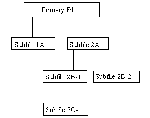
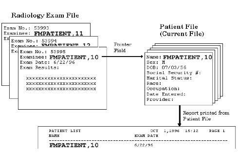

List of Figures
Figure 1: Import and Export
Tools—Example of a record delimited by a comma. 2
Figure 2: Import and Export
Tools—Example of a file with records delimited by a comma. 2
Figure 3: Import and Export
Tools—Example of a record where the delimiter between quotes is ignored 3
Figure 4: Import and Export
Tools—Example of a fixed-length record. 3
Figure 5: Import and Export
Tools—Example of a file with fixed-length records. 3
Figure 6: Import and Export Tools—Data
export options. 4
Figure 7: Import and Export
Tools—Creating the Selected Exported Fields template. 7
Figure 8: Import and Export
Tools—Creating the Export template. 9
Figure 9: Import and Export
Tools—Identifying the Foreign Format and Export templates. 9
Figure 10: Import and Export
Tools—Entering DATA TYPE field values in an Export template. 10
Figure 11: Import and Export
Tools—Searching for entries to be exported. 12
Figure 12: Import and Export
Tools—Choosing a device to send exported data. 12
Figure 13: Import and Export
Tools—Example of exported data. 14
Figure 14: Import and Export
Tools—Example of data flattening when exporting data from Multiples 14
Figure 15: Import and Export
Tools—Example of a file structure. 15
Figure 16: Import and Export
Tools—Import Data option. 16
Figure 17: Import and Export
Tools—Example of a completed Data Import form.. 17
Figure 18: Import and Export
Tools—Example of fields selected for import 18
Figure 19: Import and Export
Tools—Exiting the Template form and performing the import 19
Figure 20: Import and Export
Tools—Example of an Import Results report 20
Figure 21: Import and Export
Tools—Example of fields selected for import to a Multiple. 21
Figure 22: Import and Export
Tools—Example of data not flattened when importing data to a Multiple 21
Figure 23: Import and Export Tools—Verifying
the maximum record length on a VMS system.. 22
Figure 24: Import and Export
Tools—Using VA FileMan functions when exporting data. 27
Figure 25: Import and Export
Tools—Print Format Documentation option. 28
Figure 26: Import and Export
Tools—Listing FOREIGN FORMAT file entries using the Print Format Documentation
option 29
Figure 27: Import and Export
Tools—Define Foreign File Format option. 30
Figure 28: Import and Export
Tools—Choosing the Define Foreign Format option. 30
Figure 29: Import and Export
Tools—Selecting an existing FOREIGN FORMAT file entry. 31
Figure 30: Import and Export
Tools—Viewing the contents of a FOREIGN FORMAT file entry. 31
Figure 31: Import and Export
Tools—Creating a new FOREIGN FORMAT file entry. 31
Figure 32: Import and Export
Tools—ScreenMan form for editing foreign formats. 32
Figure 33: Import and Export
Tools—Second page of a Multiple’s with a “popup” window opened. 33
Figure 34: Relational
Navigation—Example Illustrating Relational Navigation. 34
Figure 35: Relational
Navigation—Example of a simple extended pointer 35
Figure 36: Relational
Navigation—Example of a relational query. 37
Figure 37: Relational Navigation—Example
of the short form extended Pointer syntax. 37
Figure 38: Relational
Navigation—Entering print specifications and including fields in pointed-to
files 38
Figure 39: Relational
Navigation—Example of output that includes fields from pointed-to files. 38
Figure 40: Relational Navigation—Using
relational jumps with the Enter or Edit File Entries option. 39
Figure 41: Relational
Navigation—Example illustrating a file with pointers to another file. 40
Figure 42: Relational
Navigation—Example using a backward extended pointer 41
Figure 43: Relational
Navigation—Example of the output produced after using a backward extended
pointer 41
Figure 44: Relational Navigation—Using
a value from one file to do a lookup in a second file. 42
Figure 45: Relational
Navigation—Example of matching entries in two files using the SORT BY field 43
Figure 46: Relational
Navigation—Example of using a WORD-PROCESSING field in an extended pointer
expression 44
Figure 47: Relational
Navigation—Example of using the simple pointer syntax to get data from a
Multiple 44
Figure 48: Relational
Navigation—Example using a cross-referenced backward pointer to yield a
multiline response: Stored in an Input template 45
Figure 49: Relational
Navigation—Example using an Input template with a cross-referenced backward
pointer to yield a multiline response 45
Figure 50: Advanced Edit
Techniques—Setting a default value for a field. 47
Figure 51: Advanced Edit
Techniques—”Stuffing” a value into a field in the database. 47
Figure 52: Advanced Edit Techniques—Deleting
a value from a field in the database. 47
Figure 53: Advanced Edit
Techniques—Warning message when deleting a value from a field in the database 47
Figure 54: Advanced Edit
Techniques—”Stuffing” default value into a field in the database—Bypassing
INPUT Transform 48
Figure 55: Advanced Edit
Techniques—Example of “Stuffing” a variable default value into a field in the
database 48
Figure 56: Advanced Edit
Techniques—Appending text on to a WORD-PROCESSING field value. 49
Figure 57: Advanced Edit
Techniques—Example of “Looping” through entries in a file. 50
Figure 58: Advanced Edit
Techniques—Example of loading data into a newly created field for select
records 50
Figure 59: Advanced Edit
Techniques—Example of deleting data from a newly created field for select
records 51
Figure 60: Advanced Edit
Techniques—Storing a list of edit fields in an INPUT template. 51
Figure 61: Advanced Edit
Techniques—Creating a special INPUT template. 52
Figure 62: Advanced Edit Techniques—Defining
INPUT template to branch to different field based on another field’s value (1
of 2) 53
Figure 63: Advanced Edit
Techniques—Defining INPUT template to branch to different field based on
another field’s value (2 of 2) 53
Figure 64: Advanced Edit
Techniques—Example verifying automatic branching to other fields based on
user’s entry (1 of 2) 54
Figure 65: Advanced Edit
Techniques—Example verifying automatic branching to other fields based on
user’s entry (2 of 2) 54
Figure 66: Advanced Edit
Techniques—Example using the Title Edit Qualifier 56
Figure 67: Advanced Edit Techniques—Example
Using the Duplicate Edit Qualifier 56
Figure 68: Advanced Edit
Techniques—Example using the required Edit Qualifier 56
Figure 69: Computed
Expressions—Example using the Print File Entries Option to identify a caption 63
Figure 70: Computed
Expressions—Defining a DATA TYPE field as COMPUTED.. 65
Figure 71: Computed
Expressions—Entering the computed expression into a DATA TYPE field of COMPUTED 65
Figure 72: Computed
Expressions—Example of dialogue encountered with a COMPUTED field with expected
numeric result (1 of 3) 65
Figure 73: Computed
Expressions—Example of dialogue encountered with a COMPUTED field with expected
numeric result (2 of 3) 66
Figure 74: Computed
Expressions—Example of dialogue encountered with a COMPUTED field with expected
numeric result (3 of 3) 66
Figure 75: Computed
Expressions—Dialogue encountered when defining a COMPUTED field. 67
Figure 76: Computed
Expressions—Entering a computed expression at a “PRINT FIELD” prompt 68
Figure 77: Computed
Expressions—Entering a computed expression at a “SORT BY” prompt 69
Figure 78: Computed Expressions—Entering
a computed expression at the “Start with” and/or “Go to” prompt 70
Figure 79: Computed Expressions—”Stuffing”
a value in a field via a computed expression. 70
Figure 80: Computed
Expressions—Entering a computed expression in an OUTPUT transform.. 71
Figure 81: Computed
Expressions—Entering a computed expression in an OUTPUT transform attached to a
field 71
Figure 82: Computed
Expressions—Example of the result of an OUTPUT transform with a computed
expression 71
Figure 83: Computed Expressions—A
|Window| with a computed expression. 71
Figure 84: Computed
Expressions—Example of the result of a |Window| with a computed expression 72
Figure 85: Statistics—Initial print
dialogue with descriptive statistics. 111
Figure 86: Statistics—Generating the
descriptive statistics. 111
Figure 87: Statistics—Initial print
dialogue for a Scattergram.. 112
Figure 88: Statistics—Generating
dialogue and sample output of a Scattergram.. 113
Figure 89: Statistics—Initial print
dialogue for a Count Histogram.. 115
Figure 90: Statistics—Generating the
Count Histogram diagram.. 116
Figure 91: System Management—Example
of creating an ALTERNATE EDITOR file entry. 127
Figure 92: System Management—Example
where the User is prompted to choose an Alternate Editor 129
Figure 93: System Management—Example
where the User selects to Compare Data Dictionaries. 129
Figure 94: System Management—Example
Namespace Compare File Entries. 131
Figure 95: List File Attributes—File
Attribute Listing format choices. 133
Figure 96: List File
Attributes—Choosing to display the Brief Listing. 133
Figure 97: List File
Attributes—Example of a Brief Data Dictionary Listing. 134
Figure 98: List File
Attributes—Example of a Condensed Data Dictionary Listing. 135
Figure 99: List File
Attributes—Example of a Standard Data Dictionary Listing. 138
Figure 100: List File
Attributes—Choosing the Modified Standard Data Dictionary Listing. 140
Figure 101: List File
Attributes—Choosing the Custom-Tailored Data Dictionary Listing. 141
Figure 102: List File
Attributes—Choosing from a list of field attributes. 142
Figure 103: List File Attributes—Help
on print formatting in the Custom-Tailored Data Dictionary Listing 143
Figure 104: List File
Attributes—Selecting the field attributes to print 143
Figure 105: List File Attributes—Example
of a Custom-Tailored Data Dictionary Listing. 143
Figure 106: List File
Attributes—Example of a Global Map Data Dictionary Listing. 144
Figure 107: List File
Attributes—Example of an Indexes and Cross-References Only Data Dictionary
Listing 145
Figure 108: List File
Attributes—Example of a Keys Only Data Dictionary Listing. 146
Figure 109: List File
Attributes—Example of the dialogue encountered when using the Map Pointer
Relations option 146
Figure 110: List File
Attributes—Example of the output produced with the Map Pointer Relations option 147
Figure 111: List File
Attributes—Example of dialogue and output encountered when using Check/Fix DD
Structure option 148
Figure 112: Data Dictionary
Utilities—Example of dialogue and output encountered when using the Find
Pointers Into a File option 149
Figure 113: List File
Attributes—Example setting up the Meta Data Dictionary. 150
Figure 114: List File
Attributes—Example Meta Data Dictionary. 151
Figure 115: Creating Files and
Fields—Choosing Screen Mode when using the Modify File Attributes option 154
Figure 116: Creating Files and
Fields—Example using the Modify File Attributes option in Screen Mode 155
Figure 117: Creating Files and
Fields—Defining a DATA TYPE field value as DATE/TIME in Scrolling Mode (1 of 2) 157
Figure 118: Creating Files and
Fields—Defining a DATA TYPE field value as DATE/TIME in Scrolling Mode (2 of 2) 157
Figure 119: Creating Files and Fields—Defining
a DATA TYPE field value as NUMERIC in Scrolling Mode (1 of 2) 158
Figure 120: Creating Files and
Fields—Defining a DATA TYPE field value as NUMERIC in Scrolling Mode (2 of 2) 158
Figure 121: Creating Files and
Fields—Defining a DATA TYPE field value as SET OF CODES in Scrolling Mode 159
Figure 122: Creating Files and
Fields—Defining a DATA TYPE field value as FREE TEXT in Scrolling Mode (1 of 3) 160
Figure 123: Creating Files and
Fields—Defining a DATA TYPE field value as FREE TEXT in Scrolling Mode (2 of 3) 160
Figure 124: Creating Files and
Fields—Defining a DATA TYPE field value as FREE TEXT in Scrolling Mode (3 of 3) 160
Figure 125: Creating Files and
Fields—Defining a DATA TYPE field value as WORD-PROCESSING in Scrolling Mode 161
Figure 126: Creating Files and
Fields—Defining a DATA TYPE field value as COMPUTED in Scrolling Mode (1 of 2) 162
Figure 127: Creating Files and
Fields—Defining a DATA TYPE field value as COMPUTED in Scrolling Mode (2 of 2) 162
Figure 128: Creating Files and
Fields—Defining a DATA TYPE field value as POINTER TO A FILE in Scrolling Mode
(1 of 3) 163
Figure 129: Creating Files and
Fields—Defining a DATA TYPE field value as POINTER TO A FILE in Scrolling Mode
(2 of 3) 163
Figure 130: Creating Files and
Fields—Defining a DATA TYPE field value as POINTER TO A FILE in Scrolling Mode
(3 of 3) 163
Figure 131: Creating Files and
Fields—Defining a DATA TYPE field value as VARIABLE-POINTER in Scrolling Mode
(1 of 5) 164
Figure 132: Creating Files and
Fields—Defining a DATA TYPE field value as VARIABLE-POINTER in Scrolling Mode
(2 of 5) 164
Figure 133: Creating Files and
Fields—Defining a DATA TYPE field value as VARIABLE-POINTER in Scrolling Mode
(3 of 5) 165
Figure 134: Creating Files and
Fields—Defining a DATA TYPE field value as VARIABLE-POINTER in Scrolling Mode
(4 of 5) 165
Figure 135: Creating Files and
Fields—Defining a DATA TYPE field value as VARIABLE-POINTER in Scrolling Mode
(5 of 5) 165
Figure 136: Creating Files and
Fields—Example of help associated with a VARIABLE-POINTER field 165
Figure 137: Creating Files and
Fields—Example of “sequencing” a field. 169
Figure 138: Creating Files and
Fields—Creating a NUMBER (#.001) field. 169
Figure 139: Creating Files and
Fields—Example of creating a new file entry with a .001 field defined 170
Figure 140: Creating Files and
Fields—Looking up an entry in a file using the IEN.. 170
Figure 141: Creating Files and
Fields—Looking up an entry in a file using the FMPATIENT, 5’s IEN 170
Figure 142: Creating Files and Fields—Looking
up an entry in a file using the IEN TEST, PHARMACY 170
Figure 143: Editing a Field—LABEL,
TITLE, and AUDIT attributes. 171
Figure 144: Editing a Field—ACCESS
Privileges attributes. 172
Figure 145: Editing a Field—SOURCE,
DESTINATION, GROUP attributes. 172
Figure 146: Editing a
Field—DESCRIPTION attributes. 172
Figure 147: Editing a Field—DATA TYPE,
LENGTH, PATTERN MATCH, MANDATORY ‘HELP’ PROMPT attributes 172
Figure 148: Editing a Field—Adding
fields to a GROUP (1 of 2) 173
Figure 149: Editing a Field—Adding
fields to a GROUP (2 of 2) 173
Figure 150: Editing a Field—Deleting a
field and its definition. 174
Figure 151: Modify File Attributes
option—Creating a file. 176
Figure 152: Modify File Attributes option—Defining
the NAME (#.01) field in Screen Mode. 176
Figure 153: Modify File Attributes
option—Editing a DATE/TIME field in Screen Mode. 177
Figure 154: Modify File Attributes
option—Defining a DATA TYPE field as DATE/TIME in Screen Mode 177
Figure 155: Modify File Attributes
option—Editing a SET OF CODES field in Screen Mode. 178
Figure 156: Modify File Attributes
option—Defining a DATA TYPE field as SET OF CODES in Screen Mode 178
Figure 157: Modify File Attributes
option—Editing a FREE TEXT field in Screen Mode. 179
Figure 158: Modify File Attributes
option—Defining a Data Type as FREE TEXT in Screen Mode. 179
Figure 159: Modify File Attributes
option—Carets (“^”) in a FREE TEXT field: Piece position. 180
Figure 160: Modify File Attributes
option—Editing a WORD-PROCESSING field in Screen Mode. 180
Figure 161: Modify File Attributes
option—Defining a DATA TYPE field as WORD-PROCESSING in Screen Mode 181
Figure 162: Modify File Attributes
option—Editing a COMPUTED field in Screen Mode. 182
Figure 163: Modify File Attributes
option—Defining a DATA TYPE field as COMPUTED in Screen Mode 182
Figure 164: Modify File Attributes
option—Editing a POINTER TO A FILE field in Screen Mode. 183
Figure 165: Modify File Attributes
option—Defining a DATA TYPE field as POINTER TO A FILE in Screen Mode 183
Figure 166: Modify File Attributes
option—Editing a VARIABLE-POINTER field in Screen Mode. 184
Figure 167: Modify File Attributes
option—Defining a DATA TYPE field as VARIABLE-POINTER in Screen Mode 184
Figure 168: Addition/Editing of a
Field of Data Type BOOLEAN.. 185
Figure 169: Addition/Editing of a
Field of Data Type LABEL REFERENCE. 186
Figure 170: Addition/editing of a
field of data type TIME. 187
Figure 171: Addition/Editing of a
Field of Data Type YEAR.. 188
Figure 172: Addition/Editing of a
Field of Data Type UNIVERSAL TIME.. 189
Figure 173: Addition/Editing of a
Field of Data Type FT POINTER.. 190
Figure 174: Addition/Editing of a
Field of Data Type FT DATE. 191
Figure 175: Addition/editing of a
field of data type RATIO.. 192
Figure 176: Modify File Attributes
option—Creating a Multiple in Screen Mode. 192
Figure 177: Modify File Attributes
option—Defining a DATA TYPE field as a NUMERIC Multiple in Screen Mode 193
Figure 178: Modify File Attributes
option—Editing a Multiple’s Subfield in Screen Mode. 193
Figure 179: Modify File Attributes
option—Reviewing/Editing the Properties of a Multiple Data Type Field in Screen
Mode 194
Figure 180: Modify File Attributes
option—Example of a .01 Subfield of a Multiple. 194
Figure 181: Modify File Attributes
option—Defining a Data Type field as a NUMERIC Subfield in Screen Mode 195
Figure 182: File Utilities—Editing a
Traditional cross-reference (1 of 2) 199
Figure 183: File Utilities—Editing a
Traditional cross-reference (2 of 2) 199
Figure 184: File Utilities—Creating a
Traditional cross-reference. 200
Figure 185: File Utilities—Deleting a
Traditional cross-reference. 200
Figure 186: File Utilities—Editing a
New-Style cross-reference. 203
Figure 187: File Utilities—Editing a
New-Style cross-reference in Screen Mode. 204
Figure 188: File Utilities—Creating a
New-Style cross-reference. 205
Figure 189: File Utilities—Creating a
New-Style cross-reference in Screen Mode. 206
Figure 190: File Utilities—Deleting a
New-Style cross-reference. 207
Figure 191: File Utilities—Example of
setting a field as an identifier 208
Figure 192: File Utilities—Example of
an identifier field displayed when doing a lookup. 208
Figure 193: File Utilities—Example of
a Subfield as an identifier 208
Figure 194: File Utilities—Deleting an
identifier field. 209
Figure 195: File Utilities—Sample
dialogue when re-indexing a file. 209
Figure 196: File Utilities—Choosing
the Edit File option. 211
Figure 197: File Utilities—Using the
Edit File option in Screen Mode. 212
Figure 198: File Utilities—Example of
creating an OUTPUT transform.. 214
Figure 199: File Utilities—Example of
the first screen of a PRINT template. 215
Figure 200: File Utilities—Editing a
PRINT template’s properties in Screen Mode (first screen) 216
Figure 201: File Utilities—Editing a
PRINT template’s properties in Screen Mode (second screen) 216
Figure 202: File Utilities—Example of
the of a SORT Template (first screen) 217
Figure 203: File Utilities—Editing a
SORT Template’s Properties in Screen Mode (first screen) 218
Figure 204: File Utilities—Editing a
SORT Template’s Properties in Screen Mode (second screen) 218
Figure 205: File
Utilities—Mandatory/Required Field Check Report 219
Figure 206: File Utilities—Creating a
Key. 220
Figure 207: File Utilities—Creating a
Key in Screen Mode. 221
Figure 208: File Utilities—Creating
the Uniqueness Index automatically. 221
Figure 209: File Utilities—Resolving a
conflict with the Key fields and Uniqueness Index. 222
Figure 210: File Utilities—Editing a
Key. 222
Figure 211: File Utilities—Deleting a
Key. 223
Figure 212: File Utilities—Verifying a
Key. 224
Figure 213: Auditing—Audit options. 225
Figure 214: Auditing—Example of a Data
Field Audit 226
Figure 215: Auditing—Turning a Data
Audit On. 227
Figure 216: Auditing—Turning a Data
Audit Off 227
Figure 217: Auditing—CAPTIONED Output
with Audit Trail 228
Figure 218: Auditing—AUDIT File: Query. 229
Figure 219: Auditing—AUDIT File:
Output 229
Figure 220: Auditing—Sample listing
showing fields flagged for auditing. 230
Figure 221: Auditing—Choosing to purge
only selected data audit records. 230
Figure 222: Auditing—Listing internal
entry numbers for data audit fields for possible purging. 231
Figure 223: Auditing—Purging selected
audit records from a file. 231
Figure 224: Auditing—Purging all
audit records from a file. 232
Figure 225: Auditing—Choosing to
review a Data Dictionary Audit 232
Figure 226: Auditing—Specifying a Data
Dictionary Audit 233
Figure 227: Auditing—Reviewing a Data
Dictionary Audit 233
Figure 228: Auditing—Reviewing DD
Changes for Time Period. 234
Figure 229: Auditing—Purging selected
Data Dictionary Audit records. 235
Figure 230: Auditing—Purging all
Data Dictionary Audit records. 235
Figure 231: Auditing—Auditable Word
Processing Fields. 236
Figure 232: Auditing—+Uneditable Data. 236
Figure 233: Auditing—Sample User
Access Report 237
Figure 234: Transferring File
Entries—Transferring data within a file. 242
Figure 235: Transferring File Entries—Example
displaying two records in a file prior to a transfer 243
Figure 236: Transferring File Entries—Initiating
a transfer of file entries. 243
Figure 237: Transferring File
Entries—Results after a transfer of file entries. 243
Figure 238: Transferring File
Entries—Transferring entries from one file to another 244
Figure 239: Transferring File
Entries—Selecting specific entries for transfer 245
Figure 240: Transferring File
Entries—Using the Transfer File Entries option to create a new file. 245
Figure 241: Transferring File
Entries—Selecting entries to compare in a file (1 of 2) 246
Figure 242: Transferring File
Entries—Selecting entries to compare in a file (2 of 2) 246
Figure 243: Transferring File
Entries—Comparison output 247
Figure 244: Transferring File
Entries—Merging entries in a file. 247
Figure 245: Transferring File
Entries—Choosing which file entry will serve as the default entry. 248
Figure 246: Transferring File
Entries—Deleting the “Merged From” file entry. 248
Figure 247: Transferring File
Entries—Setting up the merge output 248
Figure 248: Transferring File
Entries—Merge output (1 of 2) 249
Figure 249: Transferring File Entries—Merge
output (2 of 2) 250
Figure 250: Transferring File
Entries—Merge options. 250
Figure 251: Transferring File
Entries—Merge PROCEED option. 251
Figure 252: Transferring File
Entries—Merge SUMMARIZE option. 251
Figure 253: Extract Tool—Options. 257
Figure 254: Extract Tool—Search, Sort,
and Print options when selecting entries to extract 258
Figure 255: Extract Tool—Select
entries to extract output 259
Figure 256: Extract Tool—Example of a
notice regarding an outstanding extract activity. 259
Figure 257: Extract Tool—Using the
ADD/DELETE SELECTED ENTRIES option. 260
Figure 258: Extract Tool—Using the
PRINT SELECTED ENTRIES option. 261
Figure 259: Extract Tool—PRINT
SELECTED ENTRIES option output 261
Figure 260: Extract Tool—Using the
MODIFY DESTINATION FILE option (1 of 2) 262
Figure 261: Extract Tool—Using the
MODIFY DESTINATION FILE option (2 of 2) 262
Figure 262: Extract Tool—Using the
CREATE EXTRACT TEMPLATE option. 264
Figure 263: Extract Tool—Example of a
notice regarding a discrepancy. 264
Figure 264: Extract Tool—Example of
the warning message when the validation check fails. 265
Figure 265: Extract Tool—Using the
UPDATE DESTINATION FILE option. 265
Figure 266: Extract Tool—Exception
Report 266
Figure 267: Extract Tool—Using the
PURGE EXTRACTED ENTRIES option (1 of 2) 267
Figure 268: Extract Tool—Using the
PURGE EXTRACTED ENTRIES option (2 of 2) 267
Figure 269: Extract Tool—Using the
CANCEL EXTRACT SELECTION option. 268
Figure 270: Extract Tool—Using the
VALIDATE EXTRACT TEMPLATE option. 269
Figure 271: Filegrams—Creating a FILEGRAM
template (1 of 3) 271
Figure 272: Filegrams—Creating a
FILEGRAM template (2 of 3) 271
Figure 273: Filegrams—Creating a
FILEGRAM template (3 of 3) 272
Figure 274: Filegrams—FILEGRAM
Template output 273
Figure 275: Filegrams—Example of
creating a specifier (1 of 2) 274
Figure 276: Filegrams—Example of
creating a specifier (2 of 2) 274
Figure 277: Filegrams—Deleting a
specifier 274
Figure 278: Filegrams—Example of
generating a Filegram.. 275
Figure 279: Filegrams—Example of a
Filegram received and forwarded. 276
Figure 280: Filegrams—Example of a
simple Filegram (without pointers) 277
Figure 281: Filegrams—Deleting a
Filegram.. 278
Figure 282: Archiving—Options. 281
Figure 283: Archiving—Example of
selecting entries to archive. 282
Figure 284: Archiving—Example of a
notice regarding an outstanding archiving activity. 283
Figure 285: Archiving—Example of
adding an entry to the Archival Activity. 283
Figure 286: Archiving—Printing an
Archival Activity in a regular format 284
Figure 287: Archiving—Printing an
Archival Activity in a Filegram format 284
Figure 288: Archiving—Example of
creating a Filegram Archiving template. 285
Figure 289: Archiving—Example of
writing entries to temporary storage. 286
Figure 290: Archiving—Example of
moving archived data to permanent storage. 288
Figure 291: Archiving—Example of an
Archive Activity Report 289
Figure 292: Archiving—Example of a
notice from VA FileMan when purging without archiving data 289
Figure 293: Archiving—Example of
purging permanently archived data. 290
Figure 294: Archiving—VA FileMan
notifies you of the number of entries purged. 290
Figure 295: Archiving—Canceling an
archival activity. 290
Figure 296: Archiving—Example of
finding archived entries. 291
Figure 297: Meta Data Dictionary
Example Entry for File 200, Field .01. 293
List of Tables
Table 1: Documentation Symbol
Descriptions. xxvi
Table 2: Import and Export
Tools—Foreign format field prompts. 8
Table 3: Import and Export
Tools—Allowable sort qualifiers when exporting data. 11
Table 4: Relational
Navigation—Relational jumps that correspond to extended pointer syntax. 39
Table 5: Advanced Edit Techniques—Edit
Qualifiers. 55
Table 6: Advanced Edit Techniques—Text
formatting expressions in word-processing windows. 58
Table 7: Computed Expressions—Unary
Operators. 61
Table 8: Computed Expressions—Binary
Operators. 61
Table 9: Computed Expressions—Boolean
Operators. 62
Table 10: Computed Expressions—Example
Indicating Possible Results of Computed Expression Based on Different Entries
to “Totaling” Prompt 66
Table 11: VA FileMan Functions—Documentation
Conventions. 73
Table 12: VA FileMan Functions—By
Category. 74
Table 13: VA FileMan
Functions—Date/Time Function: BETWEEN.. 76
Table 14: VA FileMan
Functions—Date/Time Function: DATE.. 76
Table 15: VA FileMan
Functions—Date/Time Function: DAYOFWEEK.. 77
Table 16: VA FileMan Functions—Date/Time
Function: MID.. 77
Table 17: VA FileMan
Functions—Date/Time Function: MINUTES.. 78
Table 18: VA FileMan
Functions—Date/Time Function: MONTH. 78
Table 19: VA FileMan
Functions—Date/Time Function: MONTHNAME. 78
Table 20: VA FileMan Functions—Date/Time
Function: —NOON.. 79
Table 21: VA FileMan
Functions—Date/Time Function: NOW.. 79
Table 22: VA FileMan
Functions—Date/Time Function: NUMDATE.. 80
Table 23: VA FileMan
Functions—Date/Time Function: NUMDATE4. 80
Table 24: VA FileMan Functions—Date/Time
Function: NUMDAY. 80
Table 25: VA FileMan
Functions—Date/Time Function: NUMMONTH.. 81
Table 26: VA FileMan
Functions—Date/Time Function: NUMYEAR.. 81
Table 27: VA FileMan
Functions—Date/Time Function: NUMYEAR4. 81
Table 28: VA FileMan Functions—Date/Time
Function: RANGEDATE.. 82
Table 29: VA FileMan
Functions—Date/Time Function: TIME. 82
Table 30: VA FileMan
Functions—Date/Time Function: TODAY. 82
Table 31: VA FileMan
Functions—Date/Time Function: YEAR.. 83
Table 32: VA FileMan
Functions—Environmental Function: BREAKABLE. 83
Table 33: VA FileMan
Functions—Environmental Function: CLOSE. 84
Table 34: VA FileMan
Functions—Environmental Function: SITENUMBER.. 84
Table 35: VA FileMan
Functions—Environmental Function: USER.. 85
Table 36: VA FileMan Functions—File
and File Data Function: COUNT. 86
Table 37: VA FileMan Functions—File
and File Data Function: DUPLICATED.. 87
Table 38: VA FileMan Functions—File
and File Data Function: FILE.. 88
Table 39: VA FileMan Functions—File
and File Data Function: INTERNAL. 88
Table 40: VA FileMan Functions—File
and File Data Function: LAST. 89
Table 41: VA FileMan Functions—File
and File Data Function: MAXIMUM.. 89
Table 42: VA FileMan Functions—File
and File Data Function: MINIMUM.. 90
Table 43: VA FileMan Functions—File
and File Data Function: nTH.. 91
Table 44: VA FileMan Functions—File
and File Data Function: NEXT. 91
Table 45: VA FileMan Functions—File
and File Data Function: PREVIOUS. 92
Table 46: VA FileMan Functions—File
and File Data Function: TOTAL. 92
Table 47: VA FileMan
Functions—Mathematical Function: ABS. 93
Table 48: VA FileMan
Functions—Mathematical Function: BETWEEN.. 93
Table 49: VA FileMan
Functions—Mathematical Function: MAX.. 94
Table 50: VA FileMan
Functions—Mathematical Function: MIN.. 94
Table 51: VA FileMan
Functions—Mathematical Function: MODULO.. 95
Table 52: VA FileMan
Functions—Mathematical Function: SQUAREROOT. 95
Table 53: VA FileMan
Functions—Printing Related Function: IOM.. 96
Table 54: VA FileMan
Functions—Printing Related Function: PAGE. 96
Table 55: VA FileMan Functions—String
Function: DUP. 97
Table 56: VA FileMan Functions—String
Function: LOWERCASE.. 97
Table 57: VA FileMan Functions—String
Function: PADRIGHT. 98
Table 58: VA FileMan Functions—String
Function: REPLACE.. 98
Table 59: VA FileMan Functions—String
Function: REVERSE. 99
Table 60: VA FileMan Functions—String
Function: STRIPBLANKS. 99
Table 61: VA FileMan Functions—String
Function: TRANSLATE. 99
Table 62: VA FileMan Functions—String
Function: UPPERCASE. 100
Table 63: VA FileMan Functions—Temporary
Data Storage Function: PARAM.. 100
Table 64: VA FileMan
Functions—Temporary Data Storage Function: SETPARAM.. 101
Table 65: VA FileMan
Functions—Temporary Data Storage Function: VAR.. 101
Table 66: VA FileMan
Functions—Temporary Data Storage Function: SET. 102
Table 67: VA FileMan
Functions—M-Related Function: $A[SCII] 102
Table 68: VA FileMan Functions—M-Related
Function: $C[HAR] 103
Table 69: VA FileMan
Functions—M-Related Function: $E[XTRACT] 103
Table 70: VA FileMan
Functions—M-Related Function: $F[IND] 104
Table 71: VA FileMan
Functions—M-Related Function: $H[OROLOG] 104
Table 72: VA FileMan
Functions—M-Related Function: $I[O] 105
Table 73: VA FileMan
Functions—M-Related Function: $J[OB] 105
Table 74: VA FileMan Functions—M-Related
Function: $J[USTIFY] 106
Table 75: VA FileMan
Functions—M-Related Function: $L[ENGTH] 106
Table 76: VA FileMan
Functions—M-Related Function: $P[IECE] 107
Table 77: VA FileMan
Functions—M-Related Function: $R[ANDOM] 107
Table 78: VA FileMan
Functions—M-Related Function: $S[ELECT] 108
Table 79: VA FileMan Functions—M-Related
Function: $S[TORAGE] 108
Table 80: VA FileMan
Functions—M-Related Function: $X.. 109
Table 81: VA FileMan
Functions—M-Related Function: $Y.. 109
Table 82: Statistics—Descriptive
Statistics Qualifiers. 110
Table 83: Statistics—Histogram
Qualifiers. 114
Table 84: System Management—%ZIS
variables returned. 119
Table 85: System Management—%ZISS
variables returned. 120
Table 86: System Management—Optimal
procedures for screen-oriented utilities: Based on terminal type 123
Table 87: System Management—NEW PERSON
file (#200) fields that enhance standalone VA FileMan 124
Table 88: System Management—NEW PERSON
file (#200) fields to define key variables in VA FileMan 125
Table 89: System
Management—Description of the ^%ZOSF nodes. 126
Table 90: List File
Attributes—Condensed Data Dictionary Codes. 136
Table 91: Creating Files and
Fields—Data Types. 156
Table 92: File Utilities—Traditional
Cross-references. 198
Table 93: File Utilities—X, X1, and X2
Arrays. 202
Table 94: Auditing—”AUDIT” prompt
response. 226
Table 95: Data Security—File Access
Codes. 239
Table 96: Data Security—Field Access
Codes. 240
Table 97: Extract Tool—DATA TYPE field
value recommendations. 255
Table 98: Glossary. 294
Orientation
What is VA FileMan?
VA FileMan is the database management system for the Veterans Health Information
Systems and Technology Architecture user (VistA) environment. VA FileMan
creates and maintains a database management system that includes features such
as:
·
A report writer
·
A data dictionary manager
·
Scrolling and screen-oriented data entry
·
Text editors
·
Programming utilities
·
Tools for sending data to other systems
·
File archiving
VA FileMan can be used as a standalone database, as a set
of interactive or “silent” routines, or as a set of application utilities; in
all modes, it is used to define, enter, and retrieve information from a set of
computer-stored files, each of which is described by a data dictionary.
VA FileMan is a public domain software package that is
developed and maintained by the Department of Veterans Affairs. It is widely
used by VA medical centers and in clinical, administrative, and business
settings in this country and abroad.
 CAUTION: Programmer
access in VistA is defined as DUZ(0)=“@”. It grants the privilege to become a developer
in VistA. Programmer access allows you to work outside many of the security
controls enforced by VA FileMan, enables access to all VA FileMan files, access
to modify data dictionaries, etc. It is important to proceed with caution
when having access to the system in this way.
CAUTION: Programmer
access in VistA is defined as DUZ(0)=“@”. It grants the privilege to become a developer
in VistA. Programmer access allows you to work outside many of the security
controls enforced by VA FileMan, enables access to all VA FileMan files, access
to modify data dictionaries, etc. It is important to proceed with caution
when having access to the system in this way.
How to Use this Manual
The VA FileMan Advanced
User Manual describes the “how to” information of the VA FileMan
functionality, VistA’s database management system. The features of VA FileMan
are used throughout most VistA applications.
This manual shows how to
use the features of VA FileMan that are likely to be used by experienced VistA
users. It introduces advanced VA FileMan concepts, and shows you how to use VA
FileMan’s advanced tools.
The VA FileMan User
Manual is comprised of two separate documents:
·
The VA FileMan Advanced User Manual (this manual)
describes features that are more likely to be used by:
o Automated
Data Processing Application Coordinators (ADPACs)
o Information
Resource Management (IRM) staff
o Other
technical users
NOTE:
This document is available in Microsoft Word (.docx), Adobe Acrobat Portable
Document Format (PDF), and Hypertext Markup Language (HTML) format (see the “HTML
Manuals” section).
·
The VA FileMan User Manual shows how to use VA FileMan
features that are likely to be used by all VistA users.
NOTE: This
document is available in Microsoft Word (.docx), Adobe Acrobat Portable
Document Format (PDF), and Hypertext Markup Language (HTML) format (see the “HTML Manuals” section).
In this manual, the following
major features of VA FileMan are introduced along with a description on how to
use them:
·
Import and Export Tools.
·
Relational Navigation.
·
Advanced Edit Techniques.
·
Computed Expressions.
·
VA FileMan Functions.
·
Statistics.
· System Management.
· List File Attributes.
· Creating Files and Fields.
· File Utilities.
· Auditing.
· Data Security.
· Transferring File Entries.
· Extract Tool.
· Filegrams.
· Archiving.
REF: For VA
FileMan installation instructions in the VistA environment see the VA FileMan
Installation Guide and any national patch description of the patch being
released.
HTML Manuals
Why produce an HTML
(Hypertext Markup Language) edition of the VA FileMan User Manual?
·
The HTML versions of the VA FileMan manuals are useful as online
documentation support as you use VA FileMan. HTML manuals allow you to
instantly jump (link) to specific topics or references online.
·
The VA FileMan HTML manuals are “living” documents that are
continuously updated with the most current VA FileMan information (unlike paper
or printed documentation). They are updated based on new versions, patches, or
enhancements to VA FileMan.
·
Presenting manuals in an HTML format on a Web server also gives
new opportunities, such as accessing embedded multimedia training material
(e.g., movies) directly in the manuals themselves.
· Manuals
are accessible over the VA Intranet network.
Intended Audience
The intended audience of
this manual is all key stakeholders. The stakeholders include the following:
·
Automated Data Processing Application Coordinators (ADPACs)
·
Information Resource Management (IRM)—System administrators at
Department of Veterans Affairs (VA) sites who are responsible for computer
management and system security on the VistA M Servers.
·
Product Development (PD)—VistA legacy development teams.
· Product
Support (PS).
Disclaimers
Software Disclaimer
This software was
developed at the Department of Veterans Affairs (VA) by employees of the
Federal Government in the course of their official duties. Pursuant to title 17
Section 105 of the United States Code this software is not subject to
copyright protection and is in the public domain. VA assumes no responsibility
whatsoever for its use by other parties, and makes no guarantees, expressed or
implied, about its quality, reliability, or any other characteristic. We would
appreciate acknowledgement if the software is used. This software can be
redistributed and/or modified freely provided that any derivative works bear
some notice that they are derived from it, and any modified versions bear some
notice that they have been modified.
CAUTION: To protect
the security of VistA systems, distribution of this software for use on any
other computer system by VistA sites is prohibited. All requests for copies of
Kernel for non-VistA use should be referred to the VistA site’s local
Office of Information Field Office (OIFO).
Documentation Disclaimer
This manual provides an
overall explanation of VA FileMan and the functionality contained in VA FileMan
22.0; however, no attempt is made to explain how the overall VistA programming
system is integrated and maintained. Such methods and procedures are documented
elsewhere. We suggest you look at the various VA Internet and Intranet Websites
for a general orientation to VistA. For example, visit the Office of
Information and Technology (OI&T) VistA Development Intranet website.
 DISCLAIMER: The appearance of
any external hyperlink references in this manual does not constitute
endorsement by the Department of Veterans Affairs (VA) of this Website or the
information, products, or services contained therein. The VA does not
exercise any editorial control over the information you find at these
locations. Such links are provided and are consistent with the stated purpose
of this VA Intranet Service.
DISCLAIMER: The appearance of
any external hyperlink references in this manual does not constitute
endorsement by the Department of Veterans Affairs (VA) of this Website or the
information, products, or services contained therein. The VA does not
exercise any editorial control over the information you find at these
locations. Such links are provided and are consistent with the stated purpose
of this VA Intranet Service.
Documentation Conventions
This manual uses several
methods to highlight different aspects of the material:
·
Various symbols are used throughout the documentation to alert
the reader to special information. Table 1 gives a description of each of these
symbols:
Table 1: Documentation Symbol Descriptions
|
Symbol
|
Description
|
|
|
NOTE / REF: Used to
inform the reader of general information including references to additional
reading material.
|
|
|
CAUTION / RECOMMENDATION
/ DISCLAIMER: Used to caution the reader to take special notice of
critical information.
|
|

|
TIP: Used to inform
the reader of helpful tips or tricks they can use when working with VA
FileMan.
|
· Descriptive
text is presented in a proportional font (as represented by this font).
·
Conventions for displaying TEST data in this document are as
follows:
o The
first three digits (prefix) of any Social Security Numbers (SSN) begin with
either “000” or “666”.
o Patient
and user names are formatted as follows:
·
<Application Name/Abbreviation/Namespace>PATIENT,<N>
· <Application
Name/Abbreviation/Namespace>USER,<N>
Where:
·
<Application Name/Abbreviation/Namespace> is defined
in the Approved Application Abbreviations document.
· <N>
represents the first name as a number spelled out and incremented with each new
entry.
For example, in Kernel (DI or
FM) test patient and user names would be documented as follows:
FMPATIENT,ONE; FMPATIENT,TWO;
FMPATIENT,THREE; … FMPATIENT,14; etc.
FMUSER,ONE; FMUSER,TWO; FMUSER,THREE; … FMUSER,14; etc.
·
“Snapshots” of computer online displays (i.e., screen
captures/dialogues) and computer source code, if any, are shown in a non-proportional
font and enclosed within a box.
o User’s
responses to online prompts are bold typeface and highlighted in yellow
(e.g., <Enter>).
o Emphasis
within a dialogue box is bold typeface and highlighted in blue (e.g., STANDARD LISTENER: RUNNING).
o Some
software code reserved/key words are bold typeface with alternate color
font.
o References to “<Enter>”
within these snapshots indicate that the user should press the Enter key
on the keyboard. Other special keys are represented within < >
angle brackets. For example, pressing the PF1 key can be represented as
pressing <PF1>.
o Author’s
comments are displayed in italics or as “callout” boxes.
NOTE: Callout
boxes refer to labels or descriptions usually enclosed within a box, which
point to specific areas of a displayed image.
·
All uppercase is reserved for the representation of M code,
variable names, or the formal name of options, field/file names, and security
keys (e.g., DIEXTRACT).
NOTE: Other
software code (e.g., Delphi/Pascal and Java) variable names and
file/folder names can be written in lower or mixed case (e.g., CamelCase).
Documentation
Navigation
This
document uses Microsoft® Word’s built-in navigation for internal hyperlinks. To
add Back and Forward navigation buttons to your toolbar, do the
following:
1.
Right-click anywhere on the customizable Toolbar in Word (not the
Ribbon section).
2.
Select Customize Quick Access Toolbar from the secondary menu.
3.
Select the drop-down arrow in the “Choose commands from:” box.
4.
Select All Commands from the displayed list.
5.
Scroll through the command list in the left column until you see the Back
command (green circle with arrow pointing left).
6.
Select/Highlight the Back command and select Add to add it
to your customized toolbar.
7.
Scroll through the command list in the left column until you see the Forward
command (green circle with arrow pointing right).
8.
Select/Highlight the Forward command and select Add to add it to
your customized toolbar.
9.
Select OK.
You can now use these Back
and Forward command buttons in your Toolbar to navigate back and forth
in your Word document when clicking on hyperlinks within the document.
NOTE: This is
a one-time setup and is automatically available in any other Word document once
you install it on the Toolbar.
How to
Obtain Technical Information Online
Exported VistA M Server-based software file, routine, and global documentation can
be generated through the use of Kernel, MailMan, and VA FileMan utilities.
NOTE: Methods
of obtaining specific technical information online is indicated where applicable
under the appropriate topic.
REF: For further information, see the VA FileMan Technical Manual.
Help at Prompts
VistA M Server-based software provides online help and commonly used system default
prompts. Users are encouraged to enter question marks at any response prompt.
At the end of the help display, you are immediately returned to the point from
which you started. This is an easy way to learn about any aspect of the
software.
Obtaining
Data Dictionary Listings
Technical information about VistA M Server-based files and the fields in files is stored
in data dictionaries (DD). You can use the List File Attributes option [DILIST] on the Data Dictionary Utilities menu [DI DDU] in VA FileMan to print formatted data dictionaries.
REF: For
details about obtaining data dictionaries and about the formats available, see
the “List File Attributes” section.
Assumptions
This manual is written
with the assumption that the reader is familiar with the following:
·
VistA computing environment:
o Kernel—VistA
M Server software
o VA
FileMan data structures and terminology—VistA M Server software
·
Microsoft® Windows environment
· M
programming language
Reference Materials
Readers who wish to learn
more about VA FileMan should consult the following documents:
·
VA FileMan Release Notes
·
VA FileMan Installation Guide
·
VA FileMan Technical Manual
·
VA FileMan User Manual (PDF and HTML format)
·
VA FileMan Advanced User Manual (this manual; PDF and HTML
format)
· VA
FileMan Developer’s Guide (PDF and HTML format)
REF: Zip files
of the VA FileMan documentation in HTML format are located on the VA FileMan
Intranet Product website and VDL at: http://www.va.gov/vdl/application.asp?appid=5.
Using a Web browser, open the HTML documents “table of contents” page
(i.e., index.shtml). The VA FileMan User Manual, the VA FileMan
Advanced User Manual, and the VA FileMan Developer’s Guide are all
linked together.
VistA documentation is made available online in Microsoft®
Word format and in Adobe® Acrobat Portable Document Format (PDF).
The PDF documents must be read using the Adobe® Acrobat
Reader, which is freely distributed by Adobe® Systems Incorporated
at: http://www.adobe.com/
VistA software documentation can be downloaded from the VA
Software Document Library (VDL) at:
http://www.va.gov/vdl/
REF: VA
FileMan manuals are located on the VDL at: http://www.va.gov/vdl/application.asp?appid=5
VistA documentation and software can also be downloaded
from the Product Support (PS) Anonymous Directories.
If you want to use an application like Microsoft® Excel to manipulate
data stored in a VA FileMan file, you need some way to exchange that data
between VA FileMan and your application. VA FileMan provides the Import and
Export Tools for this purpose.
Suppose, for example, that
you want to use Microsoft® Word’s Print Merge utility to print a
form letter to a list of recipients that is maintained in a VA FileMan file.
You can use VA FileMan’s Export Tool to export the list of recipients
from the VA FileMan file to Microsoft® Word. Once you have done
this, you can use Word to generate your form letters based on the exported
list.
In theory, you can exchange data with any application that supports delimited or fixed-length ASCII data exchange. Many
applications do, using a variety of formats. Typically, you can expect the
ability to import and export data with the following types of applications:
·
Databases
·
Spreadsheets
·
Statistical and Analysis Programs (SAS, SPSS, etc.)
·
Vertical Applications
· Word
Processor (data records, not word-processing text)
NOTE: You can
export data records to a word-processor, which often uses data records for
functions such as print merges. You cannot use the Import or
Export Tools to exchange word-processing fields from VA FileMan files, however.
Movement of data between applications that do not “speak the same language”
is a complex process, because it involves coordinating activities in different
computer applications and often in multiple computing environments.
VA FileMan’s Import
and Export Tools use ASCII data exchange. It is the oldest and most
widely supported way of exchanging data between applications. Data for a
particular record or group of records can be transported in one of two standard
formats:
·
Delimited
· Fixed-length
To export data from a VA FileMan file, use
the Export Tool to create an ASCII data file containing exported
records. The exported data is formatted in such a way that it can be recognized
by the particular foreign application. The ASCII data file can then be imported
into the foreign application.
To import data to a VA FileMan file, use
your foreign application to generate an ASCII data file containing records in
either delimited or fixed-length formats. Then use the Import Tool to
load those records into the VA FileMan file you specify.
For import or export of data to succeed, the data must be passed correctly on
all communication pathways between VA FileMan and the foreign application. A
glitch in the communication of data can cause data exchange to fail.
For example, suppose the foreign application expects the
fields in records you are exporting to be separated (or “delimited”) by the Tab
character (<TAB>). The Export Tool can output a <TAB>
between each field’s data value. However, if you use a communication program’s
screen capture facility to create a file of the exported data and if that
communication program automatically changes <TAB>s into a certain
number of spaces to align text, the exported data is corrupted and the import fails.
You should be familiar with your importing or exporting
application and with any communications programs that you are using. Knowledge
of all the applications involved, starting with VA FileMan and its Import and
Export Tools, increases the likelihood of a successful transfer of data.
1.3.1.1
Delimited Data Format
Suppose you have a record with the following data:
·
LASTNAME = “FMPATIENT”
·
FIRSTNAME = “ONE”
·
AGE = “36”
In delimited data format,
you choose a delimiter character to place between field values. For this
example, use a comma as the delimiter character.
A comma (“,”) is
then inserted between each of a record’s fields, to “delimit” them. The
resulting record, exported in comma-delimited format, would look like Figure 1:
Figure 1: Import and Export Tools—Example of a record
delimited by a comma
Groups of records are
exported line-by-line, one line after another. A file of records in
comma-delimited format might look like Figure 2:
Figure 2: Import and Export Tools—Example of a file
with records delimited by a comma
FMPATIENT,TWO,1
GREEN LANE,,,Amherst,NH,99999
FMPATIENT,THREE,0
Plaza Court,,,San Francisco,CA,99999
FMPATIENT,FOUR,0
123rd St.,,,San Francisco,CA,99999
In order to use delimited data format, both applications
(the exporting application and the importing application) must be able
to recognize the format.
Now, suppose in the previous example that instead of two separate fields for
LASTNAME and FIRSTNAME, there is only a single NAME field for both. Suppose
that incoming data you want to place in the single NAME field comes in the form
FMPATIENT,FOUR, but you still want to use commas as your delimiter. You can use
the “Fields Quoted” setting in the Import form (or the Quote Non-Numeric Fields
setting in a Foreign Format) to ignore the delimiter if it is between quotes in
the incoming data.
Thus, if you set “Fields
Quoted” to YES in your import form, and you pass in a record that looks
like Figure 3:
Figure 3: Import and Export Tools—Example of a record
where the delimiter between quotes is ignored
“FMPATIENT,FOUR”,0
123rd St.,,,San Francisco,CA,99999
For quoted fields, like “FMPATIENT,FOUR”, the Import Tool
ignores the comma delimiter between the quotes and treats “FMPATIENT,FOUR” as a
single field value.
1.3.1.2
Fixed-Length Data Format
In fixed-length data format, a standard width is expected for each field in the
record. Suppose, for example, you have a record with LASTNAME = “FMPATIENT”,
FIRSTNAME = “ONE”, AGE = “36”. 25 characters might be set aside for LASTNAME,
20 characters for FIRSTNAME, and 3 characters for AGE. The resulting record,
exported in fixed-length format, would look like Figure 4:
Figure 4: Import and Export Tools—Example of a fixed-length
record
Groups of records are
exported line-by-line, one line after another. A file of records in
fixed-length format might look like Figure 5:
Figure 5: Import and
Export Tools—Example of a file with fixed-length records
FMPATIENT TWO 29
FMPATIENT THREE 47
FMPATIENT FOUR 38
In order to use fixed-length data format, both
applications (the exporting application and the importing application) must
be able to recognize the format.
The
menu in Figure 6 shows the options used to export data:
Figure 6: Import and Export Tools—Data export options
VA FileMan ... [DIUSER]
Other
Options ... [DIOTHER]
Data Export to Foreign Format ... [DDXP EXPORT MENU]
Define
Foreign File Format [DDXP DEFINE FORMAT]
**>
Locked with DDXP-DEFINE
Select
Fields for Export [DDXP SELECT EXPORT FIELDS]
Create
Export Template [DDXP CREATE EXPORT TEMPLATE]
Export
Data [DDXP EXPORT DATA]
Print
Format Documentation [DDXP FORMAT DOCUMENTATION]
NOTE: The
Export Data option [DDXP EXPORT DATA] is used to stream data to external
devices or files. It is not designed to print clearly to the screen.
If you know how to print file entries, you already know
most of the procedures to export file entries. The Export Tool is based on the standard VA FileMan Print File Entries
option.
REF: For more
information on the Print File Entries option, see the “Print: How to Print
Reports from Files” section in the VA FileMan User Manual.
The Export Tool creates a
specially formatted print output. Some limitations apply to data exports that
do not apply to setting up a regular print (e.g., WORD-PROCESSING-type
fields cannot be exported). Some capabilities are available when
exporting that are not when you are printing (e.g., the records you
export can be longer than 245 characters, if you are using a delimited format; see
the description of the Maximum Output Length FOREIGN FORMAT attribute below).
These differences are discussed below.
The steps to export data
are:
1. Make Sure a FOREIGN FORMAT File Entry is Available—Make
sure there is a FOREIGN FORMAT file (#.44) entry available to export your data
in the format expected by the receiving application.
2.
Select Fields for Export Option—Select
the fields you want to export (Select Fields for Export option). This creates a SELECTED EXPORT FIELDS template.
3.
Create Export Template Option—Create
an EXPORT Template. This is where you combine the SELECTED EXPORT FIELDS template
with a desired FOREIGN FORMAT.
4.
Choose Entries/Export Data—Export
Data option. This is where you select which entries to export, and perform the
export.
1.3.2.1
Make Sure a FOREIGN FORMAT File Entry is Available
First,
you need to determine an ASCII data format (some form of delimited or
fixed-length) that your foreign application recognizes. This is the format you
need the Export Tool to generate.
This data format must
be set up in advance, as an entry in the FOREIGN FORMAT file (#.44). The following are the major format parameters stored in a FOREIGN FORMAT file
(#.44) entry:
·
What delimiters are used between fields?
·
Does the export use fixed length fields?
·
What headers to output before the body of the data, and what
footers after the data
· Any
special formatting for specific DATA TYPE field values (e.g., dates and
numbers)?
Some formats are already
set up in advance in the FOREIGN FORMAT file (#.44), targeted towards specific foreign applications. These include:
·
Word Data File (Comma)
·
Excel (Comma)
·
Excel (Tab)
·
1-2-3 Import Numbers
·
1-2-3 Data Parse
· Oracle
(Delimited)
Keep in mind that applications are often updated. A format
that worked for one version may not work for a different version, or a
more efficient, simpler format might be possible for a different version.
REF: The full
details of the export parameters that can be set up for exporting are described
in the “FOREIGN FORMAT File Attributes Reference”
section.
In many cases, you can use an existing FOREIGN FORMAT file
(#.44) entry for your export. If you need to create a new FOREIGN FORMAT
file (#.44) entry (rather than using an existing entry), set up the new entry
with the Define Foreign File Format option.
With the Define Foreign File Format Option, you determined
the data format for your export, and made sure there was a corresponding FOREIGN
FORMAT file (#.44) entry. The next step is to choose what file and field data
to export. Do this using the Select Fields for Export Option; this creates a SELECTED EXPORT FIELDS template.
The process of creating a SELECTED EXPORT FIELDS template
is very similar to the way you choose fields for printing with the Print File
Entries option.
REF: For
details on selecting fields, see the “Choosing Print Fields” section in the “Print:
How to Print Reports from Files” section in the VA FileMan User Manual.
First, you must identify the file from which you
are exporting data. This is the primary file. Then you choose from which fields
to export data.
In addition to fields from that file and its Multiples,
you can export data from other files by using the extended pointer syntax.
REF: For more
information on pointer syntax, see the “Relational Navigation” section.
Also, you can put other computed expressions at the “EXPORT
FIELD:” prompt to make use of VA FileMan functions or M code.
There are several kinds of
specifications that are valid at the “PRINT FIELD:” prompt that are not
allowed at the “EXPORT FIELD:” prompt. They are:
·
WORD-PROCESSING-type fields.
·
“ALL” signifying all the fields in a file.
·
Print qualifiers following the field designation (e.g., “;X”
or “;C22”).
·
Statistical print qualifiers preceding the field (e.g., “#” or “&”).
·
Backward extended pointers.
·
Relational jumps to other files (i.e., use of a
terminating colon); instead, use the full extended pointer syntax to obtain
data from other files.
· Specifications
that return more than one value (e.g., a Multiple in a pointed-to file);
you can specify Multiples in the primary file.
After you enter a set of field specifications, you are immediately
prompted for a template in which to store the selected fields. You must
store your field specifications in a template to proceed with the next step in
the data export. After you specify a template name for the SELECTED EXPORT
FIELDS template, you have completed this step.
Figure 7 is an example of the “EXPORT FIELD:”
dialogue. The example uses the sample PATIENT file (#2).
Several unacceptable responses are shown; the error messages are the ones you
would receive to these responses:
Figure 7: Import and Export Tools—Creating the
Selected Exported Fields template
Select VA FileMan
OPTION: OTHER OPTIONS
Select OTHER OPTION:
DATA EXPORT TO FOREIGN FORMAT
Select DATA EXPORT
TO FOREIGN FORMAT OPTION: SELECT FIELDS FOR
EXPORT
OUTPUT FROM WHAT
FILE: PATIENT
FIRST EXPORT FIELD: NAME;S
SORRY. You cannot
add ;S to the export field specifications.
FIRST EXPORT FIELD: NAME
THEN EXPORT FIELD: INTERNAL(SEX)
THEN EXPORT FIELD: RELIGION:
SORRY. You cannot
jump to another file when selecting fields
for export.
THEN EXPORT FIELD: $E(RELIGION:CLASSIFICATION,1,5)
THEN EXPORT FIELD: DIAGNOSIS <Enter> (multiple)
THEN EXPORT DIAGNOSIS
SUB-FIELD: DIAGNOSIS
THEN EXPORT
DIAGNOSIS SUB-FIELD: HISTORY <Enter>
(word-processing)
SORRY. You cannot
choose a word processing field for export.
THEN EXPORT
DIAGNOSIS SUB-FIELD: AGE AT ONSET
THEN EXPORT
DIAGNOSIS SUB-FIELD: <Enter>
THEN EXPORT FIELD: <Enter>
STORE EXPORT LOGIC
IN TEMPLATE: PATIENT TEST
Are you adding ‘PATIENT
TEST’ as a new PRINT TEMPLATE? No// Y <Enter>
(Yes)
Select DATA EXPORT
TO FOREIGN FORMAT OPTION:
SELECTED EXPORT FIELDS templates are sometimes referred to as PRINT templates in the user dialogue. This is because
they are stored in the PRINT TEMPLATE file (#.4).
NOTE: Even
though you cannot “jump” to the RELIGION file (#13) using the RELIGION field, which is a pointer to the RELIGION file (#13), you can
retrieve data from that file by using extended pointer syntax.
REF: For more information on pointer syntax, see the “Relational Navigation” section.
You can edit a SELECTED EXPORT FIELDS template. The editing must occur in the Export Data option, not in the
standard Print File Entries option. To edit one, enter the template name at the
“FIRST EXPORT FIELD:” prompt preceded by a left bracket (“[“).
If an EXPORT template (see Section 1.3.2.3) has been created based on the SELECTED
EXPORT FIELDS template that you edit, the SELECTED EXPORT FIELDS template are not
updated to reflect the changes. You must create a new SELECTED EXPORT
FIELDS template to make use of the changes.
1.3.2.3
Create Export Template Option
The
next step to export data is to create an EXPORT template with the Create Export
Template option. The EXPORT template combines the SELECTED EXPORT FIELDS
template (created in Step 2 above) with a FOREIGN FORMAT file (#.44) (see Step 1 above).
Besides choosing a SELECTED
EXPORT FIELDS template and a FOREIGN FORMAT, you are asked for any additional
information that is needed to fully define the export. If you do not
supply the requested information, the EXPORT template cannot be created.
Values in the FOREIGN FORMAT entry you choose determine whether or not you are
prompted for more information.
Table 2 indicates which values for which FOREIGN
FORMAT fields result in prompts:
Table 2: Import and Export Tools—Foreign format field
prompts
|
Foreign Format Field
|
Value
|
Information Required
|
|
FIELD DELIMITER
|
“ASK”
|
The character or characters to separate fields.
|
|
RECORD DELIMITER
|
“ASK”
|
The character or characters to separate records.
|
|
RECORD LENGTH FIXED?
|
“1” or “YES”
|
The number of characters in each field to be exported.
|
|
NEED FOREIGN FIELD NAMES?
|
“1” or “YES”
|
The name of each field recognized by the importing
application.
|
|
MAXIMUM OUTPUT LENGTH
|
“Ø”
|
The maximum number of characters on each line of output,
usually the longest possible exported record.
|
|
PROMPT FOR DATA TYPE?
|
“1” or “YES”
|
The DATA TYPE field value of each exported field; possible
choices are:
· FREE
TEXT
· NUMERIC
· DATE/TIME
|
In the example below, the
file and field specifications in the SELECTED EXPORT FIELDS template example (Figure 7) are combined with the 123
Import Numbers FOREIGN FORMAT:
Figure 8:
Import and Export Tools—Creating the Export template
Select DATA EXPORT
TO FOREIGN FORMAT OPTION: CREATE EXPORT
TEMPLATE
OUTPUT FROM WHAT
FILE: PATIENT <Enter> (10
entries)
Enter SELECTED
EXPORT FIELDS Template: PATIENT TEST
**SELECTED EXPORT
FIELDS** (OCT 30, 1992@11:32) USER #7 FILE #99002
Do you want to see
the fields stored in the PATIENT TEST template?
Enter Yes or No:
NO// YES
FIRST PRINT FIELD:
NAME// <Enter>
THEN PRINT FIELD:
INTERNAL(SEX)// <Enter>
THEN PRINT FIELD:
$E(RELIGION:CLASSIFICATION,1,5)// <Enter>
THEN PRINT FIELD:
DIAGNOSIS// <Enter>
THEN
PRINT DIAGNOSIS SUB-FIELD: DIAGNOSIS// <Enter>
THEN
PRINT DIAGNOSIS SUB-FIELD: AGE AT ONSET// <Enter>
THEN
PRINT DIAGNOSIS SUB-FIELD: // <Enter>
THEN PRINT FIELD: //
<Enter>
Do you want to use
this template?
Enter Yes or No:
YES// <Enter>
Do you want to
delete the PATIENT TEST template
after the export
template is created?
Enter Yes or No:
NO// <Enter>
When asked if you want the SELECTED EXPORT FIELDS template deleted, answer YES only if you know you do not need the template
again. If an EXPORT template is not successfully created, the SELECTED
EXPORT FIELDS template is not deleted.
Next, identify the FOREIGN
FORMAT to use, and name the EXPORT template that you are creating. You cannot
overwrite an existing PRINT template:
Figure 9: Import and Export Tools—Identifying the Foreign
Format and Export templates
Select FOREIGN
FORMAT: 123 IMPORT NUMBERS <Enter>
**DISTRIBUTED BY VA FILEMAN**
Enter name for
EXPORT Template: PATIENT TO 123
Are you adding ‘PATIENT
TO 123’ as
a
new PRINT TEMPLATE (the 197TH)? No// Y <Enter>
(Yes)
After you choose the EXPORT
template name, you are prompted for any additional information needed. In this
example, the format does require additional information: the DATA TYPE field
value for each field (in this situation the defaults derived by the Export Tool
are correct) and the maximum length of each record:
Figure 10: Import and Export Tools—Entering DATA TYPE
field values in an Export template
Enter the data types
of the fields being exported below.
Do you want to
continue?
Enter Yes or No:
YES// <Enter>
NAME: FREE TEXT// <Enter> FREE TEXT
INTERNAL(SEX): FREE
TEXT// <Enter> FREE TEXT
$E(RELIGION:CLASSIFICATION,1,5):
FREE TEXT// <Enter> FREE
TEXT
DIAGNOSIS in
DIAGNOSIS subfile: FREE TEXT// <Enter>
FREE TEXT
AGE AT ONSET in
DIAGNOSIS subfile: NUMERIC// <Enter>
NUMERIC
Enter the maximum
length of a physical record that can be exported.
Enter ‘^’ to stop
the creation of an EXPORT template.
MAXIMUM OUTPUT
LENGTH: 100
Export
Template created.
The Export Tool checks to make sure that your SELECTED
EXPORT FIELDS template does not contain fields from Subfiles (Multiples)
that are not descendent from each other.
REF: For more
information on Subfiles (Multiples), see the “Exporting Data from Multiples” section.
If you have not followed that restriction, you
receive an error message. The SELECTED EXPORT FIELDS template would have to be modified.
1.3.2.4
Choose Entries/Export Data
In
the final step to export data, use the Export Data option to select which entries from the file to export, and then perform the export.
First, choose which entries
to export with a “SEARCH” dialogue; then choose the order of the exported
entries with a “SORT BY” dialogue (you are not given the “SORT BY”
dialogue, if you are exporting fields from Subfiles.) Finally, specify the device
to send the exported data.
During either the Search or
Sort process, you can use previously created SEARCH and SORT templates. Those templates need not have been originally made during a data export;
however, SORT templates that contain unacceptable qualifiers should not
be used. At the “SORT BY:” prompt, you can only use the subset of sort
qualifiers shown in Table 3:
Table 3: Import and Export Tools—Allowable sort qualifiers
when exporting data
|
Sort Qualifier
|
Description
|
|
‘
|
To not sort. Used when you want to use the “FROM …
TO” dialogue to restrict the entries to be exported.
|
|
-
|
To sort in reverse order.
|
|
;Ln
|
To sort on the first n-characters only.
|
|
;TXT
|
To sort following strict ASCII sorting sequence.
|
REF: For more detailed
information about searching and sorting, see the “Print: How to Print Reports
from Files” and “Search” sections in the VA FileMan User Manual.
1.3.2.4.1 Export
Example
Figure 11 is an example of an export using
the “PATIENT TO 123” EXPORT template created in the previous section (Figure 9 and Figure 10). You begin by identifying the file and
the EXPORT template that you want to use for the export. Do not enclose
the template’s name with brackets. Again, you can delete the EXPORT template after a successful export.
Because there is a Multiple
involved, you are told that you do not have the opportunity to sort.
Then, you are given the opportunity to search the file for entries to export.
Figure 11: Import and Export Tools—Searching for
entries to be exported
Select DATA EXPORT
TO FOREIGN FORMAT OPTION: EXPORT DATA
OUTPUT FROM WHAT
FILE: PATIENT// <Enter>
Choose an EXPORT
template: PATIENT TO 123 <Enter>
**EXPORT**
(OCT
30, 1992@15:08) USER #7 FILE #99002
Do you want to
delete the PATIENT TO 123 template
after the data
export is complete?
Enter Yes or No:
NO// <Enter>
Since you are
exporting fields from multiples,
a sort will be done
automatically.
You will not have
the opportunity to sort the data before export.
Do you want to
SEARCH for entries to be exported? NO// YES
-A-
SEARCH FOR PATIENT FIELD: DATE OF BIRTH
-A-
CONDITION: < <Enter>
LESS THAN
-A-
LESS THAN DATE: 1980 <Enter>
(1980)
-B-
SEARCH FOR PATIENT FIELD: <Enter>
IF: A// <Enter> DATE OF BIRTH LESS THAN 1980
(1980)
STORE RESULTS OF
SEARCH IN TEMPLATE: <Enter>
If Multiples had not been involved, you would now
be able to respond to the SORT BY dialogue. You can do the same things with
sort here that you can do when using the Print File Entries option.
1.3.2.4.2 What
Device to Send Export Data To
After
you complete the sort dialogue, you are immediately given the “DEVICE:” prompt.
Choose what device the exported data should be sent to:
Figure 12:
Import and Export Tools—Choosing a device to send exported data
If you press the Enter key at the “DEVICE:” prompt,
the export output is displayed on your screen. Sending the formatted
export data to the screen allows you to use a PC-based screen capture to put
the data into a file. This file would be a readable ASCII file on
that computer. This method of transferring the data into a file is a simple one
that is often successful and convenient, especially if the importing
application is on the same PC.
When using a screen capture to create a file from the
exported data, you must consider the peculiarities of your communication
and terminal emulation software. Your communication application, for example, can
intercept certain control characters (like the <TAB>, ASCII 9) and
convert them into something else. This can cause the import to fail. Also, your
terminal emulation can automatically “break” lines at 80 characters by
inserting an unwanted carriage return or line feed. When emulating VT-100 and
other ANSI terminals, you can avoid this last problem by turning wraparound
mode off.
CAUTION: When
exporting data to your terminal’s screen, there are no page breaks. Therefore,
there is no graceful way to interrupt the export once it has begun.
1.3.2.4.3 Sending
Export Data to a Host File
Having
data printed on-screen is of little use, if you are using a terminal with no
screen-capture capabilities. An alternative is to send the data to a file on
the host system, for example, to a VMS file if you are using DSM. Another
advantage to sending data to a Host file is that only the exported data is in
the file. (Often, screen captures unavoidably contain extraneous parts of the
user’s dialogue prior to or after the export.) To export your data to a file,
at the “DEVICE:” prompt, send your export output to an HFS-type device.
Your IRM should be able to
help you, if you are not sure how to use HFS devices.
REF: The Kernel
Systems Management Guide also describes how to send output to Host files, including how to set up and use HFS-type devices.
When a Host file is created, you must move that
ASCII file to the computer on which the importing application resides. A file
transfer protocol (e.g., KERMIT or XMODEM) can be used to move this file.
The export can be queued, if it is not sent to the
screen. Queuing the export is recommended for large files and for
complex sorts of the data.
NOTE: On
HFS Device Setup on OpenVMS Systems: DSM for OpenVMS requires that
you add a command parameter to the OPEN command, if you export records
longer than 512 characters to a Host file. The parameter is RECORDSIZE=nnnn,
where “nnnn” is greater than the longest record that you are exporting.
If you are using Kernel’s DEVICE file (#3.5), the OPEN PARAMETER field for
the HFS device you are using should be edited to look like “(NEW:RECORDSIZE=nnnn)”.
1.3.2.4.4 Sample
Output
The data below has been prepared for import by Lotus
1-2-3, so it need not be easily read by people. However, you can see
that text fields are surrounded by quotes; empty text fields consist just of
two quotes (“”). A space is in between each field’s value. Numeric
values have no quotes. If a field defined as numeric in the VA FileMan data
dictionary has no value, a zero (0) is output, because this format has
SUBSTITUTE FOR NULL set to “0”.
Figure 13:
Import and Export Tools—Example of exported data
“FMPATIENT,FIVE” “m”
“PROTE” “GANGRENE” 45
“FMPATIENT,SIX” “f” “CATHO”
“SLEEPING SICKNESS” 28
“FMPATIENT,SEVEN” “m”
“PROTE” “CIRRHOSIS” 25
“FMPATIENT,EIGHT” “f”
“OTHER” “FLU” 34
“FMPATIENT,NINE” “m”
““ “BLOOD POISONING” 44
“FMPATIENT,FIVE” “m”
“PROTE” “GUN SHOT “ 50
“FMPATIENT,EIGHT” “f”
“OTHER” “FLU” 37
“FMPATIENT,NINE” “m”
““ “FLU” 0
“FMPATIENT,EIGHT” “f”
“OTHER” “FLU” 46
“FMPATIENT,EIGHT” “f”
“OTHER” “APPENDICITIS” 39
1.3.2.5
Special Considerations: Exporting Numbers
If
a number comes from a field in your primary file that is defined as NUMERIC or
COMPUTED, that number is exported with all leading spaces or trailing
insignificant zeroes removed. This is different from the way that the regular
VA FileMan Print File Entries works. If the field had a value of zero, the
character zero (0) is exported. If the value of a numeric field in the primary
file is null, the exported value depends on the contents of the SUBSTITUTE FOR
NULL field for the format being used.
If a number comes from a source other than a DATA TYPE
field of NUMERIC or COMPUTED in the primary file, it can be output with leading
spaces or trailing insignificant zeroes. Such a number might originate from a
field in a pointed-to file reached by the relational syntax, a VA FileMan
function, or other computed expression. In these cases, the value of the
SUBSTITUTE FOR NULL field usually has no effect on what is exported.
NOTE: Whether exported numbers have leading spaces
or trailing insignificant zeroes and whether nulls produce special output is
controlled by how the field is defined in the VA FileMan data dictionary. The
DATA TYPE field input by the user when the PROMPT FOR DATA TYPE? field contains YES does not affect these characteristics of the export.
1.3.2.6.1.1 Data
Flattening
Data exported from Multiples is “flattened” (i.e., data at upper levels is
repeated for each subentry). For example, take the comma-delimited export for a
top-level file’s #.01 NAME field and a Subfile’s #.01 DATE and #1 TYPE fields.
The output for an entry with four subentries would look like Figure 14:
Figure 14: Import and Export Tools—Example of data flattening
when exporting data from Multiples
FMPATIENT,01-JAN-95,SC
FMPATIENT,24-JUN-95,NSC
FMPATIENT,14-AUG-95,SC
FMPATIENT,21-JUL-96,NSC
NOTE: The top-level
.01 field is repeated for each Subfile entry.
1.3.2.6.2 No
More Than One Multiple at Any One File Level
You cannot export more than one Multiple at any one file level. You can
export data from one Multiple and from Subfiles directly descendent from that
Multiple (as long as you never export more than one Subfile at the same level).
Suppose you are exporting data from a file with the structure shown in Figure 15:
Figure 15: Import and Export Tools—Example of a file structure

In addition to fields in the Primary file, you can export
from Subfile 1A or Subfile 2A, but not from both. Also, you can
export from Subfile 2A, Subfile 2B-1, and Subfile 2C-1, but you could not
additionally choose fields in Subfile 2B-2. If you need data from Subfiles that
are not directly descendent from each other, you can do multiple exports
and “join” the data together in the importing application.
1.3.2.6.3 Sorting
with Multiples
A special, automated sort is done to the data when
Multiples are exported; you cannot perform your own sort. When Subfiles
are involved, the Export Tool performs a special sort in order to format the
data. Since the Export Tool must do this customized sort, you cannot
sort the data yourself. If you need the data in a particular sequence, sort it
in the importing application. You can perform any search on the data that is
necessary to choose entries for export.
1.3.2.7
About EXPORT Templates
The
Export Tool uses two types of templates:
·
EXPORT FIELDS template (created in Step 2)
·
EXPORT template (created in Step 3).
These templates are
variations on standard PRINT templates. They are stored in the PRINT TEMPLATE
file (#.4) and are sometimes referred to as PRINT templates in the user
dialogue. Although similar to PRINT templates, they do differ in important
respects. For example, you cannot compile either of the Export Tool’s
templates.
You can delete these templates as soon as they are used if
you wish. Also, both kinds of templates can be deleted using the Template Edit
option on the Utility Functions menu [DIUTILITY]. In addition, you can delete
an EXPORT FIELDS template by choosing the template within the Select Fields for
Export option, editing it, and putting an at-sign (“@”) at the “NAME:”
prompt. Do not delete an EXPORT template before a queued export has been
completed.
The
menu in Figure 16 shows the option used to import data:
Figure 16: Import and Export Tools—Import Data option
VA
FileMan ... [DIUSER]
Other
Options ... [DIOTHER]
Import
Data [DDMP IMPORT]
The Import Tool lets you
import records stored in an ASCII data file into a VA FileMan file.
The Import Tool imports records from an ASCII data file by adding them as new records to the VA FileMan file in question.
Existing records in the destination VA FileMan file are never edited or
updated, and the Import Tool does not prevent duplicate records from
being added.
Importing data records from
an ASCII file is a four-step process, as described below.
1.3.3.1
Generate ASCII Source File
Generate
your source file (from your non-VA FileMan application), containing the records
to be imported. Generate the file with one record per line, with the fields in
each record being set off using either the delimited or fixed-length method.
The last record in the file must be terminated with the appropriate EOL
(End-of-Line) characters for your operating system.
Once you generate your
ASCII source file, you need to move it to a disk that is accessible from the
computer system running VA FileMan. IRM should be able to assist you with this.
Invoke
VA FileMan’s Import Data option. It loads a two-page ScreenMan
form. On page one of the form, you need to specify the: data format, source
file, and destination file for your import.
·
DATA FORMAT—INTERNAL or EXTERNAL: Specify if the incoming data is in external form (the way VA FileMan would
display it) or internal form (the way VA FileMan would store it). Unless you
are knowledgeable about how VA FileMan stores data, you should choose EXTERNAL.
Also, the incoming data is only validated by VA FileMan if you choose EXTERNAL
(validation prevents you from putting invalid data into the file).
·
FOREIGN FORMAT: Choose a Foreign Format entry whose
settings match the ASCII format for the incoming records. The only settings
used from the Foreign Format entry are
o Record
Delimiter
o Record
Length Fixed?
o Quote
Non-numeric Fields?
Make sure the settings in the Foreign Format match the
format of your incoming data. Because some foreign applications export data in
a different format than they import it, a Foreign Format that works for export
may not have the appropriate settings for import.
As an alternative to
specifying a Foreign Format entry, you can manually specify the settings for
your incoming data in the three provided fields:
1. Is the data
fixed length?
2. If not, what is
the field delimiter?
3. Are fields quoted?
· SOURCE
FILE: Enter the path and name of your source file (the file
containing the records to import).
· VA
FILEMAN FILE: Specify the destination file for the imported records.
· FIELD
SELECTION PAGE/IMPORT TEMPLATE: This is where you match the fields in the incoming records to the fields in
the destination file. If you do not have an existing IMPORT template that matches incoming to destination fields, go to the Field Selection page and
specify those fields individually (see the “Match Source to Destination Fields” section).
A completed page one of the
form might look like Figure 17:
Figure 17: Import and Export Tools—Example of a
completed Data Import form
DATA
IMPORT Page 1
===========
DATA
FORMAT SOURCE FILE
——————————- ——————————-
Internal or
external: EXTERNAL Full path: USER$:[FMPATIENT]
Host
file name: IMPORT.DAT
Foreign
format: EXCEL (COMMA)
OR
Data
fixed length? VA FILEMAN FILE
Field
delimiter: ——————————————-
Fields
quoted? Primary file: NEW PERSON
Field
selection page...
OR
Import
Template:
___________________________________________________________________________________
COMMAND:
Press <PF1>H for help Insert
For
your import, you need to match each field in the incoming record to a field in
the destination VA FileMan file.
Fields in the incoming
record are imported in order, from left to right. Thus, for each field in the
incoming record, you specify the corresponding destination field in the VA
FileMan file, in the same order. The first VA FileMan field you specify is the
destination for the first field in the incoming record, the second matches the
second field in the incoming record, and so forth.
Figure 18: Import and Export Tools—Example of fields
selected for import
FIELD
SELECTION FOR IMPORT Page 2
==========================
Choose a field from
NEW PERSON
Field:
Delete
last field selected?
These are the
fields selected so far:
1
– NAME
2
– STREET ADDRESS 1
3
– STREET ADDRESS 2
4
– STREET ADDRESS 3
5
– CITY
6
– STATE
7
– ZIP CODE
___________________________________________________________________________________
COMMAND:
Press <PF1>H for help Insert
Remember that you must include the .01 field, and
any fields that are required identifiers for the top-level of the file. The
same is true for any Subfiles (Multiples).
If you specified a fixed-length (as opposed to delimited)
data format for the incoming records, you must enter not only the
destination VA FileMan field, but also the length for each corresponding
incoming field.
Each time you enter a field at the “Field:” prompt, it’s
added to the bottom of the list of fields displayed on the form. This shows you
the destination fields you have selected, and their order. If you make a
mistake, you can delete fields from the bottom of the list, one-by-one, by
entering YES at the “Delete last field selected?” prompt. To insert a
field, delete back to the insertion point, enter the new field, and then
re-enter the deleted fields.
REF: There are
special issues when importing data into fields in Multiples; see the “Special Considerations: Multiples” section.
You can save the information you specify on the Field
Selection page in an IMPORT template. This lets you reuse the field matching
criteria you have entered for subsequent imports that use the same file and
fields, without having to re-enter it. To save your field specifications as an
IMPORT template, enter YES at the “Do you want to store the selected
fields in an Import Template?” prompt, which you are asked after you exit the
Import form (see the “Run the Import” section). Then, for future
imports, simply enter the name of the IMPORT template on Page 1 of the Import
form. You can use any IMPORT template to which your VA FileMan Access Code
gives you access.
Once
you have set up your data format, source file, and destination file, and
matched source to destination fields, exit the Import form (press <PF1>E).
After you exit the form, you are asked a series of questions:
1.
Do you want to store the selected fields in an Import Template?
2.
Do you want to proceed with the import?
3.
Device for Import Results Report
Storing your file and field specifications in an IMPORT
template lets you do subsequent imports without having to re-enter all
of the field information.
If you proceed with the import, enter a device to which
the Import Results report should print. You can run the Import directly or
queue it.
As the import proceeds, if an error occurs updating a
field in a particular record, the record is not added, and an error
message is added to the Import Report saying what the problem was.
An example of the dialogue after exiting the Import form
is shown in Figure 19:
Figure 19: Import and Export Tools—Exiting the
Template form and performing the import
Do
you want to store the selected fields in an Import Template? YES
Name
of Import Template: ZZIMPORT
Are
you adding ‘ZZIMPORT’ as a new Import Template? YES
Do
you want to proceed with the import? YES
Device
for Import Results Report: HOME// <Enter>
SYSTEM
Once the import finishes,
you can review the Import Results report. It lists:
·
The criteria you chose for your import.
·
Any records for which the import failed.
· The
internal entry numbers of the first and last records imported.
Figure 20 is a sample Import
Results report:
Figure 20: Import and Export Tools—Example of an
Import Results report
Log
for VA FileMan Data Import Page 1
==============================
Import
Initiated By: 10 FMPATIENT
Source
File: USER$:[FMPATIENT1]IMPORT.DAT
Fixed
Length: NO
Delimited
By: ,
Text
Values Quoted: NO
Values
Are: External
Primary
FileMan Destination File: NEW PERSON
Seq Len Field Name Subfile
Name (if applicable)
--- --- ---------- ----------------------------
1 n/a NAME
2 n/a STREET
ADDRESS 1
3 n/a STREET
ADDRESS 2
4 n/a STREET
ADDRESS 3
5 n/a CITY
6 n/a STATE
7 n/a ZIP CODE
Error
Report
------------
Record #4 Rejected:
The
value ‘Illlinois’ for field STATE in file NEW PERSON is not valid.
Summary
of Import
-----------------
Total
Records Read: 7
Total
Records Filed: 6
Total
Records Rejected: 1
IEN
of First Record Filed: 209
IEN
of Last Record Filed: 214
Import
Filing Started: Jul 16, 1996@08:24:36
Import
Filing Completed: Jul 16, 1996@08:24:38
Time
of Import Filing: 0:00:02
In this example (Figure 20), six records were added, and one
record was not added. The record that was not added was the
fourth record in the source file. It failed due to the misspelled value “Illlinois”
being rejected by the STATE field in the NEW PERSON file (#200).
1.3.3.5
Special Considerations: Multiples
CAUTION: Incoming Data Should not be flattened.
The Import Tool expects that any data bound for a Multiple be contained in the same
import record (line of data) as the data for the top file level. This is
different from the output of the Export Tool, which “flattens” exported data
from Multiples into separate lines of output.
For example, consider a
comma-delimited import of records, each including a name plus four subentries.
Each subentry contains a DATE and a TYPE. The records are imported into a file
with a top-level NAME field (#.01) and a Multiple with DATE field (#.01) and
TYPE field (#1). For this import, you would choose the destination fields as shown
in Figure 21:
Figure 21: Import and Export Tools—Example of fields
selected for import to a Multiple
FIELD
SELECTION FOR IMPORT Page 2
==========================
Choose a field from
PATIENT : DATE Subfile
Field:
Delete
last field selected?
These are the
fields selected so far:
1
– NAME
2
– DATE:DATE
3
– DATE:TYPE
4
– DATE:DATE
5
– DATE:TYPE
6
– DATE:DATE
7
– DATE:TYPE
8
– DATE:DATE
9
– DATE:TYPE
___________________________________________________________________________________
Exit Save Next
Page Refresh
Enter a command or ‘^’
followed by a caption to jump to a specific field.
COMMAND: NEXT Press
<PF1>H for help Insert
A corresponding line of
data to be imported for a record, containing data for both the top-level record
and its subentries, would look like:
Figure 22:
Import and Export Tools—Example of data not flattened when importing data
to a Multiple
FMPATIENT,01-JAN-95,SC,24-JUN-95,NSC,14-AUG-95,SC,21-JUL-96,NSC
NOTE: You must
file the same number of subentries in each record you import.
1.3.3.5.2 Completeness
of Subfile Entries
New subentries need to be added to every Subfile on a path
to the lowest level Subfiles. Your data must include values for the .01
field and all the required identifiers for every Subfile (as well as for the top-level
of the file). You can add more than one subentry in a particular Subfile.
However, you are restricted to the same set of fields for every entry in each
Subfile.
1.3.3.6
Importing from VMS Files
When importing from a data file that’s been transferred to a VMS-based computer
system, a problem can occur if, once transferred, the data file does not
get a maximum record length stored in its file header. This can happen when a DOS
file is moved to a VMS system by some protocols. When the maximum record length
is unknown, VMS uses a default maximum size of 510. If the length of a data
record in the source file is larger than the maximum size, an error results.
The solution is to run the VMS
CONVERT utility on the Host file. This utility adds the maximum record
information to the file header and everything works just fine!
You can see if the maximum
record length is stored in a file’s header on a VMS system, by using DCL
command in Figure 23:
Figure 23: Import and Export Tools—Verifying the
maximum record length on a VMS system
1.3.4
Foreign Formats
The following fields in the FOREIGN FORMAT File (#.44) correspond
to attributes of the formatted data that you wish to export or import:
·
FIELD DELIMITER
·
QUOTE NON-NUMERIC FIELDS?
·
SEND LAST FIELD DELIMITER?
·
PROMPT FOR DATA TYPE?
·
RECORD DELIMITER
·
SUBSTITUTE FOR NULL
·
RECORD LENGTH FIXED?
·
DATE FORMAT
·
MAXIMUM OUTPUT LENGTH
·
FILE HEADER
·
NEED FOREIGN FIELD NAMES?
· FILE
TRAILER
When exporting
records, all fields in this file are used in the export process. When importing
records, only three fields are used in the import process:
·
FIELD DELIMITER
·
RECORD LENGTH FIXED?
· QUOTE
NON-NUMERIC FIELDS?
In this section, each format characteristic is described.
Some combinations of characteristics are unacceptable; these situations are
mentioned.
Also, some of the fields allow you to enter M code.
REF: Export-specific
variables you can use in this M code are described in the “Variables Available
for Programmer Use” section.
To set up a FOREIGN FORMAT file (#.44) entry, use the Define Foreign File Format option to print out a format, use the Print Format Documentation
option.
Many applications can import and export data, if the values of fields in each record
are separated by a known character or sequence of characters. The application
puts (or expects) data before the first delimiter into its first field, between
the first and second delimiter into the second field, and so on. Therefore, the
ability to specify and recognize these field delimiters is a crucial aspect of
many data exchanges.
The Import and Export Tools’
FIELD DELIMITER fields allow you to specify up to 15 characters to be placed
between each field. You can directly enter any string of characters except ones
that begin with a number or consist of characters that have special meaning
when editing VA FileMan data (e.g., “^” or “@”).
If your field delimiter begins with one of these
restricted characters or consists of an unprintable control character (like <TAB>),
you can enter the ASCII-value of the delimiter. When entering the ASCII values,
always use three digits. Thus, <TAB> (ASCII 9) becomes “009” and “@”
(ASCII 64) becomes “064”. You can enter up to four ASCII values. If more than
one is needed, separate the values with commas (e.g., “048,094”).
If you want the user to be prompted for a field delimiter
at the time the EXPORT template is being created, enter “ASK” in this field.
CAUTION: Using
unprintable control characters (ASCII values less than 32) as delimiters may
not have the effect you want. During either export or import, often control
characters are intercepted by terminal software, communication programs, or
network links; they may not be passed through unaltered as regular printable
characters usually are. For example, ASCII value 5 is interpreted by many
terminals as a request for their Answerback Message. Thus, putting “005” in the
FIELD DELIMITER field might cause an Answerback Message to be returned by your
terminal instead of the ASCII value 5 being inserted between field values.
NOTE: The
importing application will find the delimiting character, if it occurs in the
data. This causes an incorrect determination of the boundary between fields.
For example, if a comma (,) is the field delimiter and the data for a
field was FMPATIENT,10, the importing application would put FMPATIENT
into the first field and 10 into the second field. You can avoid this
problem by specifying that data in non-numeric fields be surrounded by
quotes (e.g., “FMPATIENT,10”). Most importing applications ignore
delimiters, if they occur within a quoted string.
REF: For more information on non-numeric fields, see the “QUOTE NON-NUMERIC FIELDS?” section.
Some importing applications expect a field delimiter following every field, including
the final field in a record. Other applications only expect delimiters between
fields; nothing follows the final field. This field allows you to specify
whether or not a field delimiter should be exported after the last field. A YES
answer sends the delimiter, a NO answer does not.
The contents of this field does not affect whether
or not a delimiter is sent after each record.
Applications that import delimited fields need to know when one record ends and a
new one begins. In most cases, records are separated by a carriage return (or
by a line feed and a carriage return). This is the same as pressing Enter
at the end of a line. The Export Tool automatically puts this separator
after each record; every record begins on a new line of output. You do not
need to put the ASCII values for carriage return and line feed in this field.
Some applications may also require that additional
characters be placed after each record. If this is the case, put those
characters into the RECORD DELIMITER field. The requirements for coding the
field are the same as for the FIELD DELIMITER field.
A second common way to import and export data (in addition to using delimited data)
is with fixed length records. In a fixed length record, each field has a
predetermined, constant data length. For example, a name field might be 30
characters long. The name “FMPATNT,10” is only 10 characters long; thus, 20
spaces would be added to the field value to fill the required 30 characters.
The next field’s value would begin in the thirty-first column.
If you want to import or
export fixed length records, answer YES to this field. At the time that
the EXPORT template is created (or an import is done), the user is prompted for
the length of each field in the target or source file.
During export, in most cases data is truncated when the
length of a field is reached. Thus, if a field contains 32 characters but the
user-defined length is 30, the last 2 characters are not exported.
However, DATE/TIME-valued fields are always exported in their entirety. For
dates, the user must indicate a data length at least as long as the
exported date, which is 11 characters for standard VA FileMan dates.
NOTE: Fixed
record lengths cannot be used in conjunction with field delimited data.
Also, the maximum record size for exports for a fixed length format is 255
characters. There is no limit on record length during import, however.
CAUTION: Fixed
length exports succeed only if all fields are exported on the same physical
line. Therefore, the total of all the field lengths must not be more
than the value stored in the MAXIMUM OUTPUT LENGTH field.
In many cases, data import is much easier if an entire record is contained on a
single “line” of output; there are no carriage returns within a single record,
only between records. (This is a requirement for a successful fixed length
export.)
In a regular VA FileMan
print, the amount of data printed before a carriage return is dependent on the
type of device being used for output (i.e., a CRT screen would normally
have 80 characters on a line, a printer 80 or 132). For data export, however,
the physical characteristics of the output device are not controlling.
Rather, the capabilities of the application importing data are overriding.
Therefore, you can use the MAXIMUM OUTPUT LENGTH field to specify the length of a physical record. For field delimited (as opposed to
fixed length) exports, this record length can be larger than the traditional M
data limit of 255 characters.
Put a number from 0 through 9999 into this field. The
default record length is 80. If you want the user to be prompted for a record
length at the time that an EXPORT template is being created, put “0” (zero)
into this field.
Regardless of the length of the maximum record, a carriage
return is written after each record is output.
NOTE: The
length of a record cannot exceed 255 characters when using a fixed
length format.
CAUTION: When
sending exports to a Host file on
a DSM for OpenVMS (e.g., VAX) system, you must add a parameter to
the OPEN command, if any of your exported records are longer than 512
characters. See the “Export Data” section for details.
1.3.4.1.6 NEED FOREIGN
FIELD NAMES?
If this field is answered YES, the user is prompted for a field name for each
exported field when the EXPORT template is created. The field names are stored
in the NAME OF FOREIGN FIELD field in the EXPORT FIELD Multiple in
the PRINT TEMPLATE file (#.4).
REF: For one
way to use this information, see the discussion in the “FILE HEADER” section.
When importing data, VA FileMan ignores the field delimiter in a
quoted string when this field is set to YES.
When exporting
data, if you want all values that do not belong to a DATA TYPE field of NUMERIC
to be surrounded by quotation marks, answer YES to this field.
Many importing applications
treat data within quotation marks (“) in a special way. Sometimes such
data is automatically considered to be text, as opposed to numbers. Also, the
importer may ignore the field delimiter character, if it falls within a quoted
string. Quoting a null value from a non-numeric field results in two
double quotes (“”) being exported.
During export, the DATA
TYPE field value is automatically determined for fields in the primary file and
its Multiples. DATA TYPE fields of NUMERIC are considered NUMERIC. There may be
other fields that you want treated as NUMERIC. For example:
·
COMPUTED-type fields with numeric results.
·
Fields referenced by the extended pointer syntax.
· Replies
to the “EXPORT FIELD:” prompt that are computed expressions with numeric
results.
By default, these fields are assigned a FREE TEXT DATA
TYPE. If you want the user to choose the DATA TYPE when the EXPORT template is created, answer YES to the PROMPT FOR DATA TYPE? field.
If the Export Tool assigns a non-numeric to a DATA
TYPE field or if the user chooses one of those DATA TYPE field values, the
field’s values is surrounded by quotes when this field contains YES.
NOTE: Do not
set this field to YES if a fixed length record is being exported or
imported.
The Export Tool determines the DATA TYPE field value for fields in the primary file
and its Multiples based on their definition in the data dictionary. Other
fields are automatically assigned a DATA TYPE of FREE TEXT. If you want the
user to choose the DATA TYPE of each field when creating an EXPORT template, answer YES to this field. The only DATA TYPE field values recognized by the
Export Tool are the following:
·
FREE TEXT
·
NUMERIC
· DATE/TIME.
The DATA TYPE field value entered by the user controls
whether or not the values from that field are surrounded by quotes if the QUOTE
NON-NUMERIC FIELDS? field is set to YES. The user supplied DATA TYPE field
value does not affect how numbers are exported; numeric export is
controlled by the DATA TYPE field value in the data dictionary only.
Numeric fields with no data (a “null” value) results by default in nothing being
exported for that field. For fixed record length exports, this should not
be a problem. However, if your importing application uses spaces as a
delimiter, you may need a printable character to be exported for null-valued
numeric fields. If you want a character or characters (such as “0” or “.”)
substituted for numeric nulls, put them into this field. Null values for DATA
TYPE field values of NUMERIC in the primary file (including its Multiples) have
this character exported. If you want quotes (‘‘) in your substitute
string, enter two quote marks (““) for each quote you want.
NOTE: Do not
put anything in this field when defining a fixed length format.
CAUTION: There are
no substitutions for null values if the field being exported is not in
the primary file; if it is reached using relational navigation.
The
native, or default, format for dates varies from application to application. VA
FileMan uses two formats:
·
Internal or Storage format:
YYYMMDD
Where YYY is the
year minus 1700.
·
External or Default display format:
MON DD,YYYY
When data from a DATA TYPE field of DATE/TIME is
exported, it is in the external format.
Since the importing application may recognize a different
format, you can change the exported value by placing M code in this field (only
those with programmer access can enter code in this field.) When this M code is
executed, the local variable X contains the date in VA FileMan internal
format. Your M code should result in the local variable Y containing the date
in the format you want exported.
If your format is used with Kernel, it is recommended
that you make use of the date extrinsic functions provided by Kernel, if
possible.
REF: For more
information on Kernel date extrinsic functions, see the Kernel Developer’s
Guide.
Data from fields with DATA
TYPE field values of DATE/TIME in the primary file, its Multiples and pointed-to
files are altered by the code in this field; date values from other sources are
not. There is another way to change the exported output; you can use a
VA FileMan function when selecting fields for export:
Figure 24:
Import and Export Tools—Using VA FileMan functions when exporting data
THEN
EXPORT FIELD: NUMDATE(DATE OF BIRTH)
The DATE FORMAT field has no effect on that output.
1.3.4.1.10 FILE HEADER
Some
applications require special information to process the data in the file that
is imported. For example, the field names might be needed. Also, you can put
some special data into the file for identification or documentation purposes.
The FILE HEADER field
allows you to output information before the stream of exported data. This field
can contain either a literal string surrounded by quotation marks (e.g., “Data
for Lotus 1-2-3”) or M code that, when executed, writes the desired output.
You can put M code here only if you have programmer
access. The local variable DDXPXTNO, which equals the internal entry number in
the PRINT TEMPLATE file (#.4) of the EXPORT template being used for data
output, is defined when the code is executed. You can use this variable to
access information about the export. The data type, length, and foreign field
name are stored in the EXPORT FIELD Multiple field (#100).
REF:
For additional information, see the data dictionary for the PRINT TEMPLATE file
(#.4).
You can use this field like the FILE HEADER field. The literal or M code is output after the
exported data.
Some of the fields in the FOREIGN FORMAT file (#.44) allow you to enter M code, if you have programmer access. You can use data stored
in the EXPORT template entry at the time the export is performed. You can also
access information in the FOREIGN FORMAT file (#.44) entry used for the export.
Two variables are available
for use in the M code entered in the FOREIGN FORMAT file (#.44) fields:
·
DDXPXTNO—Internal entry number of the EXPORT template in the PRINT TEMPLATE file.
· DDXPFFNO—Internal entry number of the Foreign Format in the FOREIGN FORMAT file (#.44).
Consult the data dictionaries of the two files for fields
that can contain useful information about either the format or the specific
export itself. The EXPORT FIELD Multiple field (#100) in
the PRINT TEMPLATE file (#.4) might be of particular interest. This Multiple
contains information about each field being exported.
Figure 25:
Import and Export Tools—Print Format Documentation option
VA
FileMan ... [DIUSER]
Other
Options ... [DIOTHER]
Data
Export to Foreign Format ... [DDXP EXPORT MENU]
Print
Format Documentation [DDXP FORMAT DOCUMENTATION]
You can list the available FOREIGN FORMAT file (#.44) entries on the system using the Print Format Documentation option. When you use this option, you are given the choice of specifying individual formats
or of printing all of the formats on your system. Since your system can contain
many formats, try to select individual ones.
Figure 26 shows a typical
dialogue for choosing formats and the resulting output:
Figure 26: Import and Export Tools—Listing FOREIGN
FORMAT file entries using the Print Format Documentation option
Select DATA EXPORT
TO FOREIGN FORMAT OPTION: PRINT FORMAT
DOCUMENTATION
Select
one of the following:
1 Only
print selected foreign formats
2 Print
all foreign formats
Enter response: 1 <Enter> Only print selected
foreign formats
Select FOREIGN
FORMAT: 123 IMPORT NUMBERS
Select FOREIGN
FORMAT: EXCEL-COMMA
Select FOREIGN
FORMAT: <Enter>
DEVICE: <Enter>
AVAILABLE FOREIGN
FORMATS NOV 2,1992 15:34 Page 1
------------------------------------------------------------------------------
NAME: 123 IMPORT
NUMBERS
DESCRIPTION: This
format exports data for use with LOTUS 1-2-3 spreadsheets.
Non-numeric
fields will be in quotes.
Each
field will be separated by a space.
USAGE NOTE: To
import into 1-2-3, choose FILE->IMPORT->NUMBERS.
OTHER NAME: LOTUS
123 (NUMBERS)
DESCRIPTION:
NAME: EXCEL-COMMA
DESCRIPTION: Use
this format to export data to the EXCEL spreadsheet on the Macintosh. The
exported data will have a comma between each field’s value. The user will be
asked to specify the data type of each exported field. Those fields that are
not numeric will be surrounded by quotes (“). Commas are allowed in the
non-numeric data,
but quotes (“) are not.
USAGE NOTE:
OTHER
NAME: COMMA DELIMITED
DESCRIPTION: Exported
data is delimited by commas. Non-numeric data is surrounded by quotes.
OTHER
NAME: CSV
DESCRIPTION:
Comma Separated Values.
Figure 27:
Import and Export Tools—Define Foreign File Format option
VA
FileMan ... [DIUSER]
Other
Options ... [DIOTHER]
Data
Export to Foreign Format ... [DDXP EXPORT MENU]
Define
Foreign File Format [DDXP DEFINE FORMAT]
**>
Locked with DDXP-DEFINE
All exports depend on a Foreign Format. In addition, you
can use Foreign Formats for imports as well. Usually, you can use an existing
format to properly format your data for export or import.
REF: To find
out what formats exist on your system, see the “Print Format Documentation Option” section.
If no existing format meets
your needs, use the Define Foreign File Format option to create a new one. You can use the Define Foreign File Format option to:
·
Define a new Foreign Format from scratch.
·
Modify a Foreign Format that has not been used to create
an EXPORT template.
· Copy
an existing format in order to create a similar, modified one.
If you are using the Export Tool through Kernel’s menu
system, you need the DDXP-DEFINE key to use the Define Foreign File Format
option.
Figure 28 is an example of making a new format
from an existing one.
The Define Foreign File
Format option is the first one on the Data Export to Foreign Format submenu:
Figure 28: Import and Export Tools—Choosing the Define
Foreign Format option
Select OPTION: OTHER OPTIONS
Select OTHER OPTION:
DATA EXPORT TO FOREIGN FORMAT
Select DATA EXPORT
TO FOREIGN FORMAT OPTION: DEFINE FOREIGN
FILE FORMAT
You are first asked for the name of a format. If you want
to create a new format from scratch, enter a new name. You are presented with
the ScreenMan form used to define a Foreign Format (see Figure 29).
NOTE: Whenever
you are asked to choose a FOREIGN FORMAT, you can reply with either the format’s
NAME or one of its OTHER NAMES.
In Figure 29, an existing format’s name is given:
Figure 29: Import and Export Tools—Selecting an
existing FOREIGN FORMAT file entry
Select FOREIGN
FORMAT: 123 IMPORT NUMBERS
123 IMPORT NUMBERS
foreign format has been used to create an Export Template.
Therefore, its
definition cannot be changed.
This format has already
been used to create an EXPORT template. Since that template relies on the
information in the FOREIGN FORMAT file’s (#.44) entry at the time the template was created, you cannot modify this format.
Instead, you are given the option of seeing what is in the format:
Figure 30: Import and Export Tools—Viewing the
contents of a FOREIGN FORMAT file entry
Do you want to see
the contents of 123 IMPORT NUMBERS format? NO// YES
NAME: 123 IMPORT
NUMBERS FIELD DELIMITER: 032
MAXIMUM OUTPUT
LENGTH: 0 FORMAT USED?: YES
QUOTE NON-NUMERIC
FIELDS?: YES PROMPT FOR DATA TYPE?: YES
SEND LAST FIELD
DELIMITER?: YES SUBSTITUTE FOR NULL: 0
DESCRIPTION: This
format exports data for use with LOTUS 1-2-3
spreadsheets.
Non-numeric fields will be in quotes. Each field
will be separated
by a space. A 0 will be exported for null-
valued numeric
fields in the primary file.
USAGE NOTES: To
import into 1-2-3, choose FILE->IMPORT->NUMBERS.
As this example shows (Figure 30), the FORMAT USED? field is YES.
This indicates that the format has been used to create an EXPORT template.
Whether you ask to see the
contents of the format or not, you are next given the chance to make a copy of
the format in order to modify it. You enter a name for the new format that does
not yet exist in the FOREIGN FORMAT file (#.44):
Figure 31:
Import and Export Tools—Creating a new FOREIGN FORMAT file entry
Do you want to use
123 IMPORT NUMBERS as the basis
for a new format?
NO// YES <Enter> (Yes)
Name for new FOREIGN
FORMAT: CLONE 123 IMPORT NUMBERS
Are you adding ‘CLONE
123 IMPORT NUMBERS’ as
a new FOREIGN
FORMAT (the 22ND)? No// Y <Enter>
(Yes)
When the new format has
been created, you are given the opportunity to modify it. The ScreenMan form in
Figure 32 is used for editing Foreign
Formats:
Figure 32: Import and Export Tools—ScreenMan form for
editing foreign formats
FOREIGN
FILE FORMAT: CLONE 123 IMPORT NUMBERS Page 1
=============================================
FIELD
DELIMITER: 032 RECORD
LENGTH FIXED?
SEND LAST
DELIMITER? YES MAXIMUM
OUTPUT LENGTH: 0
RECORD
DELIMITER: NEED FOREIGN FIELD NAMES?
FILE
HEADER:
FILE
TRAILER:
DATE
FORMAT:
SUBSTITUTE FOR
NULL: 0
QUOTE
NON-NUMERIC? YES
PROMPT FOR DATA
TYPE? YES
Go
to next page to document format.
___________________________________________________________________________________
COMMAND: Press
<PF1>H for help Insert
REF: The
meaning of the fields on this page of the form is described in the “FOREIGN FORMAT File Attributes Reference” section.
You are presented with the same form whether you are
modifying an existing format or creating one from scratch.
TIP: It is
important to always create and edit formats using the Data Export options
because validity checks on the relationships between the various fields are
built into the ScreenMan form. If you enter inconsistent data, you are alerted
when you try to exit the form.
There is a second page of the form that contains
documenting information about the format. The second page allows you to enter a
description and usage notes for the format. You can also enter other names for
the format (in a Multiple); these other names can then be used to reference the
format anywhere in the Export or Import Tools.
Figure 33 is what the second page looks like with
the Multiple’s “popup” window opened:
Figure 33: Import and Export Tools—Second page of a
Multiple’s with a “popup” window opened
FOREIGN
FILE FORMAT: CLONE 123 IMPORT NUMBERS Page 2
=============================================
DESCRIPTION
(WP):
USAGE
NOTES (WP):
Select
OTHER NAME FOR FORMAT: LOTUS 123 (NUMBERS)
_____________________________________
|
|
|
OTHER NAME: LOTUS 123 (NUMB |
|
DESCRIPTION (WP): |
|_____________________________________|
___________________________________________________________________________________
COMMAND: Press
<PF1>H for help Insert
After you have completed and filed the ScreenMan forms,
you are returned to the Data Export submenu. You can now use the new format to
create an EXPORT template or do an import.
Relational navigation gives you a way to reach beyond the current file to reference
fields within other files.
Suppose, for example, you
are doing a printout from the PATIENT file (#2). In the PATIENT file (#2),
there is a pointer to the (fictitious) DOCTOR file. This links a given patient
to a given doctor. But the only information about the doctor available from the
point of view of the PATIENT file (#2) is the doctor’s name. What if, in your
printout, you want to print the doctor’s name, phone number, and specialty
(where phone number and specialty are fields in the DOCTOR file)?
The answer is to use
relational navigation. By using the pointer relationship between the PATIENT
and the (fictitious) DOCTOR file, you can start from the PATIENT file (#2), and
for each record in the PATIENT file (#2), retrieve not only the name of the
doctor for that patient, but also additional information about the doctor from
the (fictitious) DOCTOR file.
Figure 34: Relational
Navigation—Example Illustrating Relational Navigation
![Title: Relational Navigation—Example Illustrating Relational Navigation - Description: Example Illustrating Relational Navigation
Graphic showing an example Illustrating Relational Navigation.
PATIENT File Record box (sample FMPATIENT,11 record displayed) --> Pointer Relationship --> DOCTOR File Record box (sample FMPROVIDER,1 record displayed)
Both PATIENT File Record box and DOCTOR File Record box point to a sample PATIENT LIST report: Relational Navigation lets you combine information from different files.](user-manual-advanced.fld/image007.png)
You can use relational
navigation in many places in VA FileMan to move beyond the current file
and retrieve or edit information in related files’ records, including:
·
Reports (Print Fields, Sort Criteria, Search Criteria)
·
Editing Records (edit information in related files, not
just current file)
·
Computed Expressions
·
COMPUTED Fields
· Within
word-processing |Windows|
The syntax to perform relational navigation, called
Extended Pointer syntax, is discussed throughout this section.
Several types of pointer
relationships between files can be exploited to combine information:
·
Simple Extended Pointer (most common)
·
Backward Extended Pointer
· Join Extended Pointer
A special form of relational navigation, called relational
jumping, uses these pointer relationships to let you “jump” from one file to
another. This makes it easier to specify a group of fields from another file
when specifying what fields to edit, search, print, or sort by in interactive
VA FileMan.
The most common form of relational navigation uses simple extended pointers.
This type of navigation requires a pointer field to exist from the current file
to another file. Using a pointer field from an entry in the current file, you
can easily retrieve information from the pointed-to entry in another file.
For example, suppose you are printing a report from the
PATIENT file (#2). Further suppose that the PATIENT file (#2) has a pointer
field called ATTENDING PHYSICIAN field to the (fictitious) DOCTOR file.
Now, what if you wanted to include the phone number of the attending physician
for each patient in your report from the PATIENT file? The attending physician’s
phone number is stored in the (fictitious) DOCTOR file, not the PATIENT
file.
You can include the
attending physician’s phone number for each patient in your report, by using a
simple extended pointer at the “PRINT FIELD:” prompt:
Figure 35:
Relational Navigation—Example of a simple extended pointer
PRINT
FIELD: ATTENDING PHYSICIAN:PHONE NUMBER
You can use simple extended
pointers in many places in VA FileMan, including:
·
Reports (Print Fields, Sort Criteria, Search Criteria)
·
Editing Records (edit information in related files, not
just current file)
·
Computed Expressions
·
COMPUTED Fields
· Within
word-processing |Windows|
The syntax for simple extended pointers is described
below.
With simple extended pointers, there must be an existing relationship based
on a pointer field from the current file to the file you are interested in. In
this case, you can reference a field in a pointed-to entry by using the
following syntax:
pfield:element
·
“pfield” is the name (or number, preceded by #) of
a pointer field in the current file.
·
“element” is an element that exists in the field to which
pfield points.
This is called the short
form of extended pointer syntax.
For example, since
ATTENDING PHYSICIAN is a pointer field in the current file to the (fictitious) DOCTOR
file, the short form of extended pointer syntax to reference the PHONE NUMBER
field in the (fictitious) DOCTOR file would be:
ATTENDING PHYSICIAN:PHONE NUMBER
The most complete or general form of extended pointer syntax (also called long form)
is shown below:
expr:file:element
OR
expr IN file FILE:element
“Expr” is any
expression that applies to the file that is your current context. “File”
is the name of any file. “Element” is any element (field) in the file
named by “File”.
For example, since
ATTENDING PHYSICIAN is a pointer field in the current file to the (fictitious) DOCTOR
file, the long form of extended pointer syntax to reference the PHONE NUMBER
field in the (fictitious) DOCTOR file would be:
ATTENDING
PHYSICIAN:DOCTOR:PHONE NUMBER
OR
ATTENDING PHYSICIAN IN file DOCTOR:PHONE NUMBER
2.1.3.1
Relational Query Example
You can use simple extended pointers to make relational queries. For example,
suppose you want to print all patients who are older than their attending
physicians. A field in the PATIENT file called ATTENDING PHYSICIAN points to
the (fictitious) DOCTOR file. Given a field PT AGE in the PATIENT file and a
field DR AGE in the (fictitious) DOCTOR file, you can use the Print File
Entries option and then enter the information shown in Figure 36:
Figure 36: Relational Navigation—Example of a
relational query
OUTPUT FROM WHAT
FILE: PATIENT
SORT BY: NAME// PT AGE> (ATTENDING PHYSICIAN:DR AGE)
WITHIN PT AGE>(ATTENDING
PHYSICIAN:DR AGE), SORT BY: <Enter>
FIRST PRINT FIELD: NAME
Here, the simple extended pointer (ATTENDING PHYSICIAN:DR
AGE) is used to make a comparison between values in fields in two different
files.
2.1.3.2
COMPUTED Field Example
Suppose the PATIENT file has an ATTENDING PHYSICIAN field that points to the (fictitious)
DOCTOR file. The (fictitious) DOCTOR file, in turn, has a field called
SPECIALTY. If you want to create a COMPUTED field within the PATIENT file (#2)
data dictionary that is equivalent to the SPECIALTY field in the (fictitious) DOCTOR
file, you can define a COMPUTED field as:
Figure 37:
Relational Navigation—Example of the short form extended Pointer syntax
‘COMPUTED-FIELD’
EXPRESSION: ATTENDING PHYSICIAN:SPECIALTY
The file does not have to be specified in this case,
since there is a direct link between the two files through the pointer field.
This is an example of the short form of the simple extended
pointer syntax.
An equivalent computed expression that explicitly
identifies the file is: ATTENDING PHYSICIAN IN DOCTOR FILE:SPECIALTY. This is
the long form of the syntax. It is “long” because the file name
is included.
If the pointing field is a variable pointer, the long form of the extended pointer
syntax must be used so that VA FileMan knows which of the pointed-to
files to search. Here is the syntax:
vpfield IN file FILE:element
OR
vpfield:file:element
“Vpfield” is the variable-pointer field in the
current file, “file” is one of the possible pointed-to files, and “element”
applies to that pointed-to file.
Figure 38 is an example from the PATIENT file
(#2) where the PROVIDER field is a variable pointer to either the (fictitious) PHYSICIAN
file or the (fictitious) PERSON file, and PHONE is a field in the (fictitious) PERSON
file. You could enter the print specifications shown in Figure 38:
Figure 38: Relational Navigation—Entering print
specifications and including fields in pointed-to files
FIRST PRINT FIELD:
NAME
THEN PRINT FIELD: PROVIDER
THEN PRINT FIELD: FILE(PROVIDER)
THEN PRINT FIELD: PROVIDER:PERSON:PHONE
THEN PRINT FIELD: <Enter>
You would receive the
output shown in Figure 39:
Figure 39: Relational Navigation—Example of output
that includes fields from pointed-to files
NAME PROVIDER FILE(PROVIDER)
PROVIDER:PERSON:PHONE
---------------------------------------------------------------------------
FMPATIENT,13 FMPROVIDER,3
PHYSICIAN
FMPATIENT,14 FMPROVIDER,4
PERSON 555-3332
The long form simple pointer asked for the PHONE field
from the PERSON file. Only the variable pointer from the FMPATIENT,14 entry
pointed to the (fictitious) PERSON file. Thus, only his phone number is
displayed.
In interactive VA FileMan mode, you can use the following syntax:
file:
This syntax changes your
context to the file you specify; you “jump” to the specified file. You can then
select fields from the file to which you have jumped. You can only do this in
four places in VA FileMan:
·
“EDIT WHICH FIELD:” prompt (Enter or Edit File Entries option)
·
“SEARCH FOR FIELD:” prompt (Search File Entries option)
·
“SORT BY:” prompt (Print File Entries and Search File Entries option)
· “PRINT
FIELD:” prompt (Print File Entries and Search File Entries option)
Relational jumping is mainly a convenience to make it
easier to select more than one field from another file. By letting you
temporarily “jump” to the other file, it’s easier to pick all the fields you
want directly, rather than having to use extended pointer syntax to specify
each field.
NOTE: When
sorting, printing, searching, or editing, if you want to reference several
fields from another file, it is more efficient to jump to the file and specify
the needed fields than it is to use the extended pointer syntax to reference
the fields one at a time. Multiple uses of the extended pointer cause multiple
relational jumps.
Table 4 lists the four types of relational jumps
that correspond to the four extended pointer syntax:
Table 4: Relational Navigation—Relational jumps that
correspond to extended pointer syntax
|
Type
|
Example
|
|
Simple (short form)
|
ATTENDING PHYSICIAN:
|
|
Simple (long form)
|
PROVIDER IN PERSON FILE:
|
|
Backward
|
RADIOLOGY EXAM:
|
|
Join
|
PAYSCALE IN FACTOR FILE:
|
Within the Enter or Edit
File Entries option, for example, you can respond to the prompts as depicted in
the dialogue that follows:
Figure 40:
Relational Navigation—Using relational jumps with the Enter or Edit File
Entries option
INPUT TO WHAT FILE: PATIENT
EDIT WHICH FIELD:
ALL// NAME
THEN EDIT FIELD: ATTENDING PHYSICIAN:

EDIT WHICH DOCTOR
FIELD: ALL// NAME;”PHYSICIAN NAME”
THEN EDIT DOCTOR
FIELD: NICKNAME
THEN EDIT DOCTOR
FIELD: <Enter>
THEN EDIT FIELD: <Enter>
Because of a pointer linkage between the ATTENDING
PHYSICIAN field in the PATIENT file (#2) and the (fictitious) DOCTOR file, you
can use the simple, short form of the extended pointer to navigate to the
(fictitious) DOCTOR file. Then, during an interactive editing session you can
specify the fields you want to edit for each patient. In this case, after you
edit the patient’s name, you can edit that patient’s physician’s name and
nickname.
Simple extended pointers let you retrieve information from an entry in another
file that the current entry explicitly points to through a POINTER TO A FILE
field. What if you wanted to go the other way—retrieve information from an
entry in another file that points to (not from) the current entry?
Figure 41: Relational Navigation—Example illustrating
a file with pointers to another file

Suppose you have selected the PATIENT file (#2) and you
want to list dates of radiology exams for certain patients. If the pointer is
from the RADIOLOGY EXAM file to the PATIENT file (not from), you can
list the radiology exam dates using a Backward Extended Pointer.
In the file that contains
the POINTER TO A FILE field, one of the following three conditions must
be true:
1.
Either a New-Style or Traditional cross-reference on the field exists.
If the POINTER TO A FILE field is in a subfile Multiple, the whole file must
be cross-referenced. Compound cross-references can be used as long as the first
subscript in the cross-reference is the pointer value with no transforms. The
use of a compound cross-reference can result in “navigation” to only a subset
of the pointing entries. Even though a record can have a valid POINTER TO A
FILE field, unless all the other fields that make up subscripts on the compound
index are also non-null, there is no entry in the index for that record.
2.
The .001 field of the file is the pointing field.
3.
The .01 field of the pointing file is the pointing field, and there is a
“DINUM” condition on the field.
To use a Backward Extended Pointer,
you must make a relational jump from the current file to the file in
question (enter the name of the file pointing to the current file, followed by
a colon). Once you make the relational jump to the backwards-pointer-linked
file, specify which fields/elements to access in that file.
Returning to the situation
mentioned above, within the RADIOLOGY EXAM file there is a field called
EXAMINEE pointing back to the PATIENT file (#2). That EXAMINEE pointer field is
cross-referenced. You want to list the EXAM DATE field from the RADIOLOGY EXAM
file entries that point back to a patient. From the PATIENT file (#2), enter:
Figure 42:
Relational Navigation—Example using a backward extended pointer
FIRST PRINT FIELD: NAME;N;S1
THEN PRINT FIELD: RADIOLOGY EXAM:
By ‘RADIOLOGY
EXAM’, do you mean the RADIOLOGY EXAM File,
pointing via
its ‘EXAMINEE’ Field? YES// <Enter>
(YES)
THEN PRINT
RADIOLOGY EXAM FIELD: EXAM DATE
THEN PRINT
RADIOLOGY EXAM FIELD: <Enter>
THEN PRINT FIELD: <Enter>
As indicated by this example, you did not have to
specify the EXAMINEE field. That field was identified because it is a field in
the RADIOLOGY EXAM file that points back to the current file.
Figure 43 is the output produced by these print
specifications:
Figure 43: Relational Navigation—Example of the output
produced after using a backward extended pointer
PATIENT LIST OCT
1,1996 15:12 PAGE 1
NAME
EXAM DATE
-------------------------------------------------------------------
FMPATIENT,13
DEC 22,1995
FMPATIENT,14
FMPATIENT,15
1995
1993
FMPATIENT,10
SEP 29,1995
JUN
22,1996
The resulting output is a two-column report containing
names from the PATIENT file and corresponding examination dates from the
RADIOLOGY EXAM file. Since there may be several RADIOLOGY EXAM file entries for
a given patient, this report is an example of a Multiple-valued (Multiline)
result being returned.
REF: For more
information on Multiline results being returned, see the “Multiline Return Values” section.
You can use Backwards
Extended Pointers in the following places in VA FileMan:
·
“EDIT WHICH FIELD:” prompt (Enter or Edit File Entries option)
·
“SEARCH FOR FIELD:” prompt (Search File Entries option)
·
“SORT BY:” prompt (Print File Entries and Search File Entries option)
· “PRINT
FIELD:” prompt (Print File Entries and Search File Entries option)
You can establish an extended pointer link even if there is no pre-existing pointer
relationship between the two files. You use a value from one file to do a
lookup in a second file.
Suppose you store in the
(fictitious) PAY FACTOR file a list of factors for calculating taxes. Each
entry in this file corresponds to a different pay scale. In the (fictitious)
PERSONNEL file, you have a field called PAYSCALE. You want to retrieve the
value of a field DEDUCTION in the PAY FACTOR entry that equals the PAYSCALE
field for each entry in the (fictitious) PERSONNEL file. You can create a
COMPUTED field expression in the (fictitious) PERSONNEL file:
Figure 44:
Relational Navigation—Using a value from one file to do a lookup in a second file
‘COMPUTED-FIELD’
EXPRESSION: PAYSCALE IN PAY FACTOR
FILE:DEDUCTION
NOTE: PAYSCALE
was not defined as pointing to the (fictitious) PAY FACTOR file. The
link to that file is made by the COMPUTED field definition. PAYSCALE could
itself be a COMPUTED field. In this situation, the value of the PAYSCALE field
in the (fictitious) PERSONNEL file is used to do a normal lookup in the
(fictitious) PAY FACTOR file using all lookup type cross-references.
In database terminology, this extended pointer capability
is similar to a JOIN operation, because you can specify at any time a
new relationship between two formerly unrelated files. Therefore, this type of
pointing is called the Join Extended Pointer.
If the join expression matches more than one entry in the
file being joined, the first matching entry (by internal entry number)
is returned as the result of the join. Thus, if your join expression is likely
to match more than one entry, be aware that only the first matching
entry is returned.
You
could find out if any entries in the PERSONNEL file could be matched against
the NAME field in the PATIENT file just by specifying the sort shown in Figure 45:
Figure 45: Relational Navigation—Example of matching
entries in two files using the SORT BY field
OUTPUT FROM WHAT
FILE: PATIENT
SORT BY: NAME IN PERSONNEL FILE
The expression at the “SORT BY:” prompt selects entries in
the PERSONNEL file where the value of the NAME field in the PATIENT file
matches the PERSONNEL file’s .01 field. The PATIENT file’s NAME field is being
used as a lookup in the PERSONNEL file. Since we are evaluating the .01 field
of the PERSONNEL file, the “:element” part of the extended pointer
syntax is unnecessary.
When you use extended pointer syntax, a lookup is performed in the navigated-to
file. This lookup usually evaluates to a single value. However, in some
situations, extended pointer syntax can end up returning a Multiple-valued or “Multiline”
result. Multiline responses can be generated by:
·
Simple Pointer to a WORD-PROCESSING Field
·
Simple Pointer to a Multiple
· Backward
Pointer
You cannot use
extended pointer syntax that can evaluate to a Multiline value at VA FileMan’s “SORT
BY:” and “SEARCH FOR FIELD:” prompts. Some of the ways in which you can
use extended pointers that evaluate to a Multiline value are:
·
As the definition of a COMPUTED field.
·
Within word-processing |Windows| (so one document can call
another document to print inside it).
·
For input to word-processing data elements (so you can use the
Enter or Edit File Entries option to stuff one document into another).
·
As the name of a transfer document in the Line Editor’s Transfer
option.
·
As a Print Field: specification in the Print File Entries option.
· In
an INPUT template when a multi-valued field is being edited.
WORD-PROCESSING field names (or field numbers preceded with a #) are allowed
as elements in extended pointer expressions. For example, in the PATIENT file
(#2) the HISTORY field is in the DIAGNOSIS Multiple. You can define this
computed expression:
Figure 46:
Relational Navigation—Example of using a WORD-PROCESSING field in an extended
pointer expression
“B-12 Deficiency”
IN DIAGNOSIS FILE:HISTORY
This Multiline computed expression would signify the
WORD-PROCESSING HISTORY field text associated with a patient’s B-12 Deficiency
DIAGNOSIS. A lookup is done on the DIAGNOSIS Multiple using “B-12 Deficiency”
as the lookup value. If the patient does not have that DIAGNOSIS (or no
HISTORY is associated with it), the value of this extended pointer expression
would be null.
You can use the simple pointer syntax to get data from Multiples of files pointed to
by other files. The RADIOLOGY EXAM file described above points to the PATIENT
file (#2) by way of the EXAMINEE field. In the PATIENT file (#2) there is a
DIAGNOSIS Multiple. You could obtain a list of diagnoses associated with
RADIOLOGY EXAM file entries by doing what is shown in Figure 47:
Figure 47: Relational Navigation—Example of using the
simple pointer syntax to get data from a Multiple
Select OPTION: PRINT FILE ENTRIES
OUTPUT FROM WHAT
FILE: RADIOLOGY EXAM// <Enter>
SORT BY: NAME// <Enter>
START WITH NAME:
FIRST// <Enter>
FIRST PRINT FIELD: TEST NUMBER
THEN PRINT FIELD: EXAMINEE:DIAGNOSIS
THEN PRINT FIELD: <Enter>
HEADING: RADIOLOGY
EXAM LIST// <Enter>
STORE PRINT LOGIC IN
TEMPLATE: Exam Diagnoses
For each entry in the RADIOLOGY EXAM file, EXAMINEE points
to an entry in the PATIENT file (#2). The diagnoses associated with that
patient are returned as the Multiline output of the expression
EXAMINEE:DIAGNOSIS.
2.5.3
Backward Pointer
Figure 48 shows how you can use the
cross-referenced Backward Pointer that yields a Multiline response in an INPUT
template:
Figure 48: Relational Navigation—Example using a
cross-referenced backward pointer to yield a multiline response: Stored in an
Input template
INPUT TO WHAT FILE: PATIENT
EDIT WHICH FIELD:
ALL// NAME
THEN EDIT FIELD: RADIOLOGY EXAM:
By ‘RADIOLOGY
EXAM’, do you mean the RADIOLOGY EXAM File,
pointing via
its ‘EXAMINEE’ Field? YES// <Enter>
(YES)
WILL TERMINAL USER
BE ALLOWED TO SELECT PROPER ENTRY IN ‘RADIOLOGY EXAM’ FILE? YES// <Enter> (YES)
DO YOU WANT TO
PERMIT ADDING A NEW ‘RADIOLOGY EXAM’ ENTRY? NO// <Enter>
EDIT WHICH RADIOLOGY
EXAM FIELD: DATE OF EXAM
THEN EDIT WHICH
RADIOLOGY EXAM FIELD: RESULTS
THEN EDIT WHICH
RADIOLOGY EXAM FIELD: <Enter>
THEN EDIT FIELD: ATTENDING PHYSICIAN
THEN EDIT FIELD: <Enter>
STORE THESE FIELDS
IN TEMPLATE: PATIENT-EXAM
To use this template you:
1.
Specify the patient’s name to edit.
2.
Select one of the RADIOLOGY EXAM file’s entries that point back to that
patient.
3.
Edit data within that selected entry in the RADIOLOGY EXAM file.
4.
Return to edit another field in the PATIENT file (#2).
A sample editing session
using this INPUT template looks like this:
Figure 49:
Relational Navigation—Example using an Input template with a cross-referenced
backward pointer to yield a multiline response
INPUT TO WHAT FILE: PATIENT
EDIT WHICH FIELD:
ALL// [PATIENT-EXAM
Select PATIENT NAME:
FMPATIENT,11
NAME: FMPATIENT,11//
<Enter>
Select RADIOLOGY
EXAM: ?
CHOOSE FROM:
1. DEC 4, 1984
2. OCT 1, 1985
CHOOSE 1-2: 2
DATE OF EXAM: OCT
1, 1985// <Enter>
RESULTS: NORMAL
ATTENDING PHYSICIAN:
FMPATIENT// <Enter>
As indicated by this example, the only RADIOLOGY EXAM file
entries you were allowed to choose were the two that pointed back to the
selected patient (FMPATIENT,11).
Each file, for the purpose of this editing sequence, is
considered a subfile of the original, so that when no more fields within the
second file are specified, the dialogue falls back to the original file. Having
navigated over to a second file, you can use another extended pointer to move
to still a third file.
You cannot cross file boundaries on input unless
you have WRITE access to the file to which you move. This restriction applies
to the individual who created this Patient-Exam INPUT template.
You can make the editing process quicker, easier, and more accurate by “stuffing”
field values, when appropriate. The amount of data that needs to be entered
from the keyboard can be reduced by providing responses that can be verified by
pressing the Enter key or that are automatically put into the file.
You can require a particular field to default to a certain data value by answering
the “EDIT WHICH FIELD:” prompt with the name of the field followed with two
slashes (“//”) and the default value.
For example, if you enter:
Figure 50:
Advanced Edit Techniques—Setting a default value for a field
EDIT WHICH
FIELD: SEX//MALE
In this example, every time you get to the SEX field
prompt for an entry in which sex has not yet been recorded, MALE is
prompted as the default value of the SEX field.
VA FileMan offers a way to force a value to be inserted into the database (i.e., “stuff”),
even if a different value is already on file. You simply use three slashes (“///”)
instead of two:
Figure 51:
Advanced Edit Techniques—”Stuffing” a value into a field in the database
EDIT WHICH
FIELD: SEX///MALE
No terminal dialogue occurs
when such mandatory defaults are inserted.
If you want to force the
value of SEX to be deleted, you would respond as follows:
Figure 52:
Advanced Edit Techniques—Deleting a value from a field in the database
EDIT WHICH
FIELD: SEX///@
After entering the at-sign
(“@”), you would see the message shown in Figure 53:
Figure 53: Advanced Edit Techniques—Warning message
when deleting a value from a field in the database
WARNING: THIS
MEANS AUTOMATIC DELETION!!
The three-slash default’s value must contain the
external value of the field. The value is validated (using the INPUT transform)
just as a user-supplied response is validated.
If you have programmer access, you can define a default that does not go
through the INPUT transform by using four slashes (“////”). If you use
this kind of default, you must show the internally stored value of the
field.
For example, the SEX field
has a DATA TYPE field value of SET OF CODES, where “m” stands for MALE
and “f” stands for FEMALE; you could define a four-slash stuff like
this:
Figure 54:
Advanced Edit Techniques—”Stuffing” default value into a field in the database—Bypassing
INPUT Transform
EDIT WHICH
FIELD: SEX////m
An even more powerful kind of default is the variable default. In this mode, you
specify, not a literal value like the word MALE, but rather a field name
from which to calculate the default value for each entry being edited.
One example of the
usefulness of this kind of default is a case where you are editing two fields
that usually have the same value. Suppose that, for a set of patients, you want
to enter a NEXT OF KIN field, followed by a BENEFICIARY field. Once you have
typed a patient’s NEXT OF KIN, you want to see that particular answer as the
default value of BENEFICIARY.
The process would look like
Figure 55:
Figure 55: Advanced Edit Techniques—Example of “Stuffing”
a variable default value into a field in the database
INPUT TO WHAT FILE: PATIENT
EDIT WHICH FIELD:
ALL// NEXT OF KIN
THEN EDIT FIELD: BENEFICIARY//NEXT OF KIN
DO YOU MEAN ‘NEXT
OF KIN’ AS A VARIABLE? YES// <Enter>
THEN EDIT FIELD: <Enter>
Select PATIENT NAME:
FMPATIENT,11
NEXT OF KIN: MRS CLOSERELATIVE FMPATIENT
BENEFICIARY: MRS CLOSERELATIVE
FMPATIENT// <Enter>
Select PATIENT NAME:
FMPATIENT,14
NEXT OF KIN: MR CLOSERELATIVE FMPATIENT
BENEFICIARY: MR CLOSERELATIVE
FMPATIENT// MISS CLOSERELATIVE_2 FMPATIENT
Here, Mrs. CLOSERELATIVE FMPATIENT ends up as both the
NEXT OF KIN and BENEFICIARY for 11 FMPATIENT, while 14 FMPATIENT’s NEXT OF KIN
and BENEFICIARY are two distinct people.
A variable default value can be any computed
expression—such as LAST VISIT DATE+365.
REF: For more
information on computed expressions, see the “Computed Expressions” section.
The effect of stuffing values in a DATA TYPE field of WORD-PROCESSING is similar to
defaults for other fields: the default value becomes the first line of the word-processing
text. Also, you can stuff many lines of text into a DATA TYPE field of
WORD-PROCESSING by use of a computed expression that has a Multiline value
(e.g., another WORD-PROCESSING-type field).
Alternatively, you can
automatically append data to a DATA TYPE field of WORD-PROCESSING by following
the “//” or “///” with a “+” sign. This means add on the
text shown in Figure 56 to whatever may already be on file. Taking
the example of the WORD-PROCESSING-type HISTORY field data in the PATIENT file
(#2):
Figure 56: Advanced Edit Techniques—Appending text on
to a WORD-PROCESSING field value
EDIT WHICH
FIELD: DIAGNOSIS
EDIT WHICH
DIAGNOSIS SUB-FIELD: HISTORY//+ This case
is essentially normal
The text string following the “//+” is appended
automatically to any HISTORY field text that already exists for the chosen
patient and diagnosis. If no HISTORY field text existed, the string would
become Line 1 of the HISTORY field text.
When editing the entry, you see the text with the addition
and can edit it in the usual way. If you use three slashes (“///”)
instead of two, the addition is made, and you are not presented with the
text to edit.
The Enter or Edit File Entries option allows you to loop through a group of entries,
without having to select each entry individually. After choosing the fields to
edit, enter the entire word ^LOOP in upper- or lowercase. Then, you can
choose which entries to loop through by responding to the “EDIT ENTRIES BY:”
and “START WITH ... GO TO” prompts. Answer these prompts in the same way that
you respond to the “SORT BY:” and “START WITH ... GO TO” prompts in the Print
File Entries option.
REF: For more
details, see the “Specifying SORT BY Fields” topic in the “Print: How to Print
Reports from Files” section in the VA FileMan User Manual.
In Figure 57, all entries would be looped through:
Figure 57: Advanced Edit Techniques—Example of “Looping”
through entries in a file
EDIT WHICH
FIELD: NAME
THEN EDIT FIELD:
DATE OF BIRTH
THEN EDIT FIELD:
<Enter>
Select PATIENT
NAME: ^LOOP
EDIT ENTRIES
BY: NAME// <Enter>
START WITH
NAME: FIRST// <Enter>
FMPATIENT,15
NAME: FMPATIENT,15//
FMPATIENT,16
DATE OF BIRTH:
APR 1, 1923// <Enter>
FMPATIENT,11
NAME: FMPATIENT,11//
<Enter>
DATE OF BIRTH:
FEB 27, 1939// JAN 27, 1939
:
NOTE: You can
enter a SORT template at the “EDIT ENTRIES BY:” prompt.
This ^LOOP feature, in combination with the ///-stuff
convention, makes it easy to load data values into newly created fields.
CAUTION: Use caution with the automatic loading and automatic
deleting features of VA FileMan, since these features loop through entries and
make changes without stopping for verification.
For example, suppose you
have a patient database to which a new field called FOLLOW-UP DATE has been
added. You want to create values for this field for all patients who have LAST
VISIT DATEs earlier than 1977 on file. For all such patients, you want
FOLLOW-UP DATE set equal to JUNE 1, 1982. Use the Enter or Edit File Entries
option as shown in Figure 58:
Figure 58: Advanced Edit Techniques—Example of loading
data into a newly created field for select records
EDIT WHICH
FIELD: FOLLOW-UP DATE///JUNE 1, 1982
THEN EDIT FIELD:
<Enter>
Select PATIENT
NAME: ^LOOP
EDIT ENTRIES
BY: NAME// LAST VISIT DATE
START WITH
LAST VISIT DATE: FIRST// 1900
GO TO LAST
VISIT DATE: LAST// DEC 31, 1976
WITHIN
LAST VISIT DATE, EDIT ENTRIES BY: <Enter>
...HOLD ON,
PLEASE...
FMPATIENT,17
FMPATIENT,18
:
Now, without keyboard input, the system automatically
loads the June 1, 1982 data value into each entry’s new FOLLOW-UP DATE field
while looping through LAST VISIT DATEs up to 1977.
Suppose you wanted to undo
the work done in the previous example; you want to delete all these FOLLOW-UP
DATEs:
Figure 59:
Advanced Edit Techniques—Example of deleting data from a newly created field
for select records
EDIT WHICH
FIELD: FOLLOW-UP DATE/// @
WARNING-THIS
MEANS AUTOMATIC DELETION!
THEN EDIT FIELD:
<Enter>
Select PATIENT
NAME: ^LOOP
EDIT ENTRIES
BY: NAME// LAST VISIT DATE
START WITH
LAST VISIT DATE: FIRST// 1900
GO TO LAST
VISIT DATE: LAST// 12 31 76
WITHIN LAST
VISIT DATE, EDIT ENTRIES BY: <Enter>
...JUST A
MOMENT, PLEASE...
FMPATIENT,
17
FMPATIENT,
18
:
Just as you can store complex output specification in a PRINT or a SORT template for later use, you can store a long list of edit fields in an INPUT template.
If you answer the “EDIT WHICH FIELD:” prompt at least five different times, or
if you answer it with a right bracket (“]”), you are prompted for a
template name. Figure 60 is an example:
Figure 60: Advanced Edit Techniques—Storing a list of
edit fields in an INPUT template
Select OPTION: ENTER OR EDIT FILE ENTRIES
INPUT TO WHAT
FILE: PATIENT
EDIT WHICH
FIELD: ALL// NAME
THEN EDIT FIELD:
DATE OF BIRTH
THEN EDIT FIELD:
]
THEN EDIT FIELD:
<Enter>
STORE THESE
FIELDS IN TEMPLATE: UPDATE
UPDATE is the name of the template. You notice that
brackets were not included.
When stored in a template, the input specifications can be
easily recalled in the future without retyping them. The template name must
be from 2 to 30 characters in length; do not begin the template name
with a bracket. Any field numbers (with their defaults and other
qualifications, if you have specified any) are stored. When you return to this
option, you can edit the same fields again in the same way by answering the “EDIT
WHICH FIELD:” prompt with the name of the template enclosed in brackets, (e.g., [UPDATE]).
When you return to use an INPUT template in this way, you are asked to edit its field specifications. If you answer YES,
you first see the template name, which you can then edit. Entering an at-sign (“@”)
at the “NAME:” prompt deletes the entire INPUT template.
You can then edit the security codes for READ and
WRITE access, and then the original answers to the “EDIT WHICH FIELD:” prompts.
If your previous answer is less than 20 characters, it is
followed by two slashes (“//”), after which you can re-enter the line.
Longer answers are followed by “Replace” and are edited with the “Replace…With”
syntax. Deleting with the at-sign (“@”) works in either case.
REF: The “Replace…With”
syntax is described in the “Longer Default Responses and the ‘Replace … With’
Editor” topic in the “VA FileMan Prompts” section in the VA FileMan User
Manual.
To insert a new field ahead of the field being displayed,
precede your line with a caret (“^”). When you have finished, you can
save your edited INPUT template under the same name (use <Spacebar><Enter>)
or a new one.
You can create a special
INPUT template by entering the right bracket (“]”) at the “EDIT WHICH
FIELD: ALL//” prompt. This template contains all the fields currently in the
file and updates the template when new fields are added to the file.
Figure 61:
Advanced Edit Techniques—Creating a special INPUT template
EDIT WHICH
FIELD: ALL// ]
EDIT WHICH
FIELD: ALL// <Enter>
STORE THESE
FIELDS IN TEMPLATE: EVERY FIELD
Sometimes, you want to dynamically control editing based on the responses given for
a particular entry or on other aspects of the editing session. By using a
technique called branching, the designer of an INPUT template can make the
presentation of certain fields conditional based on the values of other fields.
You must have programmer access to set up branching. With programmer
access, any executable M code can be put into an INPUT template.
You can branch either to a
field prompt elsewhere in the template or to a predefined place holder. The
place holder is identified by @n, where “n” is an
integer (e.g., @1).
To branch within an INPUT
template, you enter M code at one of the “EDIT FIELD:” prompts. You set the
variable Y to the branch destination. Y can be given the value of a field
label, a field number, or a place holder:
·
If Y is set to zero and editing is being done at the top-level of
a file, the template is exited.
· If
Y is set to zero and a Multiple is being edited, the Multiple is exited.
The variable X contains the
updated, internal value of the field edited at the previous
prompt. Thus, you can check X to determine if you want to set Y to branch or
not. For example, suppose you had a file called ADMISSIONS. Some of the fields
are concerned only with the discharge of a patient. You want to branch around
those fields, if the DATE OF DISCHARGE is empty in the database and no date is
given in the current editing session. Your template could be defined as shown
in Figure 62:
Figure 62: Advanced Edit Techniques—Defining INPUT
template to branch to different field based on another field’s value (1 of 2)
Select OPTION: ENTER OR EDIT FILE ENTRIES
INPUT TO WHAT
FILE: ADMISSIONS
EDIT WHICH
FIELD: ALL// NAME
THEN EDIT FIELD:
DIAGNOSIS
THEN EDIT FIELD:
ADMITTING PHYSICIAN
THEN EDIT FIELD:
DATE OF DISCHARGE
THEN EDIT FIELD:
S:X=“” Y=“@1”
THEN EDIT FIELD:
DISCHARGING PHYSICIAN
THEN EDIT FIELD:
FOLLOW-UP DATE
THEN EDIT FIELD:
@1
THEN EDIT FIELD:
BILLING METHOD
THEN EDIT FIELD:
<Enter>
STORE THESE
FIELDS IN TEMPLATE: EDIT ADMISSION
Are you adding
‘EDIT ADMISSION’ as a new INPUT TEMPLATE? Y
<Enter> (YES)
This template branches around the discharge related
questions, if the DATE OF DISCHARGE is null.
If you wanted to further
enhance the template to ask for MEDICARE NUMBER only if BILLING METHOD is “M”
(for Medicare), you could change the template as shown in Figure 63:
Figure 63: Advanced Edit Techniques—Defining INPUT
template to branch to different field based on another field’s value (2 of 2)
INPUT TO WHAT
FILE: ADMISSIONS// <Enter>
EDIT WHICH
FIELD: ALL// [EDIT ADMISSION] <Enter>
(OCT 31, 1991@14:17)
USER #2
FILE #16155
WANT TO EDIT ‘EDIT
ADMISSION’ INPUT TEMPLATE? NO// Y <Enter>
(YES)
NAME: EDIT
ADMISSION// <Enter>
READ ACCESS: @//
<Enter>
WRITE ACCESS:
@// <Enter>
EDIT WHICH
FIELD: .01// <Enter> NAME
THEN EDIT FIELD:
1// <Enter> DIAGNOSIS
THEN EDIT FIELD:
2// <Enter> ADMITTING
PHYSICIAN
THEN EDIT FIELD:
3// <Enter> DATE OF
DISCHARGE
THEN EDIT FIELD:
S:X=“” Y=“@1”// <Enter>
THEN EDIT FIELD:
4// <Enter> DISCHARGING
PHYSICIAN
THEN EDIT FIELD:
5// <Enter> FOLLOW-UP DATE
THEN EDIT FIELD:
@1// <Enter>
THEN EDIT FIELD:
6// <Enter> BILLING METHOD
THEN EDIT FIELD:
7// S:X=“M” Y=“MEDICARE NUMBER”
THEN EDIT FIELD:
S Y=0
THEN EDIT FIELD:
MEDICARE NUMBER
THEN EDIT FIELD:
<Enter>
STORE THESE
FIELDS IN TEMPLATE: <Spacebar><Enter>
EDIT ADMISSION
(OCT 31,
1991@14:17) USER #2 FILE #16155
EDIT ADMISSION
TEMPLATE ALREADY EXISTS.... OK TO REPLACE? Y
<Enter> (YES)
After the BILLING METHOD field is edited, a test is made
of its contents. It is a DATA TYPE field of SET OF CODES; thus, the test is for
the letter “M” alone (the internal value of the field). If it is equal to “M”,
the template branches to the MEDICARE NUMBER field. If it is not equal
to “M”, the template proceeds to the next prompt where Y is set unconditionally
to zero. The template is exited here so that the “MEDICARE NUMBER” prompt is not
shown when it is not needed.
An editing session using
this template to add a new admission might look like Figure 64:
Figure 64: Advanced Edit Techniques—Example verifying
automatic branching to other fields based on user’s entry (1 of 2)
Select
ADMISSIONS NAME: FMPATIENT,19
Are you adding
‘FMPATIENT,19’ as a new ADMISSIONS (the 4TH)? No// Y <Enter> (Yes)
DIAGNOSIS: MEASLES
ADMITTING
PHYSICIAN: FMPROVIDER,4
DATE OF
DISCHARGE: <Enter>
BILLING METHOD: M <Enter> MEDICARE
MEDICARE NUMBER:
3093-0393
The discharge related
questions were skipped, and the “MEDICARE NUMBER:” prompt was given. A future
editing of this record upon patient discharge could look like Figure 65:
Figure 65: Advanced Edit Techniques—Example verifying
automatic branching to other fields based on user’s entry (2 of 2)
Select
ADMISSIONS NAME: FMPATIENT,19
...OK?
YES// <Enter> (YES)
NAME: FMPATIENT,19//
^DATE OF DISCHARGE
DATE OF
DISCHARGE: 5/9/90 <Enter> (MAY
09, 1990)
DISCHARGING
PHYSICIAN: FMPROVIDER,4
FOLLOW-UP DATE: 6/1/90 <Enter> (JUN 01, 1990)
BILLING METHOD:
MEDICARE// <Enter>
MEDICARE NUMBER:
3093-0393// <Enter>
There is a potential hazard in using branching. In this
example, suppose the BILLING METHOD were changed to “P” (for private
insurance). The simple branching logic used would not show you the
MEDICARE NUMBER field to edit or delete. You must ensure that your
template can handle this kind of situation. In this example, if you have
programmer access to do so, you might add M code to delete the MEDICARE NUMBER,
if BILLING METHOD were not equal to “M”.
When creating an INPUT template, there are several ways you can control the editing
session to display customized prompts, to enable the duplication of data by
pressing the Spacebar and the Enter keys (<Spacebar><Enter>),
and to make a field required.
Table 5 summarizes the edit qualifiers you can use to accomplish these results. They are described in more detail in the
next three sections. Enter these qualifiers in conjunction with fields at the “EDIT
FIELD:” prompt.
Table 5: Advanced Edit Techniques—Edit Qualifiers
|
Qualifier
|
Action
|
|
field; “xxx”
|
Replace the field’s label
with a literal string during an editing session (see the “Forcing Special Prompts” section).
|
|
field;T
|
Replace a field’s label
with its title during an editing session (see the “Forcing Special Prompts” section).
|
|
field;DUP
|
Save responses for later
use with <Spacebar><Enter> and allow their recall (see the
“Duplicating Input Values” section).
|
|
field;REQ
|
Require a response to a field that is usually not
required (see the “Forcing Special Prompts” section).
|
You can combine specifiers as long as you separate them
with semicolons (e.g., DATE OF BIRTH;T;REQ).
Normally, the standard label or name of a field is used to ask the user for the
input value of that field. You can customize the prompt for a field by
answering the “EDIT WHICH FIELD:” prompt with the label, followed by a
semi-colon (“;”) and the desired prompt in quotation marks. Thus:
EDIT WHICH FIELD: DATE OF
BIRTH;”DOB”
Causes the DATE OF BIRTH
field to be presented in the form:
DOB:
Or, in the form:
DOB: APR 1, 1923//
To use the field’s title
instead of its label as the input prompt, follow the field name (or number)
with ;T. Thus, when editing the PATIENT file (#2), you can enter:
Figure 66:
Advanced Edit Techniques—Example using the Title Edit Qualifier
EDIT WHICH
FIELD: .01 <Enter> NAME
THEN EDIT FIELD:
SSN;T
THEN EDIT FIELD:
<Enter>
If you enter these specifications and if this field’s
title is defined as “Social Security Number,” the user encounters the “Social
Security Number:” prompt instead of the “SSN:” prompt.
Sometimes many entries need the same data value input for a particular field. If you
follow a field label with ;DUP when selecting the field for editing, VA
FileMan uses the data value that was just input for the prior entry, if you
enter a single space character (<Spacebar><Enter>) at the
field prompt. For example:
Figure 67:
Advanced Edit Techniques—Example Using the Duplicate Edit Qualifier
EDIT WHICH
FIELD: SEX;DUP
NOTE: If all
entries have the same data value, you can instead use the ^LOOP facility
described earlier in this section.
When creating an INPUT template, VA FileMan allows you to designate fields as
required. Designating a field as required means that the user must enter
data in that field. To do this, follow the field name with ;REQ. The
required specification looks like Figure 68:
Figure 68: Advanced Edit Techniques—Example using the
required Edit Qualifier
EDIT WHICH
FIELD: NAME;REQ
Adding ;REQ does not permanently affect the
definition of the field. It is only effective for the current input session or
for the specific INPUT template. To permanently make a field mandatory,
use the Modify File Attributes option.
Word wrapping is performed when a WORD-PROCESSING-type field is printed. Two
functions occur as part of word wrapping during prints: lines are “filled” to
the right margin and lines are “broken” only at word breaks.
If word wrap is on (a data
dictionary setting for the WORD-PROCESSING-type field in question), you can override
the word wrapping function and force a line to be printed as it appears in the
editor by doing one of the following with the line:
·
Starting the line with a space.
·
Pressing the Tab key at the end of the line while using
the Line Editor, or type |Tab| at the end of the line while using the
Screen Editor.
· Turning
wrap off by using the |NOWRAP| function described below.
Lines that contain only punctuation are always printed as
is. Thus, if you put a single space on a line, the previous line is not
filled and the subsequent line begins in column one.
NOTE: The
editor’s line numbers are meaningful only when editing. Since word-processing
data is usually printed in a wraparound mode, what is internally line three
might be printed as lines five and six.
Tabs can be meaningful wherever they occur in a line.
NOTE: If you
insert a tab by typing the special Tab key on the keyboard (or <Ctrl-I>
on terminals without a Tab key), a |Tab| is inserted in the text
instead. When editing, a tab is recognized as |Tab|, not as five
blank spaces.
Expressions framed by vertical bars (“| |”) are known as word-processing windows
or frames, and are evaluated as computed expression at print-time and are
printed as evaluated. (MailMan does not typically evaluate expressions
within vertical bars, neither does the Inquire to File Entries option or the CAPTIONED PRINT template.) For example, |TODAY+1| prints out tomorrow’s
date.
You can use word-processing
windows to insert one of the following into the text of a WORD-PROCESSING-type
field when that WORD-PROCESSING-type field is printed:
·
A Field Name.
·
A Computed Expression.
· Text
Formatting Expression.
REF: For
details of how to compose and use computed expressions, see the “Computed Expressions” section.
3.4.4
Text Formatting Expressions in Word-processing Windows
Table 6 lists the recognized special text
formatting functions that you can use within word-processing windows. Most of
these functions can be used in other contexts—for example, at the “PRINT FIELD:”
prompt.
Table 6: Advanced Edit Techniques—Text formatting expressions
in word-processing windows
|
Text Formatting Expression
|
Description
|
|
|RIGHT-JUSTIFY|
|
Causes the text that
follows it to be padded with spaces between words, so the right margin is
even.
|
|
|DOUBLE-SPACE|
|
Causes the text that follows
it to be printed with blank lines inserted every other line.
|
|
|SINGLE-SPACE|
|
Turns off double-spacing
for the text that follows it.
|
|
|TOP|
|
Causes a page break to
occur at this point.
|
|
|NOBLANKLINE|
|
If nothing is printed on the line, this causes the line to
be suppressed so that a blank line is not output. It is useful if the
line contains only a computed expression that might evaluate to null.
|
|
|PAGEFEED|(arg)|
|
Causes page breaks to occur in the text that follows it,
whenever fewer than arg number lines remain on the current page.
|
|
|PAGESTART|(arg)|
|
Causes the text on the following pages to begin at line #
arg of the page.
|
|
|SETPAGE|(arg)|
|
Resets page numbering, so that the page number that
follows it is arg+1.
|
|
|BLANK|(arg)|
|
Causes arg number of blank lines to be inserted at this
point in the text.
|
|
|INDENT|(arg)|
|
Causes the text that follows it to be indented arg
number of spaces from the left margin.
|
|
|SETTAB|(arg1,arg2,arg3..)|
|
Sets tab positions for the text that follows it. In
subsequent lines, the first |TAB| encountered causes indentation to
column position arg1 characters from the left margin. The second |TAB|
encountered causes indentation to column position arg2, and so on. If
any SETTAB arg is negative, the text following the corresponding |TAB|
is right justified so that the rightmost column of that text falls in the
column number that is the absolute value of the SETTAB arg. If a SETTAB
arg is the literal “C” (i.e., |SETTAB(“C”)|),
the text following the corresponding tab setting is centered.
|
|
|CENTER|(arg)|
|
Causes the arg to be centered.
|
|
|TAB|
|
Causes the text to start printing at predetermined
indents. The default column settings are 5,10,15,20, ..., which can be reset
with SETTAB. |TAB| at the end of a line causes that line to be
printed as is (no word wrapping).
|
|
|TAB n|
|
Overrides any SETTAB specification for the text
that follows it and causes tabbing to the nth column
over from the left margin. Output is right justified on the nth
column, if “n” is negative. For example, the text following |TAB
12| begins at column 12; the text following |TAB “C”| is centered.
|
|
|WIDTH|(arg)|
|
Specifies that the text that follows it is always printed
in a column arg characters wide. (Arg, in other words, is the
difference between the left margin position and the right margin position,
plus one.)
NOTE: In the
absence of a WIDTH specification, the output column width is
determined by the user (or defaulted by the system) at print time.
|
|
|NOWRAP|
|
Causes the text that follows it to be printed
line-for-line (without wraparound). This eliminates the need to end each line
with a tab or start the line with a space to force the line to be printed as
it stands.
|
|
|WRAP|
|
Causes the text that follows it to be printed in
wraparound mode. This is the default setting.
|
|
|UNDERLINE|(arg)|
|
Causes the arg to be underlined.
|
|
|_|
|
Starts underlining. Underlining continues until a second |_|
is encountered. This only works on printers that underline.
|
REF: For
additional information about functions, see the “Computed Expressions” section.
NOTE: In order
to print a “|” character, you must enter it as “||”.
Likewise, to print “||” enter “||||”.
You can use computed
expressions in several places within VA FileMan to obtain, manipulate, modify,
and format data. Computed expressions consist of one or more elements linked
together with operators. Most computed expressions return a value after
performing the actions you have requested. The way this result is used or
displayed depends on where you have used the computed expression.
4.1.1
Elements of Computed Expressions
You can use any of the
following elements in constructing a computed expression:
·
A field name within the current file (e.g., RELIGION).
The field name can be partially spelled (e.g., REL), if the partial
spelling is unambiguous.
·
A field number, preceded with # (e.g., #3).
·
A literal number. When used as part of a computed
expression, do not use quotes (e.g., AGE AT ONSET+20). However, you
must use quotes if the number will stand alone as a constant (e.g., “3.14159265”).
·
A literal text string, in quotes (e.g., “HELLO”).
·
A validly formatted date, such as 20 JULY 1969, which is
punctuated only by spaces.
NOTE: Dashes
in a computed expression are interpreted as minus signs. For example, 7-20-1969
would indicate subtraction and be evaluated as -1982.
· The
word NUMBER (or the name of the file followed by the word NUMBER, such
as, PATIENT NUMBER). NUMBER returns the internal entry number of the entry in
the file or subfile in question.
· The
name of a file followed by the name of a field in that file (e.g., PATIENT
NAME). Like PATIENT NUMBER, this syntax is helpful when it is unclear to which
file or subfile an expression is referring. However, this syntax cannot
obtain data from another file; NAME and PATIENT NAME returns the same
data. To obtain data from another file, the extended pointer syntax must
be used.
·
A VA FileMan function—e.g., [TODAY or MONTH(DATE OF
BIRTH)].
REF: Functions
are discussed in the “VA FileMan Functions” section.
·
An extended pointer reference to fields in another file.
REF: Extended
pointers and relational jumping are described in the “Relational Navigation” section.
Computed expressions can consist of a single element. However, often several elements are joined
together using operators. Operators are characters that perform some action on
elements.
·
Unary Operators
·
Binary Operators
·
Boolean Operators
·
Parentheses in Expressions
· Example of Compound Expression
The simplest operators are
the unary operators. They force a numeric interpretation of the element that
follows. They can also affect the sign of the resulting number. Table 7 lists the unary operators:
Table 7: Computed Expressions—Unary Operators
|
Operator
|
Description
|
|
+
|
Positive numeric
interpretation (sign unchanged)
|
|
-
|
Negative numeric interpretation (sign changed)
|
Another set of operators
takes two elements, manipulates them, and returns a result. These are called
binary operators. You can use the binary operators listed in Table 8 in computed expressions:
Table 8: Computed Expressions—Binary Operators
|
Operator
|
Description
|
|
+
|
Addition
|
|
-
|
Subtraction
|
|
*
|
Multiplication
|
|
/
|
Division
|
|
\
|
Integer (truncated) division (e.g., 13\2 = 6)
|
|
_
|
Concatenation (e.g., ”AB”_”CDE” = ABCDE)
|
A third set of operators
makes a comparison between two elements and returns a true or false value.
These are known as Boolean operators.
If the outcome of a Boolean operation is:
·
True—One (1) is returned.
·
False—Zero (0) is returned.
You can use the Boolean
operators listed in Table 9 in computed expressions:
Table 9: Computed Expressions—Boolean Operators
|
Operator
|
Description
|
|
>
|
Greater than
|
|
<
|
Less than
|
|
=
|
Equal to
|
|
]
|
Follows (in alphabetical
order)
|
|
[
|
Contains (e.g., ”AB”[“A” is true; “A”[“AB” is false)
|
|
!
|
Or, either element is true [e.g., (2=3)!(5<10) is
true]
|
|
&
|
And, both elements are true [e.g., (2=3)&(5<10)
is false]
|
An apostrophe (‘) means negation or not.
It can precede any of the Boolean operators. Thus, 6’>8 is read six
is not greater than eight, which is true (a one is returned).
In the absence of
parentheses, the expression is evaluated strictly left to right. One operator
is not given precedence over another. Use parentheses to control the
order in which the operations of a computed expression are performed. Expressions within parentheses are evaluated first. Thus, 3+4/2 is 3.5,
whereas 3+(4/2) is 5.
You can also use
parentheses to ensure that the enclosed material is treated as an expression
when there might be some ambiguity. For example, suppose you want to force a
numeric interpretation of the SSN field. You need to use the + unary
operator. However, the following does not yield the desired result:
SORT BY: +SSN
Is the + the unary
operator or the sort specifier (meaning that you want to subtotal results by
SSN)? In this case, it is interpreted as the sort specifier. However, if you
put the expression in parentheses, the + is definitely interpreted as an
operator:
SORT BY: (+SSN)
The following is an example
of a computed expression containing several elements and operators:
“Beds occupied: “_(NUMBER OF
BEDS*OCCUPANCY PERCENTAGE/100)
First, the part within the
parentheses is evaluated. NUMBER OF BEDS and OCCUPANCY PERCENTAGE are field
names. Their contents are multiplied and the result is divided by 100. That
result is concatenated with the literal string “Beds occupied: ” giving a
result like:
Beds occupied: 484
When you are working with
file data in computed expressions, you must consider the appropriateness
of the DATA TYPE field value for the operation or function you are using.
The following are some notes regarding data types and computed expressions:
·
SET OF CODES, POINTER TO A FILE, and
VARIABLE-POINTER Data Types
·
DATE/TIME Data Type
· WORD-PROCESSING Data Type
These data types are manipulated using the external
representations, not the internal ones. The internal value can be accessed
using the INTERNAL function.
The DATA TYPE field value
of DATE/TIME usually yields results based on the internal value of the field
when used in a computed expression. For example, the computed expression “DATE
OF BIRTH: “_DOB, where DOB is a field with a DATA TYPE field value of DATE/TIME,
yields “DATE OF BIRTH: 2910713”, where 2910713 is the internal representation
of the date.
Often, you do not
want the internal representation of the date to be used for output. There are
alternatives. Continuing with concatenation as an example, you can concatenate
a caption with the output of a function (e.g., “DATE OF BIRTH: ” _NUMDATE(DOB)
yields “DATE OF BIRTH: 07/13/91”). When using the Print File Entries option, you can separately identify the caption as shown in Figure 69:
Figure 69: Computed Expressions—Example using the
Print File Entries Option to identify a caption
FIRST PRINT
FIELD: “DATE OF BIRTH: “
THEN PRINT
FIELD: DOB;X
Since DOB was not entered as part of a computed
expression, it produces output in VA FileMan’s external date format: “DATE OF
BIRTH: JUL 13, 1991”.
You can perform certain
arithmetic operations with DATA TYPE field values of DATE/TIME that directly
yield useful results:
·
If you subtract a DATA TYPE field value of DATE/TIME from another
DATE/TIME-valued field, the result is the number of days the two differ.
· If
you add a number to or subtract a number from a DATE/TIME-valued field, the
result is a new date. For example, if the DOB field has the value JUL 20, 1969,
then the value of the computed expression DOB+30 is AUG 19, 1969.
DATA TYPE fields with a
value of WORD-PROCESSING can be manipulated only with the contains (“[”)
operator (e.g., a valid computed expression within the DIAGNOSIS Multiple
of the sample PATIENT file [#2] is: HISTORY[“poverty”). This Boolean
expression is true, if the DIAGNOSIS in question has HISTORY text that contains
the string “poverty”.
Also, you cannot concatenate WORD-PROCESSING-type
fields with other values using the concatenation (“_”) operator.
You can use recognized
functions as an element in any COMPUTED field expression.
A function performs an operation that returns a value. These functions are
available to all users. Functions can also be added by making entries in the
FUNCTION file (#.5). If you examine this file, you will know all of the
functions available to you.
REF: For a description
on how to add functions, see the “VA FileMan Functions (Creating)” section in the
VA FileMan Developer’s Guide.
Some functions require an argument or arguments; others
are “argumentless.” The arguments of the function can be any element, including
field name, field number (preceded with the #), quoted literal, or even
other functions. The SQUAREROOT function, for example, would take an argument
of 64 and return 8. Thus, if the AGE field of a patient has the value 64, the
expression SQUAREROOT(AGE) would equal 8.
REF: For
information on the syntax and description of the functions exported with VA
FileMan, see the “VA FileMan Functions” section.
One important place where
you can use a computed expression is in a field that is computed. The DATA TYPE field value of COMPUTED allows a computed expression to be stored in
the data dictionary.
To define a field as
COMPUTED, use the Modify File Attributes option and reply to the “DATA TYPE:” prompt with “COMPUTED.”
Figure 70:
Computed Expressions—Defining a DATA TYPE field as COMPUTED
Select OPTION: MODIFY FILE ATTRIBUTES
DO YOU WANT TO USER
THE SCREEN-MODE VERSION? Yes// NO <Enter>
(No)
MODIFY WHAT FILE: PATIENT
Select FIELD: AGE
Are you adding ‘AGE’
as a new FIELD (the 13TH)? Y <Enter>
(YES)
FIELD NUMBER:
13// <Enter>
DATA TYPE OF AGE: COMPUTED
You now enter the computed expression that is stored in
the AGE field. In this case, a function (TODAY), a field name (DATE OF BIRTH),
and a numeric literal are combined with two arithmetic binary operators to give
a numeric result.
Figure 71:
Computed Expressions—Entering the computed expression into a DATA TYPE field of
COMPUTED
‘COMPUTED-FIELD’
EXPRESSION: TODAY-DATE OF BIRTH\365.25
TRANSLATES TO THE
FOLLOWING CODE:
S
Y(16033,13,1)=$S($D(^DIZ(16033,D0,0)):^(0),1:”“),X=DT S
X=X,X1=X,X2=$P(Y(16033,13,1),U,3),X=““ D:X2 ^%DTC:X1 S X=X\365.25
NOTE: You only
see the generated code if you have programmer access.
When creating a COMPUTED
field that might have a numeric result, the dialogue in Figure 72 is presented:
Figure 72: Computed Expressions—Example of dialogue
encountered with a COMPUTED field with expected numeric result (1 of 3)
NUMBER OF
FRACTIONAL DIGITS TO OUTPUT (ONLY ANSWER IF NUMBER-VALUED): 0
Pressing the Enter key at this prompt means that the
field is not numeric; it is left justified on output. If you do answer,
you indicate that the field is numeric and that you want the computed value
rounded to a certain number of decimal places when it is printed. In this case,
the number is rounded to a whole number.
Figure 73:
Computed Expressions—Example of dialogue encountered with a COMPUTED field with
expected numeric result (2 of 3)
SHOULD VALUE
ALWAYS BE INTERNALLY ROUNDED TO 0 DECIMAL PLACES?
No// <Enter> (No)
Since the value of a COMPUTED field can be used in other
calculations, you need to indicate when rounding should occur. If you accept
the default (i.e., “No”), rounding is not done when the
COMPUTED field is used in other calculations. A YES answer to this
prompt means that you do want the rounded value used in calculations. Usually,
you do not want values rounded at interim steps in a series of
calculations. Thus, usually, you accept the “No” default.
When a COMPUTED field is printed, the value is always rounded
to the number of decimal places you specify.
Figure 74:
Computed Expressions—Example of dialogue encountered with a COMPUTED field with
expected numeric result (3 of 3)
WHEN TOTALLING
THIS FIELD, SHOULD THE SUM BE COMPUTED FROM THE SUMS
OF THE COMPONENT
FIELDS? No// <Enter> (No)
If your computed expression
involves division or multiplication, you are asked how the field should be
totaled. (You can total the values of a field in the Print File Entries option.):
·
A NO answer to this prompt means that the COMPUTED field’s
expression is evaluated for each entry and those results are added.
· A
YES answer means that values of each of the fields in the COMPUTED field’s
expression is added first and then the COMPUTED field’s expression is applied
to those totals.
For example, suppose A
and B are the names of two fields and A/B is a computed
expression. The table below shows the results of printing A, B,
and A/B with different answers to the “WHEN TOTALLING THIS FIELD, ...”
question:
Table 10:
Computed Expressions—Example Indicating Possible Results of Computed Expression
Based on Different Entries to “Totaling” Prompt
|
|
A
|
B
|
A/B
(YES: Total from totals of component fields)
|
A/B
(NO: Total from results for each entry)
|
|
|
10
|
5
|
2
|
2
|
|
|
100
|
50
|
2
|
2
|
|
|
2
|
1
|
2
|
2
|
|
Total
|
112
|
56
|
[112/56=] 2
|
[2+2+2=] 6
|
To summarize, if you want the total to be the ratio or
product of the total of the component fields, then answer this question YES.
Otherwise, a NO answer is appropriate.
NOTE: The
answer to this prompt only affects the Total produced by the Print File Entries
option.
When defining a COMPUTED
field, you are also asked:
Figure 75:
Computed Expressions—Dialogue encountered when defining a COMPUTED field
LENGTH OF
FIELD: 8// <Enter>
Here you can enter the maximum number of character
positions that the field should occupy in output. The default value is eight,
even if the COMPUTED field involves FREE TEXT-type fields. Be sure to allocate
enough space to accommodate the results. If the COMPUTED field’s value is
numeric, the entire result is displayed regardless of the requested length.
The COMPUTED-type field can be a very useful tool. Having
set up such a field, you can then search or sort by it, and also include it in
the definition of other COMPUTED-type fields. In the latter case, independence
is preserved. Thus, for example, if you define COMPUTED Field #2 in terms of
COMPUTED Field #1 and then decide to redefine Field #1, Field #2 automatically
uses the new Field #1 calculation. If you try to delete a field that is
referenced by a COMPUTED-type field, you are warned.
4.2.2
Where to Use Computed Expressions “On-the-Fly”
4.2.2.1
“On-the-Fly” Computed Expressions
In addition to permanently
storing a computed expression in a data dictionary, there are several places
within VA FileMan’s dialogue where you can use a computed expression “on-the-fly”:
·
“PRINT FIELD:” Prompt
·
“SEARCH FOR FIELD:” Prompt
·
“SORT BY:” Prompt
· "Start with" and "Go to" SORT
values
In Print or Search File Entries options, if the
SORT BY:
prompt is answered, the user is asked for the range of
values to sort by. Sometimes it is convenient to have the values of these
answers be computed at run time. In such cases, if the answers are preceded
with "@" signs, they may be understood as computed
expressions.
For example, if you wanted
the range of a certain date-valued field to be calculated as the week up to the
day the output is run, you could enter:
Figure 78: Computed Expressions—Entering a computed expression
at the “Start with” and/or “Go to” prompt
Select OPTION: PRINT FILE ENTRIES
Output from what
File: PTF
Sort by: NUMBER// DISCHARGE DATE
Start with
DISCHARGE DATE: FIRST// @TODAY-6
DO YOU MEAN 'TODAY-6' AS A VARIABLE? Yes// <Enter>
(Yes)
Go to DISCHARGE
DATE: LAST// @TODAY
DO YOU MEAN 'TODAY' AS A VARIABLE? Yes// <Enter>
(Yes)
Within DISCHARGE
DATE, Sort by:
....
·
Field Value Stuffing
·
OUTPUT Transforms
· Word-processing Windows (| |)
4.2.2.2
“PRINT FIELD:” Prompt
Whenever, you are within
the Print or Search File Entries options, you are asked:
FIRST PRINT FIELD:
OR
THEN PRINT FIELD:
You can answer with a
computed expression. For example:
Figure 76:
Computed Expressions—Entering a computed expression at a “PRINT FIELD” prompt
FIRST PRINT
FIELD: SEX_“” ”“_RELIGION;“””“;L33
This sample computed expression returns the contents of
the SEX and RELIGION fields separated by a space. You can follow the computed
expression with print qualifiers: ;“” to suppress the column heading and
;L33 to indicate that the COMPUTED field length can be 33 characters
long.
 NOTE: If the computed expression begins with a quoted
string, then the column heading will be suppressed as though the print
qualifier ;“” had been specified.
NOTE: If the computed expression begins with a quoted
string, then the column heading will be suppressed as though the print
qualifier ;“” had been specified.
A user with programmer access can also enter M code at
this prompt. The M code must have a WRITE statement for anything that is
to be written to the report.
In the Search File Entries
option, you can answer the following prompt with a computed expression:
SEARCH FOR FIELD:
If the expression is
Boolean (i.e., its value is either true or false), you are not
asked the condition of the search, because the computed expression itself
specifies that condition.
A user with programmer access can also enter M code at
this prompt. The M code must set the variable X to whatever is to be
compared against the search value.
In Print or Search File
Entries options, you can answer the following prompt with a computed
expression:
SORT BY:
If the expression is
Boolean (i.e., its value is either true or false), you are not asked the
condition of the search, because the computed expression itself specifies that
condition.
A user with programmer
access can also enter M code at this prompt. The M code must set the
variable X to the sort value
Thus, if you want to print
a list of the names of all patients who are Baptists, you could enter:
Figure 77:
Computed Expressions—Entering a computed expression at a “SORT BY” prompt
Select OPTION: PRINT FILE ENTRIES
OUTPUT FROM WHAT
FILE: PATIENT
SORT BY: RELIGION=“BAPTIST”
WITHIN RELIGION=“BAPTIST”,
SORT BY: <Enter>
FIRST PRINT FIELD: NAME
This is a common way to select certain records for
printing.
4.2.2.5
"Start with" and "Go to" SORT values
In Print or Search File Entries options, if the
SORT BY:
prompt is answered, the user is asked for the range of
values to sort by. Sometimes it is convenient to have the values of these
answers be computed at run time. In such cases, if the answers are preceded
with "@" signs, they may be understood as computed
expressions.
For example, if you wanted
the range of a certain date-valued field to be calculated as the week up to the
day the output is run, you could enter:
Figure 78: Computed
Expressions—Entering a computed expression at the “Start with” and/or “Go to”
prompt
Select OPTION: PRINT FILE ENTRIES
Output from what
File: PTF
Sort by: NUMBER// DISCHARGE DATE
Start with
DISCHARGE DATE: FIRST// @TODAY-6
DO
YOU MEAN 'TODAY-6' AS A VARIABLE? Yes// <Enter>
(Yes)
Go to DISCHARGE
DATE: LAST// @TODAY
DO YOU MEAN 'TODAY' AS A VARIABLE? Yes// <Enter>
(Yes)
Within DISCHARGE
DATE, Sort by:
....
4.2.2.6
Field Value Stuffing
In the Enter or Edit File
Entries option, you can follow the // or /// specifiers with
computed expressions. The expression is evaluated for the entry you are
inputting and used as a variable stuff value.
Suppose you want to put the
current contents of a patient’s NEXT OF KIN field into the BENEFICIARY field,
with a notation that this value is UNVERIFIED, for all patients who do not
have a value in the BENEFICIARY field. The dialogue would look like this:
Figure 79:
Computed Expressions—”Stuffing” a value in a field via a computed expression
Select OPTION: ENTER OR EDIT FILE ENTRIES
INPUT TO WHAT FILE: PATIENT
EDIT WHICH FIELD: BENEFICIARY///NEXT OF KIN_” (UNVERIFIED)”
THEN EDIT FIELD: <Enter>
Select PATIENT NAME:
^LOOP
EDIT ENTRIES BY:
BENEFICIARY=““
WITHIN BENEFICIARY=““,
EDIT ENTRIES BY: <Enter>
This example uses two “on-the-fly”
expressions:
·
Answer to the “EDIT ENTRIES BY:” prompt (which is essentially a
SORT BY for looping).
· Forced
default value for the BENEFICIARY input field.
BENEFICIARY= “” is a Boolean (True/False) computed
expression that means “The BENEFICIARY value equals null.”
After the previous dialogue, the names of such patients
would be printed out, and their BENEFICIARY value would automatically be set
equal to their NEXT OF KIN field value, concatenated with a space followed by “(UNVERIFIED).”
OUTPUT transforms change
the way a field is displayed when printed. Frequently, the OUTPUT transform contains a computed expression that alters the
data stored internally in the field. A simple OUTPUT transform that converts
the internally stored date into MM/DD/YY format is:
Figure 80:
Computed Expressions—Entering a computed expression in an OUTPUT transform
DATE OF BIRTH
OUTPUT TRANSFORM: NUMDATE(DATE OF BIRTH)
If an OUTPUT transform is
applied to a field, the result of the transform is used if that field is used
in another computed expression. For example, if DATE OF BIRTH is used in a
PRINT template, the “transformed” value is output:
Figure 81:
Computed Expressions—Entering a computed expression in an OUTPUT transform attached
to a field
THEN PRINT
FIELD: NAME_”‘S BIRTHDAY: “_DATE OF BIRTH
The result of this computed
expression would be similar to:
Figure 82:
Computed Expressions—Example of the result of an OUTPUT transform with a
computed expression
ONE FMPATIENT’S
BIRTHDAY: 03/07/42
When entering text into a DATA
TYPE field with a value of WORD-PROCESSING, you can insert a computed
expression within a |Window|. This expression is evaluated at the time
the WORD-PROCESSING-type field is printed. If the expression is meaningful, its
value replaces the |Window| in the printed output.
For example, you could
embed within the text of the HISTORY WORD-PROCESSING-type field a |Window|
containing a COMPUTED field expression:
Figure 83:
Computed Expressions—A |Window| with a computed expression
HISTORY:
1> PATIENT IS A |SEX_” “_RELIGION| WHO HAS NO
2> APPARENT PROBLEMS.
When this field is printed
for a patient who has a SEX value of MALE and a RELIGION value of CATHOLIC, the
output would look like:
Figure 84:
Computed Expressions—Example of the result of a |Window| with a computed expression
PATIENT IS A
MALE CATHOLIC WHO HAS NO
APPARENT
PROBLEMS.
This section lists each VA FileMan Function, including syntax and simple examples of
their use. You can use them in any computed expression.
REF:
For more information on computed expressions, see the “Computed Expressions” section.
A function performs an
operation that returns a value. Many functions are included with VA FileMan;
you can also add functions by making entries in the FUNCTION file (#.5).
REF: For a
description on how to add functions, see the “VA FileMan Functions (Creating)”
section in the VA FileMan Developer’s Guide.
Some functions require an argument or arguments; others
are “argumentless.” The arguments of the function can be any element, including
field name, field number (preceded with the #), quoted literal, or even
other functions. The SQUAREROOT function, for example, would take an argument
of 64 and return 8. Thus, if the AGE field of a patient has the value 64, the
expression SQUAREROOT(AGE) would return 8.
NOTE: If there
is an output transform on a field, the function code is applied to the field
after it has been transformed. In most cases, if a field has an output
transform, you should therefore use the syntax
FUNCTION_NAME(INTERNAL(FIELD_NAME)), rather than FUNCTION_NAME(FIELD_NAME).
While studying this section’s functions, syntax, and examples, you encounter the
conventions listed in Table 11:
Table 11: VA FileMan Functions—Documentation
Conventions
|
Convention
|
Description
|
|
“
|
In the format arguments:
Indicates mandatory quotation marks.
NOTE: If you enter a literal string as an argument,
quotation marks are also necessary.
|
|
=>
|
In examples: Indicates the
output of the function.
|
|
[ ]
|
In examples: Indicates
information about the outcome of the function.
|
|
boldface type
|
Indicates specific reference to an argument.
|
FUNCTION(argument, . . .) is the general format.
You must enter the function’s name in uppercase; the case of the
arguments depends on the circumstances. Arguments are always surrounded
by parentheses.
5.3
VA FileMan Function Categories
Table 12 lists the VA FileMan functions by
category.
REF: Each of
these functions is described in the sections that follow.
Table 12: VA FileMan Functions—By Category
|
Category
|
Function
|
|
Date/Time
|
BETWEEN
DATE
DAYOFWEEK
MID
MINUTES
MONTH
MONTHNAME
NOON
NOW
NUMDATE
NUMDATE4
NUMDAY
NUMMONTH
NUMYEAR
NUMYEAR4
RANGEDATE
TIME
TODAY
YEAR
|
|
Environmental
|
BREAKABLE
CLOSE
SITENUMBER
USER
|
|
File and File Data
|
COUNT
DUPLICATED
FILE
INTERNAL
LAST
MAXIMUM
MINIMUM
nTH
NEXT
PREVIOUS
TOTAL
|
|
Mathematical
|
ABS
BETWEEN
MAX
MIN
MODULO
SQUAREROOT
|
|
Printing Related Functions
|
IOM
PAGE
|
|
String
|
DUP
LOWERCASE
PADRIGHT
REPLACE
REVERSE
STRIPBLANKS
TRANSLATE
UPPERCASE
|
|
Temporary Data Storage
|
PARAM and SETPARAM
VAR and SET
|
|
M-Related Functions
|
$A[SCII]
$C[HAR]
$E[XTRACT]
$F[IND]
$H[OROLOG]
$I[O]
$J[OB]
$J[USTIFY]
$L[ENGTH]
$P[IECE]
$R[ANDOM]
$S[ELECT]
$S[TORAGE]
$X
$Y
|
5.3.1.1
BETWEEN
Table 13:
VA FileMan Functions—Date/Time Function: BETWEEN
|
Format:
|
BETWEEN(d1,d2,d3)
|
|
Parameters:
|
The d1, d2,
and d3 are dates or date expressions:
· d1
is the date being tested.
· d2
is one limit for the test.
· d3
is the other limit for the test.
|
|
Use:
|
This Boolean function
determines if d1 is within the limits defined by d2
and d3. If d1 is within this range, a value of 1
(true) is returned; otherwise, 0 (false) is returned. If d1
equals d2 or d3, 1 (true) is returned.
|
|
Examples:
|
Select OPTION: SEARCH FILE ENTRIES
OUTPUT FROM WHAT
FILE: BUILD// <Enter>
-A- SEARCH
FOR BUILD FIELD: BETWEEN(DATE
DISTRIBUTED,1JAN2000,1JAN2001)
-B- SEARCH
FOR BUILD FIELD:
IF: A// <Enter> BETWEEN(DATE
DISTRIBUTED,1JAN2000,1JAN2001)
|
Table 14:
VA FileMan Functions—Date/Time Function: DATE
|
Format:
|
DATE(datexp)
|
|
Parameters:
|
datexp is an
expression with a date/time value.
|
|
Use:
|
This date function returns
the date portion of a date/time expression.
|
|
Example:
|
DATE(NOW) => AUG 21,1991
|
REF: For tips
on displaying date-valued elements such as this function in computed
expressions (e.g., printing), see the “Data Types in Computed Expressions” section.
5.3.1.3
DAYOFWEEK
Table 15:
VA FileMan Functions—Date/Time Function: DAYOFWEEK
|
Format:
|
DAYOFWEEK(datexp)
|
|
Parameters:
|
datexp is an
expression with date/time value.
|
|
Use:
|
This function returns the
day of the week of the date in datexp.
|
|
Example:
|
DAYOFWEEK(DATE OF BIRTH) => TUESDAY
|
5.3.1.4
MID
Table 16:
VA FileMan Functions—Date/Time Function: MID
|
Format:
|
MID
|
|
Parameters:
|
(none)
|
|
Use:
|
This argumentless function
returns the current date with a 24:00 time stamp. It represents tonight at
midnight.
|
|
Example:
|
MID => AUG 23,1991 24:00
|
REF: For tips
on displaying date-valued elements such as this function in computed
expressions (e.g., printing), see the “Data Types in Computed Expressions” section.
5.3.1.5
MINUTES
Table 17:
VA FileMan Functions—Date/Time Function: MINUTES
|
Format:
|
MINUTES(datexp1,datexp2)
|
|
Parameters:
|
datexp1 and datexp2
are date/time expressions. Time stamps are not necessary.
|
|
Use:
|
This function returns the
number of minutes that datexp1 is after datexp2. If no
time is associated with a date/time expression, DATE@12:00 A.M. is used.
|
|
Examples:
|
MINUTES(MID,NOW) => 832
MINUTES(MID,TODAY) => 1440
|
5.3.1.6
MONTH
Table 18:
VA FileMan Functions—Date/Time Function: MONTH
|
Format:
|
MONTH(datexp)
|
|
Parameters:
|
datexp is a
date/time expression.
|
|
Use:
|
This function returns the
month and year from a date/time valued expression.
|
|
Example:
|
MONTH(DATE OF BIRTH) => AUG 1943
|
5.3.1.7
MONTHNAME
Table 19:
VA FileMan Functions—Date/Time Function: MONTHNAME
|
Format:
|
MONTHNAME(n)
|
|
Parameters:
|
The n is an
expression that evaluates to an integer from 1 through 12.
|
|
Use:
|
This function returns the
full name of the month corresponding to n.
|
|
Examples:
|
MONTHNAME(4) => APRIL
MONTHNAME(+$E(DATE OF BIRTH,4,5)) => APRIL [Function $E
extracts the 4th and 5th digits from a date stored in FileMan internal
format: YYYMMDD.]
|
5.3.1.8
NOON
Table 20:
VA FileMan Functions—Date/Time Function: —NOON
|
Format:
|
NOON
|
|
Parameters:
|
(none)
|
|
Use:
|
This argumentless function
returns today’s date with a time stamp of 12:00.
|
|
Example:
|
NOON => AUG 23,1991 12:00
|
REF: For tips
on displaying date-valued elements such as this function in computed
expressions (e.g., printing), see the “Data Types in Computed Expressions” section.
5.3.1.9
NOW
Table 21:
VA FileMan Functions—Date/Time Function: NOW
|
Format:
|
NOW
|
|
Parameters:
|
(none)
|
|
Use:
|
This argumentless function
returns the current date and time.
|
|
Example:
|
NOW => AUG 23,1991 11:23
|
REF: For tips
on displaying date-valued elements such as this function in computed
expressions (e.g., printing), see the “Data Types in Computed Expressions” section.
5.3.1.10 NUMDATE
Table 22:
VA FileMan Functions—Date/Time Function: NUMDATE
|
Format:
|
NUMDATE(datexp)
|
|
Parameters:
|
datexp is an
expression with a date/time value.
|
|
Use:
|
This function returns the
date in datexp in MM/DD/YY format.
|
|
Example:
|
NUMDATE(DATE OF BIRTH) => 03/07/49
|
5.3.1.11 NUMDATE4
Table 23:
VA FileMan Functions—Date/Time Function: NUMDATE4
|
Format:
|
NUMDATE4(datexp)
|
|
Parameters:
|
datexp is an
expression with a date/time value.
|
|
Use:
|
This function returns the
date in datexp in MM/DD/YYYY format.
|
|
Example:
|
NUMDATE4(DATE OF BIRTH) => 03/07/1949
|
5.3.1.12 NUMDAY
Table 24:
VA FileMan Functions—Date/Time Function: NUMDAY
|
Format:
|
NUMDAY(datexp)
|
|
Parameters:
|
datexp is an
expression with a date/time value.
|
|
Use:
|
This function returns the
day of the month in datexp as a number.
|
|
Example:
|
NUMDAY(DATE OF BIRTH) => 7 [DATE OF BIRTH = March 7, 1949]
|
5.3.1.13 NUMMONTH
Table 25:
VA FileMan Functions—Date/Time Function: NUMMONTH
|
Format:
|
NUMMONTH(datexp)
|
|
Parameters:
|
datexp is an
expression with a date/time value.
|
|
Use:
|
This function returns the
month in datexp as a number.
|
|
Example:
|
NUMMONTH(DATE OF BIRTH) => 3 [DATE OF BIRTH = March 7,
1949]
|
5.3.1.14 NUMYEAR
Table 26:
VA FileMan Functions—Date/Time Function: NUMYEAR
|
Format:
|
NUMYEAR(datexp)
|
|
Parameters:
|
datexp is an
expression with a date/time value.
|
|
Use:
|
This function returns the
last two digits of the year in datexp as a number.
|
|
Example:
|
NUMYEAR(DATE OF BIRTH) => 49 [DATE OF BIRTH = March 7,
1949]
|
5.3.1.15 NUMYEAR4
Table 27:
VA FileMan Functions—Date/Time Function: NUMYEAR4
|
Format:
|
NUMYEAR4(datexp)
|
|
Parameters:
|
datexp is an
expression with a date/time value.
|
|
Use:
|
This function returns the
four digit year in datexp as a number.
|
|
Example:
|
NUMYEAR4(DATE OF BIRTH) => 1949 [DATE OF BIRTH = March
7, 1949]
|
5.3.1.16 RANGEDATE
Table 28:
VA FileMan Functions—Date/Time Function: RANGEDATE
|
Format:
|
RANGEDATE(datexp1,datexp2,datexp3,datexp4)
|
|
Parameters:
|
· datexp1
is a date valued expression beginning the first range of dates.
· datexp2
is a date valued expression ending the first range of dates.
· datexp3
is a date valued expression beginning the second range of dates.
· datexp4
is a date valued expression ending the second range of dates.
|
|
Use:
|
This function returns the
number of days that the two ranges of dates overlap.
|
|
Example:
|
RANGEDATE(DATE OF BIRTH,NOW,20 JUL 1981,20 JUL 1982) =>
366
|
5.3.1.17 TIME
Table 29:
VA FileMan Functions—Date/Time Function: TIME
|
Format:
|
TIME(datexp)
|
|
Parameters:
|
datexp is an
expression with a date/time value.
|
|
Use:
|
This function returns time
from datexp in 12 hour format with AM/PM.
|
|
Example:
|
TIME(NOW) => 1:15 PM
|
5.3.1.18 TODAY
Table 30:
VA FileMan Functions—Date/Time Function: TODAY
|
Format:
|
TODAY
|
|
Parameters:
|
(none)
|
|
Use:
|
This argumentless function
returns today’s date.
|
|
Example:
|
TODAY => AUG 26,1991
|
REF: For tips
on displaying date-valued elements such as this function in computed
expressions (e.g., printing), see the “Data Types in Computed Expressions” section.
5.3.1.19 YEAR
Table 31:
VA FileMan Functions—Date/Time Function: YEAR
|
Format:
|
YEAR(datexp)
|
|
Parameters:
|
datexp is an
expression with a date/time value.
|
|
Use:
|
This function returns the
year from datexp.
|
|
Example:
|
YEAR(DATE OF BIRTH) => 1949
|
5.3.2.1
BREAKABLE
Table 32:
VA FileMan Functions—Environmental Function: BREAKABLE
|
Format:
|
BREAKABLE(n)
|
|
Parameters:
|
The n is a
number or numeric expression with a value of 1 or 0.
|
|
Use:
|
This function returns
nothing. When used within a PRINT template, this function determines whether
or not <Ctrl>C can be used to break out of a report print. If n
= 1, <Ctrl>C breaks out; if n = 0, it does not.
Under default conditions, <Ctrl>C breaks you out. The value of n
is returned.
|
|
Example:
|
BREAKABLE(0) =>0; [<Ctrl>C is disabled]
|
5.3.2.2
CLOSE
Table 33:
VA FileMan Functions—Environmental Function: CLOSE
|
Format:
|
CLOSE(device)
|
|
Parameters:
|
device is an open
device, in the form of a valid argument for an M Close command.
|
|
Use:
|
This function should only be used within VA FileMan code
when Kernel is unavailable. It closes the specified device.
|
5.3.2.3
SITENUMBER
Table 34:
VA FileMan Functions—Environmental Function: SITENUMBER
|
Format:
|
SITENUMBER
|
|
Parameters:
|
(none)
|
|
Use:
|
This argumentless function
returns your site’s identifying number that was entered during VA FileMan
initialization and stored in ^DD(“SITE”,1). (Do not use this function
to retrieve a VA Institution Station Number.)
|
|
Example:
|
SITENUMBER => 99
|
Table 35:
VA FileMan Functions—Environmental Function: USER
|
Format:
|
USER(“attribute”)
|
|
Parameters:
|
attribute is one of
these codes:
· #—User’s
DUZ value (the user’s number)
· N—User’s
name
· I—User’s
initials
· T—User’s
title
· NN—User’s
nickname
NOTE: These codes must be surrounded by quotes within
the function.
|
|
Use:
|
This function returns
information about the currently logged on user. The information comes from
the NEW PERSON file (#200).
NOTE: This function does not work if you are using VA
FileMan without a NEW PERSON file in ^VA(200,.
|
|
Example:
|
USER(“#”) => 160
|
5.3.3.1
COUNT
Table 36:
VA FileMan Functions—File and File Data Function: COUNT
|
Format:
|
1.
COUNT(fname)
2.
COUNT(fname:field)
|
|
Parameters:
|
1.
In the first format, fname is the name of a file or of a
Multiple in your current file.
2.
In the second format:
· fname
is the name of your current file or Multiple.
· field
is the name of a field (or a field number preceded by #) in fname.
|
|
Use:
|
This function counts the
number of entries in a file or in a Multiple. You can count the lines in a
word-processing field by using the first format with the word-processing
field name as the fname. If the second format is used, the number of
entries with non-null values in field is returned.
|
|
Examples:
|
1.
COUNT(PATIENT) -> 1349 [the number of entries in the PATIENT file]
2.
COUNT(PATIENT:PROVIDER) => 1288 [number of patients with providers
recorded]
|
5.3.3.2
DUPLICATED
Table 37:
VA FileMan Functions—File and File Data Function: DUPLICATED
|
Format:
|
DUPLICATED(field)
|
|
Parameters:
|
field is the name of
a field (or a field number preceded by #). The field must be a
cross-referenced field.
|
|
Use:
|
This function, when used on
any cross-referenced field, finds all duplicates within a given file or
determines whether a specific entry is duplicated.
Returns one of the possible
Boolean values:
· 1
= field value is duplicated in another entry.
· “”
= field value is unique.
|
|
Examples:
|
Example using the Search File Entries option to perform a
search on the example file named ZZINDIVIDUAL:
Select OPTION: SEARCH FILE ENTRIES
OUTPUT FROM WHAT
FILE: ZZINDIVIDUAL// <Enter>
-A- SEARCH
FOR ZZINDIVIDUAL FIELD: DUPLICATED(NAME)
-B- SEARCH
FOR ZZINDIVIDUAL FIELD:
IF: A// <Enter> DUPLICATED(NAME)
STORE RESULTS OF
SEARCH IN TEMPLATE: <Enter>
SORT BY: NAME// <Enter>
START WITH NAME:
FIRST// <Enter>
FIRST PRINT FIELD:
NUMBER
THEN PRINT FIELD: NAME
THEN PRINT FIELD: <Enter>
Heading (S/C):
ZZINDIVIDUAL SEARCH// <Enter>
DEVICE: <Enter> Telnet
Terminal Right Margin: 80// <Enter>
ZZINDIVIDUAL
SEARCH MAR
18,2008 14:44 PAGE 1
NUMBER
NAME
---------------------------------------------------------------
5
FMPATIENT,ONE
15
FMPATIENT,ONE
2 MATCHES FOUND.
Another example for using DUPLICATED, this time using
Option PRINT FILE ENTRIES, would be if you wanted to print the name with
three asterisks in front of it if it were a duplicated name:
FIRST
PRINT FIELD: $S(DUPLICATED(NAME):”***”,1:”“)_NAME
|
5.3.3.3
FILE
Table 38:
VA FileMan Functions—File and File Data Function: FILE
|
Format:
|
FILE(vpointer)
|
|
Parameters:
|
vpointer is the
label or field number of a variable pointer field.
|
|
Use:
|
This function returns the
name of the file to which a variable pointer points for a particular entry.
|
|
Example:
|
FILE(PROVIDER) => STAFF PROVIDERS
|
5.3.3.4
INTERNAL
Table 39:
VA FileMan Functions—File and File Data Function: INTERNAL
|
Format:
|
INTERNAL(field)
|
|
Parameters:
|
field is the label
of a field or a field number preceded by #.
|
|
Use:
|
This function returns the
internally stored value of the field for a particular entry. It is useful in
obtaining the internally stored (instead of displayed) DATA TYPE field value
of any of the following:
· POINTER
TO A FILE
· VARIABLE-POINTER
· DATE/TIME
· SET
OF CODES
|
|
Examples:
|
INTERNAL(PROVIDER) => 136;VA(200,
INTERNAL(SEX) => m
|
5.3.3.5
LAST
Table 40:
VA FileMan Functions—File and File Data Function: LAST
|
Format:
|
1. LAST(fname)
2. LAST(fname:field)
|
|
Parameters:
|
In the first format, fname
is the name of a file or of a Multiple-valued field in your current file.
In the second format:
· fname
is the name of your current file or Multiple.
· field
is the name of a field (or a field number preceded by #) in fname.
|
|
Use:
|
This function returns the
last entry in a file or in a Multiple identified by fname. If the
second format is used, the last entry with a non-null value in field
is returned. The last entry is the one with the highest internal entry
number; the function does not analyze the values of the entries.
|
|
Examples:
|
LAST(DIAGNOSIS) => Sepsis [last entry in this Multiple
field]
LAST(DIAGNOSIS:OCCURRENCES) => 3
|
5.3.3.6
MAXIMUM
Table 41:
VA FileMan Functions—File and File Data Function: MAXIMUM
|
Format:
|
1. MAXIMUM(fname)
2. MAXIMUM(fname:field)
|
|
Parameters:
|
In the first format, fname
is the name of a file or of a Multiple in your current file.
In the second format:
· fname
is the name of your current file or Multiple.
· field
is the name of a field (or a field number preceded by #) in fname.
|
|
Use:
|
With the first format, this
function returns the largest value from the .01 field of the file or Multiple
identified by fname. The second format returns the largest value from field.
The function works only if the internally stored values of the entries are
numeric. Thus, you can use numeric or date valued fields. Also, free text
fields work if the stored values are numbers. Computed fields with numeric
results can be used. Pointer fields return the value from the pointed-to
file.
|
|
Examples:
|
MAXIMUM(APPOINTMENT) => FEB 25,1991 [APPOINTMENT is a
Multiple-valued DATE/TIME field]
MAXIMUM(PATIENT:AGE) => 93 [AGE is a field in the
current file, PATIENT]
|
5.3.3.7
MINIMUM
Table 42:
VA FileMan Functions—File and File Data Function: MINIMUM
|
Format:
|
1. MINIMUM(fname)
2. MINIMUM(fname:field)
|
|
Parameters:
|
In the first format, fname
is the name of a file or of a Multiple-valued field in your current file.
In the second format:
· fname
is the name of your current file or Multiple.
· field
is the name of a field (or a field number preceded by #) in fname.
|
|
Use:
|
This function returns the
smallest value from the file’s .01 field or from the Multiple identified by fname.
The second format returns the smallest value from field. (See MAXIMUM
for limits of use.)
|
|
Examples:
|
MINIMUM(APPOINTMENT) => MAR 1,1979 [APPOINTMENT is a
Multiple-valued DATE/TIME field]
MINIMUM(PATIENT:AGE) => 18
|
5.3.3.8
nTH
Table 43:
VA FileMan Functions—File and File Data Function: nTH
|
Format:
|
The syntax of this function is different, because the
function’s name is defined by the user. The name is a number followed by an
ordinal number suffix.
1. nTH(fname)
2. nTH(fname:field)
|
|
Parameters:
|
In the first format, fname
is the name of a file or of a Multiple in your current file.
In the second format:
· fname
is the name of your current file or Multiple.
· field
is the name of a field (or a field number preceded by #) in fname.
|
|
Use:
|
This function returns the nth
entry in a file or in a Multiple identified by fname. If the second
format is used, the value of the specified field associated with the nth
entry in fname is returned. The nth entry is
determined by the internal entry number; the function does not analyze
the values of the entries. When used with the second format, the nth
subentry with a non-null value is returned.
|
|
Examples:
|
2ND(DIAGNOSIS) => Angina Pectoris [the second entry in
the DIAGNOSIS Multiple]
10TH(ADMISSION:ADMISSION DATE) => JAN 2,1990 [ADMISSION
DATE associated with the tenth ADMISSION]
|
5.3.3.9
NEXT
Table 44:
VA FileMan Functions—File and File Data Function: NEXT
|
Format:
|
NEXT(field)
|
|
Parameters:
|
field is a field’s
number preceded by a # or a field’s label from the current file or
Multiple.
|
|
Use:
|
This function returns the
value for the field identified by field in the next entry. The next
entry is determined by internal entry number. No analysis of the value of
entries is done. If there are no more entries, the function returns null.
|
|
Example:
|
NEXT(AGE AT ONSET) => 56 [the value of AGE AT ONSET for
the next entry in the Subfile]
|
5.3.3.10 PREVIOUS
Table 45:
VA FileMan Functions—File and File Data Function: PREVIOUS
|
Format:
|
PREVIOUS(field)
|
|
Parameters:
|
field is a field’s
number preceded by a # or a field’s label from the current file or
Multiple.
|
|
Use:
|
This function returns the
value for the field identified by field in the previous entry. The
previous entry is determined by internal entry number. No analysis of the
value of entries is done. If there is no prior entry, the function returns
null.
|
|
Example:
|
PREVIOUS(AGE AT ONSET) => 29 [the value of AGE AT ONSET
for the prior entry in the Subfile]
|
5.3.3.11 TOTAL
Table 46:
VA FileMan Functions—File and File Data Function: TOTAL
|
Format:
|
1. TOTAL(fname)
2. TOTAL(fname:field)
|
|
Parameters:
|
In the first format, fname
is the name of a file or of a Multiple-valued field in your current file.
In the second format:
· fname
is the name of your current file or Multiple.
· field
is the name of a field (or a field number preceded by #) in fname.
|
|
Use:
|
With the first format, this
function totals the values of the .01 field of a Multiple or file identified
by fname. The second format totals the values in field. The field being
totaled must have numeric values.
|
|
Example:
|
“$”_TOTAL(VISIT COST) => $569.32 [VISIT COST is a Multiple]
|
5.3.4.1
ABS
Table 47:
VA FileMan Functions—Mathematical Function: ABS
|
Format:
|
ABS(n)
|
|
Parameters:
|
The n is a
number or an expression with a numeric value.
|
|
Use:
|
This mathematical function returns
the value of n without a sign; it gives the absolute
value of n.
|
|
Example:
|
ABS(-23.87) => 23.87
|
5.3.4.2
BETWEEN
Table 48:
VA FileMan Functions—Mathematical Function: BETWEEN
|
Format:
|
BETWEEN(n1,n2,n3)
|
|
Parameters:
|
The n1, n2,
and n3 are numbers or numeric expressions:
· n1
is the number being tested.
· n2
is one limit for the test.
· n3
is the other limit for the test.
|
|
Use:
|
This Boolean function
determines if n1 is within the limits defined by n2
and n3. If n1 is within this range, a value of 1
(true) is returned; otherwise, 0 (false) is returned. If n1
equals n2 or n3, 1 (true) is returned.
|
|
Examples:
|
BETWEEN(OCCURRENCES,5,10) => 0 [OCCURRENCES is a field
with value = 3]
BETWEEN(-3,-10,0) => 1
|
5.3.4.3
MAX
Table 49:
VA FileMan Functions—Mathematical Function: MAX
|
Format:
|
MAX(n1,n2)
|
|
Parameters:
|
The n1 and n2 are numbers or
numeric expressions.
|
|
Use:
|
This function returns the
larger of n1 and n2. Date/time field values can
be used resulting in the most recent date/time being returned.
|
|
Examples:
|
MAX(54,23) => 54
MAX(DATE OF BIRTH,TODAY) => AUG 23,1991
|
5.3.4.4
MIN
Table 50:
VA FileMan Functions—Mathematical Function: MIN
|
Format:
|
MIN(n1,n2)
|
|
Parameters:
|
The n1 and n2
are numbers or numeric expressions.
|
|
Use:
|
This function returns the
smaller of n1 and n2. Date/time field values can
be used resulting in the earliest date/time being returned.
|
|
Examples:
|
MIN(54,23) =>23
MIN(DATE OF BIRTH,TODAY) => NOV 1,1938
|
5.3.4.5
MODULO
Table 51:
VA FileMan Functions—Mathematical Function: MODULO
|
Format:
|
Format: MODULO(n1,n2)
|
|
Parameters:
|
The n1, n2
are numbers or numeric expressions:
· n1
is the dividend.
· n2
is the divisor.
|
|
Use:
|
This mathematical function
returns the remainder when n2 is divided into n1;
it performs modulo division.
|
|
Example:
|
MODULO(54,5) => 4
|
5.3.4.6
SQUAREROOT
Table 52:
VA FileMan Functions—Mathematical Function: SQUAREROOT
|
Format:
|
SQUAREROOT(n)
|
|
Parameters:
|
The n is a
numeric expression greater than 0.
|
|
Use:
|
This mathematical function
returns the square root of n.
|
|
Example:
|
SQUAREROOT(9) => 3
|
5.3.5.1
IOM
Table 53:
VA FileMan Functions—Printing Related Function: IOM
|
Format:
|
IOM
|
|
Parameters:
|
(none)
|
|
Use:
|
This argumentless function
returns the number of columns for the present output device.
|
|
Example:
|
IOM/2 => 0
|
5.3.5.2
PAGE
Table 54:
VA FileMan Functions—Printing Related Function: PAGE
|
Format:
|
PAGE
|
|
Parameters:
|
(none)
|
|
Use:
|
This argumentless function
returns the current page number when output is being printed.
|
|
Example:
|
“Page “_PAGE => Page 23 [the 23rd page of output]
|
5.3.6.1
DUP
Table 55:
VA FileMan Functions—String Function: DUP
|
Format:
|
DUP(string,n)
|
|
Parameters:
|
· string
is any string of characters or an expression yielding a string of characters.
· n
is a positive integer or a numeric expression.
|
|
Use:
|
This function returns a
string of characters n characters long. If string is
less than n characters long, the characters in string are
repeated until the output string is n characters in length.
|
|
Example:
|
DUP(DIAGNOSIS,3) => Ang [value of DIAGNOSIS = Angina
Pectoris]
DUP(“_”,IOM) => _____________________ [line drawn has a
length equal to the value of IOM]
|
5.3.6.2
LOWERCASE
Table 56:
VA FileMan Functions—String Function: LOWERCASE
|
Format:
|
LOWERCASE(string)
|
|
Parameters:
|
string is an
expression yielding alphabetic characters.
|
|
Use:
|
This function changes
uppercase characters in string to lowercase except for the first
character and the first character after a punctuation mark. A space is a
punctuation mark; thus, the first letter of a word is not changed. String
cannot be a word-processing field; the contents of a word-processing
field are unaffected.
|
|
Example:
|
LOWERCASE(“FMPATIENT,20”) => Fmpatient,20
|
5.3.6.3
PADRIGHT
Table 57:
VA FileMan Functions—String Function: PADRIGHT
|
Format:
|
PADRIGHT(string,n)
|
|
Parameters:
|
· string
is a string or string expression to be printed.
· n
is the total size of the output string.
|
|
Use:
|
This function pads string
on the right with spaces to make a string n characters long. If
string is longer than n characters, the entire string is
returned; this function does not truncate.
|
|
Examples:
|
PADRIGHT(“Peter”,10) => Peter [five spaces after the ‘r’]
PADRIGHT(CITY,15) => San Juan Capistrano
|
5.3.6.4
REPLACE
Table 58:
VA FileMan Functions—String Function: REPLACE
|
Format:
|
REPLACE(string,oldstring,newstring)
|
|
Parameters:
|
·
string—String expression that is changed.
·
oldstring—String expression containing the characters in
string that are replaced.
·
newstring—String expression containing the characters
that replace those in oldstring.
|
|
Use:
|
This function returns the
input string with all occurrences of the oldstring changed to
the newstring. The oldstring and newstring can be any
length. They do not have to be equal in length.
|
|
Examples:
|
REPLACE(“abracadabra”,“ab”,“*”) => *racad*ra
REPLACE(“Name is: XXX”,“XXX”,NAME) => Name is: FMPATIENT,21
|
5.3.6.5
REVERSE
Table 59:
VA FileMan Functions—String Function: REVERSE
|
Format:
|
REVERSE(string)
|
|
Parameters:
|
string is a string
expression.
|
|
Use:
|
This function returns the
characters in string in reverse order.
|
|
Example:
|
REVERSE(NAME) => neB,nilknarF
|
5.3.6.6
STRIPBLANKS
Table 60:
VA FileMan Functions—String Function: STRIPBLANKS
|
Format:
|
STRIPBLANKS(string)
|
|
Parameters:
|
string is a string
expression.
|
|
Use:
|
This function removes
leading and trailing spaces from string.
|
|
Example:
|
STRIPBLANKS(“ Waste no space “) => Waste no space [no
leading or trailing spaces]
|
5.3.6.7
TRANSLATE
Table 61:
VA FileMan Functions—String Function: TRANSLATE
|
Format:
|
TRANSLATE(string,”oldchar”,”newchar”)
|
|
Parameters:
|
· string—String
expression to be changed.
· oldchar—Characters
to be translated.
· newchar—Characters
to replace the oldchar.
|
|
Use:
|
This function alters string
by changing each character in oldchar into the character in the
corresponding position in newchar. The translation is one character
for one character.
|
|
Examples:
|
TRANSLATE(“08261991”,”123”,”ABC”) => 08B6A99A
TRANSLATE(NAME,“F”,“f”) => fMPATIENT,fORTY-ONE
|
5.3.6.8
UPPERCASE
Table 62:
VA FileMan Functions—String Function: UPPERCASE
|
Format:
|
UPPERCASE(string)
|
|
Parameters:
|
string is an
expression with alphabetic characters.
|
|
Use:
|
This function changes
lowercase characters in string to uppercase. String cannot
be a word-processing field; the contents of a word-processing field are
unaffected.
|
|
Example:
|
UPPERCASE(“vista”) => VISTA
|
5.3.7.1
PARAM
Table 63:
VA FileMan Functions—Temporary Data Storage Function: PARAM
|
Format:
|
PARAM(“parameter”)
|
|
Parameters:
|
parameter has been
assigned a value by the SETPARAM function.
|
|
Use:
|
This function works with
the SETPARAM function. It returns the value that has been given to parameter
by use of the SETPARAM function.
|
|
Example:
|
PARAM(“AGE”) => 45
|
5.3.7.2
SETPARAM
Table 64:
VA FileMan Functions—Temporary Data Storage Function: SETPARAM
|
Format:
|
SETPARAM(value,“parameter”)
|
|
Parameters:
|
· value
is an expression to be evaluated.
· parameter
is a string 1 to 30 characters long identifying a storage location to hold
value.
|
|
Use:
|
This function works with
the PARAM function. It returns nothing. Value is stored in parameter
for later reference.
|
|
Example:
|
SETPARAM(TODAY-DATE OF BIRTH\365,”AGE”) => [no output;
result of the expression put into “AGE”]
|
5.3.7.3
VAR
Table 65:
VA FileMan Functions—Temporary Data Storage Function: VAR
|
Format:
|
VAR(“variable”)
|
|
Parameters:
|
variable is a
variable in the local symbol table.
|
|
Use:
|
This function returns the
value of variable. The variable can be one that you set using
the SET function.
|
|
Examples:
|
VAR(“COUNT”) => 1 [1 is the current value of COUNT]
VAR(“DUZ”) => 160
|
5.3.7.4
SET
Table 66:
VA FileMan Functions—Temporary Data Storage Function: SET
|
Format:
|
SET(value,“variable”)
|
|
Parameters:
|
· value
is an expression to be evaluated.
· variable
is a local variable name used to hold the value of value.
|
|
Use:
|
This function returns value’s
value. In addition, the value is placed in a local variable. Variable
should be namespaced to avoid conflict with other local variables. You can
use this function only if you have programmer access.
|
|
Example:
|
SET(1,”COUNT”) => 1 [this would put 1 into the variable
COUNT]
|
5.3.8.1
$A[SCII]
Table 67:
VA FileMan Functions—M-Related Function: $A[SCII]
|
Format:
|
$A(string,n)
|
|
Parameters:
|
· string
is a string of characters or an expression yielding a string.
· n
is an integer or expression yielding an integer.
|
|
Use:
|
The function returns the
numeric ASCII value of the character in position n within string.
If n is not specified, the value of the first character
is returned.
|
|
Examples:
|
$A(NAME,4) => 77 [NAME is SHAM,SAM THE]
$A(“Get the value”) => 71
|
5.3.8.2
$C[HAR]
Table 68:
VA FileMan Functions—M-Related Function: $C[HAR]
|
Format:
|
$C(n, . . .)
|
|
Parameters:
|
The n is an
integer or an expression yielding an integer.
|
|
Use:
|
This function returns the
character corresponding to the ASCII value of n. If more than
one n is specified in the argument, a string of characters is
returned.
|
|
Examples:
|
$C(100) => d
$C(99,100,101) => cde
|
5.3.8.3
$E[XTRACT]
Table 69: VA FileMan Functions—M-Related Function: $E[XTRACT]
|
Format:
|
1. $E(string,n1,n2)
2. $E(string,n)
3. $E(string)
|
|
Parameters:
|
· string
is a string expression.
· n,
n1, and n2 are positive integers or expressions
yielding positive integers.
|
|
Use:
|
This function returns a
substring from string. If you use only string as an argument,
the first character is returned. If you specify one n, the character
in that position in the string is returned. If you specify n1
and n2, a string starting at n1 and ending at n2
is returned.
|
|
Examples:
|
$E(NAME,3,7) => patie [NAME is FMPATIENT,21]
$E(NAME,2) => m
$E(NAME) => S
|
5.3.8.4
$F[IND]
Table 70:
VA FileMan Functions—M-Related Function: $F[IND]
|
Format:
|
$F(string,target)
$F(string,target,n)
|
|
Parameters:
|
· string—String
expression.
· target—Characters
or an expression yielding the characters to be searched.
· n
—Positive integer or an expression yielding a positive integer.
|
|
Use:
|
This function returns the
character position in string following the target. If n
is specified as a third argument, the search for target is begun after
character position n. If target is not found, 0
is returned.
|
|
Examples:
|
$F(“FMPATIENT,21”,”,”) => 7
$F(NAME,”,”,7) => 0 [NAME has value of FMPATIENT,21]
|
5.3.8.5
$H[OROLOG]
Table 71:
VA FileMan Functions—M-Related Function: $H[OROLOG]
|
Format:
|
$H
|
|
Parameters:
|
(none)
|
|
Use:
|
This system variable
returns the date and time in internal M format. The format is number of days
since December 31, 1840, followed by a comma followed by the number of
seconds since midnight.
|
|
Example:
|
$H => 55032,48780
|
5.3.8.6
$I[O]
Table 72:
VA FileMan Functions—M-Related Function: $I[O]
|
Format:
|
$I
|
|
Parameters:
|
(none)
|
|
Use:
|
This system variable
returns the current device. It can return the operating system’s designation
of the current device.
|
|
Example:
|
$I => _LTA9239
|
5.3.8.7
$J[OB]
Table 73:
VA FileMan Functions—M-Related Function: $J[OB]
|
Format:
|
$J
|
|
Parameters:
|
(none)
|
|
Use:
|
This system variable
returns your current job number.
|
|
Example:
|
$J => 666172581
|
5.3.8.8
$J[USTIFY]
Table 74:
VA FileMan Functions—M-Related Function: $J[USTIFY]
|
Format:
|
1. $J(string,n)
2. $J(n1,n2,n3)
|
|
Parameters:
|
1.
In the first format, string is a string expression; n
is an integer representing width of field.
2.
In the second format, n1 is a numeric expression; n2
is an integer representing the width of field; n3 is the number
of decimal places to output with the number.
|
|
Use:
|
1.
In the first format, the function returns string right justified
within a field that has a width of n. If string is longer than n,
there is no truncation.
2.
In the second format, the function returns n1 right
justified in a field that has a width of n2. There are n3
decimal places to the right of the decimal point.
|
|
Example:
|
$J(NAME,20) =>
FMPATIENT,21
[12 spaces preceding the ‘S’]
“$”_$J(PRESCRIPTION COST,8,2) =>
$ 25.88
[3 spaces preceding the ‘2’]
|
5.3.8.9
$L[ENGTH]
Table 75:
VA FileMan Functions—M-Related Function: $L[ENGTH]
|
Format:
|
1. $L(string)
2. $L(string,delimiter)
|
|
Parameters:
|
· string
is a string expression.
· delimiter
is a character (or characters) or an expression yielding a character (or
characters) that divides the string into pieces.
|
|
Use:
|
1.
In the first format, the function returns the number of characters in string.
2.
In the second format, the function returns the number of pieces into
which delimiter divides the string. If delimiter does not
exist within string, 1 is returned.
|
|
Examples:
|
$L(PROVIDER) => 11 [PROVIDER is FMPROVIDER,5]
$L(PROVIDER,”,”) => 2 [same PROVIDER]
|
5.3.8.10 $P[IECE]
Table 76:
VA FileMan Functions—M-Related Function: $P[IECE]
|
Format:
|
1. $P(string,“delimiter”,n)
2. $P(string,“delimiter”,n1,n2)
3. $P(string,“delimiter”)
|
|
Parameters:
|
· string
is a string expression.
· delimiter
is a character (or characters) or an expression yielding a character (or
characters) that divides the string into pieces.
· n,
n1, and n2 are positive integers or expressions
evaluating to positive integers.
|
|
Use:
|
The function returns a part
of string. String is divided into substrings by delimiter. In
the first format, the nth substring is returned. In
the second format, the substrings starting with n1 and ending
with n2 are returned. The delimiters between those substrings
are also returned. In the third format, the first substring (i.e., the one preceding
the first occurrence of delimiter) is returned.
|
|
Examples:
|
$P(“FMPATIENT,22”,”,”,2) => 22
$P(PHONE,”-”,2,3) => 943-2109
$P(PHONE,”-”) => 510
|
5.3.8.11 $R[ANDOM]
Table 77:
VA FileMan Functions—M-Related Function: $R[ANDOM]
|
Format:
|
$R(n)
|
|
Parameters:
|
The n is a
positive integer or an expression evaluating to a positive integer.
|
|
Use:
|
This function returns a
randomly generated integer from the range of 0 through n-1.
|
|
Example:
|
$R(5000) => 1076
|
5.3.8.12 $S[ELECT]
Table 78:
VA FileMan Functions—M-Related Function: $S[ELECT]
|
Format:
|
$S(test:value,test:value,...)
|
|
Parameters:
|
· expression
is an expression that can be evaluated as True or False (not zero or
zero).
· value
is any expression that can yield a value.
|
|
Use:
|
Each value is
associated with the test from which it is separated by a colon. The
function returns the evaluation of the value associated with the first
test that evaluates as true (i.e., not
equal to zero). Any number of test:value pairs can be used; however,
one of the tests must evaluate as true. To assure that one test
always evaluates as true, the last test is usually the literal 1.
|
|
Examples:
|
$S(“SIX FMPROVIDER, Ph.D.”[“M.D.”:“He is a medical doctor.”,1:“He
is not a medical doctor.”) => He is not a medical doctor.
$S(OCCURRENCES>3:“Chronic Condition”,OCCUR-RENCES>0:
“Non Chronic Condition”,1:“No Occurrences Recorded”) => Chronic Condition
[Here the contents of the OCCURRENCES field is being tested. If the first
test (>3) is true (as in this example), the result of the second test
(>0) is not relevant.]
|
5.3.8.13 $S[TORAGE]
Table 79:
VA FileMan Functions—M-Related Function: $S[TORAGE]
|
Format:
|
$S
|
|
Parameters:
|
(none)
|
|
Use:
|
This system variable
returns the number of bytes of free space available for use. Its meaning
varies with the M implementation.
|
|
Example:
|
$S => 52672
|
5.3.8.14 $X
Table 80:
VA FileMan Functions—M-Related Function: $X
|
Format:
|
$X
|
|
Parameters:
|
(none)
|
|
Use:
|
This system variable
returns the current X coordinate (column) location of the cursor or print
head. If the application that moved the cursor did not update the
value of $X, the value of $X is not reliable.
|
|
Example:
|
$X => 43
|
5.3.8.15 $Y
Table 81:
VA FileMan Functions—M-Related Function: $Y
|
Format:
|
$Y
|
|
Parameters:
|
(none)
|
|
Use:
|
This system variable
returns the current Y coordinate (row) location of the cursor. Like $X, its
reliability depends on the controlling application.
|
|
Example:
|
$Y => 6
|
VA
FileMan currently offers three types of statistical processing:
·
Descriptive Statistics
·
Scattergram
·
Histogram
In each case, to generate
statistics from reports, you use a two-step process:
1.
Use the Print File Entries or Search File Entries options to generate a VA FileMan report. Do not queue the report. The entries you
select in your report are the ones on which statistics are generated; the way
you use sort and print qualifiers in the report affects the way statistics are
generated, as discussed later in this section.
2.
Immediately after the report finishes, use the Statistics option on the VA FileMan menu to generate statistics.
The two-step process for each type of statistical output
is described below.
NOTE: If you
have statistical software on a personal computer, you might want to consider
using VA FileMan’s Export Tool as an alternative to VA FileMan’s statistics
options, especially if the statistics options described in this section do not
provide the statistical analysis you need. With the Export Tool, you can export
your data into a format your personal computer statistical software can read
and use all of that software’s capabilities to perform statistical analyses on
VA FileMan data.
6.2 Descriptive
Statistics
The Descriptive Statistics routine creates a summary report of the numeric
information produced by the preceding print. The number of cases is always
shown.
To get descriptive
statistics for fields printed out in a report, you must associate one of
the qualifiers listed in Table 82 with fields in the print:
Table 82: Statistics—Descriptive Statistics Qualifiers
|
Qualifier
|
Description
|
|
#
|
Count, mean, standard
deviation, minimum, and maximum
|
|
+
|
Count and mean
|
To obtain descriptive
statistics:
1.
Print a report, and use the # or + print qualifiers on one or more fields.
2.
Immediately after the report completes, generate the Descriptive
Statistics based on the report.
Figure 85: Statistics—Initial print dialogue with
descriptive statistics
FIRST PRINT FIELD: #BUDGET
THEN PRINT FIELD: #COST
THEN PRINT FIELD: <Enter>
Heading (S/C):
PATIENT STATISTICS// <Enter>
DEVICE: <Enter> SSH VIRTUAL TERMINAL Right
Margin: 80// <Enter>
...SORRY, JUST A
MOMENT PLEASE...
.
.
.
Figure 86:
Statistics—Generating the descriptive statistics
Select OPTION: OTHER OPTIONS
Select OTHER OPTION:
STATISTICS
Select STATISTICAL
ROUTINE: DES <Enter> CRIPTIVE
STATISTICS
User: FMUSER,TWO
2:51 PM 02/15/96
DESCRIPTIVE STATISTICS
N
OF STANDARD
CASES MEAN DEVIATION MINIMUM MAXIMUM
BUDGET 27
45845.1481 25685.8582 2589.0000 95200.0000
COST 27
45914.1111 25796.2936 259.0000 96000.0000
If you subtotal by two fields (i.e., sub-subtotal) in a sort, you can create
Scattergrams for fields that were counted with !, +, or #
in the corresponding print.
Only numeric values are
charted. The Scattergram is scaled to fit your output device’s row and column
dimensions. Occurrences of more than nine points in a single print position are
marked by an asterisk (“*”).
Figure 87: Statistics—Initial print dialogue for a
Scattergram
Select VA FileMan
Option: PRINT <Enter> File
Entries
OUTPUT FROM WHAT
FILE: PATIENT// <Enter>
SORT BY: NAME// +WARD LOCATION
START WITH WARD
LOCATION: FIRST// <Enter>
WITHIN WARD
LOCATION, SORT BY: +ROOM-BED
START WITH
ROOM-BED: FIRST// <Enter>
WITHIN ROOM-BED,
SORT BY: <Enter>
FIRST PRINT FIELD: !WARD LOCATION
THEN PRINT FIELD: !ROOM-BED
THEN PRINT FIELD: <Enter>
Heading (S/C):
PATIENT STATISTICS// <Enter>
DEVICE: <Enter> SSH VIRTUAL TERMINAL
Right Margin: 80// <Enter>
...SORRY, JUST A
MOMENT PLEASE...
.
.
.
Figure 88: Statistics—Generating dialogue and sample
output of a Scattergram
Select VA FileMan
Option: OTHER <Enter> Options
Filegrams
...
Audit Menu
...
ScreenMan
...
Statistics
VA FileMan
Management ...
Data
Export to Foreign Format ...
Extract
Data To Fileman File ...
Import
Data
Browser
Select Other Options
Option: STAT <Enter> istics
Select STATISTICAL
ROUTINE: SCATTERGRAM
DEVICE: HOME// <Enter> SSH VIRTUAL TERMINAL Right
Margin: 80// <Enter>
PATIENT
STATISTICS (TOTAL = 47)
0 2 4
+--------------+--------------+--------------+--------------+
12+
* +12
| 2 |
| 3 |
| |
| 2 |
8+ 2 +8
| 2 |
| 3 |
| |
| 3 |
4+ 3 +4
|
2 |
|
2 |
| 5 |
|
3 |
0+ +0
+--------------+--------------+---------------+---------------+
1 3
X-AXIS: WARD
LOCATION Y-AXIS: ROOM-BED
6.4
Histogram
If you subtotal by one or
more fields in a sort, you can get Histograms for the fields that are preceded
by #, !, &, or + qualifiers in the corresponding print. The Histograms that you can produce depend on which
print qualifier is used:
Table 83:
Statistics—Histogram Qualifiers
|
Qualifier
|
Description
|
|
!
|
Produces a Count Histogram
|
|
&
|
Produces a Sum Histogram
|
|
+
|
Produces Count, Sum, and
Mean Histograms
|
|
#
|
Produces Count, Sum, and Mean Histograms
|
Figure 89 is an example of a using a subtotal in
a print, and then producing a Count Histogram:
Figure 89: Statistics—Initial print dialogue for a
Count Histogram
Select VA FileMan
Option: PRINT <Enter> File
Entries
OUTPUT FROM WHAT
FILE: PATIENT// SIGN-ON LOG <Enter>
(159963 entries)
SORT BY: DATE/TIME//
+NODE NAME
START WITH NODE
NAME: FIRST// <Enter>
WITHIN NODE NAME,
SORT BY: <Enter>
FIRST PRINT FIELD: DATE/TIME
THEN PRINT FIELD: !NODE NAME
THEN PRINT FIELD: <Enter>
Heading (S/C):
SIGN-ON LOG STATISTICS Replace <Enter>
DEVICE: <Enter> SSH VIRTUAL TERMINAL Right
Margin: 80// <Enter>
...HMMM, JUST A
MOMENT PLEASE...
.
.
.
Figure 90: Statistics—Generating
the Count Histogram diagram
Select VA FileMan
Option: OTHER <Enter> Options
Filegrams
...
Audit Menu
...
ScreenMan
...
Statistics
VA FileMan
Management ...
Data
Export to Foreign Format ...
Extract
Data To Fileman File ...
Import
Data
Browser
Select Other Options
Option: STAT <Enter> istics
Select STATISTICAL
ROUTINE: HISTOGRAM
DEVICE: HOME// <Enter> SSH VIRTUAL TERMINAL Right
Margin: 80// <Enter>
COUNT,
NODE NAME, BY NODE NAME
XXXYY1
|*************
XXXYY2
|******************
XXXYY3
|***************************************
XXXYY4
|****************************
+------+------+------+------+------+------+------+------+-
8 16 24 31 39 47 55 63
VA FileMan is designed to
be used either with Kernel or as a standalone application running under a
variety of implementations of ANSI standard M. If VA FileMan is used without
Kernel, the basic DBMS features of VA FileMan all work as described in the
manuals. However, there are some features (e.g., bulletin-type
cross-references, print queuing, and filegrams) that do not work without
portions of Kernel. Whenever Kernel is needed to support a particular VA
FileMan feature, that fact is mentioned in the manuals.
The installation of VA FileMan 22.0 is not
integrated with the installation of Kernel. The VA FileMan Installation
Guide contains instructions on how to install VA FileMan, both for standalone
sites and for sites running Kernel.
VA FileMan 22.2 is
installed and initialized with a Kernel Installation and Distribution System
(KIDS) build. That build installs all the VA FileMan routines, updates all VA
FileMan files, populates those files with necessary data, and installs other necessary
VA FileMan components (e.g., Kernel Options). In the past, the VA FileMan DINIT
routine was run to initialize the VA FileMan files. Now, DINIT is run automatically
from the KIDS install. It should not be run independently after the install.
REF: For more
information on installing VA FileMan 22.2, see the VA FileMan 22.2
Installation Guide.
VA FileMan provides tools for application packages to protect their data. VA FileMan
identifies users by a number in the local variable DUZ and user security by
codes stored in the local variable DUZ(0).
REF: For a
description of the use and setup of file, field, and template security, see the
“Data Security” section.
VA FileMan requires a %ZIS routine. Kernel supplies a %ZIS as the device selection
gateway to its device handler component. In addition to writing your own device
selection routine and saving it as %ZIS, standalone users have two
possibilities:
1.
You can have a device selection routine supplied by your M vendor. You
can use the M vendor’s routine provided that it returns the variables expected
by VA FileMan from such a device selection program. These variables are listed
below. In this case, you simply create a %ZIS routine that calls the
vendor-supplied routine.
However, even if you use a vendor’s (or your own) routine for device selection,
you must have %ZISS, as described below, if you want to use VA FileMan’s
screen-oriented utilities.
2.
If you do not have another device selection routine, refile the
DIIS and DIISS routines as described in the VA FileMan Installation Guide.
This results in all VA FileMan output going to the terminal that requests it.
If you do not modify the %ZIS and %ZISS routines as described below,
your terminal is treated as a VT100 (ANSI) terminal.
VA FileMan controls terminals by using terminal
characteristics stored in IO variables. In addition, certain operating system
dependent actions are controlled by executing code stored in %ZOSF nodes.
Together the IO variables and %ZOSF nodes allow full use of VA FileMan in both
scrolling and screen-oriented modes. The instructions below describe how to
modify the %ZIS and %ZISS routines in order to set the necessary IO variables,
and how to set the necessary %ZOSF nodes.
7.2.1.1
Setting IO variables: %ZIS and %ZISS
%ZIS sets the IO variables
required for terminal output that is not screen-oriented. The DIIS
routine supplied with VA FileMan sets the IO variables to the values specific
to the VT100 terminal type. If you are using or emulating a VT100 terminal, you
can rename the DIIS routine unmodified as %ZIS. If you are using or emulating a
VT220 or VT320 terminal, you must modify %ZIS to set IOST equal to “C-VT220”
or “C-VT320”.
Table 84 lists the variables returned by %ZIS:
Table 84: System Management—%ZIS variables returned
|
Variable
|
Description
|
|
IO
|
The device $I. If IO is
null (““), no input or output occurs.
|
|
IOM
|
The margin width (e.g., 80).
|
|
ION
|
The device name, consisting
of 1 to 30 alphanumeric characters.
|
|
IOSL
|
The screen length (e.g., 24).
|
|
IOF
|
The indirect argument of a
WRITE statement to generate a top-of-page (e.g., #).
|
|
IOST
|
The output device type
(e.g., CRT). If IOST begins with the letter C, the Inquire,
Search, and Print output programs wait until the user presses the Enter
key after each screen’s worth of display. If IOST begins with a P,
output terminates with a page feed. If IOST contains SINGLE, output stops
after each page feed and waits for the Enter key to be pressed (<Enter>).
If the output terminal is other than the terminal requesting the output, and
IOST does not contain K, the <Enter> is read from
the requesting terminal.
|
|
IOPAR
|
The parameter that should follow the first colon in the
argument of the OPEN command. For most devices, this string should be
null.
|
|
IOT
|
Equal to a string naming the device type (e.g., IOT=TRM).
This variable must be returned equal to the string SDP in order for VA
FileMan’s multiple-copies feature to be called.
|
|
IOXY
|
The executable M code that performs cursor positioning
given the input variables DX and DY. DX and DY
contain the column and row positions, respectively, to which to move the
cursor.
|
The %ZISS routine sets the IO variables required by VA
FileMan’s screen-oriented utilities. The DIISS routine supplied by VA FileMan
sets the IO variables according to the value of IOST. DIISS recognizes IOST
values of C-VT220 and C-VT320. If IOST equals anything else, the IO variables
are set to values specific to the VT100 terminal type.
Not all of the variables returned by %ZISS are required by
VA FileMan’s screen-oriented utilities.
Table 85 lists the variables returned by %ZISS:
Table 85: System Management—%ZISS variables returned
|
Variable
|
Description
|
|
IOAWM0
|
Auto wrap mode off
|
|
IOAWM1
|
Auto wrap mode on
|
|
IOCOMMA
|
Keypad’s comma key
|
|
IOCUB
|
Cursor backward
|
|
IOCUD
|
Cursor down
|
|
IOCUF
|
Cursor forward
|
|
IOCUU
|
Cursor up
|
|
IODCH
|
Delete character
|
|
IODL
|
Delete line
|
|
IODO
|
Do key
|
|
IOEDALL
|
Erase in display entire page
|
|
IOEDEOP
|
Erase in display from cursor to end of page
|
|
IOELALL
|
Erase in line entire line
|
|
IOELEOL
|
Erase in line from cursor to end of line
|
|
IOENTER
|
Keypad’s enter key
|
|
IOFIND
|
Find key
|
|
IOHELP
|
Help key
|
|
IOICH
|
Insert character
|
|
IOIL
|
Insert line
|
|
IOINHI
|
High intensity
|
|
IOINLOW
|
Low intensity
|
|
IOINORM
|
Normal intensity
|
|
IOINSERT
|
Insert key
|
|
IOIRM0
|
Replace mode
|
|
IOIRM1
|
Insert mode
|
|
IOKP0
|
Keypad 0 key
|
|
IOKP1
|
Keypad 1 key
|
|
IOKP2
|
Keypad 2 key
|
|
IOKP3
|
Keypad 3 key
|
|
IOKP4
|
Keypad 4 key
|
|
IOKP5
|
Keypad 5 key
|
|
IOKP6
|
Keypad 6 key
|
|
IOKP7
|
Keypad 7 key
|
|
IOKP8
|
Keypad 8 key
|
|
IOKP9
|
Keypad 9 key
|
|
IOKPAM
|
Keypad application mode on
|
|
IOKPNM
|
Keypad numeric mode on
|
|
IOMINUS
|
Keypad’s minus key
|
|
IONEXTSC
|
Next screen key
|
|
IOPERIOD
|
Keypad’s period key
|
|
IOPF1
|
Function key 1
|
|
IOPF2
|
Function key 2
|
|
IOPF3
|
Function key 3
|
|
IOPF4
|
Function key 4
|
|
IOPREVSC
|
Previous screen key
|
|
IOREMOVE
|
Keypad’s remove key
|
|
IORI
|
Reverse index
|
|
IORVOFF
|
Reverse video off
|
|
IORVON
|
Reverse video on
|
|
IOSGR0
|
Turn off select graphic rendition attributes
|
|
IOSELECT
|
Select key
|
|
IOSTBM
|
Set top and bottom margins
|
|
IOUOFF
|
Underline off
|
|
IOUON
|
Underline on
|
|
IOBLC
|
Bottom left corner
|
|
IOBRC
|
Bottom right corner
|
|
IOBT
|
Bottom “T”
|
|
IOG0
|
Graphics off
|
|
IOG1
|
Graphics on
|
|
IOHL
|
Horizontal line
|
|
IOLT
|
Left “T”
|
|
IOMT
|
Middle “T”, or cross hair (+)
|
|
IORT
|
Right “T”
|
|
IOTLC
|
Top left corner
|
|
IOTRC
|
Top right corner
|
|
IOTT
|
Top “T”
|
|
IOVL
|
Vertical line
|
After you save DIISS as %ZISS, you can modify %ZISS to use
ScreenMan on terminal types other than those supported in DIISS. The routine
DIISS itself contains more information on how to modify the routine.
NOTE: IO variables
and DataTree MUMPS: If your version of DataTree MUMPS supports VT220
emulation, set up %ZIS and %ZISS for VT220 and use the emulation.
7.2.1.2
Summary of IO Setups
Depending
on your terminal type, you need to take the appropriate action listed in Table 86 to make full use of VA FileMan’s
screen-oriented utilities.
Table 86: System Management—Optimal procedures for
screen-oriented utilities: Based on terminal type
|
Terminal Type
|
Description
|
|
VT100
|
No action needed; the
default settings are acceptable.
|
|
VT220, VT320
|
Edit the %ZIS routine to
set IOST variable to “C-VT220” or “C-VT320”.
|
|
Other terminal types
|
Edit %ZIS to set IOST to “C-WHATEVER” and IOXY to the code
to position the cursor for that terminal. Modify %ZISS routine to set all the
IO variables for your terminal type. The routine contains instructions for a
simple modification strategy.
|
In general, the files you
need to run VA FileMan without Kernel are installed by the DINIT routines.
However, one file that is referenced by VA FileMan is not included
(i.e., NEW PERSON file [#200]). Kernel supplies the NEW PERSON file (#200).
This section describes the fields in the NEW PERSON file
(#200) directly accessed by VA FileMan; this is a small subset of the fields
in Kernel’s NEW PERSON file (#200). The fields described contain
characteristics of the VA FileMan users. If you set up a file in the proper
global location with these fields, you enhance standalone VA FileMan’s
functionality. However, the NEW PERSON file (#200) is
not required to run standalone VA FileMan.
The NEW PERSON file (#200) needs to be established with a
global root of ^VA(200,. Use the information in Table
87 when creating the file using the Modify File Attributes option.
REF: For a
description of USER() function, see the “USER” section.
The fields directly
accessed are shown in Table 87:
Table 87: System Management—NEW PERSON file (#200)
fields that enhance standalone VA FileMan
|
Field Name
|
Field #
|
Node;Piece
|
Description
|
|
NAME
|
.01
|
0;1
|
Identifies the user. It is
pointed to and displayed in several places. A FREE TEXT field holding from 3
to 30 characters.
|
|
INITIAL
|
1
|
0;2
|
Used by the USER()
function. A FREE TEXT field holding from 2 to 5 characters.
|
|
TITLE
|
8
|
0;9
|
Used by the USER() function.
A POINTER TO A FILE field that points to the TITLE file (#3.1) located
at ^DIC(3.1,. You need to define this file to use USER(“T”).
|
|
NICK NAME
|
13
|
.1;4
|
Used by the USER() function.
A FREE TEXT field holding from 1 to 10 characters.
|
|
FILE RANGE
|
31.1
|
1;1
|
Used to assign numbers to newly created files. A FREE TEXT
field with the format nnnnn-nnnnn.
|
|
TEXT TERMINATOR
|
31.2
|
1;4
|
Holds the default text terminator used by the Line Editor.
A FREE TEXT field holding from 1 to 5 characters.
|
|
PREFERRED EDITOR
|
31.3
|
1;5
|
Holds the user’s Preferred Editor. A POINTER TO A FILE
field that points to the ALTERNATE EDITOR file (#1.2).
|
|
TYPE AHEAD
|
200.09
|
200;9
|
Used to determine if “type ahead” is allowed for the user.
A SET OF CODES field:
· “Y”
= Allowed
· “N”
= Not allowed. Default is “N”
|
In addition to these fields
accessed directly by VA FileMan, Kernel uses the NEW PERSON file (#200) to set up VA FileMan key variables. You can define additional NEW PERSON file
(#200) fields to use to define these local variables as shown in Table 88:
Table 88: System Management—NEW PERSON file (#200)
fields to define key variables in VA FileMan
|
Field Name
|
Field #
|
Node;Piece
|
Description
|
|
Internal Entry Number
|
—
|
—
|
Used to set DUZ for the user. There is no defined .001 field on the NEW PERSON file (#200).
|
|
FILE MANAGER ACCESS CODE
|
3
|
0;4
|
Used to set DUZ(0) for user. A FREE TEXT field from 1 to 15 characters.
|
|
LANGUAGE
|
200.07
|
200;7
|
Used to set DUZ(“LANG”).
A POINTER TO A FILE field that points to the LANGUAGE file (#.85) identifying
the user’s language.
|
|
TIMED READ (# OF SECONDS)
|
200.1
|
200;10
|
Used to set DTIME for the user. A NUMERIC field with a
value of 1 to 99999.
|
When these additional fields are defined, you can use them
in a signon routine to set these key variables.
Of course, you can choose to place additional information
about the users in the NEW PERSON file (#200). If you add other fields to the
NEW PERSON file (#200), use field numbers greater than 10,000 and use subfile
numbers with at least 5 digits following the decimal place. Also, place the
fields in global nodes subscripted with numbers greater than 10,000. If you
numberspace your data elements in this way, you can avoid conflicts, if you
later install Kernel’s NEW PERSON file (#200).
VA FileMan’s screen-oriented utilities execute M operating system-specific code
contained in ^%ZOSF nodes. Running the DINZMGR routine in the Manager Account,
as explained in the VA FileMan Installation Guide, sets the necessary
nodes. However, DINZMGR can only set the nodes for some operating systems. If
you want to use the screen-oriented features but your operating system is not
supported by DINZMGR, you must set the nodes yourself.
The ^%ZOSF nodes and their
meanings are listed in Table 89. Remember that the values stored in
these nodes must be M code that, when executed, perform the indicated
function. For example, X ^%ZOSF(“EOFF”) would need to turn off the echo to the
current device.
Table 89: System Management—Description of the ^%ZOSF
nodes
|
^%ZOSF Node
|
Description
|
|
EOFF
|
Turns off echo to the $I
device.
|
|
EON
|
Turns on echo to the $I
device.
|
|
NO-TYPE-AHEAD
|
Turns off type-ahead for
the $I device.
|
|
RM
|
Sets the $I width to X
characters.
|
|
TRMOFF
|
Resets terminators to
normal.
|
|
TRMON
|
Turns on all control characters as terminators.
|
|
TRMRD
|
Returns in Y what terminated the last read.
|
|
TYPE-AHEAD
|
Allows type-ahead for the $I device.
|
|
XY
|
Sets $X=DX and $Y=DY.
|
VA
FileMan supplies two editors:
·
Line Editor
·
Screen Editors
These editors are used for
entering and changing text in WORD-PROCESSING-type fields. Other editors can be
made available by using the ALTERNATE EDITOR file (#1.2). Entries in this file specify the M code used to call the Alternate Editor and to
restore the VA FileMan environment after work in the editor is complete.
The user can choose an
editor in two ways:
1.
The PREFERRED EDITOR field in the NEW PERSON file (#200) is a pointer to the ALTERNATE EDITOR file (#1.2).
Any entry in the ALTERNATE EDITOR file (#1.2) can be selected as a Preferred Editor. Then, whenever a WORD-PROCESSING-type field
is presented for editing, the user is automatically switched into this
Preferred Editor.
2.
From the Line Editor, the user can switch to any of the editors in the
ALTERNATE EDITOR file (#1.2) temporarily by using the Editor Change option on the UTILITIES submenu. After exiting the chosen editor, the user is returned to
the Line Editor.
REF: For
additional information about selecting editors, see the “Choice of Word-processing
Editors” section in the VA FileMan User Manual.
7.4.1.1
ALTERNATE EDITOR File Entries
The requirements of the ALTERNATE EDITOR file’s (#1.2) fields are explained in Figure 91 of the creation of an entry in that
file:
Figure 91: System Management—Example of creating an
ALTERNATE EDITOR file entry
Select OPTION: ENTER <Enter> OR EDIT FILE ENTRIES
INPUT TO WHAT FILE: ALTERNATE EDITOR <Enter> (2 entries)
EDIT WHICH FIELD:
ALL// <Enter>
Select ALTERNATE
EDITOR: VMSEDT
Are you adding ‘VMSEDT’
as a new ALTERNATE EDITOR (the 3RD)? No// YES
<Enter> (Yes)
An entry needs to be added
to the ALTERNATE EDITOR file (#1.2). The NAME of every entry must begin
with a unique character. This name is used to select the editor.
The required ACTIVATION
CODE FROM DIWE field contains M code that invokes the Alternate Editor. In this
case, a routine supplied by Kernel that invokes the VMS editor is called:
ACTIVATION CODE FROM DIWE: G
^XTEDTVXD
Usually, this code needs
to:
1.
Extract the word-processing data from the WORD-PROCESSING-type field.
2.
Present it to the Alternate Editor.
3.
Return the edited text to the WORD-PROCESSING-type field.
DBS calls should be used to retrieve and file the text.
For example, if the text to
be edited were in Field #56 in File #1234 use the following Data Retriever call
to extract the text for entry 789:
S MYFDA=“^TMP(““MYDATA”“,$J)” D GETS^DIQ(1234,”789,”,56,”“,MYFDA)
The text returns in nodes descendent from ^TMP(“MYDATA”,$J,1234,
“789,”,56).
After editing is complete,
you can file the data from the same global array by using the following
commands:
S MYFDA=“^TMP(““MYDATA”“)” D FILE^DIE(““,”MYFDA”)
REF: For more
details of the use of these calls, see the descriptions of the Data Retriever,
Filer, and Word-processing Filer in the “Database Server (DBS) API” section in
the VA FileMan Developer’s Guide.
This task of returning the data to the
WORD-PROCESSING-type field can also be accomplished by code in the RETURN TO
CALLING EDITOR field (see below).
If the editor uses any local M variables beginning with “D”,
they should be NEWed to avoid problems upon return to VA FileMan. Also, avoid
calls to VA FileMan utilities in the fields that accept M code so that
variables upon which VA FileMan depends (e.g., DA and D0) are
not changed.
The OK TO RUN TEST field
contains code that checks to determine whether it is OK to run the editor:
OK TO RUN TEST: I ^%ZOSF(“OS”)[“VAX”&(DUZ(0)[“@”)
This field is optional; if nothing is entered, there are
no restrictions on the use of the editor. The code should set $T to true
if it is OK to proceed or to false if it is not. If the code
returns $T=false, the user automatically returns to the Line Editor. In
this example, the environment is being checked to ensure that the called editor
is available and it is verified that the user has the required VA FileMan
Access Code.
M code entered into the
optional RETURN TO CALLING EDITOR field can be used to restore the environment
needed by the Line Editor:
RETURN TO CALLING EDITOR: <Enter>
Since the user can switch editors at will, it is safest to
restore the text to its previous location in the global and to maintain the
local symbol table, as mentioned above. If these tasks are accomplished by code
in the ACTIVATION CODE FROM DIWE field or by the called routine, this field is
unnecessary.
NOTE: The
edited text must be restored; VA FileMan does not move text back
to the proper global location.
Figure 92:
System Management—Example where the User is prompted to choose an Alternate
Editor
DESCRIPTION:
1>The VMS
editor.
2> <Enter>
EDIT Option: <Enter>
Select ALTERNATE
EDITOR:
The definition of the Alternate Editor is complete. An
editor’s developer should provide information needed to set up an ALTERNATE
EDITOR file (#1.2) entry. The local site manager has flexibility in setting up
the editor. In particular, the OK TO RUN TEST field can be used to enforce
local policies regarding access to editors.
7.5.1
COMPILED ROUTINE File Cleanup: ENRLS^DIOZ( )
The COMPILED ROUTINE file (#.83) stores a list of numbers used to assign names to
compiled sort routines. When a compiled SORT template is used in a print, the
next available routine number is selected from the COMPILED ROUTINE file (#.83). The routine name is then set to ^DISZ, concatenated with up to three zeroes and
the number from the COMPILED ROUTINE file (#.83) (e.g., if the number is
four, the routine name becomes ^DISZ0004). After the print finishes, the
routine number is released, and the routine is deleted. However, if the system
goes down, the number may not be released. This procedure allows the
site manager to release one or all numbers on the COMPILED ROUTINE file (#.83) for reuse and to delete the associated routines from the system.
NOTE: This
procedure should never be included in application code. It should only
be run from the M programmer prompt. The routine should be run only when the
system is inactive to avoid inadvertently deleting a routine that is in use.
A Transfer menu option, Namespace
compare includes the ability to compare the data dictionaries across Namespaces/UCIs
located on the same servers to help with version control. The routine allows
you to get a list of Namespaces that may be accessed and the option to pick the
file’s data dictionary that you wish to compare.
Figure 93: System Management—Example where the User selects to Compare Data Dictionaries
VA FileMan Version 22.2
Enter or Edit File Entries
Print File Entries
Search File Entries
Modify File Attributes
Inquire to File Entries
Utility Functions ...
Data Dictionary Utilities ...
Transfer Entries
Other Options ...
Select VA FileMan <TEST ACCOUNT> Option: Transfer Entries
Select TRANSFER OPTION: 3
<Enter> NAMESPACE COMPARE
UCI: FMVAMC,FMVAMC
START WITH What File: OPTION// 200
<Enter> NEW PERSON (52 entries)
GO TO What File: NEW PERSON// <Enter>
(52 entries)
Compare to what UCI: EHR// ?
CHOOSE FROM:
%CACHELIB
%SYS
DOCBOOK
EHR
FM220
FM222E
FMOLD
SAMPLES
USER
Compare to what UCI: EHR// <Enter>
Select one of the following:
1 DATA DICTIONARY ONLY
2 FILE ENTRIES ONLY
3 DATA DICTIONARY AND FILE ENTRIES
Enter response: 3// 1 <Enter>
DATA DICTIONARY ONLY
DISPLAY COMPARISON ON
DEVICE: HOME// 0;p-other;80;99999
MAR 24, 2016 PLA.ISC-WASH.DOMAIN.EXT
UCI: FMVAMC,FMVAMC UCI: EHR
--------------------------------------------------------------------------------
DATA DICTIONARY #200 (NEW PERSON)
FIELD: EMAIL ADDRESS (#.151)
DESCRIPTION...
FIELD: PREFERRED LANGUAGE
FIELD: LANGUAGE SKILLS
FIELD: C0P SUBSCRIPTION
INDEX: AC0PSID^REGULAR WHOLE
FILE INDE
X FOR THE ERX SUBSCIBER ID
INDEX: C0P^Regular whole file
cross re
ference of the Subscription
subfile
INDEX: C0PNPI^Regular index on
NPI for
eRx
INDEX: ADEG^Update the DEGREE field in the Name Components file.
INDEX: ANAME^Update the corresponding entry in the Name Components file.
A Transfer menu option, Namespace compare includes the ability
to compare the entries across Namespaces located on the same servers to help
with version control. The option can display the Namespace/UCIs that are
available for comparing file entries. Also you can select option #3 that will
compare both the Data Dictionary and the entries of a file across
Namespace/UCIs.
Figure 94: System Management—Example Namespace Compare File Entries
1
DATA DICTIONARY ONLY
2
FILE ENTRIES ONLY
3 DATA
DICTIONARY AND FILE ENTRIES
Enter response: 3// 2 <Enter> FILE ENTRIES ONLY
DISPLAY COMPARISON
ON
DEVICE: HOME// 0;p-other;80;99999
MAR 26 2016
PLA.ISC-WASH.DOMAIN.EXT
UCI:
FMVAMC,FMVAMC UCI: EHR
---------------------------------------------------------------------
DATE ENTERED: JAN
14,2015 DATE ENTERED: SEP 24,2003
CREATOR: FMUSER,ONE
CREATOR: FMUSER,ONE
TIMESTAMP:
62347,45796 TIMESTAMP: 63263,24079
NEW
PERSON: CENTRAL,PAID
DATE ENTERED: JAN
14,2015 DATE ENTERED: OCT 23,2003
CREATOR: FMUSER,ONE
CREATOR: FMUSER,ONE
TIMESTAMP:
62347,45796 TIMESTAMP: 63263,24079
NEW PERSON: EDILOCKBOX,AUTOMATIC
DATE ENTERED: JAN
14,2015 DATE ENTERED: OCT 23,2003
CREATOR: FMUSER,ONE
CREATOR: FMUSER,ONE
TIMESTAMP:
62347,45796 TIMESTAMP: 63263,24079
Select one of the following:
Format
ENRLS^DIOZ(ROUTINE_IEN)
Input Parameters
|
ROUTINE_IEN
|
(Optional) Internal Entry
Number of the compiled routine number to be released. If passed as null or
zero or if the parameter string is empty, all the numbers in the file are
released.
|
Output
There is no output from this routine. The routine simply
sets a flag on one or more entries in the COMPILED ROUTINE file (#.83), indicating that the entry number is available for reuse.
7.6.2.1
Examples
7.6.2.1.1 Example
1
To release routine number three for reuse and to delete routine ^DISZ0003, do the
following:
>D ENRLS^DIOZ(3)
7.6.2.1.2 Example
2
To release all routine
numbers for reuse and to delete all of the associated ^DISZnnnn routines
for each routine number “nnnn,” do the following:
>D ENRLS^DIOZ()
The structures of VA FileMan files are stored in the data dictionary (DD). There,
you can find the specifications of every field in every file. Frequently, you
need to know the information in the DD (usually field names and descriptions)
to successfully access and use the data in VA FileMan’s files.
The Data Dictionary Utilities submenu contains the following utilities that show information about files:
·
List File Attributes Option
·
Map Pointer Relations Option
· Check/Fix DD Structure Option
· Find Pointers Into a File
To get a listing of the fields in a file (and other file attributes), use the List
File Attributes option. This listing displays the structure of the file and the
characteristics of the fields in the file; it does not show entries,
records, or any data contained in the file. This information can be very useful
when deciding what fields to include in a report, or what fields to edit.
You have your choice of the
following formats for the listing:
·
Brief
·
Condensed
·
Standard (or Modified
Standard)
·
Custom-Tailored
·
Templates Only
·
Global Map
· Indexes and Cross-References Only
· Keys Only
First, choose the file to display information about; you
can use either its file number or name.
When you select the file, you have the option of
requesting a range of files. If you select a range of files, the file number of
the “go to” file must be higher than the file number of the “start with”
file.
If you are prompted “Select SUB-FILE:”, this indicates
that the file you are working with has Subfiles. If you want information only
about a Subfile, specify the Subfile at this prompt. If you do not
choose a Subfile, your listing usually includes information about all fields in
the file, including those in all Subfiles.
Next, choose a format for
the listing:
Figure 95:
List File Attributes—File Attribute Listing format choices
Select
LISTING FORMAT: STANDARD// ?
ANSWER
WITH LISTING FORMAT NUMBER, OR NAME
CHOOSE
FROM:
1 STANDARD
2 BRIEF
3 CUSTOM-TAILORED
4 MODIFIED
STANDARD
5 TEMPLATES
ONLY
6 GLOBAL
MAP
7 CONDENSED
8 INDEXES
AND CROSS-REFERENCES ONLY
9 KEYS
ONLY
When you choose Brief as the data dictionary format, a brief listing is produced;
the Brief format is more readable but less complete than the default of a
Standard listing. Next, you are asked for a destination for the listing’s
output at the “DEVICE:” prompt. You can specify any valid printer or press the Enter
key to send output to your screen as illustrated in Figure 96:
Figure 96: List File Attributes—Choosing to display
the Brief Listing
Select
LISTING FORMAT: STANDARD// BRIEF
ALPHABETICALLY
BY LABEL? NO// <Enter>
DEVICE:
<Enter>
Figure 97 is a sample of a Brief data dictionary
listing of an elementary file of patients:
Figure 97: List File Attributes—Example of a Brief Data
Dictionary Listing
BRIEF DATA
DICTIONARY #16026 -- PATIENT FILE 05/31/91 PAGE 1
SITE: KDEMO V7
UCI: VAH,KXX
-------------------------------------------------------------------------------
NAME
16026,.01 FREE TEXT
Answer must be 3-30 characters in length.
SEX
16026,1 SET
‘m’ FOR MALE;
‘f’ FOR FEMALE;
DATE OF
BIRTH 16026,2 DATE
TYPE A DATE BETWEEN 1/1/1860 AND 1963
RELIGION
16026,3 POINTER TO RELIGION FILE (#13)
DIAGNOSIS
16026,4 16026.04
Multiple
DIAGNOSIS 16026.04,.01 FREE TEXT
Answer must be 3-30 characters in length.
AGE AT
ONSET 16026.04,1 NUMBER
Type
a Number between 0 and 100, 0 Decimal Digits
HISTORY 16026.04,2 16026.42 WORD-PROCESSING
PROVIDER
16026,5 VARIABLE POINTER
FILE
ORDER PREFIX LAYGO MESSAGE
6
1 S n STAFF PROVIDER
16 2 O y OTHER PROVIDER
SSN
16026,6 FREE TEXT
Social Security
Number Enter 9 numbers without dashes.
The information in the data dictionary reports originated
in the definition of the file and its fields.
REF: For a
detailed explanation of the source of the information displayed by the List
File Attributes option, see the “Creating Files and Fields” section.
This data dictionary
listing tells you that for each patient, the following information may be
available:
·
A NAME that is from 3 to 30 characters long.
·
A recorded SEX of either m (MALE) or f (FEMALE).
·
A DATE OF BIRTH.
·
A RELIGION (for a list of all valid religions, we would have to
consult a RELIGION file).
·
One or more diagnoses and for each DIAGNOSIS; DIAGNOSIS is a
Multiple-valued field that has the following information:
o An
AGE AT ONSET
o A HISTORY
· A
PROVIDER (e.g., a
primary care physician). For a list of valid PROVIDERs, you would consult the
NEW PERSON file (#200). If the PROVIDER’s name does not appear, it can
then be entered in the NEW PERSON file (#200), since LAYGO (Learn-As-You-Go)
has been allowed.
· A
SOCIAL SECURITY NUMBER (SSN).
Another format for listing a file’s attributes is the Condensed format, and Figure 98 illustrates a Condensed data dictionary
listing:
Figure 98: List File Attributes—Example of a Condensed
Data Dictionary Listing
CONDENSED DATA
DICTIONARY---PATIENT FILE (#16026)UCI: XXX,XXX
STORED IN:
^DIZ(16026, 05/31/91 PAGE 1
--------------------------------------------------------------------------------
FILE SECURITY
DD SECURITY : # DELETE SECURITY: #
READ SECURITY : # LAYGO SECURITY : #
WRITE SECURITY : #
CROSS REFERENCED BY:
NAME(B)
FILE STRUCTURE
FIELD FIELD
NUMBER NAME
.01 NAME (RF),
[0;1]
1 SEX (RS),
[0;2]
2 DATE OF
BIRTH (RD), [0;3]
3 RELIGION
(P13’), [0;4]
4 DIAGNOSIS
(Multiple-16026.04), [1;0]
.01
DIAGNOSIS (MF), [0;1]
1 AGE
AT ONSET (NJ3,0), [0;2]
2
HISTORY (Multiple-16026.42), [1;0]
.01
HISTORY (W), [0;1]
5 PROVIDER
(V), [2;1]
6 SSN (RFa),
[2;2]
The codes in parentheses following the field names in the
Condensed data dictionary contain information regarding the specifications of
the field.
Table 90 is a complete list of those codes and
their meanings:
Table 90: List File Attributes—Condensed Data
Dictionary Codes
|
Code
|
Description
|
|
a
|
The field has been marked
for auditing all the time.
|
|
e
|
The auditing is only on edit
or delete.
|
|
A
|
For Multiples, new
subentries can be added without being asked.
|
|
BC
|
The data is Boolean computed
(true or false) and C the data is computed.
|
|
Cm
|
The data is Multiline
computed.
|
|
D
|
The data is date-valued.
|
|
DC
|
The data is date-valued, computed.
|
|
F
|
The data is FREE TEXT.
|
|
I
|
The data is uneditable.
|
|
Jn
|
To specify a print length of “n” characters.
|
|
Jn,d
|
To specify printing “n” characters with “d”
decimals.
|
|
K
|
The data is M code.
|
|
M
|
For Multiples, the user is asked for another subentry.
|
|
N
|
The data is NUMERIC-valued.
|
|
O
|
The field has an OUTPUT transform.
|
|
Pn
|
The data is a POINTER TO A FILE reference to file “n”.
|
|
Pn’
|
LAYGO to the pointed-to file is not allowed.
|
|
R
|
Entry of data is required.
|
|
S
|
The data is from a discreet SET OF CODES.
|
|
V
|
The data is a VARIABLE-POINTER.
|
|
W
|
The data is WORD-PROCESSING.
|
|
WL
|
The WORD-PROCESSING data is normally printed in line
mode (i.e., without
word wrap).
|
|
X
|
Editing is not allowed under the Modify File
Attributes option,
because the INPUT transform has been modified under the Utility Functions
menu [DIUTILITY].
|
|
*
|
There is a screen associated with a DATA TYPE field value
of any of the following:
· POINTER
TO A FILE
· VARIABLE-POINTER
· SET
OF CODES
|
For example, the SSN field is required (R), is FREE
TEXT (F), and is audited (a).
The most complete information about a file is obtained by using the Standard data
dictionary format, which is the default for the List File Attributes option.
In addition to detailed information about every field in the file, the Standard
data dictionary format gives the file access, identifiers, cross-references,
other files pointing to the file, files pointed to by the file, and any
templates (including forms and blocks) associated with the file.
Figure 99 is a sample data dictionary in Standard
format:
Figure 99: List File Attributes—Example of a Standard
Data Dictionary Listing
STANDARD DATA
DICTIONARY #16026 -- PATIENT FILE 05/31/91 PAGE 1
STORED IN
^DIZ(16026, (1 ENTRY) SITE: KDEMO V7 UCI: VAH,KXX
DATA
NAME GLOBAL DATA
ELEMENT
TITLE LOCATION TYPE
-------------------------------------------------------------------------------
A sample file
containing some of the fields found in a file of patient
information in a
hospital database.
DD
ACCESS: #
RD
ACCESS: #
WR
ACCESS: #
DEL
ACCESS: #
LAYGO
ACCESS: #
AUDIT
ACCESS: #
CROSS
REFERENCED BY:
NAME(B)
CREATED ON: MAR
22,1991
16026,.01
NAME 0;1 FREE TEXT (Required)
INPUT
TRANSFORM: K:$L(X)>30!($L(X)<3)!’(X’?1P.E) X
LAST
EDITED: MAR 29, 1991
HELP-PROMPT: Answer must be 3-30 characters in length.
GROUP: DEMOG
CROSS-REFERENCE: 16026^B
1)= S ^DIZ(16026,”B”,$E(X,1,30),DA)=““
2)= K ^DIZ(16026,”B”,$E(X,1,30),DA)
Automatically created regular x-ref used to
look-up and sort entries based on the value in
the .01 (NAME) field.
16026,1
SEX 0;2 SET (Required)
‘m’ FOR MALE;
‘f’ FOR FEMALE;
LAST
EDITED: MAR 22, 1991
GROUP: DEMOG
16026,2 DATE
OF BIRTH 0;3 DATE (Required)
INPUT
TRANSFORM: S %DT=“E” D ^%DT S X=Y K:2630000<X!(1600101>X)
X
LAST
EDITED: MAR 22, 1991
HELP-PROMPT: TYPE A DATE BETWEEN 1/1/1860 AND 1963
GROUP: DEMOG
16026,3
RELIGION 0;4 POINTER TO RELIGION FILE (#13)
LAST
EDITED: MAR 22, 1991
16026,4
DIAGNOSIS 1;0 Multiple #16026.04
(Add New Entry without Asking)
STANDARD DATA
DICTIONARY #16026 -- PATIENT FILE 05/31/91 PAGE 2
STORED IN
^DIZ(16026, (1 ENTRY) SITE: KDEMO V7 UCI: VAH,KXX
DATA
NAME GLOBAL DATA
ELEMENT
TITLE LOCATION TYPE
-------------------------------------------------------------------------------
16026.04,.01
DIAGNOSIS 0;1 FREE TEXT (Multiply asked)
INPUT TRANSFORM: K:$L(X)>30!($L(X)<3) X
LAST
EDITED: MAR 22, 1991
HELP-PROMPT: Answer must be 3-30 characters in length.
CROSS-REFERENCE: 16026.04^B
1)= S ^DIZ(16026,DA(1),1,”B”,$E(X,1,30),DA)=““
2)= K ^DIZ(16026,DA(1),1,”B”,$E(X,1,30),DA)
16026.04,1 AGE
AT ONSET 0;2 NUMBER
INPUT TRANSFORM: K:+X’=X!(X>100)!(X<0)!(X?.E1”.”1N.N) X
LAST
EDITED: APR 29, 1991
HELP-PROMPT: Type a Number between 0 and 100, 0 Decimal
Digits
16026.04,2
HISTORY 1;0 WORD-PROCESSING #16026.42
16026,5
PROVIDER 2;1 VARIABLE POINTER
FILE
ORDER PREFIX LAYGO MESSAGE
6 1 S n STAFF PROVIDER
16 2 O y OTHER PROVIDER
LAST
EDITED: MAR 22, 1991
16026,6
SSN 2;2 FREE TEXT (Required) (audited)
Social
Security Number
INPUT
TRANSFORM: K:$L(X)>9!($L(X)<9)!’(X?9N) X
LAST
EDITED: MAR 22, 1991
HELP-PROMPT: Enter 9 numbers without dashes.
DESCRIPTION:
An entry is required. If you do not know this
patient’s Social Security Number, enter
‘000000000’ to indicate the number is unknown.
GROUP: DEMOG
FILES POINTED
TO FIELDS
PROVIDER
(#6) PROVIDER (#5)
PERSON
(#16) PROVIDER (#5)
RELIGION
(#13) RELIGION (#3)
INPUT TEMPLATE(S):
PRINT TEMPLATE(S):
CAPTIONED
USER #0
ZZDIAGPRINT
MAR 29, 1991@12:18 USER #140
Used to print
information from the DIAGNOSIS multiple.
SORT TEMPLATE(S):
FORM(S)/BLOCKS(S):
Another data dictionary
format is the Modified Standard format, which allows you to suppress printing
the M code and to restrict the listing to specified groups of fields.
For example, the dialogue in
Figure 100 eliminates the M code from
the Standard listing and only prints those fields in the DEMOG group:
·
NAME
·
SEX
·
DATE OF BIRTH
· SSN
Figure 100: List File Attributes—Choosing the Modified
Standard Data Dictionary Listing
Select LISTING
FORMAT: STANDARD// MOD <Enter>
IFIED STANDARD
WANT THE LISTING TO
INCLUDE MUMPS CODE? N// <Enter>
WANT TO RESTRICT
LISTING TO CERTAIN GROUPS OF FIELDS? NO// Y
Include GROUP: DEMOG
And include GROUP: <Enter>
NOTE: If you
answer the question concerning M code YES and do not specify any
groups, the output from the Modified Standard format is the same as that of the
Standard format.
The Custom-Tailored format allows you to select attributes of the fields for your
report. You decide what information is displayed, and you determine the printed
format of the output.
REF:
For a detailed description of the techniques used to control the format of
output, see the “Print: How to Print Reports from Files” section in the VA
FileMan User Manual.
For this simple example in Figure 101 we accept the default settings:
Figure 101: List File Attributes—Choosing the
Custom-Tailored Data Dictionary Listing
Select DATA
DICTIONARY UTILITY OPTION: LIST FILE
ATTRIBUTES
START WITH WHAT
FILE: PATIENT // <Enter>
GO TO WHAT
FILE: PATIENT // <Enter>
Select
SUB-FILE: <Enter>
Select LISTING FORMAT:
STANDARD// CUSTOM-TAILORED
SORT BY: LABEL// ?
ANSWER WITH
ATTRIBUTE NUMBER, OR LABEL
DO YOU WANT THE
ENTIRE ATTRIBUTE LIST? Y <Enter>
(YES)
The “SORT BY:” prompt allows you to specify the order in
which the data dictionary information is displayed.
In Figure 102, the user is asking for the entire list
of possible attributes about a field that can be stored in the data dictionary.
Typically, no field would have a value for every one of these attributes:
Figure 102: List File Attributes—Choosing from a list
of field attributes
CHOOSE FROM:
.001 NUMBER
.01 LABEL
.1 TITLE
.12 VARIABLE
POINTER (multiple)
.2 SPECIFIER
.23 LENGTH
.24 DECIMAL
DEFAULT
.25 TYPE
.26 COMPUTE
ALGORITHM
.27 SUB-FIELDS
.28 MULTIPLE-VALUED
.29 DEPTH
OF SUB-FIELD
.3 POINTER
.4 GLOBAL
SUBSCRIPT LOCATION
.5 INPUT
TRANSFORM
1 CROSS-REFERENCE
(multiple)
1.1 AUDIT
1.2 AUDIT
CONDITION
2 OUTPUT
TRANSFORM
3 ‘HELP’-PROMPT
4 XECUTABLE
‘HELP’
8 READ
ACCESS (OPTIONAL)
8.5 DELETE
ACCESS (OPTIONAL)
9 WRITE
ACCESS (OPTIONAL)
9.01 COMPUTED
FIELDS USED
10 SOURCE
11 DESTINATION
(multiple)
12 POINTER
SCREEN
12.1 CODE
TO SET POINTER SCREEN
12.2 EXPRESSION
FOR POINTER SCREEN
20 GROUP
(multiple)
50 DATE
FIELD LAST EDITED
999 TRIGGERED-BY
POINTER (multiple)
TYPE ‘-’ IN FRONT
OF NUMERIC-VALUED FIELD TO SORT FROM HI TO LO
TYPE ‘+’ IN FRONT
OF FIELD NAME TO GET SUBTOTALS BY THAT FIELD,
‘#’ TO PAGE-FEED
ON EACH FIELD VALUE, ‘!’ TO GET RANKING NUMBER,
‘@’ TO SUPPRESS
SUB-HEADER, ‘]’ TO FORCE SAVING SORT TEMPLATE TYPE [TEMPLATE NAME] IN
BRACKETS TO SORT BY PREVIOUS SEARCH RESULTS
SORT BY: LABEL// <Enter>
START WITH LABEL:
FIRST// <Enter>
FIRST PRINT
ATTRIBUTE: ?
ANSWER WITH
ATTRIBUTE NUMBER, OR LABEL
DO YOU WANT THE
ENTIRE 36-ENTRY ATTRIBUTE LIST? N <Enter>
(NO)
At this point, you indicate the specific attributes of the
fields that you want displayed.
In Figure 103, help regarding the print formatting
options is displayed:
Figure 103: List File Attributes—Help on print formatting
in the Custom-Tailored Data Dictionary Listing
TYPE ‘&’ IN
FRONT OF FIELD NAME TO GET TOTAL FOR THAT FIELD,
‘!’ TO GET COUNT, ‘+’
TO GET TOTAL & COUNT, ‘#’ TO GET MAX & MIN,
‘]’ TO FORCE
SAVING PRINT TEMPLATE
TYPE ‘[TEMPLATE
NAME]’ IN BRACKETS TO USE AN EXISTING PRINT TEMPLATE
YOU CAN FOLLOW FIELD
NAME WITH ‘;’ AND FORMAT SPECIFICATION(S)
Now, by using either the
label or the corresponding number of the attribute you want, you select the
information you want in your customized data dictionary listing:
Figure 104:
List File Attributes—Selecting the field attributes to print
FIRST PRINT
ATTRIBUTE: LABEL
THEN PRINT
ATTRIBUTE: TYPE
THEN PRINT
ATTRIBUTE: DATE FIELD LAST EDITED
THEN PRINT
ATTRIBUTE: <Enter>
HEADING: FIELD
SEARCH// CUSTOM-TAILORED OUTPUT
DEVICE: <Enter>
You can save the selected attributes in a PRINT template.
REF: For
details, see the “Print: How to Print Reports from Files” section in the VA
FileMan User Manual.
The output looks like Figure 105:
Figure 105: List File Attributes—Example of a
Custom-Tailored Data Dictionary Listing
PATIENT FILE
CUSTOM-TAILORED OUTPUT MAY 31,1991 11:10 PAGE 1
DATE FIELD
LABEL
TYPE LAST EDITED
-------------------------------------------------------------------------
DATE OF
BIRTH DATE/TIME MAR 22,1991
DIAGNOSIS
FREE TEXT
NAME
FREE TEXT MAR 29,1991
PROVIDER
VARIABLE-POINTER MAR 22,1991
RELIGION
POINTER MAR 22,1991
SEX
SET MAR 22,1991
SSN
FREE TEXT MAR 22,1991
NOTE: With the
Custom-Tailored format, in order to get information about fields in a Multiple,
you must specifically ask for that Multiple by entering its name at the “Select
SUB-FILE:” prompt.
The Templates Only format displays information about the templates
(including forms and blocks) associated with a file. The output resembles the
last part of the Standard data dictionary output.
The Global Map format shows the actual structure of the global (file) that contains
the data for the file and its templates. This information is of primary
interest to developers who can control how data is stored.
Figure 106 is a sample Global Map:
Figure 106: List File Attributes—Example of a Global
Map Data Dictionary Listing
GLOBAL MAP DATA
DICTIONARY #16026 -- PATIENT FILE 05/31/91 PAGE 1
STORED IN
^DIZ(16026, (1 ENTRY) SITE: KDEMO V7 UCI: VAH,KXX
-----------------------------------------------------------------------------
CROSS
REFERENCED BY:
NAME(B)
^DIZ(16026,D0,0)=
(#.01) NAME [1F] ^ (#1) SEX [2S] ^ (#2) DATE OF BIRTH [3D]
==>^ (#3) RELIGION [4P] ^
^DIZ(16026,D0,1,0)=^16026.04A^^
(#4) DIAGNOSIS
^DIZ(16026,D0,1,D1,0)=
(#.01) DIAGNOSIS [1F] ^ (#1) AGE AT ONSET [2N] ^
^DIZ(16026,D0,1,D1,1,0)=^16026.42^^
(#2) HISTORY
^DIZ(16026,D0,1,D1,1,D2,0)=
(#.01) HISTORY [1W] ^
^DIZ(16026,D0,2)=
(#5) PROVIDER [1V] ^ (#6) SSN [2F] ^
INPUT TEMPLATE(S):
^DIE(30)=
ZZUPDATE
PRINT TEMPLATE(S):
^DIPT(.01)=
CAPTIONED
^DIPT(60)=
ZZDIAGPRINT
SORT TEMPLATE(S):
An understanding of these data dictionary listings is the
key to displaying, changing, and deleting the data in individual file entries.
The Indexes and Cross-References Only format shows the Traditional cross-references
and New-Style indexes that are defined on a file.
Figure 107 is a sample Indexes and
Cross-References Only data dictionary listing:
Figure 107: List File Attributes—Example of an Indexes
and Cross-References Only Data Dictionary Listing
INDEX AND
CROSS-REFERENCE LIST -- FILE #16026 12/24/98 PAGE 1
---------------------------------------------------------------------------
File #16026
Traditional
Cross-References:
B REGULAR
Field:
NAME (16026,.01)
Description:
Automatically created regular x-ref used to look-up and
sort entries based on the value in the .01 (NAME) field.
1)= S ^DIZ(16026,”B”,$E(X,1,30),DA)=“”
2)= K ^DIZ(16026,”B”,$E(X,1,30),DA)
New-Style Indexes:
KEYA (#6)
RECORD REGULAR IR LOOKUP & SORTING
Unique for:
Key A (#5), File #16026
Short Descr:
Uniqueness Index for Key ‘A’ of File #16026
Set Logic:
S ^DIZ(16026,”KEYA”,X(1),X(2),DA)=“”
Kill Logic:
K ^DIZ(16026,”KEYA”,X(1),X(2),DA)
Whole Kill:
K ^DIZ(16026,”KEYA”)
X(1):
NAME (16026,.01) (Subscr 1)
X(2):
SSN (16026,6) (Subscr 2)
Subfile #16026.04
Traditional
Cross-References:
B REGULAR
Field:
DIAGNOSIS (16026.04,.01)
1)= S ^DIZ(16026,DA(1),1,”B”,$E(X,1,30),DA)=“”
2)= K ^DIZ(16026,DA(1),1,”B”,$E(X,1,30),DA)
The Keys Only format shows the keys that are defined on a file.
Figure 108 is a sample Keys Only data dictionary
listing:
Figure 108: List File Attributes—Example of a Keys
Only Data Dictionary Listing
KEY LIST -- FILE
#16026 12/24/98 PAGE 1
---------------------------------------------------------------------
FILE #16026
-----------
PRIMARY
KEY: A (#5)
Uniqueness
Index: KEYA (#6)
File,
Field: 1) NAME (16026,.01) 2) SSN (16026,6)
The Map Pointer Relations option on the Data Dictionary Utilities submenu creates a graphic representation of the pointer relationships between
files. Files are linked by POINTER TO A FILE and VARIABLE-POINTER field types.
REF: These
field types are described in the “Creating Fields” section.
You select an application
package, a file, or a group of files to be mapped. If you select a package to
map, you are given the opportunity to exclude a file or files from the map.
The initial dialogue is
displayed in Figure 109:
Figure 109: List File Attributes—Example of the
dialogue encountered when using the Map Pointer Relations option
Select DATA
DICTIONARY UTILITY OPTION: MAP POINTER
RELATIONS
Prints a graph of
pointer relations in a database of FileMan files
named in the Kernel
PACKAGE file (9.4) or given separately.
Works best with 132
column output!
Select PACKAGE NAME:
<Enter>
Enter files to be
included
Add FILE: PATIENT
Add FILE: <Enter>
Files
included 16026 PATIENT
Enter name of file
group for optional graph header: PATIENT
FILE
DEVICE: HOME// <Enter>
In this instance, only a single file, the PATIENT file,
has been selected for mapping. Of course, a more useful and complex map would
be produced if an entire package or a large, related group of files were
mapped.
NOTE: You must
have DD access to the PACKAGE file (#9.4) and to the files chosen at the “Add
FILE:” prompt.
The output consists of three columns. The middle column
has the target file or files, each surrounded by a box. This is the file or
group of files that you asked to be mapped. To the left, in the first column,
are the files and fields that point to the target file. An abbreviated description
of the field is shown. To the right, in the last column, are any files that are
pointed to by the target file. The output’s heading contains brief descriptions
of the codes used.
A possible output for the
PATIENT file is shown below:
Figure 110:
List File Attributes—Example of the output produced with the Map Pointer
Relations option
File/Package:
PATIENT FILE Date: MAY 31,1991
FILE
(#) POINTER (#) FILE
POINTER
FIELD TYPE POINTER FIELD FILE POINTED TO
----------------------------------------------------------------------------
L=Laygo S=File not in set N=Normal Ref. C=Xref.
*=Truncated m=Multiple v=Variable Pointer
---------------------
ADMISSIONS
(#16999) | 16026 PATIENT |
CLIENT
.............. (N S L)-> | RELIGION |-> RELIGION
| v PROVIDER |-> PERSON
| |-> PROVIDER
---------------------
This output shows that the
CLIENT field in the ADMISSIONS file points to the PATIENT file (#2). LAYGO
additions are allowed and the ADMISSIONS file is not in the set of files
being mapped. Further, the RELIGION field in the PATIENT file points to the
RELIGION file and the PROVIDER field, a “v” (VARIABLE-POINTER), points
to the PERSON and PROVIDER files. If the target file points to a file that is not
in the account, the map shows:
*** NONEXISTENT FILE ***
REF: For a
more elaborate example of a pointer map, see the “Pointer Map” section in the VA
FileMan Technical Manual.
8.3 Check/Fix
DD Structure Option
In order to ensure that the internal structure of your
files and subfiles is consistent, use the Check/Fix DD Structure option from the Data Dictionary Utilities submenu. You must have READ access
to the files being analyzed. In addition, you need DD access for this
option to correct erroneous nodes.
This utility looks at a
file’s identifiers, cross-references, POINTER TO A FILE, VARIABLE-POINTER, and
COMPUTED fields. If there are inconsistencies or conflicts between the
information in the data dictionary and the structure of the file’s global
nodes, the Check/Fix DD Structure option notes them.
If you want, the Check/Fix DD Structure option corrects
inconsistencies found in the data dictionary. The process does not
change any file structures; it only removes or corrects unnecessary or
incorrect DD nodes. Data is not affected.
The dialogue for running
this option is simple. You specify the file or files you want to check and indicate
whether you want to delete incorrect nodes. Then the progress of the checking
is displayed followed by a report of any discrepancies found or any changes
made. For example:
Figure 111: List File Attributes—Example of dialogue
and output encountered when using Check/Fix DD Structure option
Select DATA
DICTIONARY UTILITY OPTION: CHECK/FIX DD
STRUCTURE
Check the Data
Dictionary.
START WITH WHAT
FILE: 16033
GO TO WHAT
FILE: <Enter>
Remove erroneous
nodes? NO// YES
DEVICE: HOME// <Enter> DECSERVER
Checking file #
16033
Checking ‘ID’
nodes for ‘Q’.
Checking ‘IX’
nodes.
Checking ‘PT’
nodes.
File: 16037
Field: .01 is not a pointer.
^DD(16033,0,”PT”,16037,.01) was killed.
Checking
FIELDs....
Checking subfile
# 16033.04
Checking ‘IX’
nodes.
Checking
FIELDs...
Checking subfile
# 16033.42
Checking
FIELDs.
Returning to
subfile 16033.04.
Returning to main
file.......
Checking subfile
# 16033.01
Checking ‘IX’
nodes.
Checking
FIELDs.
Returning to main
file.........
In the previous example (Figure 111), the check is being run on a single
file. Correction of erroneous nodes has been requested. An incorrect “PT” node
was found and deleted.
NOTE: Subfiles
are inspected, too.
Application developers might use this tool to clean up
their files before export. Site managers may find the reporting function useful
for checking a package’s files after installation. Erroneous nodes that are
found by this option can be remnants of prior versions of the files; the
current install may not be to blame.
8.4 Find
Pointers Into a File Option
The Find Pointers Into a File option locates the entries
in other files that point to your target file. You can specify the scope of the
search.
The Find Pointers Into a File option is located on the
Data Dictionary Utilities sub menu. After you indicate which file you want
analyzed, you can limit the extent of the analysis in the following ways:
·
Only find pointers to a single entry in the target file.
·
Find pointers to all entries in the target file.
·
Only find pointers to the target file that point to a
non-existent entry in that file (dangling pointers).
·
Only find pointers to entries in a Search Template on the target
file. You will see this option only if there are search templates on the target
file.
The resulting report is sorted by pointing file. It
displays the IEN of the pointed-to entry in the target file, the value of the
.01 field in the pointing file of the entry that contains the pointer, and the
Field Name of the pointing field in the pointing file.
In Figure 112, pointers to a single entry in the
Patient file are found.
Figure 112:
Data Dictionary Utilities—Example of dialogue and output encountered when using
the Find Pointers Into a File option
Select OPTION: DATA DICTIONARY UTILITIES
Select DATA
DICTIONARY UTILITY OPTION: FIND POINTERS
INTO A FILE
THIS UTILITY TRIES
TO FIND ALL ENTRIES IN ALL FILES POINTING TO A CERTAIN FILE
Select FILE: PATIENT
Select one of
the following:
1
One particular PATIENT Entry
2
All PATIENT Entries
3
Non-existent PATIENT Entries
4
Entries from a PATIENT Search Template
Find pointers to:
All PATIENT Entries// 1 <Enter>
One particular PATIENT Entry
Find pointers to
PATIENT Entry: FMPATIENT,TWO <Enter>
3-3-60 000234567
NO NON-VETERAN
(OTHER)
DEVICE: HOME// <Enter> TELNET Right Margin: 80//
<Enter>
***PATIENT: FMPATIENT,TWO***
FILE 45 (PTF)
`1 FMPATIENT,TWO PATIENT
FILE 59.9 (PBM
PATIENT DEMOGRAPHICS)
`2 JUN
9,2015 PATIENT
FILE 120.8 (PATIENT
ALLERGIES)
`9 FMPATIENT,TWO PATIENT
FILE 120.85 (ADVERSE
REACTION REPORTING)
`4 JUN 9,2015 PATIENT
FILE 120.86 (ADVERSE
REACTION ASSESSMENT)
`4 FMPATIENT,TWO NAME
FILE 301.7 (IVM
ADDRESS CHANGE LOG)
`1 JUN 9,2015@08:39:11 PATIENT
`2 JUN 9,2015@08:39:30 PATIENT
FILE 391.71 (ADT/HL7
PIVOT)
`2 JUN 9,2015 PATIENT
EVENT POINTER
FILE 405 (PATIENT
MOVEMENT)
`3 JUN 9,2015@08:40:16 PATIENT
`4 JUN 9,2015@08:40:16 PATIENT
FILE 798.3 (ROR
PATIENT EVENTS)
`4 FMPATIENT,TWO PATIENT NAME
Type <Enter>
to continue or '^' to exit: ^
By running ^DDD during VA FileMan installation, it creates
the META DATA DICTIONARY file (#.9). The Meta Data Dictionary lists all fields in all files in a searchable format.
Figure 113:
List File Attributes—Example setting up the Meta Data Dictionary
Select OPTION NAME: DIUSER <Enter> VA FileMan
VA FileMan
Version 22.2
Enter or
Edit File Entries
Print File
Entries
Search
File Entries
Modify
File Attributes
Inquire to
File Entries
Utility
Functions ...
Data
Dictionary Utilities ...
Transfer
Entries
Other
Options ...
Select Data
Dictionary Utilities <TEST ACCOUNT> Option: ???
'Check/Fix DD
Structure' Option name: DI DDUCHK
This option
looks at the internal structure of files and subfiles
and determines
if there are inconsistencies or conflicts between the
information in
the data dictionary and the structure of the file's global
nodes. This
option will note them and fix or delete the incorrect nodes.
'Find Pointers into
a File' Option name: DDU FIND POINTERS INTO A FILE
This utility tries
to find all entries in all files pointing to a certain
file. After
selecting the file, the options are:
Select one
of the following:
1 One
particular <file name> Entry
2 All <file
name> Entries
3 Non-existent
<file name> Entries
4
Entries from a <file name> Search Template
'List File
Attributes' Option name: DILIST
This option is
used to print data dictionary listings for a given file.
This listing is
useful for programmers, analysts, and others interested
in data base
structures.
**> Press
'RETURN' to continue, '^' to stop, or '?[option text]' for more
help:
'Map Pointer
Relations' Option name: DI DDMAP
This option
prints a map of the pointer relations between a group of
files. The file
selection is from the package file or entered
individually.
'Update the META
Data Dictionary' Option name: DDU UPDATE META DD
This option
will update the META DICTIONARY file.
Shall I show you
your secondary menus too? No// <Enter>
NO
Would you like to
see the Common Options? No// <Enter>
NO
Select Data
Dictionary Utilities <TEST ACCOUNT> Option: UPDATE THE META DATA DICTIONARY
SINCE NO FILE IS IN
APPLICATION GROUP 'DDD', the entire FileMan database will be scanned, and a
Central Data Dictionary will now be compiled.
OK? No// Y <Enter> (Yes)
........................................................
................................................................................
................................................................................
................................................................................
................................................................................
..........
List File
Attributes
Map
Pointer Relations
Check/Fix
DD Structure
Find
Pointers into a File
Update the
META Data Dictionary
Select Data
Dictionary Utilities <TEST ACCOUNT> Option:
Figure 114:
List File Attributes—Example Meta Data Dictionary
Select OPTION NAME: DIUSER <Enter> VA FileMan
VA FileMan
Version 22.2
Enter or
Edit File Entries
Print File
Entries
Search
File Entries
Modify
File Attributes
Inquire to
File Entries
Utility
Functions ...
Data
Dictionary Utilities ...
Transfer
Entries
Other
Options ...
Select VA FileMan
<TEST ACCOUNT> Option: INQUIRE TO FILE
ENTRIES
Output from what
File: META DATA DICTIONARY// .9
<Enter> META DATA DICTIONARY
(59188 entries)
Select META DATA
DICTIONARY: NAME
1 NAME
PATIENT_NAME 2,.01
2 NAME
PATIENT_INSURANCE TYPE_ELIGIBILITY/BENEFIT_NAME 2.322,3.03
3 NAME
PATIENT_INSURANCE TYPE_ELIGIBILITY/BENEFIT_CONTACT INFORMATION_NAME
2.3226,.02
4 NAME ERROR
MESSAGES_NAME 3.076,.01
5 NAME
TITLE_NAME 3.1,.01
Press <Enter>
to see more, '^' to exit this list, OR
CHOOSE 1-5: <Enter>
6 NAME
TERMINAL TYPE_NAME 3.2,.01
7 NAME
LINE/PORT ADDRESS_NAME 3.23,.01
8 NAME
COMMUNICATIONS PROTOCOL_NAME 3.4,.01
9 NAME DEVICE_NAME
3.5,.01
10 NAME SPOOL
DOCUMENT_NAME 3.51,.01
Press <Enter>
to see more, '^' to exit this list, OR
CHOOSE 1-10: <Enter>
CHOOSE 281-375:
376 NAME NEW PERSON_NAME 200,.01
377 NAME USER
CLASS_NAME 201,.01
378 NAME NURS
SERVICE POSITION_NAME 211.3,1
379 NAME NURS
LOCATION_NAME 211.4,.01
380 NAME *NURS
MI CLASS GROUP_NAME 212.42,.01
Press <Enter>
to see more, '^' to exit this list, OR
CHOOSE 281-380: 376 <Enter> NEW PERSON_NAME
200,.01
Another one:
Standard Captioned
Output? Yes// <Enter> (Yes)
Include COMPUTED
fields: (N/Y/R/B): NO// BOTH <Enter>
Computed Fields and Record Number
(IEN)
NUMBER: 21324 NAME: NEW
PERSON_NAME
LOOKUP TERM:
NAME DATA DICTIONARY NUMBER: 200
FIELD NUMBER: .01
DESCRIPTION:
Answer must be 3-35 upper-case characters in length, and be in
the format
Family(Last),Given(First) Middle Suffix. Enter '??' for more help.
Enter only data that
is actually part of the person's name. Do not include
extra titles,
identification, flags, local information, etc. Enter the
person's name in
'LAST,FIRST MIDDLE SUFFIX' format. This value must be 3-35
characters in
length and may contain only uppercase alpha characters, spaces,
apostrophes,
hyphens and one comma. All other characters and parenthetical
text will be
removed.
BUILD(S) (c):
XU*8.0*120
:
XU*8.0*135
:
XU*8.0*134
:
XU*8.0*551 TYPE (c): FREE TEXT
Select META DATA
DICTIONARY:
To create a new file, use the Modify File Attributes option and enter the new file name (from 3 to 45 characters in length) when asked:
MODIFY WHAT FILE:
Respond with YES when asked “Are you adding ‘xxxxxxxx’
as a new FILE?” (where “xxxxxxxx” represents the new file name).
File
names should be chosen so that they can easily be distinguished from each
other:
MODIFY WHAT FILE: ENT
CLINIC PATIENT
TIP: If
different people are creating files, it can be helpful to include their
initials, nick names, or other identifying phrases within the file name.
NOTE: The name
for your new file should not contain any arithmetic or string operators
like + - * / \ _ or punctuation like a colon (“:”).
An internal number must be assigned to this new
file. You are prompted with the next available internal file number. You can
either simply press Enter (a null response) to accept that number, or
enter a number not already assigned to a file.
Your new file is now
initialized. VA FileMan creates the NAME field (field
number .01), which is:
·
Free text.
·
3 to 30 characters in length.
·
Non-numeric.
· Has
no leading punctuation.
You see the following
message:
A FreeText NAME Field (#.01) has been created.
The .01 field’s definition can be modified like any other
field: it does not have to be FREE TEXT; its label need not be
NAME; and so forth. The .01 field should be the key attribute of an entry used
to identify it and to order the entries for lookups. However, entries can be
identified and ordered by other fields through cross-references.
After creating a new file, you can define any number of
fields for the new file, as described in the “Creating Fields” section.
REF: For an
example of a new file using the Modify File Attributes option,
see the “Examples of File and Field Creation”
section.
For any file, you can create fields describing logically related data that pertains
to entries in that file. When created, every file automatically receives one
field: a NAME field (the #.01 field). You must explicitly define any
other fields. All such definitions are made (and changed) with the Modify File
Attributes option.
When you create a file,
after you give the new file a name, you are asked:
Select FIELD:
Enter a new field name and
respond with YES when VA FileMan asks:
Are you adding ‘xxxxxxxx’
as a new FIELD?
The “xxxxxxxx” represents the name of the field you
entered. After answering YES to this prompt, you are now ready to
specify what sort of data the new field contains. A field can only be one
type of data; the choices are listed in Table 91.
When using the Modify File Attributes option you can make your field entries in the
traditional Scrolling Mode or choose to create, modify, or review a file’s
field attributes easily by running the Modify File Attributes option in Screen Mode.
To make your entries in
Screen Mode, simply press the Enter key to accept the default response
at the “Do you want to use the screen-mode version? YES//” prompt.
Figure 115 illustrates using Screen Mode when
editing the .01 field of the ORDER file (#100):
Figure 115: Creating Files and Fields—Choosing Screen
Mode when using the Modify File Attributes option
Select OPTION: MOD <Enter> ify File Attributes
Do you want to use
the screen-mode version? YES// <Enter>
MODIFY WHAT FILE: ORDER
Select FIELD: .01 <Enter> ORDER #
You are taken into Screen
Mode where you can edit the properties of the field, as shown in Figure 116:
Figure 116: Creating Files and Fields—Example using
the Modify File Attributes option in Screen Mode
Field #.01 in File #100
FIELD LABEL: ORDER # DATA
TYPE... NUMERIC
TITLE:
AUDIT:
AUDIT CONDITION:
READ ACCESS:
DELETE ACCESS:
WRITE ACCESS:
SOURCE:
DESCRIPTION...
TECHNICAL DESCRIPTION...
IS THIS FIELD MULTIPLE... NO
MANDATORY: YES
HELP-PROMPT:
Enter the order number.
XECUTABLE HELP:
_______________________________________________________________________________
NOTE THAT THIS FIELD’S
DEFINITION IS NOT EDITABLE
Press <PF1>H for help Insert
Using the Screen Mode version of this option, after
entering the field name or number (e.g., .01
field) after the “Select FIELD:” prompt, you are presented with a ScreenMan
form (screen) that can be reviewed and edited like any other. In this example,
the most important field on this screen is the DATA TYPE field in the upper
right corner; it is a required entry. In this example, required entries in
Screen Mode are indicated by a caption with a different color and an underline.
NOTE:
Screen Mode highlights the captions for required fields with an underline.
However, depending on your terminal or terminal emulator software and your
personal preferences, the form of the highlight can vary (e.g., some
emulators highlight required field captions in reverse video, a
different color, with an underline, or any combination of highlights).
REF: For more information on ScreenMan forms and Screen Mode, see the “ScreenMan”
section in the VA FileMan User Manual.
In this case, the DATA TYPE field has been defined as
NUMERIC and is not editable as indicated by the message displayed near
the bottom of the screen (i.e., “NOTE THAT THIS FIELD’S DEFINITION IS NOT
EDITABLE”); this is because a developer has previously edited the definition in
a special way. However, unlike the DATA TYPE field, the value of the
HELP-PROMPT field (i.e., “Enter the Order number.”), which is the message
that is displayed to users when they enter a single question mark (“?”)
while editing the ORDER # field, can be edited. The DESCRIPTION and TECHNICAL
DESCRIPTION fields are multi-line WORD-PROCESSING fields; to edit them, press
the Enter key and a separate screen opens (i.e., a “popup” window).
The DESCRIPTION is displayed to users who enter two question marks (“??”)
while editing the ORDER # field. The TECHNICAL DESCRIPTION, however, is for
internal documentation only.
There are seventeen field data
types:
Table 91: Creating Files and Fields—Data Types
|
No.
|
Data Type
|
Description
|
|
1
|
DATE/TIME
|
Dates with or without time
stamps.
|
|
2
|
NUMERIC
|
DATA TYPE fields of NUMERIC,
including dollar values.
|
|
3
|
SET OF CODES
|
Codes that represent values
(e.g., 1=MALE/2=FEMALE).
|
|
4
|
FREE TEXT
|
A single alphanumeric
string of characters.
|
|
5
|
WORD-PROCESSING
|
A Multiline document of
text.
|
|
6
|
COMPUTED
|
A virtual field, values not stored.
|
|
7
|
POINTER TO A FILE
|
Referencing an entry in some other file.
|
|
8
|
VARIABLE-POINTER
|
Referencing an entry in a defined set of files.
|
|
9
|
MUMPS
|
Used by developers to enter M code.
|
|
10
|
BOOLEAN
|
Boolean field.
|
|
11
|
LABEL REFERENCE
|
Label Reference field.
|
|
12
|
TIME
|
Time field.
|
|
13
|
YEAR
|
Year field.
|
|
14
|
UNIVERSAL TIME
|
Universal Time field.
|
|
15
|
FT POINTER
|
Free Text Pointer field.
|
|
16
|
FT DATE
|
Free Text Date field.
|
|
17
|
RATIO
|
Ratio field.
|
You are asked for the DATA TYPE field value for any field
you are creating. You must pick one of these seventeen choices. Data
validation checks are then asked depending on the DATA TYPE field value entered.
For some data types, a default “HELP” prompt is automatically composed.
NOTE: You can
review and change a file’s field attributes easily by running the Modify File
Attributes option in Screen Mode.
REF: For examples of entering a field attributes in Screen Mode, see the
“Examples of File and Field Creation” section.
A DATA TYPE field defined
as DATE/TIME allows you to enter a minimum and maximum date. You can also indicate
whether the date can be entered with an imprecise date (e.g., JUL 1969) or with the
time-of-day (e.g., JUL
20@4). VA FileMan does not accept dates before 1700.
For example, when defining
a DATA TYPE field value as DATE/TIME, you are asked the questions shown in Figure 117:
Figure 117: Creating Files and Fields—Defining a DATA
TYPE field value as DATE/TIME in Scrolling Mode (1 of 2)
Select FIELD: DATE OF BIRTH
Are you adding ‘DATE
OF BIRTH’ as a new FIELD? No// Y <Enter>
(Yes)
DATA TYPE OF DATE OF
BIRTH: DATE/TIME
EARLIEST DATE
(OPTIONAL): 1/1/1860 <Enter>
(JAN 01, 1860)
LATEST DATE: 1963 <Enter> (1963)
CAN DATE BE
IMPRECISE (Y/N): YES// <Enter>
CAN TIME OF DAY BE
ENTERED (Y/N): NO// <Enter>
NO
If you reply YES to
the “CAN TIME OF DAY BE ENTERED (Y/N): NO//” prompt, you would then be asked “CAN
SECONDS BE ENTERED?”.
Figure 118:
Creating Files and Fields—Defining a DATA TYPE field value as DATE/TIME in
Scrolling Mode (2 of 2)
WILL DATE OF BIRTH
FIELD BE MULTIPLE: No// <Enter>
(No)
IS DATE OF BIRTH
ENTRY MANDATORY (Y/N): NO// Y <Enter>
YES
...
‘HELP’-PROMPT: TYPE
A DATE BETWEEN 1/1/1860 AND 1963
Replace <Enter>
DESCRIPTION:
1> <Enter>
A default help prompt is automatically written for you
with the DATA TYPE field of DATE/TIME. You can change this prompt using the “Replace
... With” syntax.
NOTE: This help
information is displayed when the user inputs a single question mark (“?”)
when editing this field.
NOTE: The
MINIMUM LENGTH, MAXIMUM LENGTH, and PATTERN MATCH control the values a user can
input for the field. You can control the maximum length of output
in FileMan reports by setting MAXIMUM LENGTH in the Input Transform option on
the Utility menu.
NOTE:
You can review and change a file’s field attributes easily by running the
Modify File Attributes option in Screen Mode.
REF: For an example of entering a DATA TYPE field value defined as DATE/TIME
in Screen Mode, see the “Examples of File and Field Creation” section.
A DATA TYPE field defined
as NUMERIC requires you to enter the lowest and highest values allowed, the
maximum number of decimal digits allowed, and to state whether dollar values
are allowed (e.g., $33).
For example, when defining
a DATA TYPE field value as NUMERIC, you are asked the questions in Figure 119:
Figure 119: Creating Files and Fields—Defining a DATA
TYPE field value as NUMERIC in Scrolling Mode (1 of 2)
Select FIELD: AGE AT ONSET
Are you adding ‘AGE
AT ONSET’ as a new FIELD? No// Y <Enter>
(YES)
DATA TYPE OF AGE AT
ONSET: NUMERIC
INCLUSIVE LOWER
BOUND: 0
INCLUSIVE UPPER
BOUND: 100
IS THIS A DOLLAR
AMOUNT (Y/N): NO// <Enter>
If you answer YES at the “IS THIS A DOLLAR AMOUNT
(Y/N):” prompt, VA FileMan allows users to precede input data with a dollar
sign (“$”) and shows up to two decimal places.
Figure 120:
Creating Files and Fields—Defining a DATA TYPE field value as NUMERIC in
Scrolling Mode (2 of 2)
MAXIMUM NUMBER OF
FRACTIONAL DIGITS: 0// <Enter>
WILL AGE AT ONSET
FIELD BE MULTIPLE? No// <Enter>
(No)
IS AGE AT ONSET
ENTRY MANDATORY (Y/N): NO// <Enter>
NO
....
‘HELP’-PROMPT: Type
a Number between 0 and 100, 0 Decimal Digits
Replace <Enter>
DESCRIPTION:
1> <Enter>
A default help prompt is automatically written for you
with the DATA TYPE field value of NUMERIC. You can change this prompt using the
“Replace ... With” syntax.
NOTE: This help
information is displayed when the user inputs a single question mark (“?”)
when editing this field.
NOTE: You can
review and change a file’s field attributes easily by running the Modify File
Attributes option in Screen Mode.
REF: For an example of entering a DATA TYPE field value defined as NUMERIC
in Screen Mode, see the “Examples of File and Field Creation” section.
9.2.5
SET OF CODES Data Type
A
DATA TYPE field defined as a SET OF CODES can be used to restrict a user to
just a few possible values (e.g., YES
or NO). When defining a DATA TYPE field value of SET OF CODES, enter a
valid code and a translation of what each code means. The user can enter the
code, the full meaning, or a portion of the full meaning. If the field is set
up to require only a one-character response (as shown in Figure 121), this data type can simplify the user’s
data entry.
VA FileMan has only a limited amount of space to store the
codes and their external values. If the limit is exceeded, you are told “TOO
MUCH!!--SHOULD BE A ‘POINTER’, NOT ‘SET’.” The DATA TYPE field value of SET OF
CODES is sometimes referred to as a SET.
For example, when defining
a DATA TYPE field value as a SET OF CODES, you are asked questions shown in Figure 121:
Figure 121: Creating Files and Fields—Defining a DATA
TYPE field value as SET OF CODES in Scrolling Mode
Select FIELD: SEX
Are you adding ‘SEX’
as a new FIELD? No// Y <Enter>
(Yes)
DATA TYPE OF SEX: SET <Enter> OF CODES
INTERNALLY-STORED
CODE: m <Enter> WILL STAND
FOR: MALE
INTERNALLY-STORED
CODE: f <Enter> WILL STAND
FOR: FEMALE
INTERNALLY-STORED
CODE: <Enter>
WILL SEX FIELD BE
MULTIPLE: No// <Enter> (No)
IS SEX ENTRY
MANDATORY (Y/N): No// Y <Enter>
YES
...
‘HELP’-PROMPT: <Enter>
DESCRIPTION:
1> <Enter>
In this example, “m” stands for Male and “f”
stands for Female. Numbers as well as alphabetic characters can be used.
NOTE: You can
review and change a file’s field attributes easily by running the Modify File Attributes
option in Screen Mode.
REF: For an example of entering a DATA TYPE field value defined as a SET
OF CODES in Screen Mode, see the “Examples of File and Field Creation” section.
A DATA TYPE field defined
as FREE TEXT allows you to enter the maximum and minimum allowable string
length of the FREE TEXT data. You can also enter an M PATTERN MATCH that input
data has to match.
For example, when defining
a DATA TYPE field value as FREE TEXT, you are asked the questions shown in Figure 122:
Figure 122: Creating Files and Fields—Defining a DATA
TYPE field value as FREE TEXT in Scrolling Mode (1 of 3)
Select FIELD: DIAGNOSIS
Are you adding ‘DIAGNOSIS’
as a new FIELD? No// Y <Enter>
(Yes)
DATA TYPE OF
DIAGNOSIS: FREE TEXT
MINIMUM LENGTH: 3
MAXIMUM LENGTH: 30
(OPTIONAL) PATTERN
MATCH (IN ‘X’): <Enter>
The PATTERN MATCH is written in M code. If input data
violates the PATTERN MATCH or the Minimum/Maximum lengths, the data is not
accepted and the user is shown the help prompt information.
Figure 123:
Creating Files and Fields—Defining a DATA TYPE field value as FREE TEXT in
Scrolling Mode (2 of 3)
WILL DIAGNOSIS FIELD
BE MULTIPLE? No// Y <Enter>
(Yes)
IS DIAGNOSIS ENTRY
MANDATORY(Y/N): NO// <Enter>
NO
SHOULD USER SEE AN “ADDING
A NEW DIAGNOSIS?” MESSAGE FOR NEW
ENTRIES (Y/N): N <Enter> NO
HAVING ENTERED OR
EDITED ONE DIAGNOSIS, SHOULD USER BE ASKED
ANOTHER (Y/N): Y <Enter> YES
With these specifications, the user is not given a
confirming message when new subentries are added to the Multiple. The user is
allowed to enter several diagnoses in a row for a given patient.
Figure 124:
Creating Files and Fields—Defining a DATA TYPE field value as FREE TEXT in
Scrolling Mode (3 of 3)
....
....
‘HELP’-PROMPT:
Answer must be 3-30 characters in length.
Replace <Enter>
DESCRIPTION:
1> <Enter>
A default help prompt is automatically written for you
with the DATA TYPE field value of FREE TEXT. You can change this prompt using
the “Replace ... With” syntax.
NOTE: This help
information is displayed when the user inputs a single question mark (“?”)
when editing this field.
NOTE: You can
review and change a file’s field attributes easily by running the Modify File
Attributes option in Screen Mode.
REF: For an example of entering a DATA TYPE field value defined as FREE
TEXT in Screen Mode, see the “Examples of File and Field Creation” section.
A
DATA TYPE field defined as WORD-PROCESSING allows entry of unlimited free-text
data. The data can be edited, formatted, and printed with word-processing text editors.
REF: For a
description of VA FileMan’s native text editors, see the “Screen Editor” and “Line
Editor” sections in the VA FileMan User Manual.
For example, when defining
a DATA TYPE field value as WORD-PROCESSING, you are asked the questions shown
in Figure 125:
Figure 125: Creating Files and Fields—Defining a DATA
TYPE field value as WORD-PROCESSING in Scrolling Mode
Select FIELD: HISTORY
Are you adding ‘HISTORY’
as a new FIELD? No// Y <Enter>
(Yes)
DATA TYPE OF
HISTORY: WORD-PROCESSING
SHALL THIS TEXT
NORMALLY APPEAR IN WORD-WRAP MODE? Yes// <Enter>
(Yes)
....
....
‘HELP’-PROMPT: SUBJECTIVE NARRATIVE OF PATIENT’S PROBLEM HISTORY
DESCRIPTION:
1> <Enter>
If you answer YES to the “SHALL THIS TEXT NORMALLY
APPEAR IN WORD-WRAP MODE” question, text is automatically wrapped at word
boundaries to fit in the column in which it is being printed. Usually, this is
the preferred way to print text.
TIP: When it
is important that lines of text be printed exactly as they were entered, answer
NO to the “SHALL THIS TEXT NORMALLY APPEAR IN WORD-WRAP MODE” question.
Thus, text is output in no-wrap mode. You would probably want a spreadsheet or
a restaurant menu printed in no-wrap mode.
NOTE: If the
column in which no-wrap text is being printed is too short to accommodate the
line of text, your printer can break the line in the middle of words or
otherwise destroy the formatting of the text.
NOTE: You can
review and change a file’s field attributes easily by running the Modify File
Attributes option in Screen Mode.
REF: For an example of entering a DATA TYPE field value defined as
WORD-PROCESSING in Screen Mode, see the “Examples of File and Field Creation” section.
When a DATA TYPE field is
defined as COMPUTED, its value is determined at the time the field is accessed.
This computation is based on an expression stored in the data dictionary. The
field value (or data) itself is not stored in the data dictionary. The
COMPUTED expression is constructed using field names, literals or constants,
functions, and operators.
REF: For a
complete explanation of these elements, see the “Computed Expressions” section.
NOTE: The
functions referred to above are VA FileMan functions stored in the FUNCTION
file (#.5), not M functions. A developer with programmer access can also
enter M code in a COMPUTED field. The M code must set the variable “X”
to the COMPUTED field value.
For example, when defining
a DATA TYPE field value as COMPUTED, you are asked the questions shown in Figure 126:
Figure 126: Creating Files and Fields—Defining a DATA
TYPE field value as COMPUTED in Scrolling Mode (1 of 2)
Select FIELD: AGE
Are you adding ‘AGE’
as a new FIELD? No// Y <Enter>
(Yes)
DATA TYPE OF AGE: COMPUTED
‘COMPUTED-FIELD’
EXPRESSION: TODAY-(DATE OF BIRTH)\365.25
....
NUMBER OF FRACTIONAL
DIGITS TO OUTPUT (ONLY ANSWER IF NUMBER-VALUED): 2
For this example, we assume the DATE OF BIRTH field was
previously created. Thus, we can reference it in the “‘COMPUTED-FIELD’
EXPRESSION:” prompt. Also, the “NUMBER OF FRACTIONAL DIGITS TO OUTPUT (ONLY
ANSWER IF NUMBER-VALUED):” prompt is asking whether you should enter the number
of digits that should normally appear to the right of the decimal point when
this field is displayed.
Figure 127:
Creating Files and Fields—Defining a DATA TYPE field value as COMPUTED in
Scrolling Mode (2 of 2)
SHOULD VALUE ALWAYS
BE INTERNALLY ROUNDED TO 2 DECIMAL PLACES? No// Y <Enter> (Yes)
WHEN TOTALLING THIS
FIELD, SHOULD THE SUM BE COMPUTED FROM
THE SUMS OF
THE COMPONENT FIELDS? No// <Enter>
(No)
LENGTH OF FIELD: 8//
<Enter>
NOTE: You can
review and change a file’s field attributes easily by running the Modify File
Attributes option in Screen Mode.
REF: For an example of entering a DATA TYPE field defined as COMPUTED in
Screen Mode, see the “Examples of File and Field Creation” section.
A
DATA TYPE field defined as a POINTER TO A FILE requires you to enter the name
or number of the pointed-to file and that file must already exist
(defined previously).
For example, when defining
a DATA TYPE field value as POINTER TO A FILE, you are asked the questions shown
in Figure 128:
Figure 128: Creating Files and Fields—Defining a DATA
TYPE field value as POINTER TO A FILE in Scrolling Mode (1 of 3)
Select FIELD: RELIGION
Are you adding ‘RELIGION’
as a new FIELD? No// Y <Enter>
(Yes)
DATA TYPE OF
RELIGION: POINTER <Enter> TO
A FILE
POINT TO WHICH FILE:
RELIGION
The pointed to file must already exist on your
system. If you enter a single question mark (“?”) at the “POINT TO WHICH
FILE:” prompt, you are presented with a list of the available files.
Figure 129:
Creating Files and Fields—Defining a DATA TYPE field value as POINTER TO A FILE
in Scrolling Mode (2 of 3)
SHOULD ‘ADDING A NEW
RELIGION FILE ENTRY’ (“LAYGO”)
BE ALLOWED WHEN
ANSWERING THE ‘RELIGION’ QUESTION? No// <Enter>
(No)
By answering NO to this prompt, users who are
editing patient data are not able to add a new entry on-the-fly to the
RELIGION file. This prompt depends on whether you have LAYGO access to
the file or not.
Figure 130:
Creating Files and Fields—Defining a DATA TYPE field value as POINTER TO A FILE
in Scrolling Mode (3 of 3)
WILL RELIGION FIELD
BE MULTIPLE? No// <Enter>
(No)
IS RELIGION ENTRY
MANDATORY (Y/N): NO// <Enter>
NO
....
‘HELP’-PROMPT: <Enter>
DESCRIPTION:
1> <Enter>
NOTE: You can
review and change a file’s field attributes easily by running the Modify File
Attributes option in Screen Mode.
REF: For an example of entering a DATA TYPE field value defined as POINTER
TO A FILE in Screen Mode, see the “Examples of File and Field Creation” section.
A
DATA TYPE field defined as a VARIABLE-POINTER (as with the POINTER TO A FILE DATA TYPE) requires you to enter the
names or numbers of the pointed-to files and those files must already
exist (defined previously). Additionally, an order, message, and prefix must
be associated with each file.
For example, when defining
a DATA TYPE field value as VARIABLE-POINTER, you are asked the questions shown
in Figure 131:
Figure 131: Creating Files and Fields—Defining a DATA
TYPE field value as VARIABLE-POINTER in Scrolling Mode (1 of 5)
Select FIELD: PROVIDER
Are you adding ‘PROVIDER’
as a new FIELD? No// Y <Enter>
(Yes)
DATA TYPE OF
PROVIDER: VARIABLE-POINTER
Select VARIABLE
POINTER: PROVIDER
You answer the “Select VARIABLE POINTER:” prompt with the
name or number of an existing file.
Figure 132:
Creating Files and Fields—Defining a DATA TYPE field value as VARIABLE-POINTER
in Scrolling Mode (2 of 5)
Are you adding ‘PROVIDER’
as a new VARIABLE-POINTER? No// Y <Enter>
(Yes)
VARIABLE-POINTER:
PROVIDER// <Enter>
MESSAGE: Staff Provider
ORDER: 1
PREFIX: S
SHOULD USER BE
ALLOWED TO ADD A NEW ENTRY: NO <Enter>
NO
The MESSAGE is part of the online help associated with the
VARIABLE-POINTER field when a single question mark (“?”) is entered
during editing. In this example, the PROVIDER file MESSAGE is associated with “Staff
Provider.”
The several pointed-to files are searched based on their
ORDER. In this example, since the ORDER for the PROVIDER VARIABLE-POINTER is
one, the PROVIDER file is the first file searched.
The PREFIX field is used to reference a particular
pointed-to file. To see the entries in a particular file, you would enter that
file’s PREFIX followed by a period and a question mark at the VARIABLE-POINTER’s
field name (e.g., in
this example, entering “S.?” would give you the option to list the
entries in the PROVIDER file). If you want to refer to only one of the several
pointed-to files, put that file’s PREFIX followed by a period at the
VARIABLE-POINTER’s field name (e.g., in
this example, entering “S.” would refer you to the PROVIDER file).
By answering NO to the “SHOULD USER BE ALLOWED TO
ADD A NEW ENTRY:” prompt, the user is not allowed to add new entries
on-the-fly to the PROVIDER file (the same as the RELIGION field entered as a
POINTER TO A FILE). If you had answered YES, then new entries could be
added to the PROVIDER file.
Figure 133:
Creating Files and Fields—Defining a DATA TYPE field value as VARIABLE-POINTER
in Scrolling Mode (3 of 5)
Select
VARIABLE-POINTER: 16 <Enter>
PERSON
Are you adding ‘PERSON’
as a new VARIABLE-POINTER? (the 2ND)? No// Y
<Enter> (Yes)
VARIABLE-POINTER:
PERSON// <Enter>
MESSAGE: Other Provider
ORDER: 2
PREFIX: O
SHOULD USER BE
ALLOWED TO ADD A NEW ENTRY: YES <Enter>
YES
In this example, a second VARIABLE-POINTER was created to
the (fictitious) PERSON file (#16). By answering YES to the “SHOULD USER
BE ALLOWED TO ADD A NEW ENTRY:” prompt, users who are editing patient data are
allowed to add entries to the (fictitious) PERSON file.
Figure 134:
Creating Files and Fields—Defining a DATA TYPE field value as VARIABLE-POINTER
in Scrolling Mode (4 of 5)
Select
VARIABLE-POINTER: <Enter>
You stop identifying files for a VARIABLE-POINTER by
simply pressing the Enter key without any additional entries at the “Select
VARIABLE-POINTER:” prompt.
Figure 135:
Creating Files and Fields—Defining a DATA TYPE field value as VARIABLE-POINTER
in Scrolling Mode (5 of 5)
WILL PROVIDER FIELD
BE MULTIPLE? No// <Enter> (No)
IS PROVIDER ENTRY
MANDATORY (Y/N): NO// <Enter>
NO
‘HELP’-PROMPT: <Enter>
DESCRIPTION:
1> <Enter>
After entering both
VARIABLE-POINTERS, when you enter a single question mark (“?”) at the “PROVIDER”
field prompt, you see the help message shown in Figure 136:
Figure 136: Creating Files and Fields—Example of help
associated with a VARIABLE-POINTER field
PROVIDER: ?
Enter one of
the following:
S.EntryName
to select a Staff Provider
O.EntryName
to select a Other Provider
To see the
entries in any particular file type <Prefix.?>
In this example, if you simply enter a name at the “PROVIDER:”
prompt, then the system searches each of the VARIABLE-POINTER field files for
the name you have entered.
If a match is found, the
system asks you if it is the correct entry. However, if you know the file the
entry should be in, then you can speed processing by using the following syntax
to select an entry:
·
PREFIX.entry name
·
MESSAGE.entry name
· File
Name.entry name
NOTE: You do not
need to enter the entire file name or message to direct the lookup. Using the
first few characters suffices.
NOTE: You can
review and change a file’s field attributes easily by running the Modify File
Attributes option in Screen Mode.
REF: For an example of entering a DATA TYPE field defined as a
VARIABLE-POINTER in Screen Mode, see the “Examples of File and Field Creation” section.
Those with programmer
access can define a field with a DATA TYPE field value of MUMPS. This MUMPS-valued
field is designed specifically to contain executable M code. The code entered
into this kind of field is verified to be valid M code that conforms to VA
programming standards.
DATA TYPE fields defined as MUMPS are usually used in
files that are part of developer tools systems. For example, the OPTION file
(#19) is part of the MENU MANAGEMENT system used in the VA for assigning menus
and associated actions to each computer user. The ENTRY ACTION field on the OPTION
file (#19) is defined as a DATA TYPE field of MUMPS. This field allows a
developer who is creating an option to enter M code to do any setup and
initialization that is needed before the end user can do the action allowed by
the option.
A field defined as a
BOOLEAN data type can have only two entry choices: YES or NO. The internal
values of the BOOLEAN data type are 1 for YES and 0 for NO.
Example:
External: YES Internal:
1
External: NO Internal:
0
A field defined as a LABEL
REFERENCE data type is designed to store a tag and routine entry of the format,
TAG^ROUTINE. It is stored as a free-text field.
Example:
External: TAG^ROUTINE Internal:
TAG^ROUTINE
A field defined as a TIME
data type can accept many of the date/time entries, but only stores the TIME
portion.
Example:
External: 15:09:43 Internal:
150943
A field defined as a YEAR
data type can accept many of the date entries, but only stores the YEAR
portion.
Example:
External: 2016 Internal:
3160000
A field defined as a
UNIVERSAL TIME field can accept many of the date/time entries and stores the
date/time in a format with the local time and includes an indicator showing the
offset from Universal Time.
The first 14 characters of the internal storage of the
UNIVERSAL TIME data type are exactly like the current DATE/TIME data type that
includes seconds. The three characters in position 15, 16, and 17 indicate the
UTC time offset in five (5) minute increments. In the example below:
(440-500)/12=-5, this is a negative five hour offset from UTC.
Example:
External: JAN 6,2016@08:03:36 (UTC-5:00) Internal:
3160106.080336440
A field defined as a FT
POINTER field works similar to the POINTER data type, but internally stores the
free text that was returned from the pointed-to value.
Example:
External: PATCH,USER Internal:
PATCH,USER
A field defined as a FT
DATE field works similar to the DATE/TIME data type, but internally stores the
free text that was input by the user to determine the date.
Example:
External: T-1 Internal:
T-1
A field
defined as a RATIO field is designed to accept two numbers with a colon “:”
between the two numbers. It is formatted and stored like a mathematical ratio.
Example:
External: 1:14 Internal:
1:14
When you create a DATA TYPE field value of any of the following:
·
DATE/TIME
·
NUMERIC
·
SET OF CODES
·
FREE TEXT
·
POINTER TO A FILE
· VARIABLE-POINTER
· BOOLEAN
· LABEL
REFERENCE
· TIME
· YEAR
· UNIVERSAL
TIME
· FT
POINTER
· FT
DATE
· RATIO
After entering type-specific
information, you are asked the following:
WILL FIELD BE MULTIPLE:
NO//
Answering YES to
this prompt, means that:
·
There can be more than one occurrence of a data value for this
field in the entry (e.g., more
than one DIAGNOSIS in a PATIENT file [#2] entry)
· Subfields
can later be associated with this field (e.g., each
DIAGNOSIS could have a DATE OF ONSET)
The “MULTIPLE:” prompt is not asked for DATA TYPE
field values of WORD-PROCESSING, since, by definition, such types take
Multiline values.
Two special questions are
asked about Multiple-valued fields:
SHOULD USER SEE AN ‘ADDING
NEW ENTRY?’ MESSAGE FOR NEW ENTRIES (Y/N)
Answering NO here
means that the new Diagnosis (or whatever the Multiple is named) gets added without
a verification prompt being asked.
HAVING ENTERED OR EDITED
ONE, SHOULD USER BE ASKED ANOTHER (Y/N):
Answering either of the
following:
·
YES—User is prompted to put in several diagnoses, one
right after the other.
· NO—User
is not prompted to enter a second value.
For all DATA TYPE field values except COMPUTED, as you create the field, you are
asked the following:
IS “xxxxxxxx” ENTRY
MANDATORY (Y/N): NO//
The “xxxxxxxx” represents the name of the field. If
you answer YES, the user of your file is not allowed to skip the
field without entering data for a particular entry.
9.5
Field Number Sequences
It is often useful to sequence the fields so that when you are using the Enter or
Edit File Entries option and you ask to edit ALL fields, you will see the field
questions presented in a natural order. If you want to add a CURRENT AGE field
to the PATIENT file (32) and place it between DATE OF BIRTH (#2) and RELIGION
(#3), the dialogue would be:
Figure 137:
Creating Files and Fields—Example of “sequencing” a field
Select FIELD: 2.5
Are you adding a
new FIELD: No// Y <Enter> (Yes)
LABEL: CURRENT AGE
FIELD NUMBER:
2.5// <Enter>
You could have specified any number between two and three.
All files have unique numbers associated with each of their entries. Defining the
NUMBER field allows you to use the Internal Entry Number (IEN, also called the
record number) as you would any other field. Usually, this means that someone (e.g., Herr
Doktor ONE FMPROVIDER in the case of the [fictitious] MOZART WORK file) has
gone to the trouble of creating a numbering scheme for the entries. To set up a
file in which a unique Internal Entry Number is always matched with each entry
Name, you can create a field numbered .001 for the file:
Figure 138: Creating Files and Fields—Creating a
NUMBER (#.001) field
Select FILE: MOZART WORK
Select FIELD: .001
Are you adding a
new FIELD? No// YES <Enter>
(Yes)
LABEL: KOECHEL NUMBER
FIELD NUMBER: .001//
<Enter>
DATA TYPE OF KOECHEL
NUMBER: NUMERIC
INCLUSIVE LOWER
BOUND: 1
INCLUSIVE UPPER
BOUND: 626
IS THIS A DOLLAR
AMOUNT (Y/N): NO// <Enter>
MAXIMUM NUMBER OF
FRACTIONAL DIGITS: 0// <Enter>
HELP PROMPT: Type a
Number between 1 and 626, 0 Decimal Digits.
Replace <Enter>
DESCRIPTION:
1> <Enter>
The previous dialogue (Figure 138) is what would normally create a
NUMERIC-valued field. In this case, you are describing the file’s PRIMARY KEY, or Internal Entry Number.
Once such a .001 field is
defined, you can create a new file entry that might look like this:
Figure 139:
Creating Files and Fields—Example of creating a new file entry with a .001
field defined
Select MOZART WORK: EINE KLEINE NACHTMUSIK
Are you adding a
new MOZART WORK? No// YES <Enter>
(Yes)
KOECHEL NUMBER: 525
NOTE: The
PRIMARY KEY was added with VA FileMan 22.0.
More importantly, with a
.001 field defined, an entry in the file can always be looked up by the
Internal Entry Number (IEN), irrespective of any other cross-referencing that
exists for the file. Thus:
Figure 140:
Creating Files and Fields—Looking up an entry in a file using the IEN
Select MOZART WORK: 525 <Enter> EINE KLEINE NACHTMUSIK
Record Numbers must always be positive and canonic
(i.e., they cannot contain alpha suffixes, leading zeroes, or
trailing fractional zeroes).
Incidentally, the .001 field example (above) illustrates
how using the Modify File Attributes option can
force a field to have a particular number (.001 in this case). It is done by
entering the new Number first, and then the new Label.
Number-meaningful
lookups can be forced by prefixing the numeric input with the ` (accent
grave). If FMPATIENT,5’s Internal Entry Number (IEN) in the PATIENT file (#2)
is 355, he could be identified as follows:
Figure 141: Creating Files and
Fields—Looking up an entry in a file using the FMPATIENT, 5’s IEN
Select PATIENT NAME:
`355 <Enter> FMPATIENT,5
If the .01 field of a file is a pointer to another file,
an entry can be looked up by prefacing the IEN of the entry in the pointed-to
file with `` (double accent grave). For example, the .01 field of the Patient
Allergies file (#120.8) is a pointer to the Patient file. If the IEN of Patient
file entry TEST,PHARMACY is 4, then you could choose the Patient Allergies
entry that points to TEST,PHARMACY like this:
Figure 142: Creating Files and
Fields—Looking up an entry in a file using the IEN TEST, PHARMACY
Output from what
File: PATIENT ALLERGIES// (4 entries)
Select PATIENT
ALLERGIES: ``4 TEST,PHARMACY 3-3-60
·
Changing Field Attributes
·
Changing a Field’s DATA TYPE Value
· Deleting an Existing Field
After creating a field in a file, you can return to change or delete the
field within the Modify File Attributes option, simply by entering the field name (or number) when asked:
Select FIELD:
When you return to the
field in this option, you can change a field’s:
·
Label (Name)
·
Title (long form of its name)
·
Audit and Audit Conditions (to indicate which fields should be
audited)
·
Read/Delete/Write
·
Source
· Destination
· Group
· Description
of the field, a WORD-PROCESSING field (what the user sees after entering two
question marks)
· Technical
Description
After you are presented with these attributes of the
field, you can change the attributes defined during the initial definition of
the field as described in the “Creating Fields” section.
For example, say you have
created an SSN field (Social Security Number) in the PATIENT file (#2) and
would now like to edit the field:
Figure 143: Editing a Field—LABEL, TITLE, and AUDIT attributes
Select FIELD: SSN
LABEL: SSN// <Enter>
TITLE: Social Security Number
AUDIT: YES, ALWAYS
AUDIT CONDITION: <Enter>
REF: Auditing
is described in the “Auditing” section.
Figure 144: Editing a Field—ACCESS Privileges attributes
READ ACCESS (OPTIONAL):
<Enter>
DELETE ACCESS
(OPTIONAL): <Enter>
WRITE ACCESS
(OPTIONAL): <Enter>
REF: Control of various kinds of access to files is
described in the “Data Security” section.
Figure 145: Editing a Field—SOURCE, DESTINATION, GROUP attributes
SOURCE: <Enter>
Select DESTINATION: <Enter>
Select GROUP: DEMOG
A GROUP is a shorthand way for the user to refer to
several fields at once when using the Print File Entries or the Enter or Edit File Entries options. Here, SSN is being assigned to the DEMOG
group.
Figure 146: Editing a Field—DESCRIPTION attributes
DESCRIPTION:
1>An entry is
required. If you do not know this patient’s Social
2>Security Number,
enter ‘000000000’ to indicate the number is
3>unknown.
EDIT Option: <Enter>
TECHNICAL
DESCRIPTION:
1> <Enter>
The DESCRIPTION and TECHNICAL DESCRIPTION attributes
document the use and meaning of the field. The information in DESCRIPTION is
shown to the user when two question marks are entered at the “EDIT Option:”
prompt. When initially creating a field, you are prompted for the DESCRIPTION
field after the ‘HELP’-PROMPT. The TECHNICAL DESCRIPTION is displayed only when
the data dictionary is printed.
NOTE: Prior to
VA FileMan 21.0 you were allowed to also enter a Help Frame for field
documentation; that attribute is no longer supported.
Figure 147: Editing a Field—DATA TYPE, LENGTH, PATTERN MATCH, MANDATORY ‘HELP’ PROMPT attributes
DATA TYPE OF SSN:
FREE TEXT// <Enter>
MINIMUM LENGTH: 9// <Enter>
MAXIMUM LENGTH: 9// <Enter>
(OPTIONAL) PATTERN
MATCH (IN ‘X’): X?9N// <Enter>
IS SSN ENTRY
MANDATORY (Y/N): Y// <Enter>
‘HELP’-PROMPT:
ANSWER MUST BE 9 CHARACTERS IN LENGTH
Replace ... With
Enter 9 numbers without dashes, e.g., 666456789.
Replace <Enter>
Enter 9 numbers
without dashes, e.g., 666456789.
To illustrate the use of
GROUPs, add the NAME, DATE OF BIRTH, and SEX fields into the DEMOG group:
Figure 148:
Editing a Field—Adding fields to a GROUP (1 of 2)
Select FIELD: NAME
LABEL: NAME// ^GROUP
Select GROUP: DEMOG
DESCRIPTION:
1> <Enter>
TECHNICAL
DESCRIPTION:
1> <Enter>
DATA TYPE OF NAME:
FREE TEXT// ^
DATE OF BIRTH and SEX can
be added to the GROUP in the same way. Now, when using the Enter or Edit File
Entries option, you could do the following:
Figure 149:
Editing a Field—Adding fields to a GROUP (2 of 2)
EDIT WHICH FIELD: DEMOG
1 DEMOG NAME
2 DEMOG SEX
3 DEMOG DATE
OF BIRTH
EDIT WHICH FIELD: <Enter>
Select PATIENT NAME:
FMPATIENT,55
NAME: FMPATIENT,ONE//
<Enter>
SEX: MALE// <Enter>
DATE OF BIRTH: JAN
3, 1955// <Enter>
Within the Modify File Attributes option, you can change the DATA TYPE field value
itself. There are limitations on the sort of changes you can make. These are
listed below.
You must be very
careful in making such changes if you already have file data entered, because
there is no guarantee that the old data matches the newly specified criteria
(e.g., field length).
However, if you do change a field definition, you are asked if you want
existing data checked for inconsistencies. A list of any discrepancies is
printed. If more than one discrepancy is found, you can save the list of
discrepant entries in a template. To generate this list later, use the Verify
Fields option on the Utility Functions menu [DIUTILITY].
The following restrictions
apply to changing the definitions of existing DATA TYPE field values in a file:
·
Multiple-valued fields cannot be changed to single-valued
fields or vice versa. Multiple-valued fields can only be defined when creating
a field.
·
COMPUTED fields cannot be changed to other types of fields
or vice versa.
·
WORD-PROCESSING-type fields should only be changed into Multiple-valued
FREE TEXT fields.
·
Only a Multiple-valued FREE TEXT field can be changed into a
WORD-PROCESSING field, and only if no other subfields are defined for that
field.
· POINTER
TO A FILE type fields cannot be changed to VARIABLE-POINTER type fields
or vice versa.
Deleting
a field and its definition is done by deleting the field Name (LABEL). Delete
the field by typing the at-sign (“@”) after the display of a field’s
LABEL when using the Modify File Attributes option:
Figure 150:
Editing a Field—Deleting a field and its definition
Select OPTION: MOD <Enter> ify File Attributes
Do you want to use
the screen-mode version? YES// <Enter>
MODIFY WHAT FILE: PATIENT
Select FIELD: SEX
LABEL: SEX// @
SURE YOU WANT TO
DELETE THE ENTIRE ‘SEX’ FIELD? YES
OK TO DELETE ‘SEX’
FIELDS IN THE EXISTING ENTRIES? YES
CAUTION: If you
answer NO to the “OK TO DELETE” question, data conflicts can occur in the
future, if you create new fields. It is advisable to always delete existing
entries. Only a developer can delete the entries after you have answered NO.
9.8 Examples of File and Field Creation
The
following examples of creating files/fields or editing fields in a file are
illustrated using Screen Mode.
·
File Creation
·
DATE/TIME Fields
·
SET OF CODES Field
·
FREE TEXT Field
o Carets (“^”) in a FREE TEXT Field
·
WORD-PROCESSING Field
·
COMPUTED Field
·
POINTER TO A FILE Field
· VARIABLE-POINTER Field
· BOOLEAN Field
· LABEL REFERENCE Field
· TIME Field
· YEAR Field
· UNIVERSAL TIME Field
· FT POINTER Field
· FT DATE Field
· RATIO Field
· Error! Reference source not found.
o Subfields
o Numeric Subfield
NOTE: These
examples assume that the user does not have programmer access.
REF: For explanations of additional capabilities available to the developer,
see the “Advanced File Definition” section in the VA FileMan Developer’s
Guide.
Figure 151 illustrates the file definition
dialogue you see when creating a new file using the Modify File Attributes
option. In this case, you create the ORDER file (#100, a standard VA FileMan
file):
Figure 151: Modify File Attributes option—Creating a file
Select OPTION: MOD <Enter> ify File Attributes
Do you want to use
the screen-mode version? YES// <Enter>
MODIFY WHAT FILE: ORDER
Are you adding ‘ORDER’
as a new FILE? No// Y <Enter>
(Yes)
FILE NUMBER:
99000// 100
...SORRY, HOLD ON...
A FreeText NAME
Field (#.01) has been created.
Select FIELD: NAME
VA FileMan prompts you to enter the file name. If it is a
new file, VA FileMan asks you to confirm that you want to add a new file. The
default file number to the left of the “//” (e.g., 99000) is related to a site
number that is assigned to your computer when VA FileMan is initialized. This
file number is within the range of numbers assigned to your site. Be sure to
follow local policies when assigning file numbers.
As you can see from this example, when a file is created a
field with the label NAME and number .01 is automatically created. When
creating a new file, you can change the definition of this field in the same
way you can change the definition of any other field.
When
you select a field (e.g., the
NAME field), you are taken into a ScreenMan form where you can edit the
properties of the field, as shown in Figure 152:
Figure 152: Modify File Attributes option—Defining the
NAME (#.01) field in Screen Mode
Field #.01 in File #100
FIELD LABEL: NAME DATA
TYPE... FREE TEXT
TITLE:
AUDIT:
AUDIT
CONDITION:
READ
ACCESS:
DELETE
ACCESS:
WRITE
ACCESS:
SOURCE:
DESCRIPTION...
TECHNICAL DESCRIPTION...
IS THIS FIELD MULTIPLE... NO
MANDATORY: YES
HELP-PROMPT: NAME
MUST BE 3-35 CHARACTERS, NOT NUMERIC OR STARTING WITH PU
XECUTABLE
HELP:
_______________________________________________________________________________
COMMAND:
Press <PF1>H for help Insert
In
Figure 153, the DATA TYPE field for the
RELEASE DATE/TIME field (#.68) in the ORDER file (#100) has
a DATA TYPE field value of DATE/TIME:
Figure 153: Modify File Attributes option—Editing a DATE/TIME
field in Screen Mode
Select OPTION: MOD <Enter> ify File Attributes
Do you want to use
the screen-mode version? YES// <Enter>
MODIFY WHAT FILE:
ORDER// <Enter>
Select FIELD: RELEASE DATE/TIME
You are taken into a
ScreenMan form where you can edit the properties of the field, as shown in Figure 154:
Figure 154: Modify File Attributes option—Defining a DATA
TYPE field as DATE/TIME in Screen Mode
Field #.68 in File #100
FIELD LABEL: RELEASE
DATE/TIME DATA TYPE... DATE
┌----------------------------------------------------------------------┐
|
EARLIEST DATE: _ |
AU|
LATEST DATE: |
| CAN DATE BE
IMPRECISE: NO |
| CAN TIME OF DAY
BE ENTERED: YES |
| CAN SECONDS
BE ENTERED: YES |
| IS
TIME REQUIRED: YES |
D|
|
└----------------------------------------------------------------------┘
IS
THIS FIELD MULTIPLE... NO
MANDATORY: NO .
HELP-PROMPT: Enter
the Date/time this order was released to the service
XECUTABLE HELP:
_______________________________________________________________________________
COMMAND:
Press <PF1>H for help Insert
In Screen Mode, whenever the DATA TYPE field is editable,
a “popup” window appears, containing editable attributes of the field that are
pertinent to its specific DATA TYPE field value. DATE/TIME-type fields do not
have any required entries. You can accept all the default values within the “popup”
window, simply by closing the window by pressing the <F1>C keys.
NOTE: To
delete the entire field, enter an at-sign (“@”) at the “FIELD LABEL:”
prompt.
In
Figure 155, the DATA TYPE field for the
FLAGGED field (#.61) in the ORDER file (#100) has a value of SET OF CODES:
Figure 155: Modify File Attributes option—Editing a SET
OF CODES field in Screen Mode
Select OPTION: MOD <Enter> ify File Attributes
Do you want to use
the screen-mode version? YES// <Enter>
MODIFY WHAT FILE:
ORDER// <Enter>
Select FIELD: FLAGGED
You are taken into a
ScreenMan form where you can edit the properties of the field, as shown in Figure 156:
Figure 156: Modify File Attributes option—Defining a DATA
TYPE field as SET OF CODES in Screen Mode
Field
#.61 in File #100
FIELD LABEL:
FLAGGED DATA TYPE... SET
┌----------------------------------------------------------------------┐
|CODE: 0 WILL STAND FOR:
NO |
|CODE: 1
WILL STAND FOR: YES |
AUDIT|CODE:
WILL STAND FOR: |
R|CODE:
WILL STAND FOR: |
DEL|CODE:
WILL STAND FOR: |
WR|CODE:
WILL STAND FOR: |
|CODE:
WILL STAND FOR: |
DESC|CODE:
WILL STAND FOR: |
|CODE:
WILL STAND FOR: |
|CODE:
WILL STAND FOR: |
|CODE:
WILL STAND FOR: |
|CODE:
WILL STAND FOR: |
HE|CODE:
WILL STAND FOR: |cation
XECUT└----------------------------------------------------------------------┘
_______________________________________________________________________________
COMMAND:
Press <PF1>H for help Insert
In Screen Mode, whenever the DATA TYPE field is editable,
a “popup” window appears, containing editable attributes of the field that are
pertinent to its specific DATA TYPE field value. SET OF CODES-type fields
require input of all the allowable “Internal” values (i.e., “ODE” prompt),
and their “External” equivalents (i.e., “WILL STAND FOR” prompt).
Using the <ArrowUp> and <ArrowDown>
keys makes it easy to edit the codes. It is permissible to leave a blank row,
but every Internal Code (i.e., “CODE,” on the left) must have a
corresponding External Code (“WILL STAND FOR,” on the right), and vice versa.
In
Figure 157, the DATA TYPE field for the
REASON FOR FLAG field (#.67) in the ORDER file (#100) has a value of FREE TEXT:
Figure 157: Modify File Attributes option—Editing a FREE
TEXT field in Screen Mode
Select OPTION: MOD <Enter> ify File Attributes
Do you want to use
the screen-mode version? YES// <Enter>
MODIFY WHAT FILE:
ORDER// <Enter>
Select FIELD: REASON FOR FLAG
You are taken into a
ScreenMan form where you can edit the properties of the field, as shown in Figure 158:
Figure 158: Modify File Attributes option—Defining a Data
Type as FREE TEXT in Screen Mode
Field #.67 in File #100
FIELD LABEL: REASON
FOR FLAG DATA TYPE... FREE TEXT
┌-----------------------------------------------------------┐
|
MINIMUM LENGTH: 1 |
|
MAXIMUM LENGTH: 80 |
AUDIT C| PATTERN
MATCH (IN ‘X’): X’?1P.E |
REA└-----------------------------------------------------------┘
DELETE ACCESS:
WRITE ACCESS:
SOURCE:
DESCRIPTION...
TECHNICAL DESCRIPTION...
IS THIS FIELD MULTIPLE... NO
MANDATORY: NO
HELP-PROMPT:
Enter the reason for the flag.
XECUTABLE HELP:
_______________________________________________________________________________
COMMAND:
Press <PF1>H for help Insert
In Screen Mode, whenever the DATA TYPE field is editable,
a “popup” window appears, containing editable attributes of the field that are
pertinent to its specific DATA TYPE field value. FREE TEXT-type fields require
input for the “MINIMUM” and “MAXIMUM” lengths of the field. In this example,
users must enter from 1 to 80 characters for this field.
If included, the PATTERN MATCH must be written in
M. For example, you can insure that the data value does not start with a
punctuation character by entering a PATTERN MATCH of “X’?1P.E”. This is
a good check to make on a field that is allowed to be just one character in
length. Sometimes, users can mistype and answer a field prompt with “/”
(same key as “?”) or some other meaningless punctuation character. A PATTERN
MATCH check such as “X’?1P.E” keeps that kind of mistake out of your
database.
If you are going to have carets
(“^”) in a FREE TEXT field, it is advisable to create the field on a
node by itself. You should create the field as usual, but when VA FileMan asks
for the ^-PIECE POSITION, reply with E1,<maximum length>,
as shown in Figure 159.
NOTE: Putting
multiple fields on the same node where some of the fields use the Em,n format
may cause the inclusion of padding when displaying the data.
Figure 159: Modify File Attributes option—Carets (“^”)
in a FREE TEXT field: Piece position
Select FIELD: SPECIAL SITUATION
Are you
adding ‘SPECIAL SITUATION’ as a new FIELD (the 3RD)? No// Y <Enter> (Yes)
FIELD
NUMBER: 11// 50
DATA TYPE OF SPECIAL
SITUATION: FREE TEXT
MINIMUM LENGTH: 3
MAXIMUM LENGTH: 200
(OPTIONAL) PATTERN
MATCH (IN ‘X’):
WILL MY TRY FIELD BE
MULTIPLE? No// <Enter>
(No)
SUBSCRIPT: 0// 50
^-PIECE POSITION:
1// E1,200
IS MY TRY ENTRY
MANDATORY (Y/N): NO// <Enter>
NO
....
‘HELP’-PROMPT:
Answer must be 3-200 characters in length.
Replace <Enter>
XECUTABLE ‘HELP’:
DESCRIPTION:
No existing
text
Edit? NO//
In
Figure 160, the DATA TYPE field for the
ORDER TEXT field (#.11) in the ORDER file (#100) has a value of
WORD-PROCESSING:
Figure 160: Modify File Attributes option—Editing a
WORD-PROCESSING field in Screen Mode
Select OPTION: MOD <Enter> ify File Attributes
Do you want to use
the screen-mode version? YES// <Enter>
MODIFY WHAT FILE:
ORDER// <Enter>
Select FIELD: ORDER TEXT
You are taken into a
ScreenMan form where you can edit the properties of the field, as shown in Figure 161:
Figure 161: Modify File Attributes option—Defining a DATA
TYPE field as WORD-PROCESSING in Screen Mode
Field #.01 in Sub-File #772.02 of File #772
FIELD LABEL: MESSAGE
TEXT DATA TYPE... WORD-PROCESSING
┌───────────────────────────────────────────────────────────────────────────┐
│SHALL THIS TEXT
NORMALLY APPEAR IN WORD-WRAP MODE: YES
│
A│SHALL “|”
CHARACTERS IN THIS TEXT BE TREATED LIKE ANY OTHER CHARACTERS: NO │
│ │
└───────────────────────────────────────────────────────────────────────────┘
WRITE ACCESS:
SOURCE:
DESCRIPTION...
TECHNICAL DESCRIPTION...
IS THIS FIELD MULTIPLE... NO
MANDATORY: NO
HELP-PROMPT: The
text of the incoming messages for this transmission.
XECUTABLE HELP:
_______________________________________________________________________________
COMMAND:
Press <PF1>H for help Insert
In Screen Mode, whenever
the DATA TYPE field is editable, a “popup” window appears, containing editable
attributes of the field that are pertinent to its specific DATA TYPE field
value. With WORD-PROCESSING-type fields. VA FileMan asks two questions in the “popup”
window:
·
“SHALL THIS TEXT NORMALLY APPEAR IN WORD-WRAP MODE:”
If you answer YES to this question, text is automatically wrapped at
word boundaries to fit in the column in which it is being printed. Yes
is the default.
· “SHALL
“|” CHARACTERS IN THIS TEXT BE TREATED LIKE ANY OTHER CHARACTERS:”
If you answer NO to this question, the vertical bar (|) character
is ignored. No
is the default.
TIP: When it is important that lines of text be printed
exactly as they were entered, answer:
·
NO to the prompt, Figure 161, “SHALL THIS TEXT NORMALLY APPEAR IN
WORD-WRAP MODE:” question, and
·
YES to the prompt, Figure 161, “SHALL “|” CHARACTERS IN THIS
TEXT BE TREATED LIKE ANY OTHER CHARACTERS:”
In
Figure 162, the DATA TYPE field for the
JUST RELEASED field (#1000) in the ORDER file (#100) has a value of COMPUTED:
Figure 162: Modify File Attributes option—Editing a
COMPUTED field in Screen Mode
Select OPTION: MOD <Enter> ify File Attributes
Do you want to use
the screen-mode version? YES// <Enter>
MODIFY WHAT FILE:
ORDER// <Enter>
Select FIELD: JUST RELEASED
You are taken into a
ScreenMan form where you can edit the properties of the field, as shown in Figure 163:
Figure 163: Modify File Attributes option—Defining a DATA
TYPE field as COMPUTED in Screen Mode
Field #1000 in File #100
FIELD LABEL: JUST
RELEASED DATA TYPE... COMPUTED
┌----------------------------------------------------------------------------┐
|COMPUTED-FIELD
EXPRESSION: |
|#.68+2>TODAY
|
A| TYPE OF
RESULT: BOOLEAN |
|
NUMBER OF FRACTIONAL DIGITS TO OUTPUT: |
|
SHOULD VALUE ALWAYS BE ROUNDED: |
| WHEN
TOTALLING, SHOULD SUMS BE SUMS OF COMPONENT FIELDS: |
| LENGTH
OF FIELD: 3 |
└----------------------------------------------------------------------------┘
IS THIS FIELD MULTIPLE... NO
MANDATORY: NO
HELP-PROMPT:
XECUTABLE HELP:
_______________________________________________________________________________
COMMAND:
Press <PF1>H for help Insert
In Screen Mode, whenever the DATA TYPE field is editable,
a “popup” window appears, containing editable attributes of the field that are
pertinent to its specific DATA TYPE field value. With COMPUTED-type fields VA
FileMan displays the characteristics of the computed expression in the “popup”
window.
REF: The
syntax of these expressions is explained fully in the “Computed Expressions” section.
Field #.68 is the RELEASE DATE/TIME field. The JUST
RELEASED field is TRUE if the RELEASE DATE/TIME was less than two days
ago.
NOTE: You can
specify this virtual value to be BOOLEAN, STRING-VALUED, DATE-VALUED, or
NUMERIC. Only in the last case are the three fields following the “TYPE OF
RESULT” prompt editable.
In
Figure 164, the DATA TYPE field for the
WHO ENTERED field (#3) in the ORDER file (#100) has a value of POINTER TO A
FILE:
Figure 164: Modify File Attributes option—Editing a
POINTER TO A FILE field in Screen Mode
Select OPTION: MOD <Enter> ify File Attributes
Do you want to use the
screen-mode version? YES// <Enter>
MODIFY WHAT FILE:
ORDER// <Enter>
Select FIELD: WHO ENTERED
You are taken into a
ScreenMan form where you can edit the properties of the field, as shown in Figure 165:
Figure 165: Modify File Attributes option—Defining a DATA
TYPE field as POINTER TO A FILE in Screen Mode
Field #13 in File #100
FIELD LABEL: WHO
ENTERED DATA TYPE... POINTER
┌----------------------------------------------------------------------------┐
| POINT TO WHICH
FILE: NEW
PERSON |
|
|
A| SHALL ‘ADDING
A NEW FILE ENTRY (“LAYGO”) BE ALLOWED: NO |
|
|
└----------------------------------------------------------------------------┘
WRITE ACCESS:
SOURCE:
DESCRIPTION...
TECHNICAL DESCRIPTION...
IS
THIS FIELD MULTIPLE... NO
MANDATORY: NO
HELP-PROMPT:
Enter the name of the person who entered this order.
XECUTABLE HELP:
_______________________________________________________________________________
COMMAND:
Press <PF1>H for help Insert
In Screen Mode, whenever the DATA TYPE field is editable,
a “popup” window appears, containing editable attributes of the field that are
pertinent to its specific DATA TYPE field value. With POINTER TO A FILE-type
fields, VA FileMan asks you to enter the pointed-to file name in the “popup”
window. The file that is pointed to (in this case, the NEW PERSON file [#200]) must already exist on your system. If you enter a ? (single
question mark) at this prompt, you are presented with a list of the available
files from which you can choose.
By answering NO to the “LAYGO” question, you insure
that users who are editing the “WHO ENTERED” data are not able to add a
new entry on-the-fly to the NEW PERSON file (#200).
In
Figure 166, the DATA TYPE field for the
ITEM ORDERED field (#7) in the ORDER file (#100) has a value of
VARIABLE-POINTER:
Figure 166: Modify File Attributes option—Editing a
VARIABLE-POINTER field in Screen Mode
Select OPTION: MOD <Enter> ify File Attributes
Do you want to use
the screen-mode version? YES// <Enter>
MODIFY WHAT FILE:
ORDER// <Enter>
Select FIELD: ITEM ORDERED
You are taken into a
ScreenMan form where you can edit the properties of the field, as shown in Figure 167:
Figure 167: Modify File Attributes option—Defining a DATA
TYPE field as VARIABLE-POINTER in Screen Mode
Field #7 in File #100
FIELD LABEL: WHO
ENTERED DATA TYPE... VARIABLE-POINTER
┌------------------------------------------------------------------------┐
| VARIABLE-POINTER
FILE #1: OPTION ORDER... 1 |
| VARIABLE-POINTER
FILE #2: LAB TEST ORDER... 2 |
AU| VARIABLE-POINTER
FILE #3: ORDER... |
| VARIABLE-POINTER
FILE #4: ORDER... |
| VARIABLE-POINTER
FILE #5: ORDER... |
| VARIABLE-POINTER
FILE #6: ORDER... |
┌------------------------------------------------------------------------┐
|
VARIABLE-POINTER #1 |
D| MESSAGE: PROTOCOL |
| PREFIX:
MISC |
| SHOULD USER BE
ALLOWED TO ADD A NEW ENTRY: NO |
|
SCREEN: |
| EXPLANATION OF
SCREEN: |
XE└------------------------------------------------------------------------┘
_______________________________________________________________________________
COMMAND:
Press <PF1>H for help Insert
In Screen Mode, whenever the DATA TYPE field is editable,
a “popup” window appears, containing editable attributes of the field that are
pertinent to its specific DATA TYPE field value. With VARIABLE-POINTER-type
fields, VA FileMan asks you to enter the pointed-to file name and its order in
the first “popup” window. In this case, the first VARIABLE-POINTER file entered
was the OPTION file, which would already have to exist. The ORDER was also set
to one. When you press the Enter key at the “ORDER” prompt for each
VARIABLE-POINTER, there is an additional “popup” window (i.e., a “popup
window within the popup window”). The additional questions pertaining to the
VARIABLE-POINTER file you are currently entering appear in this secondary “popup”
window.
As you can see in this example, the OPTION file’s MESSAGE,
is associated with “PROTOCOL.” Since its ORDER is one, it is the first file
searched. The PREFIX “MISC” can also be used to refer to the OPTION file. Just
as with the WHO ENTERED POINTER TO A FILE field (previously described), users
cannot add new options to the OPTION file on-the-fly when they are entering
an ITEM ORDERED in the ORDER file because the “SHOULD USER BE ALLOWED TO ADD A
NEW ENTRY:” prompt is NO.
9.8.9
BOOLEAN Field
Figure 168 shows the addition/editing of a field
of data type BOOLEAN. There are no “popup” edits to perform for the BOOLEAN
data type.
NOTE:
To delete the entire field, enter an at-sign (“@”) at the “FIELD
LABEL:” prompt.
Figure 168:
Addition/Editing of a Field of Data Type BOOLEAN
Field #12 in File #123000001
FIELD LABEL:
BOOLEAN DATA TYPE... BOOLEAN
TITLE:
AUDIT:
AUDIT
CONDITION:
READ
ACCESS:
DELETE
ACCESS:
WRITE
ACCESS:
SOURCE:
DESCRIPTION...
TECHNICAL DESCRIPTION...
IS THIS FIELD MULTIPLE... NO
MANDATORY: NO
HELP-PROMPT:
XECUTABLE
HELP:
_______________________________________________________________________________
COMMAND:
Press <F1>H for help Insert
9.8.10
LABEL REFERENCE Field
Since the LABEL REFERENCE
field can include a caret (“^”), VA FileMan using extract storage
instead of piece storage and uses "E1,99" as the default at the PIECE
POSITION prompt. It is advisable to create the field on a node by itself.
NOTE: Putting
multiple fields on the same node where some of the fields use the Em,n format can
cause the inclusion of padding when displaying the data.
Figure 169 shows the addition/editing of a field
of data type LABEL REFERENCE. The LABEL REFERENCE data type has one “popup”
question, which asks the developer if parameters are allowed with the LABEL REFERENCE
entry.
NOTE:
To delete the entire field, enter an at-sign (“@”) at the “FIELD
LABEL:” prompt.
Figure 169: Addition/Editing of a Field of Data Type LABEL REFERENCE
Field #13 in File #123000001
FIELD LABEL: LABEL
REFERENCE DATA TYPE... LABEL REFERENCE
TITLE:
AUDIT:
AUDIT
CONDITION:
READ
ACCESS:
DELETE
ACCESS:
WRITE
ACCESS:
SOURCE:
DESCRIPTION...
TECHNICAL DESCRIPTION...
IS THIS FIELD MULTIPLE... NO
MANDATORY: NO
HELP-PROMPT:
XECUTABLE
HELP:
_______________________________________________________________________________
PARAMETERS ALLOWED:
YES
COMMAND:
Press <F1>H for help Insert
9.8.11
TIME Field
Figure 170 shows the addition/editing of a field
of data type TIME. The TIME data type has one “popup” question, which asks the
developer if seconds are allowed with the TIME entry.
NOTE:
To delete the entire field, enter an at-sign (“@”) at the “FIELD
LABEL:” prompt.
Figure 170: Addition/editing of a field of data type TIME
Field #14 in File #123000001
FIELD LABEL:
TIME DATA TYPE... TIME
TITLE:
AUDIT:
AUDIT
CONDITION:
READ
ACCESS:
DELETE
ACCESS:
WRITE
ACCESS:
SOURCE:
DESCRIPTION...
TECHNICAL DESCRIPTION...
IS
THIS FIELD MULTIPLE... NO
MANDATORY: NO
HELP-PROMPT:
XECUTABLE
HELP:
_______________________________________________________________________________
SECONDS ALLOWED:
YES//
COMMAND:
Press <F1>H for help Insert
9.8.12
YEAR Field
Figure 171 shows the addition/editing of a field
of data type YEAR. The YEAR data type has one “popup” question, which asks the
developer the earliest date that is allowed with the YEAR entry.
NOTE:
To delete the entire field, enter an at-sign (“@”) at the “FIELD
LABEL:” prompt.
Figure 171: Addition/Editing of a Field of Data Type YEAR
Field #15 in File #123000001
FIELD LABEL:
YEAR DATA TYPE... YEAR
TITLE:
AUDIT:
AUDIT
CONDITION:
READ
ACCESS:
DELETE
ACCESS:
WRITE
ACCESS:
SOURCE:
DESCRIPTION...
TECHNICAL DESCRIPTION...
IS THIS FIELD MULTIPLE... NO
MANDATORY: NO
HELP-PROMPT:
XECUTABLE
HELP:
_______________________________________________________________________________
EARLIEST DATE:
1/1/2017
COMMAND:
Press <F1>H for help Insert
9.8.13
UNIVERSAL TIME Field
Figure 172 shows the addition/editing of a field
of data type UNIVERSAL TIME. There are no “popup” edits to perform for the
UNIVERSAL TIME data type.
NOTE:
To delete the entire field, enter an at-sign (“@”) at the “FIELD
LABEL:” prompt.
Figure 172: Addition/Editing of a Field of Data Type UNIVERSAL TIME
Field #8 in File #123000001
FIELD LABEL:
UTC DATA TYPE... UNIVERSAL TIME
TITLE:
AUDIT:
AUDIT
CONDITION:
READ
ACCESS:
DELETE
ACCESS:
WRITE
ACCESS:
SOURCE:
DESCRIPTION...
TECHNICAL DESCRIPTION...
IS THIS FIELD MULTIPLE... NO
MANDATORY: NO
HELP-PROMPT:
XECUTABLE
HELP:
_______________________________________________________________________________
COMMAND:
Press <F1>H for help Insert
9.8.14
FT POINTER Field
Figure 173 shows the addition/editing of a field
of data type FT POINTER. The FT POINTER data type asks the developer to enter
an open global root to the pointed-to file. It also asks if adding new entries
are allowed.
NOTE:
To delete the entire field, enter an at-sign (“@”) at the “FIELD
LABEL:” prompt.
Figure 173: Addition/Editing of a Field of Data Type FT POINTER
Field #9 in File #123000001
FIELD LABEL: FT
POINTER DATA TYPE... FT POINTER
TITLE:
AUDIT:
AUDIT
CONDITION:
READ
ACCESS:
DELETE
ACCESS:
WRITE
ACCESS:
SOURCE:
DESCRIPTION...
TECHNICAL DESCRIPTION...
IS THIS FIELD MULTIPLE... NO
MANDATORY: NO
HELP-PROMPT:
ENTER THE FREE TEXT POINTER
XECUTABLE
HELP:
_______________________________________________________________________________
POINTER: VA(200,
LAYGO: YES//
COMMAND:
Press <F1>H for help Insert
9.8.15
FT DATE Field
Figure 174 shows the addition/editing of a field
of data type FT DATE. There are several “popup” edits to perform for the FT
DATE data type.
·
EARLIEST DATE: The earliest possible date allowed.
·
IMPRECISE DATE: Entering “YES” indicates that the date
does not require a day of the month.
·
TIME OF DAY: Entering “YES” indicates that a Time value can
be entered.
·
TIME REQUIRED: Entering “YES” indicates that a Time value must
be entered.
·
SECONDS ALLOWED: Entering “YES” indicates that a seconds
can be entered with the time value.
NOTE: To
delete the entire field, enter an at-sign (“@”) at the “FIELD LABEL:”
prompt.
Figure 174:
Addition/Editing of a Field of Data Type FT DATE
Field #10 in File #123000001
FIELD LABEL: FT
DATE DATA TYPE... FT DATE
TITLE:
AUDIT:
AUDIT
CONDITION:
READ
ACCESS:
DELETE
ACCESS:
WRITE
ACCESS:
SOURCE:
DESCRIPTION...
TECHNICAL DESCRIPTION...
IS THIS FIELD MULTIPLE... NO
MANDATORY: NO
HELP-PROMPT:
XECUTABLE
HELP:
_______________________________________________________________________________
EARLIEST DATE: 1/1/2017
IMPRECISE DATE: NO//
TIME OF DAY: YES//
TIME REQUIRED: YES
SECONDS ALLOWED:
YES//
COMMAND:
Press <F1>H for help Insert
9.8.16
RATIO Field
Figure 175 shows the addition/editing of a field
of data type RATIO. The RATIO data type asks the developer to enter MINIMUM and
MAXIMUM values for each numeric value in the RATIO.
NOTE: To
delete the entire field, enter an at-sign (“@”) at the “FIELD LABEL:”
prompt.
Figure 175: Addition/editing of a field of data type RATIO
Field #11 in File #123000001
FIELD LABEL:
RATIO DATA TYPE... RATIO
TITLE:
AUDIT:
AUDIT
CONDITION:
READ
ACCESS:
DELETE
ACCESS:
WRITE
ACCESS:
SOURCE:
DESCRIPTION...
TECHNICAL DESCRIPTION...
IS THIS FIELD MULTIPLE... NO
MANDATORY: NO
HELP-PROMPT:
ENTER THE RATIO
XECUTABLE
HELP:
_______________________________________________________________________________
LEFT SIDE MINIMUM:
(0-9999): 1
LEFT SIDE MAXIMUM:
(1-9999): 10
RIGHT SIDE MINIMUM:
(1-9999): 1
RIGHT SIDE MAXIMUM:
(1-9999): 20
COMMAND:
Press <F1>H for help Insert
Figure 176 illustrates creating a Multiple
field. This example simulates creating the RESPONSES field (#4.5) in the ORDER
file (#100). It has a data type of NUMERIC:
Figure 176: Modify File Attributes option—Creating a
Multiple in Screen Mode
Select OPTION: MOD <Enter> ify File Attributes
Do you want to use
the screen-mode version? YES// <Enter>
MODIFY WHAT FILE:
ORDER// <Enter>
Select FIELD: RESPONSES
Are you adding ‘RESPONSES’
as a new FIELD? No// Y <Enter>
(Yes)
FIELD NUMBER:
4.5// <Enter>
You are taken into a
ScreenMan form where you can edit the properties of the field, as shown in Figure 177:
Figure 177: Modify File Attributes option—Defining a DATA
TYPE field as a NUMERIC Multiple in Screen Mode
Field #4.5 in File #100
FIELD LABEL: RESPONSES
DATA TYPE... NUMERIC
TITLE:
AUDIT:
AUDIT CONDITION:
READ ACCESS:
DELETE ACCESS:
WRITE ACCESS:
SOURCE:
DESCRIPTION...
TECHNICAL DESCRIPTION...
IS THIS FIELD MULTIPLE... YES
┌---------------------------------------------------------------------------┐
| SHOULD USER SEE AN
“ADDING A NEW ENTRY” MESSAGE: NO |
| HAVING ENTERED OR
EDITED ONE MULTIPLE, SHOULD USER BE ASKED ANOTHER: NO |
└---------------------------------------------------------------------------┘
_______________________________________________________________________________
COMMAND:
Press <PF1>H for help Insert
A Multiple field is created just as any other, except that
the “IS THIS FIELD MULTIPLE...” question is answered YES. In Screen
Mode, after answering YES to this question, a “popup” window appears
containing editable attributes pertinent to a Multiple field. With Multiple-type
fields, VA FileMan asks if you want users to be notified when they are adding
new entries and if users should be asked if they want to make another entry. In
this case, the user answered NO to both questions.
To create or edit Subfields of a Multiple field, select a Multiple-valued field
(e.g., the RESPONSES
Multiple field, previously created):
Figure 178:
Modify File Attributes option—Editing a Multiple’s Subfield in Screen Mode
Select OPTION: MOD <Enter> ify File Attributes
Do you want to use
the screen-mode version? YES// <Enter>
MODIFY WHAT FILE:
ORDER// <Enter>
Select FIELD: RESPONSES <Enter> (multiple)
You are taken into a
ScreenMan form where you can edit the properties of the field, as shown in Figure 179:
Figure 179: Modify File Attributes option—Reviewing/Editing
the Properties of a Multiple Data Type Field in Screen Mode
Multiple Field #4.5 in File #100
MULTIPLE-FIELD
LABEL: RESPONSES
|
READ ACCESS:
WRITE ACCESS:
SOURCE:
_______________________________________________________________________________
COMMAND:
Press <PF1>H for help Insert
In Screen Mode, after entering a Multiple field, a special
screen appears that displays information about the Multiple as a whole.
NOTE: If you
wanted to delete the entire Multiple field, you would enter an at-sign (“@”)
at the “MULTIPLE-FIELD LABEL” prompt.
After viewing this screen, you can proceed to add fields
to the Multiple or to edit existing Subfields. This is done at the “Select
SUB-FIELD:” prompt that is displayed when you exit Screen Mode (shown below).
After selecting a Multiple-valued field (e.g., the
RESPONSES Multiple field in the ORDER file [#100]), you can enter or modify the
Multiple’s subfields by entering the field’s number or name (label) at the “Select
xxxxxxx SUB-FIELD:” prompt (where xxxxxxx represents the name of
the Multiple).
A .01 field with the same
name as the Multiple field was added automatically when the field was
identified as a Multiple. The .01 field is the identifying key for an entry in
the Subfile (Multiple); it is similar to a file’s .01 field, which is the file’s
identifying key. In Figure 180, the .01 subfield is edited to have a
DATA TYPE of NUMERIC:
Figure 180: Modify File Attributes option—Example of a
.01 Subfield of a Multiple
Select RESPONSES
SUB-FIELD: .01 <Enter> ITEM
ENTRY
You are taken into a
ScreenMan form where you can edit the properties of the subfield, as shown in Figure 181:
Figure 181: Modify File Attributes option—Defining a Data
Type field as a NUMERIC Subfield in Screen Mode
Field #.01 in Sub-File #100.045 of File #100
FIELD LABEL: ITEM
ENTRY DATA TYPE... NUMERIC
┌------------------------------------------------------------------┐
| INCLUSIVE
LOWER BOUND: 1
|
AU| INCLUSIVE
UPPER BOUND: 9999999 |
| IS
THIS A DOLLAR AMOUNT: NO |
| MAXIMUM NUMBER
OF FRACTIONAL DIGITS: 0 |
└------------------------------------------------------------------┘
SOURCE:
DESCRIPTION...
TECHNICAL DESCRIPTION...
IS THIS FIELD MULTIPLE... YES
MANDATORY: NO
HELP-PROMPT: Type
a Number between 1 and 9999999, 0 Decimal Digits
XECUTABLE HELP:
_______________________________________________________________________________
COMMAND:
Press <PF1>H for help Insert
In Screen Mode, while editing a sub-field of a Multiple,
you notice that the heading at the top of the screen reminds you that you are
now editing a field within a Multiple (e.g., ”Field #.01 in Sub-File #100.045 of File #100”).
Also, whenever the DATA TYPE field is editable, a “popup”
window appears, containing editable attributes of the field that are pertinent
to its specific DATA TYPE field value. With NUMERIC-type fields, VA FileMan
asks you to enter the “INCLUSIVE LOWER BOUND” (e.g., set to 1) and the “INCLUSIVE UPPER BOUND
(e.g., set to
9999999). In addition, you are asked if the numeric value is a dollar amount
and if decimal digits are allowed (i.e., the “MAXIMUM NUMBER OF FRACTIONAL
DIGITS”).
A default help prompt is automatically written for you with
the DATA TYPE field of NUMERIC. In this case, the English message “Type a
Number between 1 and 9999999, 0 Decimal Digits” has been built automatically
from the specifications. As always, you can accept the default help prompt or
change it using the Replace ... With syntax.
NOTE: This help
information is displayed when the user inputs a single question mark (“?”)
when editing this field.
Various file utilities are provided as options on VA FileMan’s Utility Functions
menu [DIUTILITY].
NOTE: Some
additional functionality for modifying files is contained in the separate
Modify File Attributes option, which is on the main VA FileMan menu.
10.1
Verify Fields
The
Verify Fields option uses a field’s definition to verify the data stored in a
file. After invoking this option, you can ask to verify all existing values of
a particular field by entering its label at the “VERIFY WHICH FIELD:” prompt;
or you can ask that all fields at a given file level be verified by
entering ALL at the prompt.
In addition to checking the
validity of the data stored in a file, Verify Fields checks the
cross-references on the file’s data. Among the items checked for are:
·
Dangling pointers in cross-references.
· Cross-reference
values exceeding 30 characters if a field’s Label has been translated into the
user’s language, the report of errors for that field will show the translated
Label.
If more than one
discrepancy is found between the current definition and the data on file, you are
asked if you want to save the list of those entries containing the inconsistent
data in a template. Later, you would be able to “SORT BY:” the entries in this
template to display or edit them.
REF: For
information on how to execute or avoid executing any part of the INPUT
transform when the Verify Fields option is being run, see the “Input Transform”
section in the “Advanced File Definition” section in the VA FileMan Developer’s
Guide.
NOTE: Some parts of a field’s INPUT transform (whose main purpose is to
validate data as a user enters it) may be inappropriate when being executed in
the context of the Verify Fields option.
NOTE: The “DISPLAY OPTION?” field
for the Verify Fields [DIVERIFY] option must be set to “YES” in
order to display a final “Press RETURN to continue” at the end of the report.
10.2 Cross-Reference a
Field or File
Traditional Cross-references:
·
Types of Traditional Cross-references
·
Edit a Traditional Cross-reference
·
Create a Traditional Cross-reference
·
Delete a Traditional Cross-reference
New-Style Cross-references:
·
Edit a New-Style Cross-reference
·
Create a New-Style Cross-reference
· Delete
a New-Style Cross-reference
There are seven types of Traditional cross-references and
two types of New-Style cross-references available. Generally, a cross-reference
in VA FileMan specifies that some action is performed when the field’s value is
entered, changed, or deleted. For several types of cross-references, the action
consists of putting the value into a list (i.e., an index used when
looking up an entry or when sorting). The regular cross-reference is used for
sorting and for lookup; you can limit it to sorting only. The Key Word in
Context (KWIC), mnemonic, and SOUNDEX cross-references are also used for
lookup.
You can sort a file on any field (except a
WORD-PROCESSING-type field) whether or not a cross-reference exists for the
field. However, sorting is done more quickly and efficiently if a regular
cross-reference exists on the field.
When a file is created, a Traditional cross-reference on
the NAME field (#.01) is automatically established. You can add or delete
cross-references at any time using the Cross-Reference a Field or File option [DIXREF] located on the Utility Functions menu [DIUTILITY].
This option can also be used to enter a description of a cross-reference and to
prevent the cross-reference from being deleted.
You can create a cross-reference on a Multiple field, a
Multiple’s subfields, or on any other field type except a WORD-PROCESSING-type
field. For example, the PATIENT file (#2) contains the AGE AT ONSET subfield in
the DIAGNOSIS Multiple. If you create a regular cross-reference for a field in
a Multiple, you can choose in what context the cross-reference is used. You
might want to cross-reference the whole file by AGE AT ONSET (so that a report
sorted by AGE AT ONSET could be produced efficiently). Alternately, you might
want to cross-reference only an individual patient’s diagnoses by onset age (so
that a lookup of diagnosis could be done using AGE AT ONSET).
Table 92: File Utilities—Traditional Cross-references
|
Cross-reference
|
Description
|
|
REGULAR
|
The field value is sorted
and stored in the cross-reference. The regular cross-reference is used for
sorting. It can also be used when looking up entries. The cross-reference
that is automatically created on the NAME field (#.01) when a file is created
is a regular cross-reference; this is the “B” cross-reference.
|
|
KWIC
|
Key Word in Context
(i.e., each word of three or more letters in the field value becomes a
separate cross-reference). A space is considered the primary word separator.
For example, ONE FMUSER can be looked up under either ONE or FMUSER.
Uppercase or lowercase two-letter words (e.g., IN, AN, OR, and IS are not
considered key text. The words THE, AND, THEN, FOR, FROM, OTHER, THAN, WITH,
THEIR, SOME, and THIS (upper- or lowercase) are not considered key
text. Quotation marks are also not considered key text.
You can also specify that
KWIC separates words at most punctuation marks except quotation marks (e.g., ONE-FMUSER,
ONE/FMUSER, etc., are found with FMUSER). A list of punctuation marks is
presented for your selection.
|
|
MNEMONIC
|
The field’s values are
cross-referenced along with the NAME field (#.01) cross-reference (e.g., the
MAIDEN NAME field’s values are found along with NAME values in any lookup).
Typically, the cross-reference on the NAME field is searched first when doing
a lookup.
|
|
MUMPS
|
Those with programmer access can create special
cross-references by putting M code into the SET and KILL logic of a
cross-reference. You can use the M code entered to accomplish any task that must
be done when the value in a field is entered, changed, or deleted.
|
|
SOUNDEX
|
The field’s value is transformed into a four-character
string representing its phonetic properties. That string becomes the
cross-reference. For example, soundex transformation would access GONZALEZ,
GONZELES, Gonzales, and Gonsalless as equivalents; entry of any one of these
forms looks up all the others automatically.
|
|
TRIGGER
|
Whenever the field is updated, a different field can be
automatically updated at the same time.
REF: For more
details, see the “Trigger Cross-References” section in the VA FileMan Developer’s
Guide.
|
|
BULLETIN
|
Whenever a field is updated, a MailMan message is sent
notifying specified users that an update has occurred. The Bulletin
cross-reference is only available when VA FileMan is installed with MailMan.
|
To
edit a Traditional cross-reference, identify the field or subfield you wish to
edit. VA FileMan displays the type of cross-references on the field and offers
you the choices of Edit, Delete, or Create. Select Edit at this prompt and you
have the opportunity to edit or add a No Deletion message and to enter a
description of the cross-reference.
Figure 182:
File Utilities—Editing a Traditional cross-reference (1 of 2)
Select OPTION: UTI <Enter> LITY FUNCTIONS
Select Utility
Functions Option: CRO <Enter>
SS-REFERENCE A FIELD OR FILE
What type of
cross-reference (Traditional or New)? Traditional// <Enter>
MODIFY WHAT FILE: TEST
Select FIELD: .01 <Enter> NAME
CURRENT
CROSS-REFERENCE IS REGULAR ‘B’ INDEX OF FILE
Choose E (Edit)/D
(Delete)/C (Create): E
NO DELETION MESSAGE:
NO, DO NOT DELETE THIS X-REF!
This FREE TEXT message indicates that the cross-reference cannot
be deleted. As long as a message is retained, the cross-reference cannot
be deleted. The user sees this message whenever an attempt is made to delete
the cross-reference.
Figure 183:
File Utilities—Editing a Traditional cross-reference (2 of 2)
DESCRIPTION:
1>Used for lookup on and sorting by name.
2><Enter>
The description appears in a standard DD listing.
TIP: It is important
to describe cross-references that are unusual or especially critical. Consider
describing all MUMPS, trigger, and bulletin cross-references.
If
you would like to create a Traditional cross-reference for a field, proceed in
manner shown in Figure 184:
Figure 184: File Utilities—Creating a Traditional cross-reference
Select OPTION: UTI <Enter> LITY FUNCTIONS
Select Utility
Functions Option: CRO <Enter>
SS-REFERENCE A FIELD OR FILE
What type of
cross-reference (Traditional or New)? Traditional// <Enter>
MODIFY WHAT FILE: TEST
Select FIELD: 1 <Enter> DATE
NO CURRENT
CROSS-REFERENCE
WANT TO CREATE A NEW
CROSS-REFERENCE FOR THIS FIELD? NO// YES
CROSS-REFERENCE
NUMBER: 1// <Enter>
Select TYPE OF
INDEXING: REGULAR// <Enter>
WANT CROSS-REFERENCE
TO BE USED FOR LOOKUP AS WELL AS FOR SORTING?
YES// <Enter>
NO DELETION MESSAGE:
<Enter>
DESCRIPTION:
1>Lookup and sorting can be done by date using this
Regular
2>cross-reference.
3><Enter>
Figure 185 shows how to delete a Traditional
cross-reference:
Figure 185: File Utilities—Deleting a Traditional cross-reference
Select OPTION: UTI <Enter> LITY FUNCTIONS
Select Utility
Functions Option: CRO <Enter>
SS-REFERENCE A FIELD OR FILE
What type of
cross-reference (Traditional or New)? Traditional// <Enter>
MODIFY WHAT FILE: TEST
Select FIELD: 1 <Enter> DATE
CURRENT
CROSS-REFERENCE IS REGULAR ‘C’ INDEX OF FILE
Choose E (Edit)/D
(Delete)/C (Create): D
Are you sure that
you want to delete the CROSS-REFERENCE? NO// YES
<Enter> ...OK
Two types of New-Style cross-references are available: Regular and MUMPS. They are
like their Traditional cross-reference counterparts, but New-Style
cross-references offer some unique advantages:
·
Compound Cross-references—You can create not only simple cross-references that are based
on a single field, but compound cross-references,
cross-references that are based on more than one field in a file. For example,
in a regular New-Style “C” index you can store both the Name and ID
Number of a record as subscripts in a single index:
^DIZ(1000,”C”,”FMPATIENT,25”,”A56789”,14)
=
^DIZ(1000,”C”,”FMPATIENT,10”,”D1234”,5)
=
In order to create this
kind of index with a Traditional cross-reference, you would have to create two
MUMPS-type cross-references, one on the NAME field and one on the ID Number
field. New-Style cross-references allow you to define this compound
cross-reference once as a regular index that VA FileMan can use for lookup and
sorting.
· Field-
or Record-Level Execution—Since a Traditional cross-reference is defined on a particular field, the
action associated with that cross-reference is performed whenever the field is
edited. With New-Style cross-references, you can specify that the action
associated with a cross-reference be performed only once after the entire
record has been edited, typically at the end of the editing session.
Record-level execution would normally be selected for compound
cross-references.
If the “C” index in the example above were defined
using Traditional MUMPS-type cross-references, and both the NAME and ID Number
fields were contained in a single INPUT template, the index would be updated
when the NAME field was edited, and then again when the ID Number was edited.
But if the cross-reference were defined as a New-Style compound index with
record-level execution, the index would be updated only once after the entire
record was edited, after changes to both the NAME and ID Number fields had been
completed.
· Code
to Kill the Entire Index—This is code that VA FileMan can execute to remove an entire index from a
file. This can make re-indexing a file much more efficient. To delete an index,
VA FileMan can execute the Kill Entire Index Code, instead of looping
through all the record in a file and removing each record’s index one at a
time.
·
Activity—New-Style cross-references can have an Activity of “R” and/or “I”
to allow you to control whether the cross-reference should be fired during Reindexing
and/or Installation (KIDS). If you call IX^DIK, IX1^DIK, or IXALL^DIK or
if you select the Re-Index File option [DIRDEX] located on VA FileMan’s Utility Functions menu [DIUTILITY] to re-index all cross-references, only those New-Style cross-references
that contain an “R” in Activity are fired.
If you explicitly select a cross-reference in an EN^DIK,
EN1^DIK, or ENALL^DIK call or in the Re-Index File option [DIRDEX] on VA FileMan’s Utility Functions menu [DIUTILITY], that cross-reference
is fired regardless of its Activity. Also, when a field is edited, VA FileMan
ignores Activity and fires all cross-references on that field; though, you can
control whether a cross-reference is fired by entering Set and Kill Conditions.
REF: For more
information on the Re-Index File option and limiting re-indexing on some files,
see the “Re-Index File Option” and “Limits on Reindexing Files” sections.
· Collation—You can specify forwards or backwards collation, the direction in which VA
FileMan’s lookup utilities loop through a subscript in an index when entries
are returned or displayed to the user. This is especially useful for dates.
Developers can store dates in their natural internal VA FileMan date format,
and still display entries in the date index in reverse date order.
· Lookup
Prompt—Each subscript on an index in the INDEX file (#.11) can be assigned a LOOKUP PROMPT. This prompt is used as the prompt for entry of the
lookup value during classic VA FileMan lookup ^DIC calls. If not filled
in, VA FileMan defaults to use the name of the field for that subscript value,
if there is one.
· Computed
Values—Those with programmer access can have any value in the
cross-reference be computed; the value is determined from M code that sets the
variable X.
· Subscript
Transforms—Those with programmer access can define a Transform for Storage and a Transform
for Display on subscripts in an index. The Transform for Storage is
code that transforms the internal value of a field before it is stored as a
subscript in the index. The Transform for Display is code that
transforms the value stored in the index back to a form that can be displayed
to the user.
· SET
and Kill Conditions—Those with programmer access can enter M code that specifies whether the set
or kill logic is fired. The M code sets the variable X to Boolean true only if
the logic should be executed. The “before” and “after” values are available in
the X, X1, and X2 arrays (see Table 93 below).
·
The X, X1, and X2 Arrays—Those with programmer access can reference the X, X1, and X2 arrays in the SET
and KILL logic and the SET and KILL conditions of New-Style cross-references.
When a field is edited and the cross-reference logic is executed, the field’s
corresponding X1 array element contains the old value of the field, the X2
array element contains the new value of the field, and the X array element
contains either the old or new value, depending on whether the SET logic, SET
condition, KILL logic, or KILL condition is being executed:
Table 93: File Utilities—X, X1, and X2 Arrays
|
Array
|
Value in KILL Logic/KILL Condition
|
Value in SET Logic/SET Condition
|
|
X(order#)
|
Old value
|
New value
|
|
X1(order#)
|
Old value
|
Old value
|
|
X2(order#)
|
New value
|
New value
|
The variables X, X1, and X2 always equal X(1), X1(1), and
X2(1), respectively.
If an order number in the cross-reference refers to the
.01 field, X1(order#) is set to null when the SET logic and SET condition are
executed during record creation. Similarly, X2(order#) is set to null when the
KILL logic or condition are executed during record deletion.
·
Key Support—A regular New-Style index can be used as the Uniqueness Index for a key. VA
FileMan ensures that all fields in a Uniqueness Index have values (are not
null), and that those values, taken collectively, are unique across all records
in the file.
REF: For more
information on keys and how to create them, see the “Key Definition” section.
To
edit a New-Style cross-reference, identify the file or subfile you wish to
edit. VA FileMan displays the cross-references on the file and offers you the
choices of Edit, Delete, or Create:
Figure 186:
File Utilities—Editing a New-Style cross-reference
Select OPTION: UTI <Enter> LITY FUNCTIONS
Select Utility
Functions Option: CRO <Enter>
SS-REFERENCE A FIELD OR FILE
What type of
cross-reference (Traditional or New)? Traditional// NEW
MODIFY WHAT FILE: TEST
Select Subfile: <Enter>
Current Indexes on
file #16026:
75 ‘COMP’
index
85 ‘XR202’
index
106 ‘H’ index
116 ‘AC’ index
141 ‘C’ index
Choose E (Edit)/D
(Delete)/C (Create): EDIT
Which Index do you
wish to edit? C
NOTE: The
numbers displayed to the left of each cross-reference are the Internal Entry
Number of the cross-reference stored in the INDEX file (#.11).
You are then taken into a
ScreenMan form where you can edit the properties of the New-Style
cross-reference, as shown below:
Figure 187: File Utilities—Editing a New-Style cross-reference
in Screen Mode
Number: 106
EDIT AN
INDEX
Page 1 of 2
-------------------------------------------------------------------------------
File: 16026
Root File: 16026
Index
Name: H
Root Type: INDEX
FILE
Short Description:
TEST
Description
(wp): (empty)
Type: REGULAR
Activity: IR
Execution:
FIELD
Use: LOOKUP & SORTING
Do Not ReIndex: NO RE-INDEXING ALLOWED
_______________________________________________________________________________
COMMAND:
Press <PF1>H for help Insert
NOTE: For
additional help, enter a single question mark (“?”) or two question
marks (“??”) at any prompt.
To
create a New-Style cross-reference, proceed in the manner shown in Figure 188:
Figure 188: File Utilities—Creating a New-Style cross-reference
Select OPTION: UTI <Enter> LITY FUNCTIONS
Select Utility
Functions Option: CRO <Enter>
SS-REFERENCE A FIELD OR FILE
What type of
cross-reference (Traditional or New)? Traditional// NEW
MODIFY WHAT FILE: TEST
Select Subfile: <Enter>
Current Indexes on
file #16026:
75 ‘COMP’
index
85 ‘XR202’
index
106 ‘H’ index
116 ‘AC’ index
141 ‘C’ index
Choose E (Edit)/D
(Delete)/C (Create): CREATE
Want to create a new
Index for this file? No// YES
Type of index:
REGULAR// <Enter>
Want index to be
used for Lookup & Sorting
or Sorting Only:
LOOKUP & SORTING// <Enter>
Index Name: J// <Enter>
NOTE: The
numbers displayed to the left of each cross-reference are the Internal Entry
Number of the cross-reference stored in the INDEX file (#.11).
You are then taken into a ScreenMan
form where you can edit the properties of the New-Style cross-reference, as
shown below:
Figure 189: File Utilities—Creating a New-Style cross-reference
in Screen Mode
Number: 142
EDIT AN INDEX
Page 1 of 2
-------------------------------------------------------------------------------
File:
16026
Root File: 16026
Index
Name: J
Root Type: INDEX
FILE
Short Description:
TEST
Description
(wp): (empty)
Type: REGULAR
Activity: IR
Execution:
FIELD
Use: LOOKUP & SORTING
Do Not ReIndex:
_______________________________________________________________________________
COMMAND:
Press <PF1>H for help Insert
NOTE: For additional help, enter a single question
mark (“?”) or two question marks (“??”) at any prompt.
Figure 190 shows you how to delete a New-Style
cross-reference:
Figure 190: File Utilities—Deleting a New-Style cross-reference
Select OPTION: UTI <Enter> LITY FUNCTIONS
Select Utility
Functions Option: CRO <Enter>
SS-REFERENCE A FIELD OR FILE
What type of
cross-reference (Traditional or New)? Traditional// NEW
MODIFY WHAT FILE: TEST
Select Subfile: <Enter>
Current Indexes on
file #16026:
75 ‘COMP’
index
85 ‘XR202’
index
106 ‘H’ index
116 ‘AC’ index
141 ‘C’ index
Choose E (Edit)/D
(Delete)/C (Create): DELETE
Which Index do you
wish to delete? 141 <Enter>
C
Are you sure you
want to delete the Index? No// YES
Index definition
deleted.
Removing old index
... DONE!
Press RETURN to
continue: <Enter>
10.3
Identifier
NOTE:
If you want to uniquely identify an entry in your file by a combination of fields,
and to force that uniqueness, then you most likely want to create a KEY on your
file, rather than using Identifier fields (which do not force the
uniqueness). If a field is part of the PRIMARY KEY for a file, then it should not
be marked as an Identifier as well.
REF: For more information on creating a KEY, see the “Key Definition” section.
An identifier is a
designation you can give to a field that you want permanently associated
with the .01 field (NAME) of a file. The SSN field of our PATIENT file example
has been defined as an identifier field. Each time a patient’s entry is
referenced, the SSN is displayed to help positively identify the entry. When a
new entry is added to the file, the user is asked to provide the SSN.
A field that is not multiple-valued can be
specified as an identifier for a file simply by using the Identifier option available on the Utility Functions menu [DIUTILITY].
A multiple-valued field cannot be designated
as an identifier; however, a subfield of that multiple-valued field can
be designated as an identifier for the Multiple. The DIAGNOSIS field in the
PATIENT file cannot, for example, be designated as an identifier, but
its subfield AGE AT ONSET can be designated as an identifier of DIAGNOSIS. This
feature is discussed in more detail later in this section.
These are the steps for
setting up the sample SSN field as an identifier:
Figure 191:
File Utilities—Example of setting a field as an identifier
MODIFY WHAT FILE: PATIENT
Select FIELD: SSN
Want to make ‘SSN’
an identifier? NO// Y <Enter>
(YES)
Want to display SSN
whenever a lookup is done
on an entry in
the ‘PATIENT’ file? YES // <Enter>
(YES)
Here, the positive answer
to the last question causes the patient’s SSN value to show up whenever a
lookup on a patient is done. For example:
Figure 192:
File Utilities—Example of an identifier field displayed when doing a lookup
Select PATIENT NAME:
FMPATIENT
1 FMPATIENT,25
000223333
2 FMPATIENT,29
000114444
CHOOSE 1-2:
An identifier field is not asked if its WRITE
access security does not match the VA FileMan Access Code of
the user. If the identifier field has been specified (in the Modify File
Attributes option) as a required field, the user must type a valid
answer to its prompt when it is asked as an identifier; otherwise, the entry
just created is deleted.
Using the caret key (“^”) for jumping is not
allowed for identifier fields in the Enter or Edit File Entries option when adding a new entry. If you attempt to use the caret key in a field designated
as an identifier in an edit session, the entry just created is deleted. Since
the SSN field in our example is mandatory and an identifier, this ensures that
every patient in our PATIENT file has a SSN recorded.
As mentioned above, you
could make the AGE AT ONSET subfield an identifier for the DIAGNOSIS field Multiple
as follows:
Figure 193:
File Utilities—Example of a Subfield as an identifier
Select UTILITY
OPTION: IDEN <Enter> TIFIER
Select FIELD: DIAG <Enter> NOSIS (multiple)
Select DIAGNOSIS
SUB-FIELD: AGE AT ONSET
Want to make ‘AGE AT
ONSET’ an Identifier? NO// Y <Enter>
(YES)
Want to display AGE
AT ONSET whenever a lookup is done
on an entry in
the ‘DIAGNOSIS’ file? YES// N <Enter>
(NO)
As a result of this dialogue, every time a new DIAGNOSIS
for a patient is entered, the AGE AT ONSET would be asked. The AGE AT ONSET
would not, however, be automatically displayed at subsequent DIAGNOSIS
lookups.
To drop a field’s status as
an identifier, simply return to the Identifier option, select the field, and
answer YES to the question:
Figure 194:
File Utilities—Deleting an identifier field
Field is already an
Identifier; want to delete it? NO// Y
Use the Re-Index File
option [DIRDEX] when you create a new cross-reference on a field that already contains
data and you want to reindex the file. The dialogue shown in Figure 195 is presented when reindexing a file:
Figure 195: File Utilities—Sample dialogue when
re-indexing a file
DO YOU WISH TO
RE-CROSS-REFERENCE ONE PARTICULAR INDEX? NO// <Enter>
OK, ARE YOU SURE YOU
WANT TO KILL OFF THE EXISTING INDEX? NO// Y
<Enter> (YES)
DO YOU THEN WANT TO ‘RE-CROSS-REFERENCE’?
YES// <Enter>
All the cross-references for the file are fired except for
bulletins. This dialogue executes triggers and MUMPS cross-references.
If a file contains more than one cross-reference, you can
get a list of them by entering a single question mark (“?”) in response
to the “DO YOU WISH TO RE-CROSS-REFERENCE ONE PARTICULAR INDEX?” prompt. You
can then reindex a single cross-reference or all of the file’s
cross-references.
There are some files that
should not be reindexed! When those files are inadvertently reindexed,
it can cause major problems, and necessitate restores from backups. Currently,
there is no way to prevent such files from being reindexed, except for putting “DO
NOT RE-INDEX” in the file description, which is ineffective. The Re-Index File
option [DIRDEX] is a powerful, useful tool, but it can cause a lot of damage
when one is not paying attention.
Patch DI*22*167 allows
individual cross-references to be marked “Do Not Re-Index,” and the Re-Index
File option [DIRDEX] respects that. APIs that perform reindexing also respect
that, with the following exceptions:
·
APIs that reindex a single record ignore the no-reindex
restriction, which includes the following APIs:
o EN^DIK
o EN1^DIK
o EN2^DIK
o IX^DIK
o IX1^DIK
o IX2^DIK
·
A cross-reference is reindexed if it is specifically named in an
API call, regardless of whether it is marked “Do Not Re-Index,” which includes
the following APIs:
o ENALL^DIK
o ENALL2^DIK
REF: For more
information on these APIs, see the VA FileMan Developer’s Guide.
Traditional regular cross-references (e.g., B
and C cross-references) are always reindexed, and cannot be
marked “Do Not Re-Index.” All other cross-references can be marked “Do Not Re-Index,”
because reindexing them might cause problems.
The following
cross-reference types can be marked “Do Not Re-Index:”
·
All New-Style cross-references
·
Bulletin cross-references
·
MUMPS cross-references
· Trigger
cross-references
To mark a cross-reference “Do
Not Re-Index,” use the Cross-Reference a Field or File option [DIXREF] under the Utility Functions menu [DIUTILITY].
CAUTION: “Do Not
Re-Index” can only be undone by KILLing the “NOREINDEX” node in the DD.
REF: For more
information on the Cross-Reference a Field or File option, see the “Cross-Reference a Field or File” section.
If
you have programmer access, you can edit a field’s INPUT transform or syntax
checker. You can also set the Maximum Length for a field’s output.
REF: For a
detailed description of the INPUT transform, see the “Input Transforms” section
in the VA FileMan Developer’s Guide.
The
Edit File option available on the VA FileMan Utility Functions menu [DIUTILITY] displays the various attributes of a file you specify in Screen Mode
(i.e., invokes a ScreenMan form).
Figure 196 is an example using the Edit File
option with the ORDER file (#100) in Screen Mode:
Figure 196: File Utilities—Choosing the Edit File option
Select VA FileMan
Option: UTILITY <Enter> Functions
Verify
Fields
Cross-Reference A Field
Identifier
Re-Index
File
Input
Transform (Syntax)
Edit File
Output
Transform
Template
Edit
Uneditable
Data
Mandatory/Required Field Check
Key
Definition
Select Utility
Functions Option: EDIT <Enter>
File
MODIFY WHAT FILE: ORDER//
<Enter>
Do you want to use
the screen-mode version? YES// <Enter>
You are then taken into a
ScreenMan form where you can edit the properties of the file, as shown in Figure 197:
Figure 197: File Utilities—Using the Edit File option
in Screen Mode
FILE NAME:
ORDER
DESCRIPTION... (File # 100)
Select
APPLICATION GROUP:
DEVELOPER:
DATA
DICTIONARY ACCESS: #
READ ACCESS: #
WRITE
ACCESS: #
DELETE ACCESS: #
LAYGO ACCESS: #
AUDIT ACCESS: # |
DD AUDIT: NO
ASK ‘OK’ WHEN
LOOKING UP AN ENTRY: NO
FILE
SCREEN:
POST-SELECTION
ACTION:
LOOK-UP
PROGRAM:
CROSS-REFERENCE
ROUTINE: ORD2
_______________________________________________________________________________
COMMAND:
Press <PF1>H for help Insert
You can use the Edit File
option to:
·
Edit the Name of a File—Edit the file name at the “FILE
NAME:” prompt.
·
Delete a File—If you enter an at-sign (“@”) at the “FILE
NAME:” prompt, you are given the choice of deleting the entire file
and its data attribute dictionary (including all of its templates and file
definitions) or just deleting the current individual entries in the file.
However, you cannot delete a file that is pointed to by another file.
·
Enter or Edit the Description of a File—You can enter or
edit the word-processing text description for documenting the file at the “DESCRIPTION...”
prompt. This description appears in the Standard, Modified Standard, and Global
Map format data dictionary listings.
·
Enter or Edit the Application Group—You can enter or edit
the Application Group at the “Select APPLICATION GROUP:” prompt. Enter a
namespace (from two to four characters) indicating a package accessing this
file.
· Enter
or Edit the Developer’s Name—You can enter or edit the name of the package
developer at the “DEVELOPER:” prompt. Entering two question marks (“??”)
lets you choose from a list of names.
·
Enter or Edit the File Access Parameters—You can enter or
edit the security access to a file by making entries at the “DATA DICTIONARY
ACCESS:”, “READ ACCESS:”, “WRITE ACCESS:”, “DELETE ACCESS:”, “LAYGO ACCESS:”,
and/or “AUDIT ACCESS:” prompts.
REF: File security
is fully explained in the “Data Security” section.
·
Turn Auditing On/Off for a File’s Data Dictionary—If you
want to turn auditing on for data dictionary changes, enter YES at the “DD
AUDIT:” prompt. Answer NO, if you do not want to audit data
dictionary changes.
REF: Auditing
is fully explained in the “Auditing” section.
·
Ask/Do Not Ask Users to Confirm Their Entry Selection—If
you want users who select an entry in a file (for any lookup purpose) to
confirm their entry selection by answering positively at the “…OK?” prompt,
answer YES at the “ASK ‘OK’ WHEN LOOKING UP AN ENTRY:” prompt. If you do
not want users to confirm their entry selection, answer NO at the
“ASK ‘OK’ WHEN LOOKING UP AN ENTRY:” prompt. The default is NO.
TIP:
Use this feature on files containing many similar or confusingly named entries
(e.g., files for
drugs).
·
Enter a File Screen—A
line of MUMPS code can be entered here. It should set the $T switch TRUE or
FALSE. At the time of execution “Y” is the number of a File entry, which you
want to FILTER for lookup. Thus, this code is a ‘permanent DIC(“S”)’ for the
file.
CAUTION: Misuse of
this can disenable the file!
For example, this is the file screen for the NEW PERSON
file (#200): I $$SCR200^XUSER.
·
Enter or Edit a Post-Selection Action (only available when you
have programmer access)—If you have programmer access, you can write M code
for a Post-Selection Action, for entries in this file.
REF: Post-Selection
Action is explained in the VA FileMan Developer’s Guide.
· Enter
a Lookup Routine (only available when you have programmer access)—If you
have programmer access, you also can enter an existing lookup routine. To do
this, enter a routine namespace (from three to six characters, no “^”)
at the “LOOK-UP PROGRAM:” prompt. The name you choose for the lookup routine must
be a routine currently on the system. This special lookup routine is executed
instead of the standard VA FileMan lookup logic, whenever a call is made to
^DIC.
·
Specify that Cross-references on a File Should be Compiled
(only available when you have programmer access)—If you have programmer
access, you also can specify that cross-references on a file should be
compiled. To do this, enter a routine namespace (from three to six characters,
no “^”) at the “CROSS-REFERENCE ROUTINE:” prompt. This becomes the namespace
of the compiled routines. If a new routine name is entered, but the
cross-references are not compiled at this time, the routine name is
automatically deleted.
To stop the use of the compiled cross-references,
enter an at-sign (“@”) at the “CROSS-REFERENCE ROUTINE:” prompt. At this
point, the cross-references are considered uncompiled, and VA FileMan does not
use the routine for re-indexing. If you decide later to recompile the
cross-references, you are shown the routine name previously used so that you
can easily reuse the same routine name. Stopping the use of the compiled
cross-reference does not delete the compiled routines. If you want, you
can delete those routines manually.
Sometimes, you might want to display a field differently from the way in which it is
stored. For example, a Social Security Number can be entered and stored as nine
digits, but you may want it to always be displayed with punctuating hyphens.
The Output Transform option allows you to make this kind of specification by
associating with any field a computed expression that operates on the value of
that field
REF: For
details about using M code in an OUTPUT transform, see the “OUTPUT Transform” topic in the “Advanced File Definition” section in
the VA FileMan Developer’s Guide.
In the dialogue that
follows, you encounter the responses that you would enter if you want your SSN
field to always appear with inserted dashes.
Figure 198:
File Utilities—Example of creating an OUTPUT transform
Select OPTION: UTI <Enter> LITIES
Select UTILITY
OPTION: OUT <Enter> PUT
TRANSFORM
MODIFY WHAT FILE: PATIENT
Select FIELD: SSN
SSN OUTPUT
TRANSFORM: $E(SSN,1,3)_”-”_$E(SSN,4,5)_”-”_$E(SSN,6,9)
REMEMBER:
·
The transform does not apply when you are inputting data; thus,
do not enter the dashes when using the Enter or Edit File Entries option.
·
To retrieve the internal, stored value of a field that has an OUTPUT transform, you
can refer to the INTERNAL(SSN) function.
· The
internal form of the date is automatically invoked when you are sorting by a
DATE/TIME valued field.
The
Template Edit option available on the VA FileMan Utility Functions menu [DIUTILITY] is used to edit each of the three types of VA FileMan templates:
·
INPUT
·
PRINT
· SORT
For each template type, a two-screen ScreenMan form
is used. This allows you to edit templates in Screen Mode.
The first
screen of the pair allows you to change the access privileges of the template you
are editing:
·
READ ACCESS—This access controls which class of
users [i.e., DUZ(0)] get to use the template.
· WRITE
ACCESS—This access controls which class of users gets to change
the template.
The first screen also allows you to enter a
DESCRIPTION for the purpose of documenting what the template does. This
DESCRIPTION is printed on a “TEMPLATES ONLY” data dictionary list, and in the “TEMPLATES”
section of other data dictionary listings.
The second screen allows you to edit the contents
of a template. In order to “jump” to the second screen from the first screen in
a Screen Mode, you need only press the <PF1><ArrowDown> from
wherever you are on the current screen.
NOTE: The first
screen provides the usual kind of field-by-field help in response to entering a
single question mark (“?”); all help messages are displayed in the lower
portion of the screen. Also, entering <PF1>H provides general
ScreenMan help.
The second screen, however, does not provide help on
individual entries. Thus, if you are building a complicated new template from
scratch, it is still a good idea to use the traditional, interactive Scrolling
Mode with the Enter or Edit File Entries and Print File Entries options.
Figure 199 is an example the first
screen of a PRINT template using the Template Edit option:
Figure 199: File Utilities—Example of the first
screen of a PRINT template
Select Utility
Functions Option: TEMPLATE <Enter>
Edit
MODIFY WHAT FILE:
NEW PERSON// <Enter>
Select TEMPLATE
File: PRINT <Enter> TEMPLATE
Select PRINT
TEMPLATE: XUFILEINQ
1
XUFILEINQ (Nov 04, 2004@11:29) File #200
2
XUFILEINQHDR (Apr 09, 1992@12:01) File #200
CHOOSE 1-2: 1 <Enter> XUFILEINQ (Nov 04,
2004@11:29) File #200
Do you want to use
the screen-mode version? YES// <Enter>
You are then taken into a
ScreenMan form where you can edit the template properties, as shown in Figure 200:
Figure 200: File Utilities—Editing a PRINT template’s
properties in Screen Mode (first screen)
TEMPLATE NAME: XUFILEINQ TEMPLATE
TYPE:
(Compiled
as ‘^XUFILEO’ routine)
DATE LAST
MODIFIED: NOV 4,2004@11:29
DATE LAST
USED: MAY 17,2012
READ
ACCESS: @
WRITE
ACCESS: @
USER #:
DESCRIPTION...
HEADER:
[XUFILEINQHDR]
SUB-HEADER
SUPPRESSED:
(Print Fields on Next Page...)
_______________________________________________________________________________
Exit Save Next
Page Refresh
Enter a command or ‘^’
followed by a caption to jump to a specific field.
COMMAND: NEXT Press
<PF1>H for help Insert
The dates shown following the “DATE LAST MODIFIED” and “DATE
LAST USED” prompts are for informational purposes only and are not
editable. Also, if a template has been “compiled”
into a set of routines, an informational message is displayed near the top of
the screen (e.g., “Compiled
as ‘^XUFILE0 routine”).
On the second screen of the form, you see
the SORT, PRINT, or INPUT fields. Thus, you can use this second screen to edit
the specific template fields.
Figure 201 is an example of the second
screen of a PRINT template using the Template Edit option:
Figure 201: File Utilities—Editing a PRINT template’s
properties in Screen Mode (second screen)
Editing Print
Template “XUFILEINQ”
============[ INSERT
]=============< (File 200) >============[ <PF1>H=Help ]====
$S(#3=“@”:”Programmer
Access to All Files”,1:”“);C38;L35;”“
ACCESSIBLE FILE
NUMBER;C1;L10;”FILE#”
ACCESSIBLE
FILE;C12;L25
DATA DICTIONARY
ACCESS;R3;”DD”
DELETE ACCESS;R5;”DELETE”
LAYGO ACCESS;R5;”LAYGO”
READ ACCESS;R4;”READ”
WRITE ACCESS;R5;”WRITE”
AUDIT ACCESS;R5;”AUDIT”
<=======T=======T=======T=======T=======T=======T=======T=======T=======T=======
As you can see from this example, fields under a Multiple
field (e.g., ACCESSIBLE
FILE) are indented. As you edit, add, and delete subfields here, you must
preserve the indentation. The same holds true for Relational Navigation
within the template; fields jumped to are in a different file and are indented
an extra three spaces each. You do not have to indent each new level
exactly three spaces; however, there must be some extra number of
spaces. Then, if necessary, “un-indent” the same number of spaces to get back
to a previous level.
If a SORT template has a user number (i.e., USER #),
only that user can use that SORT template in the VA FileMan Print File Entries
option. To remove this restriction, simply delete the user number by entering
an at-sign (“@”) at the “USER #” prompt.
For SORT templates, you can also use the first screen of the Template Edit option to associate a particular PRINT template with a SORT template. Thus, whenever that
SORT template is invoked in the Print File Entries option, the associated PRINT template is used by default, with no “FIRST PRINT
FIELD:” prompt being displayed to the user.
Figure 202:
File Utilities—Example of the of a SORT Template (first screen)
Select Utility
Functions Option: TEMPLATE <Enter>
Edit
MODIFY WHAT FILE:
NEW PERSON// <Enter>
Select TEMPLATE
File: SORT <Enter> TEMPLATE
Select SORT
TEMPLATE: XUUFAA <Enter> XUUFAA
(JUL 01, 1987@10:51) User #9999 File #200
Do you want to use the screen-mode version? YES// <Enter>
You are then taken into a
ScreenMan form where you can edit the properties of the template, as shown
below:
Figure 203: File Utilities—Editing a SORT Template’s
Properties in Screen Mode (first screen)
TEMPLATE NAME:
XUUFAA
DATE LAST
MODIFIED: JUL 1,1987
DATE LAST
USED: JAN 29,1999
READ
ACCESS: #
WRITE
ACCESS: #
USER #:
DESCRIPTION...
PRINT
TEMPLATE: XUUFAA
(Sort Fields on Next Page...)
_______________________________________________________________________________
Exit Save
Next Page Refresh
Enter a command or ‘^’
followed by a caption to jump to a specific field.
COMMAND: NEXT Press
<PF1>H for help Insert
Editing SORT template fields is particularly tricky;
however, most SORT templates have only three or so sort levels.
Figure 204 is an example of the second
screen of a SORT template using the Template Edit option:
Figure 204: File Utilities—Editing a SORT Template’s
Properties in Screen Mode (second screen)
Editing Sort
Template “XUUFAA”
============[ INSERT
]=============< (File 200) >============[ <PF1>H=Help ]====
SORT BY: DATE/TIME
OF ATTEMPT
From: JAN 1 1999
To: T_
WITHIN DATE/TIME
OF ATTEMPT, SORT BY: USER
From:
To:
WITHIN USER,
SORT BY: TYPE OF FAILED ATTEMPT
From:
To:
<=======T=======T=======T=======T=======T=======T=======T=======T=======T=======
The specifications for each successive level of sorting
are indented further to the right. You can add or insert sort levels; however,
each sort group of lines must be indented further to the right than the
sort group above it. For each level of sorting, except when the sorting is on a
Boolean value, there should be a “From:” line and a “To:” line. You can also
have a fourth line that says “ASK” or “DON’T ASK,” for sort ranges other than
first-to-last. Remember to indent each line in a sort group by the same number
of spaces.
The Uneditable Data option allows you to specify that a field cannot be
edited or deleted by a user.
If editing is attempted,
the field’s value, along with a No Editing message, is displayed. If, however,
the value is part of a subfield, the deletion of the entire entry in the
Multiple-valued field is allowed, unless the .01 field of the Multiple itself
is made uneditable.
You can also use this option to remove the uneditable
restriction on a field.
The Mandatory/Required Field Check option checks that fields that are key fields or
designated as required contain data. It can check one, a series, or all required
entries in a file. If an entry lacks data in a required or key field, a report
like Figure 205 is furnished:
Figure 205: File Utilities—Mandatory/Required Field
Check Report
Required-Field-Check File: 16026 ZZPATIENT
PAGE 1
Entry
DD-Number/Path Field
----------------------------------------------------------------------
3 FMPATIENT,25
16026 SSN
DIZ(16026,3
If all required and key fields contain data, then the NO
REQUIRED FIELD IS MISSING message is displayed.
You can store the results in a template.
The following topics are covered:
·
Create a Key
·
Edit a Key
·
Delete a Key
· Verify
a Key
Using the Key Definition option, VA FileMan allows you to
define keys on a file or subfile. A key is a group of fields that, taken
collectively, uniquely identifies a record. All fields in a key must
have values (must not be null) and those values, taken together, must
be unique across all records in the file or subfile. VA FileMan enforces KEY
INTEGRITY whenever records are added or edited.
Exactly one key in a file must be designated the
PRIMARY KEY. All other keys are SECONDARY KEYs. While VA FileMan enforces the
integrity of both primary and SECONDARY KEYs, the PRIMARY KEY is VA FileMan’s
principal means of looking up entries in the file. VA FileMan prompts for
lookup values for each of the PRIMARY KEY fields, and considers a record a
match only if it matches all of the lookup values. The .01 field should
be a part of the PRIMARY KEY.
Keys are also useful when transporting data to another
system using the Kernel Installation and Distribution System (KIDS). Since the
key fields uniquely identify a record, it is easy to decide whether a record
being brought in to the target system needs to be merged to a record that
already exists, or whether it is a new record.
Associated with each key is
a Uniqueness Index, a regular, New-Style cross-reference. The Uniqueness
Index helps VA FileMan enforce KEY INTEGRITY and is used during lookup. When
you create a new key, you can have VA FileMan create a new Uniqueness Index
automatically for you, or you can select an existing index to be the Uniqueness
Index of the key. The index you select, though, must meet the following
criteria:
·
It must be a regular, New-Style cross-reference.
·
It must be used for lookup and sorting; it cannot
have a name that starts with the letter “A”.
·
It cannot have any SET or KILL conditions.
·
It must consist of only field-type cross-reference values,
all of which are used as subscripts (i.e., it can contain no computed
values).
· No
subscripts can have transforms.
To
create a key, do the following:
Figure 206:
File Utilities—Creating a Key
Select OPTION: UTI <Enter> LITY FUNCTIONS
Select UTILITY
OPTION: KEY <Enter> DEFINITION
MODIFY WHAT FILE: ZZPATIENT//
<Enter>
Select Subfile: <Enter>
There are no Keys
defined on file #16026.
Want to create a new
Key for this file? No// YES
Enter a Name for the
new Key: A// <Enter>
Creating new Key ‘A’
...
You are then taken into
Screen Mode (i.e., ScreenMan form) where you can edit the properties of
the key. Enter a single question mark (“?”) or two question marks (“??”)
at any prompt for additional help.
Figure 207:
File Utilities—Creating a Key in Screen Mode
Number:
5 EDIT A KEY Page 1 of 1
---------------------------------------------------------------------
File: 16026
Name: A Priority: PRIMARY
KEY FIELDS:
==========
Field
Seq No. File Field Name
-----
------- ---- ----------
Uniqueness Index:
Index Details...
_____________________________________________________________________
COMMAND:
Press <PF1>H for help Insert
On this screen, in the KEY FIELDS section, you can select
the fields you wish to include in this key, and assign each field a sequence
number. The sequence number determines the order in which the fields appear as
subscripts in the Uniqueness Index. If you select the key fields in this
manner, leave the Uniqueness Index field blank. When you exit the form, VA
FileMan prompts you for a name for the Uniqueness Index, and then creates the
index automatically for you.
Figure 208:
File Utilities—Creating the Uniqueness Index automatically
I’m going to create
a new Uniqueness Index to support Key ‘A’ of File #16026.
Index Name: C// <Enter>
One moment please
...
Building new index
... DONE!
Press RETURN to
continue:
Alternatively, you can
leave the information in the KEY FIELDS section blank, and select an existing
Uniqueness Index. When you exit the form, VA FileMan checks that the
information in the KEY FIELDS section is consistent with the selected
Uniqueness Index. If there is a conflict, you are asked for a method to resolve
the conflict. In this case, select Option #2, “Make Key match Uniqueness Index,”
as shown below:
Figure 209:
File Utilities—Resolving a conflict with the Key fields and Uniqueness Index
The Key fields and
the fields in the Uniqueness Index don’t match.
Select one of
the following:
1
Re-Edit the Key
2
Make Key match Uniqueness Index (also selected on up-arrow)
Enter response: 2 <Enter> Make Key match Uniqueness
Index (also selected on up-arrow)
Modifying fields
in Key ... DONE!
To
edit a key, identify the file or subfile you wish to edit. VA FileMan displays
the cross-references on the file and offers you the choices of Edit, Delete, or
Create.
Figure 210:
File Utilities—Editing a Key
Select OPTION: UTI <Enter> LITY FUNCTIONS
Select UTILITY
OPTION: KEY <Enter> DEFINITION
MODIFY WHAT FILE: ZZPATIENT//
<Enter>
Select Subfile: <Enter>
Keys defined on file
#16026:
A PRIMARY KEY
Uniqueness Index: C
Field(s):
1) NAME (#.01)
2) SSN (#.02)
Choose V (Verify)/E
(Edit)/D (Delete)/C (Create): EDIT
Which Key do you
wish to edit? A// <Enter>
You are then taken into Screen Mode (i.e., ScreenMan
form) where you can edit the properties of the key. Enter a single question
mark (“?”) or two question marks (“??”) at any prompt for
additional help.
Figure 211 shows how to delete a key.
NOTE: You are
also given the option of deleting the Uniqueness Index of the key.
Figure 211: File Utilities—Deleting a Key
Select OPTION: UTI <Enter> LITY FUNCTIONS
Select UTILITY
OPTION: KEY <Enter> DEFINITION
MODIFY WHAT FILE: ZZPATIENT//
<Enter>
Select Subfile: <Enter>
Keys defined on file
#16026:
A PRIMARY KEY
Uniqueness Index: C
Field(s):
1) NAME (#.01)
2) SSN (#.02)
Choose V (Verify)/E
(Edit)/D (Delete)/C (Create): D
<Enter> ELETE
Which Key do you
wish to delete? A// <Enter>
Are you sure you
want to delete the Key? No// Y <Enter>
ES
Key ‘A’ of File #16026
deleted.
Do you want to
delete the ‘C’ Uniqueness Index (#6) on File #16026 previously
used by Key ‘A’ of
File #16026? YES
Index definition
deleted.
Removing old index
... DONE!
10.11.4 Verify a Key
When
you verify the integrity of a key, VA FileMan checks that all fields in the key
have values (are not null), and that those field values, taken together,
are unique across all records in the file. Any problems are reported. You can
also save the entries that violate KEY INTEGRITY in a template.
Figure 212: File Utilities—Verifying a Key
Select OPTION: UTI <Enter> LITY FUNCTIONS
Select UTILITY
OPTION: KEY <Enter> DEFINITION
MODIFY WHAT FILE: ZZPATIENT//
<Enter>
Select Subfile: <Enter>
Keys defined on file
#16026:
A PRIMARY KEY
Uniqueness Index: KEYA
Field(s):
1) NAME (#.01)
2) SSN (#.02)
Choose V (Verify)/E
(Edit)/D (Delete)/C (Create): V
<Enter> ERIFY
Which Key do you
wish to verify? A// <Enter>
STORE THESE ENTRY ID’S
IN TEMPLATE: <Enter>
DEVICE: HOME// <Enter> Telnet terminal
KEY INTEGRITY
CHECK DEC 31, 1998 09:23 PAGE 1
---------------------------------------------------------------------
Key: A
(#5), File #16026
Uniqueness Index:
KEYA (#6)
ENTRY # NAME
ERROR
-------
---- -----
1 FMPATIENT,10
Duplicate Key A (#5)
2 FMPATIENT,10
Duplicate Key A (#5)
3 FMPATIENT,25
Missing Key Field(s):
SSN [16026,.02]
In this example, records #1
and #2 have the same key, and record #3 is missing a value for SSN (field
#.02).
VA FileMan auditing tracks
changes to data in a field (Auditing a Data Field) or changes to the file’s
structure (Auditing a Data Dictionary). Fields are identified for auditing by
using the Modify File Attributes option or by using the Turn Data Audit On/Off
option (see the “Turning Data Field Audit On/Off”
section). Thus, a user with limited VA FileMan access does not need the
Modify File Attribute option to initiate an audit.
Files are identified for
auditing by using the File Edit option.
CAUTION: Auditing
can be resource intensive; it can slow your system considerably. It can also
use considerable disk space. Use it with discretion.
The auditing options are
located in the Other Options submenu:
Figure 213:
Auditing—Audit options
Select OPTION: OTHER OPTIONS
Select OTHER OPTION:
AUDITING
Select AUDIT OPTION:
?
CHOOSE FROM:
1
FIELDS BEING AUDITED
2 MONITOR
A USER
3
PURGE DATA AUDITS
4
PURGE DD AUDITS
5
TURN DATA AUDIT ON/OFF
6
SHOW PAST CHANGES TO DD’S
Select AUDIT OPTION:
The use of these options is described in the topics that
follow in this section.
·
Overview
·
Setting a Data Field Audit
·
Turning Data Field Audit On/Off
·
Reviewing the Data Field Audit Trail
·
Tracking Data Field Audits
· Purging a Data Field Audit Trail
Use the Enter or Edit File
Entries option to add, change, or delete data values. For example, an admission
clerk can use the Enter or Edit File Entries option to enter a Date of Birth
of ‘JAN 20, 1949’ for patient ONE FMPATIENT. Later, a nurse could use the
same option to change the value to ‘JAN 20, 1950’. You might like to know who
made the successive changes and when; the data field audit capability is
designed to record this information.
When changes like the ones
mentioned above are made to an audited field, the date and time the change was
made, the user’s name, and the old and new data values are stored in the AUDIT
file (#1.1). In other words, starting an audit on a data field provides an
ongoing chronological list of who made what changes to data values of fields
you are auditing.
To begin auditing data changes in a field, use the Modify File Attributes option, choose the file and fields that should be audited and answer YES or EDITED
to the “AUDIT:” prompt. The possible responses to the “AUDIT:” prompt are:
Table 94:
Auditing—”AUDIT” prompt response
|
Response
|
Description
|
|
YES, ALWAYS
|
Indicates the audit will
occur when data is initially entered, changed or deleted.
|
|
EDITED OR DELETED
|
Means that the audit only
occurs when changes are made or values deleted (not when the data is
initially entered).
|
|
NO
|
Turns the audit off.
|
|
@
|
Deletes the current audit status (effectively turning
audit off), not the field.
|
The example in Figure 214 initiates a Data Field audit on the
DATE OF BIRTH field of the PATIENT file (#2). Only changes to pre-existing data
are recorded:
Figure 214: Auditing—Example of a Data Field Audit
Select OPTION: MOD <Enter> ify File Attributes
Do you want to use
the screen-mode version? YES// <Enter>
MODIFY WHAT FILE: PATIENT
Select FIELD: DATE OF BIRTH
LABEL: <Enter>
TITLE: <Enter>
AUDIT: EDITED <Enter> EDITED OR DELETED
.
.
.
If you have programmer access, you are also presented with
the “AUDIT CONDITION:” prompt. Here, you can restrict the data entries that are
audited. Enter a line of M code that must evaluate true or false. If it
evaluates true, an audit record of the value change is made. Otherwise, no
auditing is done for that data entry.
REF: For more
information on the audit condition, see the “Advanced File Definition” section
in the VA FileMan Developer’s Guide.
NOTE: If
auditing is not turned on for the field with a YES or EDITED
answer to the “AUDIT:” prompt, the field is not audited, even if code is
entered at the “AUDIT CONDITION:” prompt.
Fields with a DATA TYPE field of COMPUTED or
WORD-PROCESSING cannot be audited.
In order to initiate an audit of data fields or of a data
dictionary, you must have AUDIT access to the files you want to audit.
REF: For more
information about AUDIT access, see the “Data Security” section.
Users who do not have the Modify File Attributes option (DD access) to files can be given the Turn Data Audit On/Off option. This option is found on VA FileMan’s Auditing submenu. It is used to begin or end
an audit trail for fields. The user must have AUDIT access to the file
to set data audits. No other access is necessary. The Turn Data Audit On/Off
option is called DIAUDIT TURN ON/OFF; it can be granted to users with Kernel’s
menu management options. No other attributes in the field definition can be
affected by use of this option.
Use of Turn Data Audit
On/Off is very similar to using the Modify File Attributes option:
Figure 215:
Auditing—Turning a Data Audit On
Select OPTION: OTHER <Enter> OPTIONS
Select OTHER OPTION:
AUDITING
Select AUDITING
OPTION: TURN <Enter> DATA
AUDIT ON/OFF
AUDIT FROM WHAT
FILE: PATIENT
Select FIELD: DATE OF BIRTH
AUDIT: EDITED <Enter> OR DELETED
To end the audit trail,
simply re-enter the Turn Data Audit On/Off option and turn the audit off by
entering NO at the “AUDIT:” prompt:
Figure 216:
Auditing—Turning a Data Audit Off
AUDIT: EDITED OR
DELETED// NO <Enter> NO
There are a number of
different ways to retrieve audit information. The simplest is to examine all
the audited past values for a particular entry, or a set of entries. Say you
are reviewing patient entries in the PATIENT file (#2). Using either the
Inquire to File Entries or the Print File Entries options, specify the
[CAPTIONED] output. If the file has audited data on record, you are asked
whether you want to see the audit trail on the patients displayed.
Suppose the PATIENT file
(#2) has been edited so that patient “FMPATIENT” was first assigned a DOB of
1/20/49, but that subsequently this DOB was changed to 1/20/50.
Figure 217: Auditing—CAPTIONED
Output with Audit Trail
Select OPTION: INQUIRE <Enter> TO FILE ENTRIES
OUTPUT FROM WHAT
FILE: PATIENT
Select PATIENT: FMPATIENT,ONE
ANOTHER ONE:
STANDARD CAPTIONED
OUTPUT? Yes// <Enter> (Yes)
Include COMPUTED
fields: (N/Y/R/B): NO// <Enter>
- No record number (IEN), no Computed Fields
DISPLAY AUDIT TRAIL?
No// YES
NAME: FMPATIENT,
ONE DOB: JAN 20, 1950
Changed from “JAN 20, 1949” on Mar 15, 2001@16:48:53 by User #16
Created on Mar 13, 2001@19:41:36 by User #330
11.1.4.2 Computed-Field
Functions for Retrieving Audit Changes
Three powerful new
functions allow retrieval of audit data. As with all Computed Expressions, use
of these functions is in the context of a given entry in a given (audited)
file.
·
PRIORVALUE(Field_name) returns values of the “Field_name”
field that existed before a change was made.
·
PRIORDATE(Field_name) returns the corresponding date/time
at which a change to the field value was made.
· PRIORUSER(Field_name)
returns the corresponding user number (“DUZ”) who made the change to the field
value.
Each of these Functions is multi-valued, since the Field
value for the entry may have been changed more than once in the past. The
Functions “1ST”, “2ND”, “LAST”, “COUNT” can be used with these
Multiples. Thus, the Computed Expression COUNT(PRIORVALUE(NAME))>4
means “the NAME on this entry has been changed more than four times in the past”. To
find any entry whose NAME used to contain “FMUSER”, search for PRIORVALUE(NAME)[“FMUSER”].
11.1.4.3 AUDIT
File
A more specialized way to
examine audits is to query the AUDIT file (#1.1) to obtain audit information.
The set of all past audited events for a given VA FileMan file is itself a VA
FileMan file, which can be queried or printed. The entries are identified as
follows:
1.
By their internal entry number in the AUDIT file.
2.
By the internal entry number of the edited entry from the file being
audited.
3.
By the date/time of the audited event.
Suppose “FMPATIENT,ONE” is the 355th entry in the PATIENT
file (#2).
Figure 218: Auditing—AUDIT File:
Query
OUTPUT FROM WHAT
FILE: PATIENT// 1.1 <Enter>
AUDIT
AUDIT FROM WHAT FILE:
PATIENT// <Enter>
Select PATIENT
AUDIT: 1 <Enter> 355
3-15-2001@16:48:53
ANOTHER ONE: <Enter>
STANDARD CAPTIONED
OUTPUT? YES// <Enter> (YES)
DISPLAY COMPUTED
FIELDS? NO// Y <Enter>
(YES)
Responding with YES at the “DISPLAY COMPUTED
FIELDS? NO//” prompt shows the AUDIT file’s COMPUTED fields: ENTRY NAME, FIELD
NAME, OLD VALUE, and NEW VALUE. A NO response does not show these
fields.
Figure 219 shows the output that is produced:
Figure 219:
Auditing—AUDIT File: Output
NUMBER:
1
INTERNAL ENTRY NUMBER: 355
DATE/TIME
RECORDED: JAN 06, 2003@12:42:08
FIELD NUMBER:
2 USER: FMUSER,FIVE
OLD INTERNAL
VALUE: 2490120 DATATYPE OF OLD VALUE: Da
NEW INTERNAL
VALUE: 2500120 DATATYPE OF NEW VALUE: Da
ENTRY NAME
(c): FMPATIENT,ONE FIELD NAME (c): DATE
OLD VALUE (c): JAN
06, 2003 NEW VALUE (c): FEB 03, 2003
If you deleted FMPATIENT’s DATE OF BIRTH, the
corresponding entry in File #1.1 would show the NEW VALUE as <deleted>.
If the entire entry for FMPATIENT were deleted, there would be no value for the
ENTRY NAME field in any of the audit listings for that entry. The last audit
entry would show <deleted> for the NEW VALUE of the DATE OF BIRTH
field.
Since the entries in the Audit file can be sorted just as
flexibly as those in any other VA FileMan file, you could easily, for example,
search for all audits that occurred between a range of DATE/TIME RECORDED
values.
Use the Fields Being Audited option to list the audited fields from a file or a
specified range of files. After selecting the Fields Being Audited option, give
a file (or a range) at the “START WITH WHAT FILE:” and “GO TO WHAT FILE:”
prompts. You receive a report with the file number, field number, field name,
type of field being audited, and the type of audit being performed.
The listing below shows all
fields flagged for auditing in a file range:
Figure 220:
Auditing—Sample listing showing fields flagged for auditing
AUDITED
FIELDS JAN 20, 1989 10:10 PAGE 1
FILE
NUMBER LABEL TYPE AUDIT
---------------------------------------------------------------------
16
2 DOB DATE/TIME YES, ALWAYS
40.5
10 LOCATION POINTER EDITED OR DELETED
1036
1 SEX SET EDITED OR DELETED
1036
7 SSN FREE TEXT YES, ALWAYS
Use the Purge Data Audits option to purge the audit trail. It purges the records
used for auditing data fields for a specified file. Purging audit trails is not
an automatic feature; it must be done manually.
You should do either of the
following:
·
Turn auditing off on the files you are purging while you are
doing the purge.
Or
·
Leave auditing on but purge the file when not many users
are on the system.
If you purge when auditing
is on and people are using the file in question, it is possible that you might
end up with incomplete audit records on the audited file.
CAUTION: Purged
audit records cannot be recovered!
Figure 221 illustrates purging selected
records from the audit trail:
Figure 221: Auditing—Choosing to purge only selected
data audit records
Select OPTION: OTHER <Enter> OPTION
Select OTHER OPTION:
AUDITING
Select AUDIT OPTION:
PURGE DATA AUDITS
AUDIT FROM WHAT
FILE: PATIENT
DO YOU WANT TO PURGE
ALL DATA AUDIT RECORDS? NO// <Enter>
Answering NO to the “DO YOU WANT TO PURGE ALL DATA
AUDIT RECORDS? NO//” prompt allows you to specify which entries to purge.
Figure 222: Auditing—Listing internal entry numbers
for data audit fields for possible purging
PURGE AUDIT RECORDS
BY: INTERNAL ENTRY NUMBER// ??
CHOOSE FROM:
.001
NUMBER
.01
INTERNAL ENTRY NUMBER
.02
DATE/TIME RECORDED
.03
FIELD NUMBER
.04
USER
1
ENTRY NAME
1.1
FIELD NAME
2
OLD VALUE
2.1
OLD INTERNAL VALUE
2.2
DATATYPE OF OLD VALUE
3
NEW VALUE
3.1
NEW INTERNAL VALUE
3.2
DATATYPE OF NEW VALUE
4.1
MENU OPTION USED
4.2
PROTOCOL or OPTION USED
TYPE ‘-’ IN
FRONT OF NUMERIC-VALUED FIELD TO SORT FROM HI TO LO
TYPE ‘+’ IN
FRONT OF FIELD NAME TO GET SUBTOTALS BY THAT FIELD,
‘#’ TO
PAGE-FEED ON EACH FIELD VALUE, ‘!’ TO GET RANKING NUMBER,
‘@’ TO
SUPPRESS SUB-HEADER, ‘]’ TO FORCE SAVING SORT TEMPLATE
TYPE ‘;TXT’
AFTER FREE-TEXT FIELDS TO SORT NUMBERS AS TEXT
TYPE
[TEMPLATE NAME] IN BRACKETS TO SORT BY PREVIOUS SEARCH RESULTS
TYPE ‘BY(0)’
TO DEFINE RECORD SELECTION AND SORT ORDER
You can specify which records to purge by referencing any
field in the AUDIT file (#1.1). You can select the records by using the same
criteria available at the “SORT BY:” prompt.
REF: For more
details on the “SORT BY:” prompt, see the “Print: How to Print Reports from
Files” section in the VA FileMan User Manual.
Figure 223:
Auditing—Purging selected audit records from a file
PURGE AUDIT RECORDS
BY: INTERNAL ENTRY NUMBER// USER
START WITH USER:
FIRST// FMUSER
GO TO USER: LAST// FMUSER
WITHIN USER, PURGE
AUDIT RECORDS BY: <Enter>
DEVICE: <Enter>
...HMMMM, LET ME PUT
YOU ON ‘HOLD’ FOR A SECOND...
PURGE OF AUDIT
DATA: PATIENT FEB 21, 1990 13:26 PAGE 1
------------------------------------------------------------------
4 RECORDS PURGED.
The dialogue in Figure 224 purges all records from the
PATIENT file’s audit trail:
Figure 224: Auditing—Purging all audit records
from a file
AUDIT FROM WHAT
FILE: PATIENT
DO YOU WANT TO PURGE
ALL DATA AUDIT RECORDS? NO// YES
ARE YOU SURE? NO// YES
DELETED
In addition to auditing changes to data values, changes to data dictionaries are
audited.
The
Description and Technical Description field changes are not audited.
·
Setting Automatic Data Dictionary Auditing
·
Reviewing the Data Dictionary Audit Trail
·
Purging a Data Dictionary Audit Trail
·
Auditable Word Processing Fields
·
Word Processing Fields Can be Made Uneditable
· Reviewing a User’s Data Access
Substantive Data Dictionary changes
are automatically recorded. No action is needed to start this auditing.
Auditing results are saved in the DD Audit File (#.6). Changes to some
documentation-related attributes (e.g., Description and Technical Description)
are not audited.
To see what changes were made to a specific file’s data dictionary, use the Inquire
to File Entries or Print File Entries option and identify the DD AUDIT file
(#.6) as the file of choice. To see all changes made to data dictionaries
during a period of time use the Show Past Changes to DDs option.
Figure 225 is an example of how to identify the
changes made to a data dictionary:
Figure 225: Auditing—Choosing to review a Data
Dictionary Audit
Select OPTION: INQ <Enter> UIRE TO FILE ENTRIES
OUTPUT FROM WHAT
FILE: .6 <Enter> DD AUDIT
AUDIT FROM WHAT
FILE: PATIENT
Select PATIENT
SUB-FILE: <Enter>
NOTE: You only
see the “SUB-FILE” prompt if the file contains a Subfile. To display audit
information for the Subfile, specify it here.
Figure 226:
Auditing—Specifying a Data Dictionary Audit
Select PATIENT DD
AUDIT: ?
ANSWER WITH ZZPT DD
AUDIT NUMBER, OR FIELD NUMBER, OR DATE
UPDATED, OR USER
CHOOSE FROM:
1 2 02-20-90 FMUSER,FIVE
2 3 02-20-90 FMUSER,FIVE
The entries in the DD AUDIT file (#.6) are identified by the field number (2 and 3 in this example), the date of the
change (02/20/90 for both entries), and the person making the change (DEVELOPER,
SYSTEMS for both).
Figure 227:
Auditing—Reviewing a Data Dictionary Audit
Select PATIENT DD
AUDIT: 1
ANOTHER ONE: 2
ANOTHER ONE: <Enter>
STANDARD CAPTIONED
OUTPUT? YES// <Enter>
DISPLAY COMPUTED
FIELDS? NO// <Enter>
NUMBER:
1 FIELD NUMBER: 2
TYPE: EDIT
DATE UPDATED: FEB 20, 1990@17:54:36
USER: FMUSER,FIVE
ATTRIBUTE NAME: LABEL
ATTRIBUTE NUMBER:
.01 FILE NUMBER: 999000
OLD VALUE(S):
DATE OF BIRTH NEW VALUE(S): DOB
NUMBER:
2 FIELD NUMBER: 3
TYPE: EDIT
DATE UPDATED: FEB 21, 1990@11:54:03
USER: FMUSER,FIVE
ATTRIBUTE NAME: LABEL
ATTRIBUTE NUMBER:
.01 FILE NUMBER: 999000
OLD VALUE(S):
CURRENT AGE NEW VALUE(S): AGE
This example indicates that a user named Systems Developer
modified the (fictitious) PATIENT file (#999000) on 2/20 and 2/21/90. This
person edited the LABEL (.01 attribute) of Fields #2 and #3. The LABEL of Field
#2 was changed from DATE OF BIRTH to DOB and the LABEL of Field #3 was changed
from CURRENT AGE to AGE. The number of the first change as it was recorded in
the DD AUDIT file (#.6) is 1 and the second is 2.
If, instead, you want a complete
listing of all data dictionary changes regardless of file, use the Show DD
Audit Trail Option. This option prompts you for the starting date of the audits
you want to see. By default, all changes since the last purge of data dictionary
audits will be shown. The audits are sorted by File Number and then in reverse
date/time. The field, field attribute, and user making the change are shown as
well as the before and after values.
In Figure 228, two files were changed; multiple
changes were made to the first and one to the second.
Figure 228: Auditing—Reviewing DD Changes for Time Period
Select OPTION: OTHER OPTIONS
Select OTHER OPTION:
AUDITING
Select AUDIT OPTION:
SHOW DD AUDIT TRAIL
Show Data Dictionary
changes since: First// T-3 <Enter>
(MAR 12, 2013)
DEVICE: HOME// <Enter> TELNET
DATA DICTIONARY
CHANGES, LOCAL SERIALS FILE(#680) since MAR 12,2013
FIELD ATTRIBUTE
USER NUMBER
------------------------------------------------------------------------------
ADDED
DATE TYPE MAR 12,2013@16:04:24 1
FROM: D
TO: Da
TITLE TYPE
MAR 12,2013@16:02:01 1
FROM: RP680.5a
TO: RP680.5
DATA DICTIONARY
CHANGES, VA FILEMAN CHANGE FILE(#1009) since MAR 12,2013
FIELD
ATTRIBUTE USER NUMBER
------------------------------------------------------------------------------
REVIEW
DISPOSITION TYPE MAR 13,2013@13:28:21 1
FROM: F:Failed.
Doesn't work.;D:Not documented.;1:All Okay.;T:Not tested.;R:Rolled Back. N/A.;
TO: F:Failed.
Doesn't work.;D:Not documented.;1:All Okay.;T:Not tested.;R:Rolled Back.
N/A.;DT:Neither tested nor documented.;
Use the Purge DD Audits option to erase all audit trails used in auditing
data dictionaries (including Subfiles that have their own data dictionaries)
for a specified file. Purging is not an automatic feature, it must
be done manually.
You should do either of the
following:
·
Turn auditing off on the files you are purging while you are
doing the purge.
OR
· Leave
auditing on but purge the file when not many users are on the system.
If you purge when auditing is on and people are using the
file in question, it is possible that you might end up with incomplete audit
records on the audited file.
The dialogue in Figure 229 results in purging selected data
dictionary audit records for the user FMUSER:
Figure 229: Auditing—Purging selected Data
Dictionary Audit records
Select AUDIT OPTION:
PURGE <Enter> DD AUDITS
AUDIT FROM WHAT
FILE: PATIENT
Select PATIENT
SUB-FILE: <Enter>
DO YOU WANT TO PURGE
ALL DD AUDIT RECORDS? NO// NO
PURGE DD AUDIT
RECORDS BY: FIELD NUMBER// USER
START WITH USER:
FIRST// FMUSER
GO TO USER: LAST// FMUSER
WITHIN USER, PURGE
AUDITS RECORDS BY: <Enter>
DEVICE: <Enter>
HOLD ON, PLEASE...
PURGE OF DD AUDIT:
PATIENT FILE FEB 21, 1990 14:45 PAGE 1
------------------------------------------------------------------
9 RECORDS PURGED.
The dialogue in Figure 230 results in purging all data
dictionary audit records for the PATIENT file (#2):
Figure 230: Auditing—Purging all Data
Dictionary Audit records
AUDIT FROM WHAT
FILE: PATIENT
Select PATIENT
SUB-FILE: <Enter>
DO YOU WANT TO PURGE
ALL DD AUDIT RECORDS? NO// YES
ARE YOU SURE? NO// YES
DELETED
VA FileMan security has
been improved by allowing word-processing fields to be audited. The
functionality allows storing auditable information when information is added,
edited, updated, and/or deleted.
User must have the XUAUDITING
security key to set this functionality.
Figure 231: Auditing—Auditable Word Processing Fields
Select Other Options
<TEST ACCOUNT> Option: AUDIT MENU
Select Audit Menu
<TEST ACCOUNT> Option: TURN DATA AUDIT
ON/OFF
Audit from what
File:
Select FIELD:
AUDIT: y// ?
Choose from:
y YES, ALWAYS
n NO
e EDITED OR
DELETED
With this enhancement,
reference files and clinically significant text can now be protected from
subsequent change.
Figure 232: Auditing—+Uneditable Data
Select Utility
Functions <TEST ACCOUNT> Option: UNEDITABLE
DATA
Modify what File:
Select FIELD:
WANT TO PREVENT ALL
USERS FROM CHANGING OR DELETING DATA VALUES
THAT ARE ENTERED FOR
THE 'WPF' FIELD? No// YES <Enter>
(Yes)
...FIELD IS
NOW UNEDITABLE
You can see when a
specified user has accessed a file by using the Monitor A User option. To begin
the report, you need to identify the user you want to monitor, the file of
interest, and a date. The resulting report indicates which entries the user
edited and the first and last time the user edited them. You can obtain details
of the edits made by using the Inquire or Print options to query the AUDIT file
as described above.
Note: This option only reports edits for files during
periods for which data auditing is turned on.
Figure 233:
Auditing—Sample User Access Report
Select AUDIT OPTION:
MONITOR A USER
Select a USER who has
signed on to this system: TESTMASTER,USER
Select AUDITED File:
VA FILEMAN ROUTINE
START WITH DATE:
FIRST// <Enter>
DEVICE: HOME// <Enter> TELNET
VA FILEMAN ROUTINE
RECORDS ACCESSED BY FMUSER,ONE (DUZ=1) Page 1
EARLIEST ACCESS LATEST ACCESS
-------------------------------------------------------------------------
DIFROM
NOV 14,2012@15:02:14
DIFROM1
NOV 14,2012@15:59:29
DINVGTM
NOV 30,2012@14:12:24
DINVGUX
NOV 30,2012@15:29:19
VA FileMan has facilities
for screening access to entire files and to data within files on a
field-by-field basis. Access to previously defined templates is also
controlled.
When used with Kernel,
there are two possible mechanisms for control of user access:
·
Associating an Access Code with
every user and with every file, field, and template on the system. The user’s
Access Code is stored in the local variable.
· Doing
a lookup into a user’s entry in the NEW PERSON file (#200) to see if the file in question is available to that user. The method is in effect
only if Kernel’s File Access Security has been installed on the system. It takes
precedence over the Access code method for file-level security. Field and
template security are unaffected by Kernel’s File Access Security; they remain
enforced by Access code.
These methods for data security are described in this section.
There are two methods of
controlling access to files:
·
Access Code Security on Files
·
File Access Security (Formerly Part 3 of Kernel)
On a particular system only one method is in effect at a
particular time. If File Access Security has been installed, it controls
file-level security; otherwise, access is controlled by Access codes.
Obviously, if you are using VA FileMan without Kernel, only Access code
security is possible.
The
Access code is a string of characters that correspond to functional data access
categories. For example:
·
Uppercase A might correspond to entry/editing of
Administrative data.
·
Lowercase a might correspond to viewing of
Administrative data.
·
Uppercase F might correspond to entering or editing
of Fiscal data.
· Lowercase
f might correspond to viewing of Fiscal data.
Typically, you go through a password-checking signon
process before using VA FileMan. During signon, you are identified by the
system and your Access code is set. For example, it might be equal to Aaf,
if you are identified as someone entitled to view and change Administrative
data, but only to view (search and print) Fiscal data. If you lack any such
security clearance, the default value of the Access code entry is simply null.
Table 95 lists the Access codes used to control
access to files in six different ways:
Table 95: Data Security—File Access Codes
|
Access Code
|
Description
|
|
READ
|
Controls use of the file by
the following options:
· Print
File Entries
· Search
File Entries
· Inquire
to File Entries
· Statistics
· List
File Attributes
· Transfer
File Entries (transfer-from
file)
|
|
WRITE
|
Controls use of Enter or
Edit File Entries and
Transfer File Entries (transfer-to
file) options.
|
|
DELETE
|
Controls deletion of an
entire entry in the Enter or Edit File Entries or
the Transfer Entries options.
|
|
LAYGO
|
Controls creating a new
entry within the Enter or Edit File Entries option.
You must have LAYGO as
well as WRITE access to
a file to add new entries. Additionally, you must have WRITE access on
the field level to all required identifiers.
|
|
DD
|
Controls use of the Modify File Attributes and
Utility Functions (Data
Dictionary) options.
|
|
AUDIT
|
Controls the setting of auditing characteristics and the
deletion of audit trails.
|
All these controls are based on the value of the Access code. When you access a file, under any of these options, you are not allowed
to access any file that is protected unless your current Access code either
equals an at-sign (“@”) or contains at least one character in common
with the protection code string of the file. The at-sign (“@”) is
generally reserved for use by developers; it gives programmer access.
Any new file that you create with a code string in your
Access code is automatically given READ, WRITE, DELETE, LAYGO,
and AUDIT Access codes equal to that code string. To change these codes later,
use the Edit File option on the Utility Functions menu [DIUTILITY]. Be sure when doing so that your own Access code contains the codes you
want to add or equals the at-sign (“@”).
VA FileMan also has the ability to perform a lookup into a user’s record and see if
a specific file has been assigned. If your systems manager has run the special
conversion to have access controlled by the ACCESSIBLE FILE Multiple in the NEW
PERSON file (#200), then access to a file is not based on an Access code. Rather, a lookup is done in your record to see if you are allowed access to the
file in question. If your VA FileMan Access code is the at-sign (“@”),
you are allowed access to all files, even if this special conversion has been
performed.
Access to files is granted to you by the systems manager
who uses Kernel’s File Access Security system.
REF: For
detailed information about File Access Security, see the Kernel manuals.
Your Access code is checked to control access to data fields within each file.
NOTE:
File Access Security does not affect field-level protection.
Table 96:
Data Security—Field Access Codes
|
Access Code
|
Description
|
|
|
WRITE
|
The Enter or Edit File
Entries option looks at the WRITE access for
every field used to see if the WRITE access has been defined. If the field’s
WRITE Access code has no characters in common with your Access code, you are not
able to see that field.
|
|
DELETE
|
The Enter or Edit File
Entries option looks at the DELETE access of a field when you try to delete a
value for that field (with the at-sign [“@”]). If there is a DELETE access string
and if it has no characters in common with your Access code, you are
prohibited from deleting.
|
|
READ
|
The Inquire to File Entries, Print File Entries, and
Search File Entries options look at the READ access for
every field accessed. If this READ Access code has no characters in common
with your Access code, you cannot see data stored in the field.
|
|
|
|
|
There is an exception to this field protection: If the
invoking program has set the Access code equal to the at-sign (“@”), all
fields are accessible. The at-sign (“@”) is also considered the developer’s
Access code to the entire data dictionary.
To enter or edit a field’s READ, DELETE,
or WRITE access, use the Modify File Attributes option, indicate the field to be protected, and enter the desired codes when asked for the
“READ ACCESS:,” “DELETE ACCESS:,” and “WRITE ACCESS:” information. Any code
character entered must be in your current Access code, unless you have
the at-sign (“@”).
When you create an INPUT, SORT, or PRINT template, your Access Code is
assigned to that template for READ access and WRITE access. Anyone else
subsequently using the template must have a code that has a character in
common with the template’s READ access. Anyone who is allowed to change the
template must have a code with a character in common with the template’s
WRITE access. When the template is changed, these Access Codes can also be
changed.
Print the PRINT TEMPLATE
file (#.4), the SORT TEMPLATE file (#.401), and the INPUT TEMPLATE file (#.402) to display the READ access and WRITE access fields for templates.
Every user on the system has a user number. This number is
sometimes called the DUZ, because it is stored in the local variable DUZ.
The user number is the internal entry number in the NEW PERSON file (#200),
if Kernel is installed. VA FileMan uses the user number for security for SEARCH
templates. When a SEARCH template is created, it is assigned the DUZ of its
creator. Only someone with that DUZ can use the template. You can change the
assigned USER # with the Template Edit option. If the USER # is deleted,
everyone can use the SEARCH template.
13 Transferring
File Entries
The Transfer Entries menu contains two options:
·
Transfer File Entries
·
Compare/Merge File Entries
These options allow you to
compare and/or merge two entries in a single file or to transfer entries from
one file to another. For example, you can combine data from two different
entries into one of the two. This could happen in a patient database when the
same patient has been inadvertently entered twice with the name spelled
slightly differently.
CAUTION: Once you
have merged file entries, the merging cannot be undone. Care must
be taken that data is not mistakenly lost.
The Transfer File Entries option can be used for several purposes. You can use it to:
·
Merge two entries in the same file
·
Transfer one or more records from one file to another file
· Copy
a data dictionary into a new file
However, the Compare/Merge File Entries option (described in Section 13.2) should usually be used to merge entries in
the same file; it is specifically designed for that task.
You must have READ access for the file you are
transferring from and WRITE access for the file you are transferring to. If you
are deleting entries after the transfer, you need DELETE access as well.
REF: For the
details of file security, see the “Data Security” section.
You can use the Transfer File Entries option to merge two entries that are in the
same file. To do this:
1.
Identify the input and output file as the same
2.
Identify the two entries
Data values are then
transferred from the FROM entry to the TO entry. Figure 234 shows the simple dialogue:
Figure 234: Transferring File Entries—Transferring
data within a file
Select OPTION: TRANSFER ENTRIES
Select TRANSFER
OPTION: ?
ANSWER WITH
TRANSFER OPTION NUMBER, OR NAME
CHOOSE FROM:
1
TRANSFER FILE ENTRIES
2
COMPARE/MERGE FILE ENTRIES
Select TRANSFER
OPTION: 1 <Enter> TRANSFER
FILE ENTRIES
INPUT TO WHAT FILE: PATIENT
TRANSFER FROM WHAT
FILE: PATIENT
TRANSFER DATA INTO
WHICH PATIENT: FMPATIENT,77
TRANSFER DATA FROM
PATIENT: FMPATIENT,90
WANT TO DELETE THIS
ENTRY AFTER IT’S BEEN TRANSFERRED? NO//
If the TO entry (77 FMPATIENT in our example) already has
a value on file for a given field, that value is preserved (i.e., it is not
overwritten by the corresponding field value in the FROM entry). This rule
applies to word-processing data fields also. If the recipient has any text on
file, corresponding text from the sender’s entry is not merged with it.
Thus, if you decide to delete the FROM entry (90 FMPATIENT here), you can lose
some data.
In the case of distinct Multiple-valued subfields, merging
takes place. The subentries in the FROM entry would be added to the Multiple in
the TO entry. Further, if two subentries have the same .01 value and if any of
the subfields are blank in the TO entry, the FROM subentry’s data is placed in
the blank subfield. In this way, data is added to Multiples in the same way
that it is added to files.
For example, suppose DIAGNOSIS is the label of the .01
field of a Multiple and AGE AT ONSET is a subfield in that Multiple. If 77
FMPATIENT has a DIAGNOSIS of “Angina” and 90 FMPATIENT has one of “Diabetes”,
77 FMPATIENT ends up with both “Angina” and “Diabetes”. Further, if both 77
FMPATIENT and 90 FMPATIENT had “Angina”, but 77 FMPATIENT had no AGE AT ONSET
for that subentry and 90 FMPATIENT did have one, the 90 FMPATIENT’s AGE AT
ONSET data for “Angina” would be transferred to 77 FMPATIENT.
Figure 235 illustrates the transfer of data
values from one entry to another in more detail. (These two entries will also
be used in the discussion of the Compare/Merge File Entries option.) Before the
transfer, the Inquire to File Entries option displays these two entries from the SCHOLAR file:
Figure 235: Transferring File Entries—Example
displaying two records in a file prior to a transfer
NAME: FMPATIENT,23 A. SSN: 000-99-9999
SUBJECT AREA:
PHILOSOPHY
TOPICS: 23’S
PARADOX
TOPICS: PRINCIPLE
OF EXCLUDED MIDDLE
TOPICS: SET THEORY
TOPICS: THEORY OF
TYPES
TOPICS: LIAR
PARADOX
NAME: FMPATIENT,23 H. DATE OF BIRTH: 1872 SSN:
000-88-8888
SUBJECT AREA:
MATHEMATICS
TOPICS: 24’S
PARADOX
TOPICS: SET
THEORY
TOPICS: THEORY OF
TYPES
TOPICS: AXIOM OF
INFINITY
The transfer is then initiated with the dialogue shown in Figure 236:
Figure 236: Transferring File Entries—Initiating a transfer
of file entries
Select TRANSFER
OPTION: TRANS <Enter> FER
FILE ENTRIES
INPUT TO WHAT FILE:
SCHOLAR
TRANSFER FROM FILE:
SCHOLAR
TRANSFER DATA INTO
WHICH SCHOLAR: FM
1 FMPATIENT,23
A.
2 FMPATIENT,23
H.
CHOOSE 1-2: 1
TRANSFER FROM
SCHOLAR: FMPATIENT,23 H.
WANT TO DELETE
THIS ENTRY AFTER IT’S TRANSFERRED? NO// YES
...EXCUSE ME, LET
ME THINK ABOUT THAT A MOMENT.....
Data values are then merged
such that no pre-existing values are overwritten but new values are added. The
DATE OF BIRTH is added since the pre-existing value was null. Different
subentries in the TOPICS Multiple are added to the pre-existing list of topics.
The Inquire to File Entries option shows the result:
Figure 237:
Transferring File Entries—Results after a transfer of file entries
NAME: FMPATIENT,23 A. DATE OF BIRTH: 1872 SSN:
000-99-9999
SUBJECT AREA:
PHILOSOPHY
TOPICS: 23’S
PARADOX
TOPICS: PRINCIPLE
OF EXCLUDED MIDDLE
TOPICS: SET THEORY
TOPICS: THEORY OF
TYPES
TOPICS: LIAR
PARADOX
TOPICS: AXIOM OF
INFINITY
The entry for FMPATIENT,23
H. has been deleted.
You can use the Transfer File Entries option to move all or a group of
entries from one file to an entirely separate file. To do this:
1.
Answer the “INPUT TO WHAT FILE:” prompt and the “TRANSFER FROM FILE:”
prompt with different file names.
2.
Specify whether transferred entries should be added all as new, or
whether they should be merged with existing entries.
3.
Specify whether transferred entries should be deleted in the original
file.
4.
Specify which entries to transfer, by entering sort criteria.
For transfer to occur, the NAME fields (#.01) of both
files must have matching LABEL fields and DATA TYPE fields. In this way,
VA FileMan can identify corresponding entries. Values of the fields can then be
transferred. Only those fields where the LABEL and DATA TYPE fields match are
transferred. Before the transfer is done, you are told which fields have their
data transferred.
The dialogue presented when
transferring entries to another file is presented below. In this instance, you
are transferring the contents of the (fictitious) SCHOLAR file to the (fictitious)
NEW SCHOLAR file. The (fictitious) NEW SCHOLAR file already exists, and it does
have some entries whose NAME field matches those in the (fictitious) SCHOLAR
file.
Figure 238:
Transferring File Entries—Transferring entries from one file to another
Select OPTION: TRANSFER ENTRIES
Select TRANSFER OPTION:
TRANSFER FILE ENTRIES
INPUT TO WHAT FILE: NEW SCHOLAR
TRANSFER FROM FILE:
NEW SCHOLAR// SCHOLAR
‘NAME’ FIELDS, ‘SSN’
FIELDS, ‘DATE OF BIRTH’ FIELDS, ‘SUBJECT AREA’
FIELDS,’TOPICS’
FIELDS, WILL BE TRANSFERRED
WANT TO MERGE
TRANSFERRED ENTRIES WITH ONES ALREADY THERE? NO// YES
WANT EACH ENTRY TO
BE DELETED AS IT’S TRANSFERRED? NO
TRANSFER ENTRIES BY:
NAME// <Enter>
START WITH NAME:
FIRST// <Enter>
DEVICE: HOME// <Enter>
You can specify whether you want entries with the same
NAME field to be merged when the transfers are made, or whether each
transferred entry and subentry should become a distinct new entry in the target
file. (In this case, the answer was YES to merge.) You can also specify
whether or not the entries should be deleted from the “from” file as they are
transferred. (In this case, the answer was NO to delete.)
A simple report is created that lists the entries that
were transferred. You have the ability to route that list to a printer using
the “DEVICE:” prompt.
In addition, you have considerable control over which
entries are transferred. Your answers to the “TRANSFER ENTRIES BY:” and “START
WITH:” prompts select entries in the same way that you specify sort criteria
when describing a print output.
REF: For more
information on sort criteria and print output, see the “Print: How to Print
Reports from Files” section in the VA FileMan User Manual.
For example, if you only
wanted to transfer scholars born after 1900 to the (fictitious) NEW SCHOLAR
file, you could answer the “TRANSFER ENTRIES BY:” prompt like this:
Figure 239:
Transferring File Entries—Selecting specific entries for transfer
TRANSFER ENTRIES
BY: NAME// DATE OF BIRTH>1900
WITHIN DATE OF
BIRTH>1900, TRANSFER ENTRIES BY: <Enter>
NOTE: The
Transfer File Entries option can be used to purge files. You can define a
(fictitious) SCHOLAR ARCHIVE file containing a subset of the fields that are in
the original file (e.g., the fields: NAME, SSN, and DATE OF BIRTH); you
can then simply transfer into this separate file all or a selected group of
entries from the original file, deleting the entries as they are transferred.
You can use the Transfer File Entries option to create a new file. To do this:
1.
At the “INPUT TO WHAT FILE:” prompt, enter the name of a nonexistent
file.
2.
If you have programmer access, you are prompted for the global location
for the new file.
3.
When you specify the file to transfer from, you can request that
the data dictionary of that file be copied as the data dictionary for your new
file.
Figure 240 is an example of using the Transfer
File Entries option to create a new file:
Figure 240: Transferring File Entries—Using the
Transfer File Entries option to create a new file
INPUT TO WHAT FILE: SCHOLAR COPY
Are you adding ‘SCHOLAR
COPY’ as a new FILE? No// Y <Enter>
(Yes)
FILE NUMBER:
16031// <Enter>
INTERNAL GLOBAL
REFERENCE: ^DIZ(16031,// <Enter>
...SORRY, I’M
WORKING AS FAST AS I CAN...
A FreeText NAME
Field (#.01) has been created.
TRANSFER FROM FILE: SCHOLAR
DO YOU WANT TO
TRANSFER THE ‘SCHOLAR’ DATA DICTIONARY INTO YOUR NEW
FILE? YES
NOTE:
You are asked the global reference question only if you have programmer
access.
Answering YES copies
(or “clones”) the data definitions of the old file. Then, if the old file has
had any templates created, you are asked:
DO YOU WANT TO COPY ‘SCHOLAR’ TEMPLATES INTO YOUR NEW FILE?
Once you have created a new file with identical field and
template descriptions, you can transfer entries into it. This is a method of
copying a file.
The Compare/Merge File Entries option allows you to compare the data value of two
entries before merging them into one entry. Furthermore, this option provides
you with an opportunity to identify the data values from either entry that are
used to create the final merged entry. Both of the entries involved must
be in the same file to use this option.
13.2.1
Comparing Entries
You can use the
Compare/Merge File Entries option as a simple tool to compare entries. To do
this:
1.
Identify a file.
2.
Identify the two entries to be compared.
3.
At the “MERGE ENTRIES AFTER COMPARING THEM?” prompt, enter NO.
In Figure 241, two similar entries in the SCHOLAR
file are used.
Figure 241: Transferring File Entries—Selecting
entries to compare in a file (1 of 2)
Select TRANSFER
OPTION: COMPARE/MERGE FILE ENTRIES
COMPARE ENTRIES IN
WHAT FILE: SCHOLAR
COMPARE SCHOLAR: RU
VA FileMan responds to this
abbreviated response with the matching entries in the list that follows:
Figure 242:
Transferring File Entries—Selecting entries to compare in a file (2 of 2)
1 FMPATIENT,23
A.
2 FMPATIENT,23
H.
CHOOSE 1-2: 1
WITH SCHOLAR: FMPATIENT,23
H.
NOTE: Use this
option ONLY DURING NON-PEAK HOURS if merging entries in a
file that is
pointed-to either by many files, or by large files.
MERGE ENTRIES AFTER
COMPARING THEM? No// <Enter>
Here you choose whether to simply compare entries or to
actually merge them. If you are merging, the process of repointing entries in
other files from the merged-from entry to the merged-to entry can be
time-consuming or can create many tasked jobs. This is more likely if the file
is pointed to by many files or if the files that point to it have many entries.
In these situations, consider merging at times when your system is not
busy.
Figure 243:
Transferring File Entries—Comparison output
DO YOU WANT TO
DISPLAY ONLY THE DISCREPANT FIELDS? NO// <Enter>
DEVICE: <Enter> RIGHT MARGIN: 80// <Enter>
COMPARISON OF
SCHOLAR FILE ENTRIES FEB 14, 1991 11:59 PAGE 1
SCHOLAR FMPATIENT,23
A. FMPATIENT,23 H.
----------------------------------------------------------------------------
*** NAME FMPATIENT,23
A. FMPATIENT,23 H.
*** SSN 000-99-9999
000-88-8888
*** SUBJECT AREA
PHILOSOPHY MATHEMATICS
*** DATE OF BIRTH
1872
Press RETURN to
continue or ‘^’ to exit:
The asterisks (“***”) appearing in front of the
field label indicate the entries contain different data in those fields. This
simple report compares the data in each field in the two entries.
You can use the
Compare/Merge File Entries option to merge entries. To do this:
1.
Identify a file.
2.
Identify the two entries to be compared.
3.
At the “MERGE THESE ENTRIES AFTER COMPARING THEM?” prompt, enter YES.
4.
Choose which entry supplies the default values.
5.
Choose to retain or delete the “merge from” record.
6.
Optionally adjust, field-by-field, which entry supplies the default
value.
7.
Choose to proceed with the merge, summarize before merging, or re-edit
the merge criteria.
The Merge process is described in detail via an example below:
Figure 244:
Transferring File Entries—Merging entries in a file
MERGE THESE ENTRIES
AFTER COMPARING THEM? NO// YES
1 FMPATIENT,23
A.
2 FMPATIENT,23
H.
After choosing a file and
two entries to compare, enter YES at the “MERGE THESE ENTRIES AFTER
COMPARING THEM? NO//” prompt to merge the entries as well as compare them.
You now specify which of
the two entries are used to supply the default values. The entry you choose is
the “merge to” entry that contains the merged data.
Figure 245:
Transferring File Entries—Choosing which file entry will serve as the default entry
NOTE: Records will
be merged into the entry selected for the default.
WHICH ENTRY SHOULD
BE USED FOR DEFAULT VALUES (1 OR 2)? 1
*** Records will be
merged into FMPATIENT,23 A.
You next indicate the disposition
of the “merge from” entry. You can choose to delete it or retain it unmodified.
You can also redirect pointers that point to the “merged from” entry to point
to the “merge to” entry. Free text pointers are not redirected.
Figure 246: Transferring File Entries—Deleting the “Merged
From” file entry
DO YOU WANT TO
DELETE THE MERGED FROM ENTRY AFTER MERGING ? YES
DO YOU WANT TO
REPOINT ENTRIES POINTING TO THIS ENTRY? YES
ENTER FILE TO
EXCLUDE FROM REPOINT/MERGE: <Enter>
NOTE: You can
also choose to exclude pointers from specified files in the repointing process.
In this example (Figure 246), all pointers are repointed.
Figure 247:
Transferring File Entries—Setting up the merge output
DO YOU WANT TO
DISPLAY ONLY THE DISCREPANT FIELDS? NO// <Enter>
DEVICE: <Enter>
Press the Enter key at the “DEVICE:” prompt so that
you can continue to control how the merge is to proceed. Since the merge is
interactive, it is not appropriate to release control to a printer or
other output device. While working at a keyboard printer is possible, it is not
recommended, because you are not able to monitor the selection of
data values that is described below.
VA FileMan displays the
data from the entries being merged. Brackets indicate the values that are used
to create the final merged entry. If the data values in both entries are the
same, no brackets are shown. To start, the values for “FMPATIENT,23 A.” are
bracketed because that entry was chosen as the default entry. To switch the
value that goes into the merged entry, enter that field’s number. Figure 248 shows the initial defaults in brackets
and the response to switching the value for the SSN field:
Figure 248: Transferring File Entries—Merge output (1
of 2)
COMPARISON OF
SCHOLAR FILE ENTRIES FEB 14, 1991 11:59 PAGE 1
SCHOLAR
[FMPATIENT,23 A.] FMPATIENT,23 H.
-------------------------------------------------------------------------------
1.
NAME [FMPATIENT,23 A.] FMPATIENT,23 H.
2.
SSN [000-99-9999] 000-88-8888
3. SUBJECT
AREA [PHILOSOPHY] MATHEMATICS AND PHILOSOPHY
4. DATE OF
BIRTH [1872]
Default is enclosed
in brackets, e.g., [FMPATIENT,23 A.]
Enter 1-4 to change
a default value, ^ to exit report, RETURN to continue: 2
COMPARISON OF
SCHOLAR FILE ENTRIES FEB 14, 1991 11:59 PAGE 1
SCHOLAR
[FMPATIENT,23 A.] FMPATIENT,23 H.
-------------------------------------------------------------------------------
1.
NAME [FMPATIENT,23 A.] FMPATIENT,23 H.
2. SSN
000-99-9999 [000-88-8888]
3. SUBJECT
AREA [PHILOSOPHY] MATHEMATICS AND PHILOSOPHY
4. DATE OF
BIRTH [1872]
Default is enclosed
in brackets, e.g., [FMPATIENT,23 A.]
Enter 1-4 to change
a default value, ^ to exit report, RETURN to continue: <Enter>
NOTE: The DATE
OF BIRTH field (Figure 248) from FMPATIENT,23 H. is bracketed
because the default entry has no value for that field; it is null. When the
default (“merged to”) entry has no data in a field, data is always brought over
from the “merged from” entry. You have no control over this aspect of the
merging. Even if you attempt to switch the data value to the null value and
remove the brackets, the data is still brought into the “merged to” field.
If there is more than one
screen of field information, VA FileMan displays additional screens. In this
case, there is one field that is a Multiple. The Compare/Merge File Entries
option neither displays data from WORD-PROCESSING or Multiple fields nor allows
the selection of data for the final “merge to” entry. The number of subentries
in the Multiples of the two fields is displayed:
Figure 249:
Transferring File Entries—Merge output (2 of 2)
COMPARISON OF
PATIENT FILE ENTRIES FEB 14, 1991 11:59 PAGE 2
SCHOLAR [FMPATIENT,23
A.] FMPATIENT,23 H.
---------------------------------------------------------------------
NOTE: Multiples
will be merged into the target record.
1. “TOPICS” “
5 entries” “ 4 entries”
Enter RETURN to
continue: <Enter>
The merging of data for a WORD-PROCESSING field or for a
Multiple and its subfields is done in the same way that the Transfer File Entries
option does it.
Although VA FileMan is ready to perform the merge at this
time, you are prompted with other options—just in case you are not
ready. In order to cancel the merge, enter the caret (“^”) at the “ACTION:”
prompt to exit.
Figure 250:
Transferring File Entries—Merge options
OK. I’M READY TO DO
THE MERGE.
Select one of
the following:
P
PROCEED to merge the data
S
SUMMARIZE the modifications before proceeding
E EDIT
the data again before proceeding
ACTION:
These three options are:
·
P—PROCEED to merge the data
·
S—SUMMARIZE the modifications before proceeding
· E—EDIT the data again before proceeding
If
you enter P or PROCEED at the “ACTION:” prompt, then VA FileMan proceeds to
merge the data specified:
Figure 251:
Transferring File Entries—Merge PROCEED option
ACTION: P <Enter> ROCEED to merge the data.
I will now merge
all subfiles in this file ...
This may take some
time, please be patient.
I will now repoint
all files that point to this entry ...
This may take some
time, please be patient.
Gathering files and
checking ‘PT’ nodes
Merging entries
Merge complete
Deleting From entry
The merging of the data is now complete.
CAUTION: Be careful
when using this option, because the “merge from” entry can be deleted and data
could be lost.
To
review the changes that are made to the “merge to” entry, enter an S or SUMMARIZE
at the “ACTION:” prompt before proceeding to merge, as shown in Figure 252:
Figure 252: Transferring File Entries—Merge SUMMARIZE
option
ACTION: S <Enter> UMMARIZE the modifications
before proceeding
SUMMARY OF
MODIFICATIONS TO FMPATIENT,23 A.
FIELD OLD VALUE
NEW VALUE
-------------------------------------------------
2. SSN
000-99-9999 000-88-8888
4. DATE OF
BIRTH 1872
NOTE: Multiples
will be merged into the target record
Enter RETURN to
continue: <Enter>
Enter an E or EDIT at the “ACTION:” prompt
to change the decisions made earlier. If you choose this action, you are again
shown the values in both entries, with your current selections in brackets, and
have the opportunity to switch the data going into the “merge to” entry.
Using the Extract Tool, you
can move or copy data from logical records in VA FileMan files to a new VA
FileMan file. This new file may either permit users to modify its contents
or prevent users from modifying its contents and can be available for
online inquiries and print processes. If this new file is used to store
archived data, any options and utilities that create new entries or update
existing entries are restricted. Options and utilities that update the data
dictionary are also restricted.
The
following is an overview of the process of using the Extract Tool to extract
entries from a file:
1.
Identify the files and fields from which to extract data by using
information in the data dictionary listings.
2.
Build a destination file by creating a new
field for each field in the source file.
3.
Select the source file entries from which data is extracted by creating
a SEARCH/SORT template.
4.
Select the fields from which data is extracted by creating an EXTRACT
template.
5.
Move the extracted data to the destination file by using the Update
Destination File option.
6.
Purge the selected entries from the active database.
14.2
Important Items to Note
Before
beginning the extract process, consider each of the following important facts
about the Extract Tool:
·
An extract activity is file-specific, not user-specific.
Anyone with access to the file and the Extract Tool options can complete or change an existing extract activity.
·
When the extracted data is moved to the destination file, the
source entries in the primary file are blocked from selection.
·
A Subfile cannot be extracted by itself. At least one
field from every Multiple level above the Subfile must also be
extracted. If no field is extracted at the next higher level, the .01 field at
that level will automatically be extracted.
·
You can extract identifiers and/or key fields from the source
file to the destination file, so that records in the destination file can be
uniquely identified.
· An
EXTRACT template is the only type of PRINT template that can be used by the Update Destination File option.
· The
ARCHIVAL ACTIVITY file (#1.11) contains a brief history that describes who performed the various extract activity
steps and when the steps were completed.
· The
extract activity can be canceled at any time before the Purge Extracted Entries
option is used.
· The
Purge Extracted Entries option deletes all of the source data in the primary file from which you extracted data.
· Selected
entries cannot be purged until they have been moved to the destination
file.
· A
second extract from a file cannot be performed until the active extract
activity has been completed, either by purging or canceling.
The term source file represents the primary file and any
other files that can be referenced by extended pointers. The primary file is
the starting file from which you extract your data. The term extract field
refers to any field in the source file.
The term “destination file” represents the VA FileMan file that stores the extracted
data. The destination file can be located anywhere on the network that is
recognized by the system. To create this file, you select either of two VA
FileMan options: Modify File Attributes or the Extract Tool’s Modify
Destination File.
For each extract field in
the source file, a corresponding field in the destination file must
exist. Certain DATA TYPE field values can optionally be resolved to external
form before moving the data to the destination file. For example, data
extracted from a DATA TYPE field of POINTER TO A FILE can be moved to a FREE
TEXT-type field in the destination file, if external form of data is moved; or
such data can be moved to a NUMERIC-type field, if the internal value is moved.
REF: For more
information, see the “Mapping Information” section.
The destination file uses a
file level attribute called ARCHIVE FILE.
The following is a description of this flag:
·
YES—This is an archive file and users cannot modify
or delete the data or the data dictionary. Any data dictionary changes may
invalidate the archived data.
· NO
(or null)—There are no restrictions on the file.
If you need to update an archive file’s data dictionary,
you must convert the old data to the new data dictionary format.
Updates to an archive file are allowed only through the
extract option, Update Destination File option,
or through the programmer entry point EXTRACT^DIAXU.
REF: For more
information on the Extract Tool API (EXTRACT^DIAXU), see the VA FileMan Developer’s
Guide.
Only Regular, KWIC, and Soundex-type cross-references are recommended
for archive files. No other types of cross-references should be created.
If you are building a destination file that will store
archived data, set the ARCHIVE FILE flag to YES (do this with the Modify
Destination File option). Setting the ARCHIVE FILE flag to YES prevents
users from modifying or deleting the data in the file or the file’s data
dictionary while using VA FileMan options or API calls. Users are also
prevented from deleting file entries while using VA FileMan options or API
calls.
Mapping information identifies the relationship between the data in the source file
and the data in the destination file. When you create your EXTRACT template, you will enter the name of the field in the source file and identify its intended
location in the destination file. You will need to ensure that the DATA TYPE
field value of the field in the destination file is compatible with the DATA
TYPE field value of the extract field. The compatibility of the DATA TYPE field
values is validated when the fields are specified during template creation.
Table 97 recommends the DATA TYPE field values to
use, depending on the DATA TYPE field value of the extract field:
Table 97: Extract Tool—DATA TYPE field value recommendations
|
DATA TYPE Field Value of
Extract Field
|
DATA TYPE Field Value of Destination Field
|
|
|
DATE/TIME
|
1) DATE/TIME, internal form
of data is moved.
2) FREE TEXT, external form
of data is moved.
|
|
|
NUMERIC
|
NUMERIC or FREE TEXT.
|
|
|
SET OF CODES
|
1) FREE TEXT, if external
form of the SET OF CODES is moved.
2) SET OF CODES, if
internal form of the SET OF CODES is moved. User must make sure the
SET OF CODES fields are identical in both the source file and the destination
file data dictionaries.
|
|
|
FREE TEXT
|
FREE TEXT.
|
|
|
WORD-PROCESSING
|
WORD-PROCESSING.
|
|
|
COMPUTED
|
FREE TEXT, DATE/TIME, or NUMERIC.
|
|
|
POINTER TO A FILE
|
1) NUMERIC, if internal form of data is moved.
2) Non-pointer field type (FREE TEXT, NUMERIC, or
DATE/TIME), if external form of data is moved.
|
|
|
|
|
VARIABLE-POINTER
|
1) Non-pointer field type, if external form of data is
moved; (if the .01 fields of the pointed-to files have different DATA TYPE
field values, DATA TYPE field values of destination field should be FREE
TEXT).
2) FREE TEXT, if internal form of data is moved.
|
|
|
MUMPS
|
MUMPS.
|
|
|
Multiples
|
Multiples.
|
|
|
Backward Pointers
|
Multiples.
|
|
The following are
additional guidelines that you must follow while creating your
destination file:
·
If you are extracting a SET OF CODES-type field and you
are mapping it to a FREE TEXT-type field, use a maximum length of the
same—or greater than—length as the longest external value in the SET OF CODES
field. If you are mapping the SET OF CODES-type field to a SET OF CODES-type
field, create the corresponding field in the destination file, using the same specifications
as the extract field.
·
If you are extracting DATA TYPE field values of any of the
following:
o FREE
TEXT
o DATE/TIME
o NUMERIC
o WORD-PROCESSING
o MUMPS
Create the corresponding field in the destination file,
using the same specifications as the extract field.
·
If you are extracting a Multiple-type field, create the
corresponding field in the destination file as a Multiple-type field. Multiples
in the source file are moved to Multiples in the destination file, following
the DATA TYPE field value recommendations listed in Table 97. The structure of the Multiple in the
destination file should be the same as that in the source file down to the lowest
level Multiple that you extract. When extracting data in a Subfile, at least
one field from every Multiple level above the Subfile must also be
extracted. If you do not specify a field to extract at a higher level,
the .01 field at that level is automatically extracted.
· If
you are extracting a Backward Extended Pointer-type field, create the
corresponding field in the destination file as a Multiple. The Extract Tool
resolves Backward Pointers. Thus, their values are moved to Multiples in the
destination file.
· If
the field you are extracting has an OUTPUT transform, make sure the INPUT
transform of the destination field can receive the data in the format generated
by the OUTPUT transform.
To learn about the status of an extract activity you can enter a question mark at
most of the prompts in the Extract Tool options. Using the Inquire to File
Entries option on the ARCHIVAL ACTIVITY file (#1.11) yields information about past or pending activities. Those activities created by
the Extract Tool are referred to as extract activities. The amount of information displayed depends on the status of
the extract activity. The ARCHIVAL ACTIVITY file (#1.11) contains the following information:
·
DUZ of the individual performing the extract activity.
·
Status of the extract activity (e.g., EDITED or UPDATED).
·
Dates on which the activities were performed.
·
Number of entries extracted.
·
Source file number.
· SEARCH/SORT
and PRINT templates used in the extract activity.
Beginning with VA FileMan 20.0
and later, the ARCHIVAL ACTIVITY file (#1.11) contains data about both archiving and extract activities. A file can have only one
active activity at a time, either of the following:
·
Archiving activity
· Extract
activity
You can only select an extract activity from the Extract
Tool options. When you use the Inquire to File Entries option,
the word EXTRACT appears for all extract activities.
The order of the options on
the Extract Tool submenu reflects the sequence of steps in which you ordinarily
perform your extract activity. To access to the Extract Tool options, start at
the Other Options submenu. Figure 253 is a sample of the dialogue that you
encounter.
Figure 253: Extract Tool—Options
Select OPTION: OTHER OPTIONS
Select OTHER OPTION:
EXTRACT DATA TO FILEMAN FILE
Select EXTRACT
OPTION: ?
ANSWER WITH EXTRACT
OPTION NUMBER, OR NAME CHOOSE FROM:
1
SELECT ENTRIES TO EXTRACT
2
ADD/DELETE SELECTED ENTRIES
3
PRINT SELECTED ENTRIES
4
MODIFY DESTINATION FILE
5
CREATE EXTRACT TEMPLATE
6
UPDATE DESTINATION FILE
7
PURGE EXTRACTED ENTRIES
8
CANCEL EXTRACT SELECTION
9
VALIDATE EXTRACT TEMPLATE
14.5.1
Select Entries to Extract Option (1 of 9)
The
Select Entries to Extract option initiates the extract activity. In this option
the entries are selected and stored in a template and an entry in the ARCHIVAL
ACTIVITY file (#1.11) is created. Entries are selected in the same manner as
the Search File Entries option.
REF:
For guidance on selecting entries, see the “Search” section in the VA
FileMan User Manual.
The Select Entries to
Extract option performs the following functions:
1.
During the search phase, the search criteria for selecting entries are
specified and must be stored in a template.
NOTE: If you want to extract a subentry contained in a
Multiple field, you must extract the entire entry.
2.
During the sort phase, which is indicated by the “SORT BY” prompt, you
can enter additional restrictions on the entries to be selected. If no further
restrictions are required, simply accept the defaults provided at the “SORT BY”
and “START WITH” prompts.
3.
During the print phase, which is indicated by the “PRINT FIELD” prompt, VA
FileMan gathers the entries specified in the search and sort phases and adds
the internal entry numbers of the selected entries to the SEARCH template. Although specifying print fields is not required, the print process must
be run to completion. Simply press the Enter key at the “PRINT FIELD”
prompt or specify actual fields to print a report of identifying information
for the extracted records.
In the sample dialogue that
follows, notice the sequence in which the search, sort, and print prompts
appear:
Figure 254:
Extract Tool—Search, Sort, and Print options when selecting entries to extract
EXTRACT FROM WHAT
FILE: CHANGE
-A- SEARCH FOR
CHANGE FIELD: .01 <Enter> NO.
-A- CONDITION: LESS THAN
-A- LESS THAN: 900
-B- SEARCH FOR
CHANGE FIELD: <Enter>
IF: A// <Enter> NO. LESS THAN 900
STORE RESULTS OF
SEARCH IN TEMPLATE: ZZTEST TEMPLATE
Are you adding ‘ZZTEST
TEMPLATE’ as a new SORT TEMPLATE? No// Y
<Enter> (Yes)
SORT BY: VERSION
START WITH VERSION:
FIRST// <Enter>
WITHIN VERSION,
SORT BY: <Enter>
FIRST PRINT FIELD: .01 <Enter> NO.
THEN PRINT FIELD: VERSION
THEN PRINT FIELD: PROGRAMMER
THEN PRINT FIELD: <Enter>
HEADING: CHANGE
EXTRACT SEARCH Replace <Enter>
DEVICE: <Enter>
The resulting output looks
like:
Figure 255:
Extract Tool—Select entries to extract output
CHANGE EXTRACT
SEARCH AUG 30, 1992 10:59 PAGE 1
NO. VERSION
PROGRAMMER
------------------------------------------------------------------
101
17.10 FMPROGRAMMER,25
102
17.32 FMPROGRAMMER,26
103
17.35 FMPROGRAMMER,26
3 MATCHES FOUND.
After you use this option,
VA FileMan marks the ARCHIVAL ACTIVITY file (#1.11) entry with a status of SELECTED. If an unfinished extract activity exists for a
file and you select this same file for a subsequent extract activity, you see
the message shown in Figure 256:
Figure 256: Extract Tool—Example of a notice regarding
an outstanding extract activity
There is already
an outstanding extract activity.
Please finish it
or CANCEL it.
Since the ARCHIVAL ACTIVITY file (#1.11) maintains a record of both your extract and archiving activities, you see the
italicized word archiving whenever the outstanding file activity is an
archiving one. To add or delete entries from the SEARCH/SORT template you just created, use the Add/Delete Selected Entries option.
When
you wish to add entries to the extract activity or you wish to delete an entry
or entries, use the Add/Delete Selected Entries option. This option provides an easy way to eliminate undesired entries or to add needed
ones to your list of entries to extract. Like the Inquire to File Entries
option, this option displays a selected entry and then asks if you want to
delete or add the entry. If you modify the list, then the activity’s status in
the ARCHIVAL ACTIVITY file (#1.11) changes from SELECTED to EDITED.
You can only use this
option to modify your list before the entries are moved to the destination
file. If you need to change the extract activity list after the destination
file is updated, you need to cancel the extract activity and start a new
extract activity.
To use the Add/Delete
Selected Entries option, select the extract activity you want to modify by
entering the archival activity number, source file number, or source file name.
Then select the entry to be added or deleted.
Figure 257 depicts the sequence you follow when
adding an entry to the extract activity:
Figure 257: Extract Tool—Using the ADD/DELETE SELECTED
ENTRIES option
Select EXTRACT
OPTION: ADD/DELETE <Enter> SELECTED
ENTRIES
Select EXTRACT
ACTIVITY: ?
ANSWER WITH
ARCHIVAL ACTIVITY ARCHIVE NUMBER, OR FILE
CHOOSE FROM:
3 CHANGE
08-30-92 SELECTED SELECTOR:FMEMPLOYEE,2
EXTRACT
Select EXTRACT
ACTIVITY: 3 <Enter> 08-30-92
SELECTED
SELECTOR:FMEMPLOYEE,2
EXTRACT
Select CHANGE NO.: 330
NO.:
330 VERSION: 17.09
PROGRAMMER: FMPROGRAMMER,27
ROUTINE: DIL2
DATE CHANGED: OCT
24, 1995
ADD this entry TO
the EXTRACT SELECTION? YES// <Enter>
|
|
NOTE:
· Entering
two question marks (“??”) at the “Select EXTRACT ACTIVITY:” prompt
displays a list of file entries.
· The
phrase “*on EXTRACT list*” appears next to those entries that are currently
part of the extract activity.
· The
“DELETE this entry...?” prompt appears whenever you select an entry that is
currently on the extract list.
·
The “ADD this entry...?” prompt appears whenever you select an
entry that is not among the items on the list.
|
To
display the list of entries you have selected, use the Print Selected Entries
option. This option uses the standard VA FileMan interface for printing.
REF: For
guidance on printing entries, see the “Print: How to Print Reports from Files” section
in the VA FileMan User Manual.
Figure 258 depicts the type of dialogue you
encounter when printing a list of entries to be extracted:
Figure 258: Extract Tool—Using the PRINT SELECTED
ENTRIES option
Select EXTRACT
OPTION: PRINT <Enter> SELECTED
ENTRIES
Select EXTRACT
ACTIVITY: 3 <Enter> CHANGE
08-30-92 EDITED
SELECTOR:FMEMPLOYEE,J
EXTRACT
Enter a regular
Print Template name or fields you wish to see
printed on this
report of records to be extracted.
FIRST PRINT FIELD: [ZZTEST TEMPLATE
The output looks like:
Figure 259:
Extract Tool—PRINT SELECTED ENTRIES option output
CHANGE EXTRACT
ACTIVITY AUG 30, 1992 11:09 PAGE 1
NO.
VERSION PROGRAMMER
-----------------------------------------------------------------
101
17.10 FMPROGRAMMER,25
102
17.32 FMPROGRAMMER,25
103
17.35 FMPROGRAMMER,25
330
17.09 FMPROGRAMMER,30
You
can use either the Modify File Attributes option or the Modify Destination File option when you are ready to create the destination
file that receives your extracted data. You can also use these options to
correct discrepancies that you noticed while you were building your EXTRACT
template. The two options are nearly identical. However, one major difference
exists: the Modify Destination File option prompts for a new file attribute:
ARCHIVE FILE (see the “Destination File” section). If you use the Modify
File Attributes option to create the destination file, you need to access the
Modify Definition File option to set the ARCHIVE FILE flag.
Figure 260 is a sample of the type of dialogue
that you encounter when modifying your destination file:
Figure 260: Extract Tool—Using the MODIFY DESTINATION
FILE option (1 of 2)
Select EXTRACT
OPTION: MODIFY <Enter> DESTINATION
FILE
This option allows
you to build a file which will store data
extracted from other
files. When creating fields in the
destination file,
all data types are selectable. However, only a
few data types are
acceptable for receiving extracted data.
Please see your User
Manual for more guidance on building the
destination file.
MODIFY WHAT FILE: CHANGE EXTRACT
From this point on, you see the usual dialogue while
creating a new file and creating fields.
Once you have finished
creating your destination file, you see the dialogue that follows:
Figure 261:
Extract Tool—Using the MODIFY DESTINATION FILE option (2 of 2)
Select FIELD: <Enter>
ARCHIVE FILE? NO// ?
Enter either ‘Y’
or ‘N’
ARCHIVE FILE? NO// ??
‘YES’ will not
allow modifications or deletions of data or data
dictionary
‘NO’ will place
no restrictions on the file.
ARCHIVE FILE? NO// <Enter>
Select EXTRACT
OPTION:
When
selecting destination fields for data to be extracted into, keep in mind that
the INPUT transforms of the destination fields are executed for each field
value. For an extracted record, the value of each field in the record is tested
against the INPUT transform of its destination field. If any field fails the
INPUT transform, the extract for the entire record fails. Make sure the INPUT
transforms on the destination fields are appropriate for the data you being
extracted.
NOTE: If you
are extracting a Subrecord using the EXTRACT^DIAXU entry point and its
FILING_LEVEL parameter, and a value fails the INPUT transform, only the extract
of the Subrecord fails.
When you are ready to build an EXTRACT template, you must select the Create Extract Template option. Using this option, you identify not only the field you wish to extract from the
source file but also its corresponding field in the destination file. The
EXTRACT template is the only type of PRINT template used in the Update Destination
File option.
Building an EXTRACT template requires entering valid field
numbers or field names at the “EXTRACT FIELD” prompt. Since VA FileMan stores
EXTRACT templates in the PRINT TEMPLATE file (#.4), this option uses the term “PRINT TEMPLATE” instead of “EXTRACT TEMPLATE” in the
dialogue. For each extract field that you identify in the source file, at the “MAP
TO” field prompt, enter the destination file field name or field number that
receives the data. Only those fields defined in the EXTRACT template appear in the destination file.
Keep in mind that the value of each field in an extracted
record is tested against the INPUT transform of its destination field. If any
value fails its destination field’s INPUT transform, the extract for the entire
record fails. Make sure the INPUT transforms on the destination fields are
appropriate for the data you are extracting.
NOTE: If you
are extracting a Subrecord using the EXTRACT^DIAXU entry point and its
FILING_LEVEL parameter, and a value fails the INPUT transform, only the extract
of the Subrecord fails.
When you arrive at the “STORE
EXTRACT LOGIC IN TEMPLATE:” prompt, enter the name that you wish to assign to
your new EXTRACT template. To edit an existing EXTRACT template, on the other
hand, simply enter its name at the “FIRST EXTRACT FIELD:” prompt—using the
following format:
“[Extract templatename”
The following is a sample
of the dialogue that you encounter when you are ready to build an EXTRACT
template:
Figure 262:
Extract Tool—Using the CREATE EXTRACT TEMPLATE option
Select EXTRACT
OPTION: CREATE <Enter> EXTRACT
TEMPLATE
This option lets you
build a template where you specify fields to extract and
their corresponding
mapping in the destination file.
For more detailed
description of requirements on the destination file, please
see your VA FileMan
User Manual.
OUTPUT FROM WHAT
FILE: CHANGE <Enter> (956
entries)
DESTINATION FILE: CHANGE EXTRACT <Enter> (0 entries)
FIRST EXTRACT CHANGE
FIELD: .01 <Enter> NO.
MAP NO. TO CHANGE
EXTRACT FIELD: .01 <Enter> NO.
THEN EXTRACT CHANGE
FIELD: VERSION
MAP VERSION TO
CHANGE EXTRACT FIELD: VERSION
THEN EXTRACT CHANGE
FIELD: PROGRAMMER
MAP PROGRAMMER TO
CHANGE EXTRACT FIELD: PROGRAMMER
STORE EXTRACT LOGIC
IN TEMPLATE: CHANGE EXTRACT
Are you adding ‘CHANGE
EXTRACT’ as a new PRINT TEMPLATE? No// YES
<Enter> (Yes)
While you are creating your
EXTRACT template, VA FileMan performs a few validation checks. Inspecting the
extract field and its corresponding field in the destination file, VA FileMan
checks to see if both fields are compatible in several important areas,
including:
·
Data type
·
Minimum length
·
Maximum length
·
Minimum values
· Maximum
values
If a discrepancy exists, VA
FileMan displays an error message such as the statement shown in Figure 263:
Figure 263: Extract Tool—Example of a notice regarding
a discrepancy
PROGRAMMER field
in CHANGE EXTRACT file should have a maximum
length of at
least 30 characters.
After VA FileMan displays an error message about your
destination field, you can continue building your template. You are not,
however, able to update the destination file until you have corrected the
problem.
Figure 264 shows the warning that you see when
any source field and its corresponding destination field fail one of the
validation checks:
Figure 264: Extract Tool—Example of the warning message
when the validation check fails
THE DESTINATION
FILE DATA DICTIONARY SHOULD BE MODIFIED PRIOR TO
ANY MOVEMENT OF
EXTRACT DATA!
At any “MAP ‘FIELD NAME’ TO ‘FILE NAME’ FIELD:” prompt,
entering two question marks (“ ??”) yields a list of the selectable
fields in the destination file. The list gets shorter as fields are selected to
ensure that no two extract fields map information to a single field in the
destination file.
Once
you have used the Update Destination File option, the extracted data from the source file is moved to the destination file. After
you enter the name of the EXTRACT template that you wish to use, VA FileMan
makes sure the template’s mapping information is correct and acceptable and
then populates the destination file, adding entries as new records. VA FileMan does
not, however, check to see if any of those records to be moved already
exist in the destination file. Since this two-step process can be quite
time-consuming, it can be queued at the “DEVICE:” prompt.
Figure 265 is a sample of the dialogue:
Figure 265: Extract Tool—Using the UPDATE DESTINATION
FILE option
Select EXTRACT
OPTION: UPDATE <Enter> DESTINATION
FILE
Select EXTRACT
ACTIVITY: 3 <Enter> CHANGE
08-31-92 EDITED
SELECTOR:FMEMPLOYEE,J
EXTRACT
You MUST enter an
EXTRACT template name. This EXTRACT template
will be used to
populate your destination file.
PRINT TEMPLATE: CHANGE EXTRACT <Enter> **EXTRACT**
(AUG
30,1992) USER
#2 FILE #16000
Excuse me, this will
take a few moments...
Checking the
destination file...
If entries cannot be
moved to the destination file, an exception
report will be
printed.
Select a device
where to print the exception report.
QUEUEING to this
device will queue the Update process.
EXCEPTION REPORT
DEVICE: Q <Enter> UEUE TO
PRINT ON
DEVICE: PRINTER
After the destination file has been updated, VA FileMan
changes the extract activity status from SELECTED or EDITED to UPDATED
DESTINATION FILE. At this point, the entries from the source file are no longer
available on lookups. This protective measure prevents you from attempting to
edit the selected source file entries, so that they contain the same data as
the corresponding destination file entries.
The Exception Report in Figure 266 is printed when the Extract Tool fails
to move all of the data in a source entry into the destination file. A failed
INPUT transform is one possible cause of such a failure. In this case, the
incomplete entry in the destination file is deleted. The source entry is not
locked and its internal entry number is deleted from the extract list. The
total number of entries extracted is reduced by the total numbers of entries
appearing on the exception report.
Figure 266: Extract Tool—Exception Report
EXTRACT ACTIVITY
EXCEPTION REPORT JUN 27,1996 PAGE: 1
-------------------------------------------------------------------
EXTRACT ACTIVITY:
9 ARCHIVER: FMEMPLOYEE,J
THE FOLLOWING
ENTRIES IN THE ‘TEST’ FILE WERE NOT MOVED BY THE
EXTRACT TOOL
Entry # 9 was NOT
processed because:
The value ‘NEW’
for field FTEXT MULT LABEL in FTEXT MULT SUB-FIELD in file TEST is not
valid.
Enter # 30 was NOT
processed because:
The value ‘NEW’
for field FTEXT MULT LABEL in FTEXT MULT SUB-FIELD in file TEST is not
valid.
*** PLEASE KEEP THIS
FOR FUTURE REFERENCE ***
The following is a list of
recommended steps to take when an exception report is printed:
1.
Finish the active extract activity by purging or canceling.
2.
Determine the problem with the source entry and fix it.
3.
If there are several entries on the exception report, start another
extract activity. Your SEARCH/SORT template can be reused to use the same
search specifications.
4.
Adjust the extract list to match the list of entries on the exception
report by using the Add/Delete Selected Entries option.
5.
Proceed as before.
For exceptions caused by INPUT transforms, keep in mind
that the value of each field in an extracted record is tested against the INPUT
transform of its destination field. If any value fails its destination field’s
INPUT transform, the extract for the entire record fails. Make sure the INPUT
transforms on the destination fields are appropriate for the data you are
extracting.
NOTE: If you
are extracting a Subrecord using the EXTRACT^DIAXU entry point and its
FILING_LEVEL parameter, and a value fails the INPUT transform, only the extract
of the Subrecord fails.
If
you have DELETE access to the primary file, you can use the Purge Stored
Entries option to delete extracted data from the primary file (e.g., CHANGE
file). After you have purged your entries, VA FileMan updates the ARCHIVAL
ACTIVITY file (#1.11). If you attempt to purge an extract activity that lacks
the status UPDATED DESTINATION FILE, you encounter the following message:
Data has NOT YET been moved to the destination file!
When purging extracted
data, you encounter a dialogue much like the one that follows:
Figure 267:
Extract Tool—Using the PURGE EXTRACTED ENTRIES option (1 of 2)
Select EXTRACT
OPTION: PURGE <Enter> EXTRACTED
ENTRIES
Select EXTRACT
ACTIVITY: 3 <Enter> CHANGE
08-30-92 UPDATED
DESTINATION FILE
SELECTOR:FMEMPLOYEE,J EXTRACT
If the source file has
fields from other files pointing to it, the Extract Tool tells you:
Figure 268: Extract Tool—Using the PURGE EXTRACTED
ENTRIES option (2 of 2)
The records about to
be purged should not be ‘pointed to’ by other
records to maintain
database integrity.
This option will
DELETE DATA from both CHANGE
and from the
ARCHIVAL ACTIVITY file.
Are you sure you
want to continue? NO// YES
The entries will be
deleted in INTERNAL NUMBER order.
<< 4 ENTRIES
PURGED >>
CAUTION: As you can
see (Figure 268), entering a YES
response to the “Are you sure you want to continue? NO//” prompt deletes the
entries immediately!
You
can cancel an extract activity any time before the entries are purged by using
the Cancel Extract Selection option. If the extract activity status is UPDATED
DESTINATION FILE, which means the entries have already been moved to the
destination file, you see a warning notice. At this point, you can roll back or
delete the new entries that were created while using the Update Destination
File option.
After you have canceled an
extract activity, VA FileMan deletes the ARCHIVAL ACTIVITY file (#1.11) reference to the extract activity. In addition, you once again can gain access to
all of those source entries that VA FileMan locked during the update of your
destination file. To extract data without purging the source entries,
cancel the extract activity to unlock the selected entries in the source file.
You encounter the dialogue in
Figure 269 while canceling an extract
activity:
Figure 269: Extract Tool—Using the CANCEL EXTRACT
SELECTION option
Select EXTRACT
OPTION: CANCEL EXTRACT SELECTION
Select EXTRACT
ACTIVITY: CHANGE <Enter> 3
CHANGE 08-31-92
UPDATED
DESTINATION FILE SELECTOR:FMEMPLOYEE,O EXTRACT
Are you sure you
want to CANCEL this EXTRACT ACTIVITY? NO// ??
Enter YES to
stop this activity and start again from the beginning.
Are you sure you
want to CANCEL this EXTRACT ACTIVITY? NO// YES
This extract
activity has already updated the destination file.
Delete the
destination file entries created by this extract activity? NO// ??
Enter YES to
rollback the destination file to its state before
the update.
Delete the
destination file entries created by this extract
activity? NO// <Enter>
>>> DONE
<<<
To cancel an extract selection so that you can start over,
enter YES at the “Delete the destination file entries...” prompt.
Entering YES prevents you from sending a duplicate set of entries to the
destination file. If, on the other hand, you simply want to cancel the extract
selection, pressing the Enter key at the prompt unlocks the source
entries and retains the destination file entries.
After
you have corrected any discrepancies that VA FileMan might have pointed out
while you were creating an EXTRACT template, you can use the Validate Extract
Template option to quickly check your EXTRACT template’s mapping information.
The Validate Extract Template option does not alter anything in your
template. Figure 270 is a sample
dialogue:
Figure 270: Extract Tool—Using the VALIDATE EXTRACT
TEMPLATE option
Select EXTRACT OPTION: VAL <Enter> IDATE EXTRACT TEMPLATE
Select EXTRACT TEMPLATE:
CHANGE <Enter> EXTRACT **EXTRACT**
(AUG 30,
1992) USER #2 FILE #16000
Excuse me, this will
take a few moments...
Checking the
destination file...
Template looks OK!
15
Filegrams
NOTE:
In order to use the full capabilities of VA FileMan’s Filegram procedures,
Kernel 6.5 or later must be installed on your system.
Filegrams are a feature in VA
FileMan intended for use by system managers and software developers.
A filegram is a process
that moves a record (also called an entry) from a file on one computer system
to a duplicate file on another independent computer system. An
independent computer system is defined as a system having its own database.
Sending data from the “live” account at a medical center to a “test” account at
the same medical center is an example of moving a filegram locally. Sending
data from a computer in the San Francisco Medical Center to a computer in the
Salt Lake City Medical Center is an example of moving a filegram remotely.
The records you can move by a filegram can be either
physical (stored in one file) or logical (related fields stored in different
files). Logical records are loaded into filegrams by using VA FileMan’s
relational navigational syntax (:).
For successful filegram
installation, the recipient system must have the following:
·
Kernel 6.5 or later.
·
The FILEGRAM HISTORY file (#1.12).
·
The Filegram key to the Filegram submenu.
· A
file structure that matches the one reflected by the entry in the filegram.
This is the structure existing on the sender’s system.
The Filegram process requires you to create an OUTPUT template, which is stored in the PRINT TEMPLATE file (#.4) along with regular PRINT
templates. VA FileMan recognizes the FILEGRAM-type and regular PRINT templates
as OUTPUT templates, but their similarity ends there.
NOTE: Since
FILEGRAM-type templates are stored in the PRINT TEMPLATE file (#.4), the dialogues you encounter in the Filegram process refer to a FILEGRAM-type template
as a PRINT template.
Regular PRINT templates already created are screened so
that you cannot accidentally replace an existing PRINT template with a
FILEGRAM-type template.
FILEGRAM-type templates are the only kind of template allowed in the archiving
process.
REF: For a
full description of archiving in VA FileMan, see the “Archiving” section.
The following is a summary
of the basic steps needed to send and install a filegram:
1.
The filegram sender creates a FILEGRAM-type template for a specified file (Create/Edit Filegram Template option). The Display Filegram Template option can be used to review the template.
2.
The sender can optionally designate specifiers with the
Specifiers option. These are used for matching existing entries with filegrams.
3.
The sender then generates a filegram for a specific entry
(Generate Filegram option). The filegram is placed into a MailMan message. The
filegram sender sends this message to an individual or individuals at a remote
or local destination.
4.
The recipient receives the filegram with MailMan, reading the
mail message containing the filegram, and forwarding it to S.DIFG-SRV-HISTORY.
This is a special server that loads the message into the recipient’s FILEGRAM
HISTORY file (#1.12) and sets up the interface between VA FileMan and MailMan
on the target system.
5.
If you want to install the filegram on a system other than the one where
you received it, instead of immediately forwarding to the S.DIFG-SRV-HISTORY
server, forward the message to an individual on the ultimate target system (who
in turn forwards it to their S.DIFG-SRV-HISTORY server.
6.
Both the sender and the recipient can use the View
Filegram option to inspect the filegram.
7.
Then the recipient of the filegram on the target system uses the
Install/Verify Filegram option to install the filegram into the destination
file.
8.
Senders and recipients can delete a filegram at any time.
The recipient can choose to modify the S.DIFG-SRV-HISTORY
server or create another server to aid in the installation of filegrams.
REF: For additional
information about setting up servers, see the Kernel and MailMan documentation.
15.4 Filegram Steps
Use
the Create/Edit Filegram Template option to create a FILEGRAM-type template or edit an existing
FILEGRAM-type template. A FILEGRAM-type template is similar to a regular PRINT
template without any formatting instructions.
You always receive the “STORE FILEGRAM LOGIC IN TEMPLATE:” prompt, no matter how
many fields you identify.
REF: For
information about regular PRINT templates, see the “Print: How to Print Reports
from Files” section in the VA FileMan User Manual.
The Create/Edit Filegram Template option is the first step in developing a filegram; there is no filegram without the
template. This template is also used in the archiving process. Before using
this option, you may wish to familiarize yourself with the files and fields
involved.
Figure 271 illustrates how to create a
FILEGRAM-type template:
Figure 271: Filegrams—Creating a FILEGRAM template (1
of 3)
OUTPUT FROM WHAT
FILE: CHANGE
FIRST SEND
CHANGE FIELD: ??
You can enter ALL at this prompt, if you want to
include all fields in the file in your filegram. ALL can also be used in
existing file navigation paths. Enter [? at this prompt to get a listing
of existing FILEGRAM-type templates for the selected file.
Figure 272 shows how two question marks (“??”)
requests a list of the fields in the file.
Figure 272: Filegrams—Creating a FILEGRAM template (2
of 3)
CHOOSE FROM:
.01 NAME
1 VERSION
2 TAG
3 ROUTINE
4 CHANGE
5 REPORTER
(multiple)
6 DATE
CHANGED
7 PROGRAMMER
9 BUG OR
FEATURE
10 PURPOSE
11
DESCRIPTION (word-processing)
In Figure 273, the PROGRAMMER field is a pointer to
the NEW PERSON file (#200).
Figure 273: Filegrams—Creating a FILEGRAM template (3
of 3)
FIRST SEND CHANGE
FIELD: 1 <Enter> VERSION
THEN SEND CHANGE
FIELD: 3 <Enter> ROUTINE
THEN SEND CHANGE
FIELD: 4 <Enter> CHANGE
THEN SEND CHANGE
FIELD: 5 <Enter> REPORTER
(multiple)
FIRST SEND
REPORTER SUB-FIELD: .01
THEN SEND
REPORTER SUB-FIELD: <Enter>
THEN SEND CHANGE
FIELD: 6 <Enter> DATE
CHANGED
THEN SEND CHANGE
FIELD: 7 <Enter> PROGRAMMER
THEN SEND CHANGE
FIELD: 11 <Enter> DESCRIPTION
(word-processing)
THEN SEND CHANGE
FIELD: <Enter>
STORE FILEGRAM LOGIC
IN TEMPLATE: ZZTEST FILEGRAM
Are you adding ‘ZZTEST
FILEGRAM’ as a new PRINT TEMPLATE? No// Y
<Enter> (Yes)
The template for your filegram is now set up. Edit this
template just like you would any other PRINT template.
NOTE: You do not
have to include the .01 field, because it is automatically included for use as
a lookup value.
To send logical records in a filegram, simply use file navigation
to and from existing files at the “SEND FIELD:” prompts.
REF: For a
discussion of relational navigation using forward and backward pointers, see
the “Relational Navigation” section.
The
Display Filegram Template option displays the FILEGRAM-type template in a two-column format (like the Inquire to File Entries option). Multiple-type fields are shown last in the display, no matter what their field
number.
Figure 274 is an example of the output produced
by the Display Filegram Template option:
Figure 274: Filegrams—FILEGRAM Template output
Select FILEGRAM
OPTION: DIS <Enter> PLAY FILEGRAM
TEMPLATE
SELECT FILEGRAM
TEMPLATE: ZZTEST FILEGRAM
NAME: ZZTEST
FILEGRAM DATE CREATED: AUG 24, 1989
READ ACCESS:
@ FILE: 1001
USER #:
29 WRITE ACCESS: @
DATE LAST USED:
AUG 24, 1989
ORDER:
1 FILEGRAM FILE: 1001
LEVEL:
1 DATE LAST STORED: AUG 24, 1989
FIELD ORDER:
1 FIELD NUMBER: .01
CAPTION (c): NAME
FIELD ORDER:
2 FIELD NUMBER: 1
CAPTION (c):
VERSION
FIELD ORDER:
3 FIELD NUMBER: 3
CAPTION (c):
ROUTINE
FIELD ORDER:
4 FIELD NUMBER: 4
CAPTION (c): CHANGE
FIELD ORDER:
5 FIELD NUMBER: 6
CAPTION (c): DATE
CHANGED
FIELD ORDER:
6 FIELD NUMBER: 7
CAPTION (c):
PROGRAMMER
FIELD ORDER:
7 FIELD NUMBER: 11
CAPTION (c):
DESCRIPTION
ORDER:
2 FILEGRAM FILE: 1001.05
LEVEL:
2 PARENT: 1001
CROSS-REFERENCE:
MULTIPLE USER RESPONSE TO GET HERE: REPORTER
DATE LAST STORED:
AUG 24, 1989
FIELD ORDER:
1 FIELD NUMBER: .01
CAPTION (c):
REPORTER
FIRST PRINT FIELD:
S DIFGT=315 D FG^DIFGB;X//
COMPILED (c): N
The code in the FIRST PRINT FIELD has special meaning to VA
FileMan.
The
filegram sender uses the Specifiers option to identify a particular field in
the file as a reference point to use when installing the filegram. The
value of this field in the filegram is compared to values in the entries at the
target site. The values must match for a filegram to be installed. If the
specifier has a unique value for every entry in the file and is
cross-referenced, that cross-reference is used to locate an entry. This reduces
the search time and increases accuracy. Specifiers can be compared to
identifiers: unlike identifiers, which are used for user interaction purposes,
specifiers are used for transaction purposes. Specifiers are optional.
The dialogue that follows
creates a specifier in a sample PATIENT file:
Figure 275:
Filegrams—Example of creating a specifier (1 of 2)
Select FILEGRAM
OPTION: 5 <Enter> SPECIFIERS
OUTPUT FROM WHAT
FILE: PATIENT
Select FIELD: 3 <Enter> SSN
Want to make SSN a
specifier? NO// YES
Is the value of this
field unique for each entry? NO// YES
Answer YES only if you have a regular
cross-reference on the field that you are making a specifier. A field can be a
specifier without being unique.
If you answer YES, a
dialogue similar to the following figure occurs:
Figure 276: Filegrams—Example of creating a specifier
(2 of 2)
Select one of the
following:
1 C REGULAR
If one of the above
provides a direct look-up by SSN, please enter
its number or name: 1
To delete a specifier:
Figure 277:
Filegrams—Deleting a specifier
Select FIELD: 3 <Enter> SSN
SSN is already a
specifier.
Do you want to
delete it? NO// YES
The
Generate Filegram option is used by a filegram sender. Be sure that the DUZ correctly identifies the filegram sender; the DUZ is used to identify the filegram’s
sender to the recipient. The option creates a filegram in MailMan message
format after you designate a file, FILEGRAM-type template, and a file entry. Concurrently, it creates a record in the FILEGRAM HISTORY File
(the FILEGRAM HISTORY file [#1.12] points to the MESSAGE file [#3.9].) The
record created in the FILEGRAM HISTORY file is called a filegram history. The
filegram history allows VA FileMan to differentiate between a filegram message
and a mail message. After the filegram is placed into the mail message, you can
send it to an individual at any established address.
You can only send one entry
at a time. Figure 278 illustrates the
generation of a filegram:
Figure 278: Filegrams—Example of generating a Filegram
Select FILEGRAM
OPTION: GENERATE FILEGRAM
OUTPUT FROM WHAT
FILE: CHANGE
Select FILEGRAM
TEMPLATE: ZZTEST FILEGRAM
Select CHANGE NO.: 334
Send mail to: REDACTED
And send to: <Enter>
Filegram messages do not
appear as NEW mail at the receiving site. After the mail message is received,
the filegram recipient must read the mail message. Then, it should be
forwarded to S.DIFG-SRV-HISTORY on the target system (i.e., the system on
which the filegram is installed). This is a special server used to load the
message into the recipient’s FILEGRAM HISTORY file (#1.12) and to set up the interface between VA FileMan and MailMan at the target system.
Figure 279 is an example of what the recipient
would see when reading and forwarding a filegram:
Figure 279: Filegrams—Example of a Filegram received
and forwarded
Subj: FILEGRAM for
entry #334 in CHANGE FILE (1001). [#186309]
25 Aug 89 10:00 20
lines
From: SITE,MANAGER
in ‘IN’ basket Page 1
---------------------------------------------------------------
$DAT^CHANGE^1001^N^
CHANGE^1001^L=334
BEGIN:CHANGE^1001@1
SPECIFIER:VERSION^1=17.4
END:CHANGE^1001
VERSION^1=17.4
ROUTINE^3=DICATT5
CHANGE^4=Changed
DIED to DIE0
DATE CHANGED^6=APR
13, 1987
PROGRAMMER^7=FMPROGRAMMER
DESCRIPTION^11=wp
“This change enables
incredibly wonderful things”
“to occur.”
.
REPORTER^5^L=FMEMPLOYEE,10
BEGIN:REPORTER^1001.05@2
END:REPORTER^1001.05
REPORTER^.01=FMEMPLOYEE,10
^
$END DAT
Enter message action
(in IN basket): IGNORE// F
Forward mail to: S.DIFG-SRV-HISTORY
SENDING A MESSAGE
Entries
are made into the FILEGRAM HISTORY file (#1.12) at the sending site when the filegram is generated and at the receiving site by the
S.DIFG-SRV-HISTORY server. The View Filegram option allows the filegram sender
or recipient to inspect the filegram. Select this option and answer the “Select
FILEGRAM HISTORY:” prompt with a question mark to get a listing of available
filegram histories. You can see the filegram history just created by using the <Spacebar><Enter>
or another filegram history by entering its internal entry number or date/time.
Figure 280 shows you what a simple (without
pointers) filegram looks like. The View Filegram option will show this
information to a filegram’s sender. The receiver sees additional information
about the transmission of the mail message including the network mail path
taken to the target system.
Figure 280: Filegrams—Example of a simple Filegram (without
pointers)
FILEGRAM for entry
#334 in CHANGE FILE (#1001).
Sent on 25 AUG 1989
@ 09:00 by FMUSER,FOUR
$DAT^CHANGE^1001^N^
CHANGE^1001^L=334
BEGIN:CHANGE^1001@1
SPECIFIER:VERSION^1=17.4
END:CHANGE^1001
VERSION^1=17.4
ROUTINE^3=DICATT5
CHANGE^4=Changed
DIED to DIE0
DATE CHANGED^6=APR
13, 1987
DESCRIPTION^11=wp
“This change enables
incredibly wonderful things”
“to occur.”
.
REPORTER^5^L=FMPATIENT,10
BEGIN:REPORTER^1001.05@2
END:REPORTER^1001.05
REPORTER^.01=FMPATIENT,10
^
$END DAT
15.4.7
Install/Verify Filegram Option
The
filegram recipient uses the Install/Verify Filegram option to install a filegram from a MailMan message into a file on the target system.
Choose a filegram history by entering its date/time or by using a <Spacebar><Enter>
(for the last used history) at the “Select FILEGRAM HISTORY:” prompt. The
destination file for the filegram entry must be in place on the target
system for a successful installation!
CAUTION: The
installation has a better chance of succeeding if the destination file is a
replica of the sending file.
The message “DONE” is
displayed if the install was successful. If not successful, an
UNSUCCESSFUL INSTALLATION message is returned with an error code.
REF: For a
list of error codes identifying their meaning, see “^DIFG” in the “Filegrams
API” section in the VA FileMan APIs Manual.
15.4.8
Deleting a Filegram
Delete a filegram by
removing the filegram’s entry from the FILEGRAM HISTORY file (#1.12). As shown
in Figure 281, use the Enter or Edit
File Entries option. Enter the at-sign (“@”) at the DATE/TIME prompt of
the filegram history you want to delete.
Figure 281: Filegrams—Deleting a Filegram
Select OPTION: ENTER OR EDIT FILE ENTRIES
INPUT TO WHAT FILE: FILEGRAM HISTORY
EDIT WHICH FIELD:
ALL// <Enter>
Select FILEGRAM
HISTORY: 8-24-1994@11:10:00
DATE/TIME: AUG 24,
1994@11:10:00// @
SURE YOU WANT TO
DELETE THE ENTIRE FILEGRAM HISTORY? YES
NOTE:
To use VA FileMan’s archiving procedure, Kernel 6.5 or later must be
installed on your system. To use the Find Archived Records option to retrieve records archived with VA FileMan versions earlier than 20.0, Kernel 7.1
or later must be installed on your system.
In general computer terms,
archiving is a procedure that permits you to remove data from an online
database and place that data into a low-cost storage medium
(e.g., magnetic tape) for long-term retention.
CAUTION: Archiving
in VA FileMan is a complete purge that simply clears data from your system. In
other words, no data restoration is provided! However, there is a data
retrieval option.
This facility is a
prototype and supported only as a developer’s tool. You must access your
archiving options directly through VA FileMan from programmer mode (e.g., >D Q^DI).
VA FileMan performs the archiving
function by:
1.
Searching through file entries using specified criteria.
2.
Extracting and transporting the selected entries by filegrams to
temporary storage in the ARCHIVAL ACTIVITY file (#1.11).
3.
Simply writing the data to permanent storage.
The FILEGRAM-type template used to transport an archive
activity can be created during the archiving session (in the Archiving menu options), or an existing FILEGRAM-type template created using the Filegram options can be used.
The
following summarizes some of the important items to note regarding the
archiving facility. Consider them before you begin archiving:
· It
is strongly encouraged that you to have a current backup of your files
before archiving.
· Archiving
is not user-specific. In other words, archiving is attached to a file not
a user. For your own protection, be aware that someone other than yourself can
complete or change an existing archiving activity.
· Data
from logical and physical files can be archived, but only the data from the
physical (primary) file can be purged (removed).
· VA
FileMan must be able to collect and print the data using the search
criteria before you can create an archiving activity. The Select Entries to
Archive option must
be run to completion such that the selected entries are printed, and can thus
be stored in the ^DIBT SORT TEMPLATE global.
· If
you plan to keep a hard copy of the printed entries for future reference,
design your PRINT template to facilitate review. You do not need to
print all of the fields’ values that are archived, but you can include those
that, in combination, uniquely identify the entry. Save the PRINT template for future use when archiving.
· When
the archived entries are written to temporary storage, the corresponding
original entry disappears from the user’s view. (A new node, subscripted with
-9, is added to the original entry so that it is bypassed by the usual VA
FileMan calls.)
· If
data to be archived is contained in a Multiple field, then the entire entry must
be archived. You cannot archive a subentry by itself.
· A
FILEGRAM-type template is the only template type allowed in the Write Entries
to Temporary Storage option.
· You
cannot have more than one archiving activity on a file at a time.
· Data
selected for archiving can be permanently saved to any sequential
storage media, for example: SDP, a VMS file, magnetic tape, or a removable disk
pack.
· Depending
on the number of entries involved, be prepared for the search (the Select
Entries to Archive option)
and write (the Write Entries to Temporary Storage option)
processes to be time-consuming.
· A
brief history of who performed the various archive steps and when they were
accomplished is saved in the ARCHIVAL ACTIVITY file (#1.11).
· You
can cancel your archiving process, by using the Cancel Archival Selection
option, at any time before the Purge Stored Entries option is used.
· The
Find Archived Entries option can be used to verify that the archive medium contains all the information intended
to be archived.
· The
Purge Stored Entries option completely deletes data from the file being archived and from the ARCHIVAL ACTIVITY
file (#1.11).
· You
cannot purge archived entries until you have moved selected entries to
permanent storage. Thus, you need not worry about losing entries before
they are archived.
· You
cannot start a second archive from a file until you purge or cancel the
existing archiving activity on that file.
16.2 Archiving Process,
including Archiving Options (1-9)
The
order of the options on the Archiving submenu reflects the sequence of steps in
which you ordinarily do archiving. Access the Archiving submenu from the Other
Options submenu:
Figure 282: Archiving—Options
Select OPTION: OTHER OPTIONS
Select OTHER OPTION:
ARCHIVING
Select ARCHIVE
OPTION: ?
ANSWER WITH ARCHIVE
OPTION NUMBER, OR NAME
CHOOSE FROM:
1
SELECT ENTRIES TO ARCHIVE
2
ADD/DELETE SELECTED ENTRIES
3
PRINT SELECTED ENTRIES
4
CREATE FILEGRAM ARCHIVING TEMPLATE
5
WRITE ENTRIES TO TEMPORARY STORAGE
6
MOVE ARCHIVED DATA TO PERMANENT STORAGE
7
PURGE STORED ENTRIES
8
CANCEL ARCHIVAL SELECTION
9
FIND ARCHIVED ENTRIES
The
Select Entries to Archive option creates the archiving activity. It is used
similarly to the Search File Entries option. The Select Entries to Archive
option is the first step in developing an archiving activity and is very
important, since there cannot be any archiving without the SEARCH
template created in this option.
TIP: It is important to know which entries you want
archived and where you want them stored before you start the archiving process!
This mandatory archiving
option really performs three important functions:
1.
A search for file entries that meet your specified search criteria or
condition (truth test) occurs first. The results of this search are then stored
in a template you specify. You must store these results in a template!
REF: For guidance on how to use the search option procedures,
see the “Search” section in the VA FileMan User Manual.
2.
After storing the results of the search in a template, a sort of the
file by any field must occur. This sort is as important as the search
portion of this option! Do not use any sort criteria that contains M
code. Be careful, if you limit the sort range, you limit the entries
selected for archiving. You can delete unwanted entries later by using the
Add/Delete Selected Entries option.
3.
Finally, a print of the fields to be archived to a printer or the screen
(CRT) must occur. Printing fields that uniquely identify the entries
being archived gives you a permanent record of the archived entries.
You cannot create an archiving activity until at
least one entry is located according to your search criteria, sorted, and
printed to a printer or a terminal!
NOTE: If a subentry
to be archived is contained in a Multiple field, the entire entry must
be archived.
An example of the dialogue
you can encounter follows. Notice the sequence of search, sort, and print:
Figure 283:
Archiving—Example of selecting entries to archive
ARCHIVE FROM WHAT
FILE: CHANGE
-A- SEARCH FOR
CHANGE FIELD: .01 <Enter> NO.
-A- CONDITION: LESS THAN
-A- LESS THAN: 900
-B- SEARCH FOR
CHANGE FIELD: <Enter>
IF: A// <Enter> NO. LESS THAN 900
STORE RESULTS OF
SEARCH IN TEMPLATE: ZZTEST TEMPLATE
Are you adding ‘ZZTEST
TEMPLATE’ as a new SORT TEMPLATE? No// Y
<Enter> (Yes)
SORT BY: VERSION
START WITH VERSION:
FIRST// <Enter>
WITHIN VERSION,
SORT BY: <Enter>
FIRST PRINT FIELD: .01 <Enter> NO.
THEN PRINT FIELD: VERSION
THEN PRINT FIELD: PROGRAMMER
THEN PRINT FIELD: <Enter>
HEADING: CHANGE
ARCHIVE SEARCH Replace <Enter>
DEVICE: <Enter>
CHANGE ARCHIVE
SEARCH AUG 30, 1992 10:59 PAGE 1
NO.
VERSION PROGRAMMER
------------------------------------------------------------------
101
17.10 FMPROGRAMMER,25
102
17.32 FMPROGRAMMER,26
103
17.35 FMPROGRAMMER,26
3 MATCHES FOUND.
After using this option,
the status of your archiving activity is SELECTED. The status of an
archiving activity can be any of the following:
·
SELECTED
·
EDITED
·
ARCHIVED (TEMPORARY)
·
ARCHIVED (PERMANENT)
· PURGED
You can identify a file at
the “ARCHIVE FROM WHAT FILE:” prompt and get the response that follows:
Figure 284:
Archiving—Example of a notice regarding an outstanding archiving activity
There is already
an outstanding archiving activity.
Please finish it
or CANCEL it.
This message means that the file you identified has
already been selected for archiving and that archiving activity has not
been completed; a second one cannot be started yet. Since the ARCHIVAL
ACTIVITY file (#1.11) is being shared by both archiving and extract activities,
the italicized word in the message says extract if the outstanding
activity on the file identified is an extract.
Use
the Add/Delete Selected Entries option to
add entries to or delete them from the archiving activity. This is an easy way
to clear out unwanted entries or add needed ones before archiving.
This option uses the
Inquire to File Entries option to display the selected entries and then allows
you to add or delete an entry. If you add or delete an entry to an established
archiving activity, then the status of the activity is change to EDITED.
The Add/Delete Selected Entries option does not allow you to edit an archiving activity list after the Write
Entries to Temporary Storage option has been done. If you need to change the archiving activity list after writing to
temporary storage, you must cancel that archiving activity and start a
new one.
When using this option, you first select the archiving
activity number that you want to modify. You can also identify the archiving
activity by its file number or file name. Then, choose the entry that you want
to add or delete.
Figure 285 is an example in which an entry is
being added to the archiving activity:
Figure 285: Archiving—Example of adding an entry to
the Archival Activity
Select ARCHIVE
OPTION: ADD/DELETE <Enter> SELECTED
ENTRIES
Select ARCHIVAL
ACTIVITY: ?
ANSWER WITH
ARCHIVAL ACTIVITY ARCHIVE NUMBER, OR FILE
CHOOSE FROM:
1 VA
FILEMAN CHANGE 08-05-89 ARCHIVED(PERMANENT) SELECTOR:FMUSER,FIVE
ARCHIVING
3
CHANGE 08-30-92 SELECTED
SELECTOR:FMUSER,SIX
ARCHIVING
Select ARCHIVAL
ACTIVITY: 3
Select CHANGE NO.: 330
NO.:
330 VERSION: 17.09
PROGRAMMER: FMPROGRAMMER,27
ROUTINE: DIL2
DATE CHANGED: OCT
24, 1986
ADD this entry TO
the ARCHIVAL SELECTION? YES// <Enter>
If you enter two question marks (“??”) at the
prompt where you select the entry for addition or deletion, a list of the file’s
entries is displayed. Those that are already part of the archiving activity are
identified by “*ON ARCHIVE LIST*”. The “ADD this entry TO the ARCHIVAL
SELECTION? YES//” question appears if you have selected an entry not
already on the list for archiving. A “DELETE ...” question appears if you have
selected an entry already on the list.
The
Print Selected Entries option displays each entry from a selected archiving
activity in a regular print or a filegram format (depending on the template you
identify). The archiving activity entries are printed on whatever device you
indicate. You can use this option for an archiving activity with any status
except PURGED.
Figure 286 illustrates the regular print format:
Figure 286: Archiving—Printing an Archival Activity in
a regular format
Select ARCHIVE
OPTION: PRINT <Enter> SELECTED
ENTRIES
Select ARCHIVAL
ACTIVITY: 3 <Enter> CHANGE
08-30-92 EDITED SELECTOR:FMPATIENT,2
ARCHIVING
Enter regular Print Template
name or fields you wish to see printed
on this report of
entries to be archived.
FIRST PRINT FIELD: [ZZTEST TEMPLATE
CHANGE ARCHIVAL
ACTIVITY AUG 30, 1992 11:09 PAGE 1
NO.
VERSION PROGRAMMER
--------------------------------------------------------------------
101
17.10 FMPROGRAMMER,25
102
17.32 FMPROGRAMMER,26
103
17.35 FMPROGRAMMER,26
330
17.09 FMPROGRAMMER,30
Figure 287 is an example of a Filegram format produced
by naming a FILEGRAM-type template to print (only a single entry is shown.):
Figure 287: Archiving—Printing an Archival Activity in
a Filegram format
FIRST PRINT FIELD: [ZZTESTFILEGRAM
CHANGE ARCHIVAL
ACTIVITY AUG 30, 1992 11:09 PAGE 1
--------------------------------------------------------------------
NO.: 330
$DAT^CHANGE^16000^N^
CHANGE^16000^L=330
BEGIN:CHANGE^16000@1
SPECIFIER:VERSION^1=17.09
IDENTIFIER:PROGRAMMER^7=FMPROGRAMMER,30
END: CHANGE^16000
NO.^.01=330
VERSION^1=17.09
$END DAT
The
Create Filegram Archiving Template option creates a FILEGRAM-type template, which is the template used in the Write Entries
to Temporary Storage option. A filegram is the tool used for extracting and
transporting archived data to temporary storage.
REF:
For further explanation, see the “Write Entries to Temporary Storage” section.
You can create a new FILEGRAM-type
template with this option or edit an existing one created using the Filegram or Archiving options.
NOTE: Only
those fields defined in the FILEGRAM-type template, the .01 field, and any PRIMARY KEY or Identifier fields are archived to permanent
storage.
The PRIMARY KEY is available as of VA FileMan 22.0.
You create a FILEGRAM-type template just as you create a PRINT template, except only valid field numbers or names can
be entered. You cannot include print qualifiers. You always get the “STORE
FILEGRAM LOGIC IN TEMPLATE:” prompt, no matter how many fields you identify.
FILEGRAM-type templates are stored in the PRINT TEMPLATE
file (#.4), so the FILEGRAM-type template is referred to as a PRINT template in the dialogue. However, VA FileMan can distinguish between PRINT and
FILEGRAM-type templates.
If you want to edit an existing FILEGRAM-type template,
identify it at the “FIRST SEND FIELD:” prompt by entering “[Filegram
templatename”. Otherwise, specify the fields you want included in the
archive. (The .01 field and the file’s PRIMARY KEY and Identifier fields
will always be sent.) In the example that follows, all fields are being sent.
NOTE: The
PRIMARY KEY is available as of VA FileMan 22.0
Figure 288 is an example
of creating a FILEGRAM-type template:
Figure 288: Archiving—Example of creating a Filegram
Archiving template
Select ARCHIVE
OPTION: CREATE <Enter> FILEGRAM
ARCHIVING TEMPLATE
OUTPUT FROM WHAT
FILE: CHANGE
FIRST SEND CHANGE
FIELD: ALL
Do you mean ALL the
fields in the file? No// Y <Enter>
(Yes)
THEN SEND CHANGE
FIELD: <Enter>
STORE ARCHIVE LOGIC
IN TEMPLATE: CHANGE FILEGRAM
Are you adding ‘CHANGE
FILEGRAM’ as a new PRINT TEMPLATE? No// YES
<Enter> (Yes)
The
Write Entries to Temporary Storage option writes your selected archiving activities to the ARCHIVAL ACTIVITY file (#1.11) into a WORD-PROCESSING field. This step is in preparation for moving the data to
permanent storage. You cannot archive to permanent storage unless you
use the Write Entries to Temporary Storage option first. Needless to say, this
file could grow quite large and shrinks only after the Purge Stored Entries
option has been run.
After using this option,
the archived entries appear to be missing from the primary file. This
protective measure assures selected entries cannot be edited so that
entries in the file match the archived version. The entries are not
really gone, merely locked.
Also, after using this option, you cannot add or
delete entries to an archiving activity. If changes in the selection of entries
for archiving are necessary, you have to cancel this activity and restart.
CAUTION: This
process can be quite time-consuming! It can be queued at the “DEVICE:” prompt.
After it is completed, the status of your archiving activity is ARCHIVED
(TEMPORARY).
In Figure 289, the entries in Archiving Activity #3
are being sent to temporary storage using the ZZTESTFILEGRAM FILEGRAM-type
template. The task is being queued with output sent to PRINTER. The resulting
report contains a header, dots, and archiving totals, as shown below:
Figure 289: Archiving—Example of writing entries to temporary
storage
Select ARCHIVE
OPTION: WRITE <Enter> ENTRIES
TO TEMPORARY STORAGE
Select ARCHIVAL
ACTIVITY: 3 <Enter> CHANGE
08-30-92 EDITED SELECTOR:FMEMPLOYEE,J ARCHIVING
You MUST enter a
FILEGRAM template name. This FILEGRAM template
will be used to
actually build the archive message.
PRINT TEMPLATE: ZZTESTFILEGRAM <Enter> **FILEGRAM**
(AUG 30, 1992) USER
#60 FILE #16000
DEVICE: Q <Enter> UEUE TO PRINT ON
DEVICE: PRINTER
CHANGE ARCHIVING
ACTIVITY AUG 30, 1992 15:01 PAGE 1
-------------------------------------------------------------------
....
4 ITEMS HAVE BEEN
ARCHIVED
Once
you have written an archiving activity to temporary storage, you can use the
Move Archived Data to Permanent Storage option.
If you choose an archiving activity that has not yet been written to
temporary storage, a warning is issued.
This option does several
things not necessarily in the order listed here.
1.
Prints an Archive Activity report, which prints information from the
ARCHIVAL ACTIVITY file (#1.11), such as the archiver (i.e., the person who
selected this option), the archival activity number, an index of all archived
entries, and the search criteria used during the Select Entries to Archive process,
etc.
2.
Builds an index of all archived entries and writes this index at the
beginning of the archived file. An item in the index contains the .01 value of
the entry, along with all PRIMARY KEY and Identifier values for that entry.
NOTE: The PRIMARY KEY is available as of VA FileMan 22.0.
3.
Prompts for Archive Device Label information. This information usually
represents some naming convention that systems managers use as physical label
for devices such as tape. If using a disk file, the full disk file name is
presented as a default. This device label information, along with the index
printed on the Archive Activity report, should be useful in locating an
archived entry and the device to which it was archived.
4.
Moves archive data to permanent storage. Permanent storage is considered
any sequential storage media (e.g., SDP, VMS file, magnetic tape, or disk
data set).
You can send to more than one permanent storage location
without having to recreate the archiving activity. When the archived data is
moved to permanent storage, every line contained in the temporary storage word-processing
field is simply read and then written to a sequential medium.
The status of your archiving activity after using this
option is ARCHIVED (PERMANENT).
In the example below, the
archiving activity is identified by file name, “CHANGE.” It is going to be
archived to the specified tape:
Figure 290:
Archiving—Example of moving archived data to permanent storage
Select ARCHIVE
OPTION: MOVE <Enter> ARCHIVED
DATA TO PERMANENT STORAGE
Select ARCHIVAL
ACTIVITY: CHANGE <Enter> 3
CHANGE 08-30-92 ARCHIVED(TEMPORARY) SELECTOR:FMEMPLOYEE,J
ARCHIVING
NOTE: This option
will 1) print an archive activity report to
specified PRINTER
DEVICE and 2) will move archive data to permanent
storage to specified
ARCHIVE STORAGE DEVICE.
Select some type of
SEQUENTIAL storage media, such as SDP, TAPE, or
DISK FILE (HFS) for
archival storage.
PRINTER DEVICE: PRINTER
ARCHIVE STORAGE
DEVICE: MAGTAPE Parameter (“CAVL”:0:2048)
DO YOU WANT YOUR
OUTPUT QUEUED? NO// YES
Requested Start
Time: NOW// <Enter>
ARCHIVE DEVICE
LABEL: XXXXV3$MUA0:ARCHIVE;083092;3// <Enter>
If the archive storage device is tape, an archive device
label is generated for you, as depicted in the previous example. You can
override this label by entering your own device label information.
If you select an archive storage device that is non-sequential,
a warning is issued. You are then given the option to continue the archiving
process.
CAUTION: If you
specify a device that can be overwritten (e.g., SDP) or that does not
electronically store data (e.g., a printer), the data is forever
irretrievable.
Depending on what devices are selected, and whether
queueing was requested for either device, different warnings are issued
informing the user of either steps he/she needs to take or steps that the
program takes as a result of the queueing request.
Figure 291 is an example of an archive activity
report:
Figure 291: Archiving—Example of an Archive Activity
Report
ARCHIVE ACTIVITY
REPORT AUG 30,1992 PAGE: 1
--------------------------------------------------------------------
ARCHIVAL ACTIVITY: 3
ARCHIVE DEVICE LABEL
INFORMATION: XXXXV3$MUA0:ARCHIVE;083092;3
PRIMARY ARCHIVED
FILE: CHANGE (#16000)
ARCHIVER: FMEMPLOYEE,J
SEARCH CRITERIA:
.01 LESS THAN
900
INDEX INFORMATION:
NO.
VERSION PROGRAMMER
101
17.10 FMPROGRAMMER,25
102
17.32 FMPROGRAMMER,26
103 17.35
FMPROGRAMMER,26
330
17.09 FMPROGRAMMER,30
*** PLEASE KEEP THIS
FOR FUTURE REFERENCE ***
Before
running the Purge Stored Entries option,
use the Find Archived Entries option to verify that the archive medium contains
the complete archived data for an archiving activity by searching for the last
record listed on the index.
This option is used to
remove archived data from both the archived file (document example is the
CHANGE file) and the ARCHIVAL ACTIVITY file (#1.11).
A brief history of who performed the various archiving steps and when is saved
in the ARCHIVAL ACTIVITY file (#1.11).
If you select an archiving
activity for purging that has not been sent to the archives, then you
receive the message shown in Figure 292:
Figure 292: Archiving—Example of a notice from VA
FileMan when purging without archiving data
Data has NOT YET
been archived to PERMANENT storage!
You see the dialogue in Figure 293 when purging permanently archived data:
Figure 293: Archiving—Example of purging permanently archived
data
Select ARCHIVE
OPTION: PURGE <Enter> STORED
ENTRIES
BEFORE YOU PURGE,
MAKE SURE THAT YOUR ARCHIVE MEDIUM IS READABLE!
YOU MAY USE THE FIND
ARCHIVED ENTRIES OPTION TO FIND THE LAST
ARCHIVED RECORD
APPEARING ON THE INDEX.
Do you want to
proceed?? NO// YES
Select ARCHIVAL
ACTIVITY: 3 <Enter> CHANGE
08-30-92 ARCHIVED(PERMANENT)
SELECTOR:FMEMPLOYEE,J
ARCHIVING
This option will
DELETE DATA from both CHANGE
and from the
ARCHIVAL ACTIVITY file.
Are you sure you
want to continue? NO// YES
CAUTION: By
answering YES at the “Are you sure you want to continue? NO//” prompt, the
entries are immediately deleted! Be sure this is your decision.
Figure 294:
Archiving—VA FileMan notifies you of the number of entries purged
The entries will be
deleted in INTERNAL NUMBER order.
<< 4 ENTRIES
PURGED >>
The
Cancel Archival Selection option is used to cancel an archiving activity before
the Purge Stored Entries option occurs. You are warned if the archiving
activity has already been moved to permanent storage.
When you cancel an
archiving activity, the entry in the ARCHIVAL ACTIVITY file (#1.11) is deleted. Also, entries that were locked after being moved to temporary storage
can again be read and edited.
Figure 295 shows the dialogue for canceling an
archival activity:
Figure 295: Archiving—Canceling an archival activity
Select ARCHIVE
OPTION: CAN <Enter> CEL
ARCHIVAL SELECTION
Select ARCHIVAL
ACTIVITY: CHANGE <Enter> 3
CHANGE 08-30-92 EDITED
SELECTOR:FMEMPLOYEE,J
ARCHIVING
Are you sure you
want to CANCEL this ARCHIVING ACTIVITY? NO// YES
CAUTION:
By answering YES to this prompt, the entries are immediately deleted! Be
sure this is your decision.
The
Find Archived Entries option scans an archive file and retrieves an archive
entry (or entries) that match the NAME field (#.01) and/or the PRIMARY KEY
and/or Identifier fields of the requested entry. On the prompts for lookup
values and on the resulting report, PRIMARY KEY and Identifier fields are both
called “Identifiers.” The information contained in the archived entry is
printed in CAPTIONED format [field name (field number) = value]. This option
should only be used with tapes or files archived under VA FileMan 19.0 or
later.
NOTE:
The PRIMARY KEY is available as of VA FileMan 22.0.
Several requests for
archived entries can be made at a time. An “(id)” next to a prompt indicates an
Identifier, PRIMARY KEY, or Specifier field. One set of all the prompts makes
one request.
The matching process is
dependent on the presence or absence of an index on the archive file or tape.
The matching process for archive files or tapes with no index can be more
time-consuming, since it has to read the entire archived file to determine all
matches. The matching process finds a match when the values of all the answered
prompts match with that of an archived entry. If a partial value is typed at
any prompt, the matching process finds all matches that begin with the partial
value for that particular prompt.
Figure 296 shows the dialogue for finding
archived entries:
Figure 296: Archiving—Example of finding archived entries
Select ARCHIVE
OPTION: FIND <Enter> ARCHIVED
ENTRIES
This option will
scan your archived file and will attempt to
retrieve entries
that match the name (.01) field and/or the
identifier field(s)
of the archived file.
Magnetic tapes
should be opened with variable length records.
SEQUENTIAL ARCHIVE
DEVICE: HFS <Enter> DISK
FILE
HOST FILE NAME:
TMP.TMP// ARC.DAT
You are reading
archived information from the CHANGE file.
Do you want to
continue? YES// <Enter>
Multiple requests
may be made.
One set of all
prompts makes one request.
This archived file
contains an index of all archived entries.
Do you want to see
the index now? YES// <Enter>
NO.
VERSION PROGRAMMER
101
17.10 FMPROGRAMMER,25
102 17.32
FMPROGRAMMER,26
103
17.35 FMPROGRAMMER,26
330
17.09 FMPROGRAMMER,30
Enter NO.: <Enter>
Enter VERSION (id) :
<Enter>
Enter PROGRAMMER
(id) : FMPATIENT,30
Enter NO.: <Enter>
Enter VERSION (id) :
<Enter>
Enter PROGRAMMER
(id) : <Enter>
Enter NO.: <Enter>
PRINT FOUND ENTRIES
TO DEVICE: <Enter> DECSERVER
Searching archived
file...
Formatting found
entries...
Press RETURN to
continue or ‘^’ to exit: <Enter>
ARCHIVE RETRIEVAL
LIST AUG 30,1992 PAGE: 1
REQUEST: 1
PROGRAMMER = FMPROGRAMMER,2
--------------------------------------------------------------------
ARCHIVE FILE: CHANGE
(#16000)
LOOKUP VALUE
(#.01): 330
IDENTIFIERS:
VERSION (#1) =
17.09
PROGRAMMER
(#7) = FMPROGARMMER,30
FIELDS:
FIELD NAME:
NO. (#.01) = 330
FIELD NAME:
VERSION (#1) = 17.09
MATCHES
FOUND: 1
The
status of an archiving activity is displayed in the listing of activities when
a question mark is entered at most of the Archiving options. You can also use
the Inquire to File Entries option on the ARCHIVAL ACTIVITY file (#1.11) to obtain information about past or pending archiving activities. The amount of
information you receive depends on the status of the archiving activity. The
ARCHIVAL ACTIVITY file (#1.11) contains the following information:
·
DUZ of the individual performing the extract activity.
·
Status of the extract activity (e.g., EDITED or UPDATED).
·
Dates on which the activities were performed.
·
Number of entries extracted.
·
Source file number.
·
SEARCH/SORT and PRINT templates used in the extract activity.
Beginning with VA FileMan 20.0, the ARCHIVAL ACTIVITY file
(#1.11) contains data about both archiving and extract activities. A file can
have only one active activity at a time—either an archiving activity or
an extract activity. You can only select an extract activity from the Extract
Tool options. When you use the Inquire to File Entries option, the word EXTRACT
appears for all extract activities.
The Meta Data Dictionary (#.9) is a summary of all the FileMan
files in a VistA installation. It is being provided to enable future
development to quickly identify where information is stored within files and
fields throughout the VistA system.
It contains the following fields:
1. NAME
(#.01) - The NAME field contains the dictionary name followed by the field name
with the underscore (“_”) connecting the two. If the field is a multiple, then
the multiple name will be included.
2. LOOKUP
TERM (#.02) - The LOOKUP TERM is the final field name.
3. DATA
DICTIONARY NUMBER (#.03) - This is the internal entry number (IEN) for the
dictionary represented.
4. FIELD
NUMBER (#.04) - This is the internal entry number (IEN) for the field
represented.
5. DATA
(#.05) - This is an indicator that the field contains data.
6. OBJECT
NAME (#.06) - The OBJECT NAME is a camel case representation of the NAME field.
7. LAST
UPDATED (#.07) - This indicates the last date/time this field was last edited.
8. DESCRIPTION
(#1) - This is the field description.
9. BUILD(S)
(#9.6) - This field displays all the builds where this field was included.
10. TYPE (#25) - This is the
field Data Type.
Example:
Figure 297: Meta Data
Dictionary Example Entry for File 200, Field .01
NUMBER: 21336 NAME:
NEW PERSON_NAME
LOOKUP TERM:
NAME DATA DICTIONARY NUMBER: 200
FIELD NUMBER:
.01 OBJECT NAME: newPerson.name
LAST UPDATED: DEC
30,2015@08:02:19
DESCRIPTION: Answer
must be 3-35 upper-case characters in length, and be in the format
Family(Last),Given(First) Middle Suffix. Enter '??' for more help.
Enter only data that
is actually part of the person's name. Do not include extra titles,
identification, flags, local information, etc. Enter the person's name in
'LAST,FIRST MIDDLE SUFFIX' format. This value must be 3-35 characters in length
and may contain only uppercase alpha characters, spaces, apostrophes, hyphens
and one comma. All other characters and parenthetical text will be removed.
BUILD(S) (c):
XU*8.0*120
:
XU*8.0*135
:
XU*8.0*134
:
XU*8.0*551 TYPE (c): FREE TEXT
The top entry point can be run directly from the MUMPS (D
^DDD) or by using the “DDU UPDATE META DD” option. This entry point will remove
all current entries and fully reproduce the Meta Data Dictionary.
The FILELIST entry point can be run directly from the MUMPS
prompt. It requires an array by reference that includes files that are to be
updated.
For example:
S ARRAY(2)=”” ;PATIENT FILE
S ARRAY(200)=”” ;NEW PERSON FILE
D FILELIST^DDD(.ARRAY)
The PARTIAL1 entry point makes use of a new Data Dictionary
variable ^DIC(DDD,”%MSC”) that includes the date that this file was last
updated. The PARTIAL1 entry point will update all files where the variable
^DIC(DDD,”%MSC”) is greater than the date and time stamp that the Meta Data
Dictionary was last updated.
NOTE: Currently
the variable ^DIC(DDD,”%MSC”) is not updated for field description changes.
The PARTIAL2 entry point makes use of the variable
^DD(FILE,FIELD,"DT") that includes the date that the field was last
updated. The PARTIAL2 entry point will update all files where there is a field
that the variable ^DD(FILE,FIELD,"DT") is equal to or greater than
the date and time stamp that the Meta Data Dictionary was last updated.
Glossary
Table 98: Glossary
|
Term
|
Description
|
|
.001 Field
|
A field containing the internal
entry number of the record.
|
|
.01 Field
|
The one field that must be present for every file
and file entry. It is also called the NAME field. At a file’s creation the
.01 field is given the label NAME. This label can be changed.
|
|
Abbreviated Response
|
This feature allows you to enter data by typing only the
first few characters for the desired response. This feature will not
work unless the information is already stored in the computer.
|
|
Access Codes
|
In VA FileMan, a string of codes that determines your
security access to files, fields, and templates. In Kernel, you enter an
Access Code to identify yourself during signon.
|
|
Alerts
|
Brief online notices that are issued to users as they
complete a cycle through the menu system. Alerts are designed to provide
interactive notification of pending computing activities, such as the need to
reorder supplies or review a patient’s clinical test results. Along with the
alert message is an indication that the View Alerts common option should be
chosen to take further action.
|
|
Alternate Editor
|
One of the text editors available for use from VA FileMan.
Editors available vary from site to site. They are entries in the ALTERNATE
EDITOR file (#1.2).
|
|
ANSI
|
American National Standards Institute.
|
|
ANSI M
|
The M (formerly known as MUMPS) programming language is a
standard recognized by the American National Standard Institute (ANSI). M
stands for Massachusetts Utility Multi-programming System.
|
|
API
|
Program calls provided for use by application developers.
APIs allow developers to carry out standard computing activities without
needing to duplicate utilities in their own software. APIs also further DBA
goals of system integration by channeling activities, such as adding new
users, through a limited number of callable entry points. VistA APIs fall
into the following three categories:
· “Supported
API”—These are callable routines, which are supported for general use by all
VistA applications.
· “Controlled
Subscription API”—These are callable routines for which you must
obtain an Integration Control Registration (ICR; formerly referred to as Integration
Agreements [IAs]) to use.
· “Private
API”—Where only a single application is granted permission to use an
attribute/function of another VistA package.
These IAs are granted for special cases, transitional
problems between versions, and release coordination.
|
|
Array
|
An arrangement of elements in one or more dimensions. An M
array is a set of nodes referenced by subscripts that share the same variable
name.
|
|
At-Sign (“@”)
|
A VA FileMan security Access Code that gives the user
programmer-level access to files and to VA FileMan’s developer features. See
Programmer Access.
Also, the character “@” (i.e., at-sign) is used at VA FileMan field
prompts to delete data.
CAUTION: Programmer
access in VistA is defined as DUZ(0)=“@”. It grants the privilege to become a
developer in VistA. Programmer access allows you to work outside many of the
security controls enforced by VA FileMan, enables access to all VA FileMan
files, access to modify data dictionaries, etc. It is important to proceed
with caution when having access to the system in this way.
|
|
Audit Trail
|
The record or log of an ongoing audit.
|
|
Auditing
|
The monitoring and recording of computer use.
|
|
Backward Pointer
|
A pointer to your current file from another file; used in
the extended pointer syntax.
|
|
Boolean Expression
|
A logical comparison between values yielding a true or
false result. In M, zero means false and non-zero (often one) means true.
|
|
Callable Entry Point
|
An authorized developer call that can be used in any VistA
application package. The DBA maintains the list of DBIC-approved entry
points.
|
|
Canonic Number
|
A number with no leading zeroes and no trailing zeroes
after a decimal point.
|
|
Caption
|
In ScreenMan, a label
displayed on the screen. Captions often identify fields that are to be
edited.
|
|
Checksum
|
The result of a mathematical computation involving the
individual characters of a routine or file.
|
|
Command Area
|
In ScreenMan, the bottom portion
of the screen used to display help information and to accept user commands.
|
|
Common Menu
|
The Common menu consists of options that are available to
all users. Entering two question marks at the menus select prompt displays
any secondary menu options available to the signed-on user, along with the
common options available to all users.
|
|
Controlled Subscription
Integration Control Registration
|
This applies where the Integration Control Registration
(ICR) describes attributes/functions that must be controlled in their
use. The decision to restrict the IA is based on the maturity of the
custodian package. Typically, these IAs are created by the requesting package
based on their independent examination of the custodian package’s features.
For the IA to be approved the custodian grants permission to other VistA
packages to use the attributes/functions of the IA; permission is granted on
a one-by-one basis where each is based on a solicitation by the requesting
package. An example is the extension of permission to allow a package (e.g., Spinal
Cord Dysfunction) to define and update a component that is supported within
the Health Summary package file structures.
|
|
Cross-Reference
|
An attribute of a field or a file that identifies an
action that should take place when the value of a field is changed. Often,
the action is the placement of the field’s value into an index. A Traditional
cross-reference is defined with a specific field. A New-Style cross-reference
is a file attribute and can be composed of one or more fields. New-Style
cross-references are stored in the INDEX file (#.11).
|
|
Cursor
|
On your display terminal, the line or rectangle
identifying where your next input is placed on the screen.
|
|
Data
|
A representation of facts, concepts, or instructions in a
formalized manner for communication, interpretation, or processing by humans
or by automatic means. The information you enter for the computer to store
and retrieve. Characters that are stored in the computer system as the values
of local or global variables. VA FileMan fields hold data values for file
entries.
|
|
Data Attribute
|
A characteristic unit of data such as length, value, or
method of representation. VA FileMan field definitions specify data
attributes.
|
|
Data Dictionary
|
A record of a file’s structure, its elements (fields and
their attributes), and relationships to other files. Often abbreviated as DD.
|
|
Data
Dictionary Access
|
A user’s authorization to write/update/edit the data
definition for a computer file. Also known as DD Access.
|
|
Data Integrity
|
This term refers to the condition of patient records in
terms of completeness and correctness. It also refers to the process in which
a particular patient’s data is synchronized at all the sites in which that
patient receives care.
|
|
Data Type
|
The kind of data stored in a field. For example, the
following are VA FileMan DATA TYPE field values:
· NUMERIC
· COMPUTED
· WORD-PROCESSING
|
|
Database
|
An organized collection of data spanning many files.
Often, all the files on a system constitute that system’s database.
|
|
Database Management System (DBMS)
|
A collection of software that handles the storage,
retrieval, and updating of records in a database. A Database Management
System (DBMS) controls redundancy of records and provides the security,
integrity, and data independence of a database.
|
|
Database, National
|
A database that contains data collected or entered for all
VHA sites.
|
|
DBA
|
Database Administrator, oversees software development with
respect to VistA Standards and Conventions (SAC) such as namespacing. Also,
this term refers to the Database Administration function and staff.
|
|
DBIA
|
Database Integration Agreement (see Integration Control
Registration [ICR]).
|
|
Decentralized Hospital Computer Program (DHCP)
|
See VistA.
|
|
Default
|
A computer-provided response to a question or prompt. The
default might be a value pre-existing in a file. Often, you can change a
default.
|
|
Department of Veterans Affairs (VA)
|
The Department of Veterans Affairs (formerly known as the
Veterans Administration.)
|
|
Device
|
Peripheral connected to the host computer, such as a
printer, terminal, disk drive, modem, and other types of hardware and
equipment associated with a computer. The host files of underlying operating
systems may be treated like devices in that they may be written to (e.g., for
spooling).
|
|
Device Prompt
|
A Kernel prompt at which you identify where to send your
output.
|
|
DHCP
|
Decentralized Hospital Computer Program (now known as
Veterans Health Information Systems and Technology Architecture [VistA]).
VistA software, developed by VA, is used to support clinical and
administrative functions at VA Medical Centers nationwide. It is written in M
and, via the Kernel, runs on all major M implementations regardless of
vendor. VistA is composed of packages that undergo a verification process to
ensure conformity with namespacing and other VistA standards and conventions.
|
|
Dictionary
|
Database of specifications of data and information
processing resources. VA FileMan’s database of data dictionaries is stored in
the FILE of files (#1).
|
|
Direct Mode Utility
|
A developer call that is made when working in direct
programmer mode. A direct mode utility is entered at the MUMPS prompt (e.g., >D
^XUP). Calls that are documented as direct mode utilities cannot be
used in application software code.
|
|
Domain
|
A site for sending and receiving mail.
|
|
Double Quotes (“”)
|
Symbol used in front of a Common option’s menu text or
synonym to select it from the Common menu. For example, the five-character
string “TBOX” selects the User’s Toolbox Common option.
|
|
DUZ
|
Local variable holding the user number that identifies the
signed-on user.
|
|
DUZ(0)
|
Local variable that holds the File Manager Access Code of
the signed-on user.
|
|
Edit Window
|
In ScreenMan, the area in
which you enter or edit data. It is highlighted with either reverse video or
an underline. In Screen Editor, the area in which you enter and edit text;
the area between the status bar and the ruler.
|
|
Entry
|
A record in a file. “Entry” and “record” are used
interchangeably.
|
|
EPMO
|
Enterprise Program Management Office
|
|
Error Trap
|
A mechanism to capture system errors and record facts
about the computing context such as the local symbol table, last global reference,
and routine in use. Operating systems provide tools such as the %ER utility.
The Kernel provides a generic error trapping mechanism with use of the ^%ZTER
global and ^XTER* routines. Errors can be trapped and, when possible, the
user is returned to the menu system.
|
|
Extended Pointers
|
A means to reference fields in files other than your
current file.
|
|
Facility
|
Geographic location at which VA business is performed.
|
|
Field
|
In an entry, a specified area used to hold values. The specifications
of each VA FileMan field are documented in the file’s data dictionary.
|
|
Field Number
|
The unique number used to identify a field in a file. A
field can be referenced by “#” followed by the field number.
|
|
File
|
A set of related records (or entries) treated as a unit.
|
|
File
Manager (VA FileMan)
|
VistA’s Database Management System (DBMS). The central
component of Kernel that defines the way standard VistA files are structured
and manipulated.
|
|
Form
|
In ScreenMan, a group of one or
more pages that comprise a complete transaction. Comparable to an INPUT template.
|
|
Form
|
See the Glossary entry for “ScreenMan Forms.”
|
|
Forum
|
The central E-mail system within VistA. Developers use
FORUM to communicate at a national level about programming and other issues.
FORUM is located at the OI Field Office—Washington, DC (162-2).
|
|
Free Text
|
A DATA TYPE field value that can contain any printable
characters.
|
|
Full-Screen Editing
|
The ability to enter data in various locations on the
two-dimensional computer display. Compare to scrolling mode.
|
|
Global Variable
|
Variable that is stored on disk (M usage).
|
|
Help Prompt
|
The brief help that is available at the field level when
entering one or more question marks.
|
|
Histogram
|
A type of bar graph that indicates frequency of occurrence
of particular values.
|
|
Identifier
|
In VA FileMan, a field that is defined to aid in
identifying an entry in conjunction with the NAME field.
|
|
Index
|
An ordered list used to speed retrieval of entries from a
file based on a value in some field or fields. The term “simple index” refers
to an index that stores the data for a single field; the term “compound index”
refers to an index that stores the data for more than one field. Indexes are
created and maintained via cross-references.
|
|
Input Template
|
A pre-defined list of fields that together comprise an
editing session. Within input templates, subfiles can now be edited in more
than one place within the template, so that different subfields can be edited
each time.
|
|
Integration Control Registration (ICR)
|
Integration Control Registrations (ICRs) define agreements
between two or more VistA software applications to allow access to one
development domain by another. VistA software developers are allowed to use
internal entry points (APIs) or other software-specific features that are not
available to the general programming public. Any software developed for use
in the VistA environment is required to adhere to this standard; as such, it
applies to vendor products developed within the boundaries of DBA assigned
development domains (e.g., MUMPS AudioFax). An ICR defines the
attributes and functions that specify access. The DBA maintains and records
all ICRs in the Integration Agreement database on FORUM. Content can be
viewed using the DBA menu or the Health Systems Design & Development’s
Web page.
|
|
Internal Entry Number
|
The number used to identify an entry within a file. Every
record has a unique internal entry number. Often abbreviated as IEN.
|
|
Internal Entry Number (IEN)
|
The number used to identify an entry within a file. Every
record has a unique internal entry number.
|
|
IRM
|
Information Resource Management. A service at VA medical
centers responsible for computer management and system security.
|
|
ISO
|
Information Security Officer.
|
|
Kernel
|
A VISTA
software package that functions as an intermediary between the host operating
system and VISTA application packages. Kernel
includes installation, menu, security, and device services.
|
|
Key
|
A group of fields that, taken collectively, uniquely
identifies a record in a file or subfile. All fields in a key must
have values. The term “simple key” refers to keys that are composed of only
one field; the term “compound key” refers to keys that are composed of more
than one field. Keys are stored in the KEY file (#.31)
|
|
LAN
|
Local Area Network.
|
|
LAYGO
|
A user’s authorization to create a new entry when editing
a computer file. An acronym for Learn As You Go.
|
|
Line Editor
|
The VA FileMan editor that lets you input and change text
on a line-by-line basis. The Line Editor works in scrolling mode. See Screen Editor.
|
|
Lookup
|
To find an entry in a file using a value for one of its
fields.
|
|
M (ANSI Standard)
|
Massachusetts General Hospital Utility Multi-Programming
System (M, formerly named MUMPS) is a software package, which consists of a
high level programming language and a built-in database.
|
|
MailMan
|
An electronic mail system (e-mail) that allows you to send
messages to and receive them from other users via the computer. It is part of
VISTA.
|
|
Menu
|
A list that includes the names of options from which you
can select an activity.
|
|
Menu System
|
The overall Menu Manager logic as it functions within the
Kernel framework.
|
|
Menu Text
|
The descriptive words that appear when a list of option
choices is displayed. Specifically, the Menu Text field of the OPTION file
(#19). For example, User’s Toolbox is the menu text of the XUSERTOOLS option.
The option’s synonym is TBOX.
|
|
Multiple
|
A VA FileMan DATA TYPE field
value that allows more than one value for a single entry. See Subfile.
|
|
MUMPS
|
Abbreviated as M. The American National Standards
Institute (ANSI) computer language used by VA FileMan and throughout VISTA. The acronym MUMPS stands for Massachusetts
General Hospital Utility Multi Programming System.
|
|
Name Field
|
The one field that must be present for every file
and file entry. It is also called the .01 field. At a file’s creation the .01
field is given the label NAME. This label can be changed.
|
|
Namespace
|
A convention for naming VistA package elements. The
Database Administrator (DBA) assigns unique character strings for package
developers to use in naming routines, options, and other package elements so
that packages may coexist. The DBA also assigns a separate range of file
numbers to each package.
|
|
Navigation
|
Navigation meanings:
1.
Switching your reference point from one file to another.
2.
Moving your cursor around a terminal display or a document using
cursor keys and other commands.
|
|
Node
|
In a tree structure, a point at which subordinate items of
data originate. An M array element is characterized by a name and a unique
subscript. Thus the terms: node, array element, and subscripted variable are
synonymous. In a global array, each node might have specific fields or “pieces”
reserved for data attributes such as name.
|
|
Non-Canonic Number
|
A number with either leading zeroes or trailing zeroes
after a decimal point. M treats non-canonic numbers as text instead of as
numbers.
|
|
Non-Null
|
A value other than null. A space and zero are non-null
values.
|
|
Null
|
Empty. A field or variable that has no value associated
with it is null.
|
|
Null Response
|
When replying to a prompt, pressing only the Enter
key, abbreviated as <Enter>, to enter nothing.
|
|
Numeric Expression
|
An expression whose value is a number. Compare to string
expression.
|
|
Numeric Field
|
Response that is limited to a restricted number of digits.
It can be dollar valued or a decimal figure of specified precision.
|
|
OI&T
|
Office of Information Technology
|
|
OIFO
|
Office of Information Field Office.
|
|
Operator
|
One of the processes done to the elements in an expression
to create a value.
|
|
Option
|
A computing activity that you can select, usually a choice
from a menu.
|
|
Option Name
|
Name field in the OPTION file (e.g., XUMAINT for the
option that has the menu text “Menu Management”). Options are namespaced
according to VistA conventions monitored by the DBA.
|
|
Package (Software)
|
The set of programs, files, documentation, help prompts,
and installation procedures required for a given application (e.g., Laboratory,
Pharmacy, and PIMS). A VistA software environment is composed of elements
specified via the PACKAGE file (#9.4). Elements include files, associated
templates, namespaced routines, and namespaced file entries from the OPTION,
HELP FRAME, BULLETIN, and FUNCTION files. As public domain software, VistA
software can be requested through the Freedom of Information Act (FOIA).
|
|
Pattern Match
|
In M, an operator that compares the contents of a variable
or literal to a specified pattern of characters or kinds of characters.
|
|
Pointer To A File
|
A DATA TYPE field value that
contains an explicit reference to an entry in a file. POINTER TO A FILE-type
fields are used to relate files to each other.
|
|
Popup Page
|
In ScreenMan, a page that
overlays the regular ScreenMan screen in order to present the contents of a
selected Multiple.
|
|
Preferred Editor
|
The editor always entered when you access a
WORD-PROCESSING-type field; your default editor. Kernel must be
present to establish a Preferred Editor.
|
|
Primary Key
|
A Data Base Management System construct, where one or more
fields uniquely define a record (entry) in a file (table). The fields are
required to be populated for every record on the file, and are unique, in
combination, for every record on the file.
|
|
Primary Menu
|
The list of options presented at sign-on. Each user must
have a primary menu in order to sign-on and reach Menu Manager. Users are
given primary menus by Information Resource Management (IRM). This menu
should include most of the computing activities the user needs.
|
|
Print Template
|
The stored specifications of a printed report, including
fields to be printed and formatting instructions.
|
|
Private Integration Control Registration Number
|
Where only a single application is granted permission to
use an attribute/function of another VistA package. These ICRs are granted
for special cases, transitional problems between versions, and release
coordination. A Private ICR is also created by the requesting package based
on their examination of the custodian package’s features. Example: one
package distributes a patch from another package to ensure smooth
installation.
|
|
Programmer Access
|
The ability to use VA FileMan features that are reserved
for application developers. Referred to as “having the at-sign
(‘@’)” because the at-sign is the DUZ(0) value that grants programmer
access.
Programmer access in
VistA is defined as DUZ(0)=“@”. It grants the privilege to become a developer
in VistA. Programmer access allows you to work outside many of the security
controls enforced by VA FileMan, enables access to all VA FileMan files,
access to modify data dictionaries, etc. It is important to proceed with
caution when having access to the system in this way.
|
|
Prompt
|
A question or message from the computer requiring your
response.
|
|
Record
|
A set of data pertaining to a single entity in a file; an
entry in a file.
|
|
Record Number
|
See Internal Entry Number.
|
|
Relational Navigation
|
Changing your current (or primary) file reference to
another file. Relational navigation is accomplished by using the extended
pointer syntax without specifying a field in the referenced file.
|
|
Required Field
|
A field that cannot be left null for an entry.
|
|
Reverse Video
|
The reversal of light and dark in the display of selected
characters on a video screen. For example, if text is normally displayed as
black letters on a white background, reverse video presents the text as white
letters on a black background or vice versa.
|
|
Routine
|
Program or a sequence of instructions called by a program
that may have some general or frequent use. M routines are groups of program
lines, which are saved, loaded, and called as a single unit via a specific
name.
|
|
SAC
|
Standards and Conventions. Through a process of quality
assurance, all VistA software is reviewed with respect to SAC guidelines as
set forth by the Standards and Conventions Committee (SACC).
|
|
SACC
|
VistA’s Standards and Conventions Committee. This
Committee is responsible for maintaining the SAC.
|
|
Scattergram
|
A graph in which occurrences of two fields are displayed
on an X-Y coordinate grid to aid in data analysis.
|
|
Screen Editor
|
VA FileMan’s Screen-oriented
text editor. It can be used to enter data into any WORD-PROCESSING field
using full-screen editing instead of line-by-line editing. See Line Editor.
|
|
ScreenMan
|
The set of routines that supports Screen-oriented data editing and data display.
|
|
ScreenMan Forms
|
Screen-oriented display of fields, for editing or simply
for reading. VA FileMan’s Screen Manager is used to create forms that are
stored in the FORM file (#.403) and exported with a software application.
Forms are composed of blocks (stored in the BLOCK file [#.404]) and can be
regular, full screen pages or smaller, “popup” pages.
|
|
Screen-Oriented
|
A computer interface in which you see many lines of data
at a time and in which you can move your cursor around the display screen
using screen navigation commands. Compare to Scrolling
Mode.
|
|
Scrolling Mode
|
The presentation of the interactive dialogue one line at a
time. Compare to Screen-oriented.
|
|
Search Template
|
The saved results of a search operation. Usually, the
actual entries found are stored in addition to the criteria used to select
those entries.
|
|
Security Key
|
The purpose of Security Keys is to set a layer of
protection on the range of computing capabilities available with a particular
software package. The availability of options is based on the level of system
access granted to each user.
|
|
Sensitive Patient
|
Patient whose record contains certain information, which
may be deemed sensitive by a facility, such as political figures, employees,
patients with a particular eligibility or medical condition. If a shared
patient is flagged as sensitive at one of the treating sites, a bulletin is
sent to the DG SENSITIVITY mail group at each subscribing site telling where,
when, and by whom the flag was set. Each site can then review whether the
circumstances meet the local criteria for sensitivity flagging.
|
|
Server
|
The computer where the data and the Business Rules reside.
It makes resources available to client workstations on the network. In VistA,
it is an entry in the OPTION file (#19). An automated mail protocol that is
activated by sending a message to a server at another location with the “S.server”
syntax. A server’s activity is specified in the OPTION file (#19) and can be
the running of a routine or the placement of data into a file.
|
|
Set of Codes
|
A DATA TYPE field value where a short character string is
defined to represent a longer value.
|
|
Simple Extended Pointers
|
An extended pointer that uses a pre-existing pointer
relationship to access entries in another file.
|
|
Site Manger/IRM Chief
|
At each site, the individual who is responsible for
managing computer systems, installing and maintaining new modules, and
serving as a liaison to the CIO Field Offices.
|
|
Software (Package)
|
The set of programs, files, documentation, help prompts,
and installation procedures required for a given application (e.g., Laboratory,
Pharmacy, and PIMS). A VistA software environment is composed of elements
specified via the PACKAGE file (#9.4). Elements include files, associated
templates, namespaced routines, and namespaced file entries from the OPTION,
HELP FRAME, BULLETIN, and FUNCTION files. As public domain software, VistA
software can be requested through the Freedom of Information Act (FOIA).
|
|
Sort
|
To place items in order, often in alphabetical or numeric
sequence.
|
|
Sort Template
|
The stored record of sort specifications. It contains
sorting order as well as restrictions on the selection of entries. Used to
prepare entries for printing.
|
|
Spacebar Return
|
You can answer a VA FileMan prompt by pressing the
spacebar and then the Return key. This indicates to VA FileMan that you would
like the last response you were working on at that prompt recalled.
|
|
Special Queuing
|
Option attribute indicating that Task Manager should
automatically run the option whenever the system reboots.
|
|
Stuff
|
To place values directly into a field, usually with no
user interaction.
|
|
Subentry
|
An entry in a Multiple; also called a Subrecord.
|
|
Subfield
|
A field in a Multiple.
|
|
Subfile
|
The data structure of a Multiple.
In many respects, a Subfile has the same characteristics as a File.
|
|
Subscript
|
A symbol that is associated
with the name of a set to identify a particular subset or element. In M, a
numeric or string value that: is enclosed in parentheses, is appended to the
name of a local or global variable, and identifies a specific node within an
array.
|
|
Supported Reference
Integration Control Registration
|
This applies where any
VistA application may use the attributes/functions defined by the Integration
Control Registration (ICR); these are also called “Public”). An example is an
IA that describes a standard API such as DIE or VADPT. The package that
creates/maintains the Supported Reference must ensure it is recorded
as a Supported Reference in the IA database. There is no need for other VistA
packages to request an IA to use these references; they are open to all by
default.
|
|
Task Manager (TaskMan)
|
Kernel module that
schedules and processes background tasks (aka TaskMan)
|
|
Template
|
Means of storing report formats, data entry formats, and
sorted entry sequences. A template is a permanent place to store selected
fields for use at a later time. Edit sequences are stored in the INPUT
TEMPLATE file (#.402), print specifications are stored in the PRINT TEMPLATE
file (#.4), and search or sort specifications are stored in the SORT TEMPLATE
file (#.401).
|
|
Terminal Emulation
|
Using one kind of terminal or computer display to mimic
another kind. Often used with PC remote communication applications.
|
|
Terminal Type
|
The designation of the kind of computer peripheral being
used (e.g., the kind of video display or printer). Full terminal type
functionality is supplied by Kernel.
|
|
Trigger
|
A type of VA FileMan cross-reference. Often used to update
values in the database given certain conditions (as specified in the trigger logic).
For example, whenever an entry is made in a file, a trigger could
automatically enter the current date into another field holding the creation
date.
|
|
Truth Test
|
An evaluation of an expression yielding a true or false
result. In M, usually a 1 (true) or a 0 (false) is returned from a truth
test.
|
|
UCI
|
User Class Identification, a computing area. The MGR UCI
is typically the Manager’s account, while VAH or ROU may be Production
accounts.
|
|
Up-Arrow
|
The ^ character (caret); used in VA FileMan for
exiting an option or canceling a response. Also used in combination with a
field name or prompt to jump to the specified field or prompt.
|
|
Upload
|
Send a file from one computer system to another (usually
using communications software).
|
|
User Access
|
This term is used to refer to a limited level of access,
to a computer system, which is sufficient for using/operating a package, but
does not allow programming, modification to data dictionaries, or
other operations that require programmer access. Any option, for example, can
be locked with the key XUPROGMODE, which means that invoking that option
requires programmer access.
The user’s access level determines the degree of computer
use and the types of computer programs available. The System Manager assigns
the user an access level.
|
|
VA
|
Department of Veterans Affairs (VA).
|
|
VA FileMan (FileMan)
|
VistA’s Database Management System (DBMS). The central
component that defines the way standard VistA files are structured and
manipulated.
|
|
VAMC
|
Veterans Affairs Medical Center.
|
|
Variable
|
Character (or group of characters) that refers to a value.
M (previously referred to as MUMPS) recognizes 3 types of variables: local
variables, global variables, and special variables. Local variables exist in
a partition of main memory and disappear at sign-off. A global variable is
stored on disk, potentially available to any user. Global variables usually
exist as parts of global arrays. The term “global” may refer either to a
global variable or a global array. A special variable is defined by systems
operations (e.g., $TEST).
|
|
Verify Code
|
The Kernel’s Sign-on/Security system uses the Verify code
to validate the user’s identity. This is an additional security precaution
used in conjunction with the Access code. Verify codes shall be at least
eight characters in length and contain three of the following four kinds of
characters:
· Letters
(lowercase)
· Letters
(uppercase)
· Numbers
· Characters
that are neither letters nor numbers (e.g., “#”, “@” or “$”).
If entered incorrectly, the system does not allow
the user to access the computer. To protect the user, both codes are
invisible on the terminal screen.
|
|
VHA
|
Veterans Health Administration.
|
|
VISN
|
Veterans Integrated Service Network
|
|
VistA
|
The Veterans Health Information Systems and Technology
Architecture (VistA), within the Department of Veterans Affairs, is the
component of the Veterans Health Administration that develops software and
installs, maintains, and updates compatible computer systems in VA medical
facilities. (Previously known as the Decentralized Hospital Computer Program
[DHCP].)
|
|
WAN
|
Wide Area Network.
|
REF: For a
list of commonly used terms and definitions, see the OI&T Master Glossary
VA Intranet Website.
For a list of commonly used acronyms, see the VA Acronym Lookup Intranet
Website.
Index
$
$A[SCII] Function, 102
$C[HAR] Function, 103
$E[XTRACT] Function, 103
$F[IND] Function, 104
$H[OROLOG] Function, 104
$I[O] Function, 105
$J[OB] Function, 105
$J[USTIFY] Function, 106
$L[ENGTH] Function, 106
$P[IECE] Function, 107
$R[ANDOM] Function, 107
$S[ELECT] Function, 108
$S[TORAGE] Function, 108
$X Function, 109
$Y Function, 109
%
%ZIS, 119
%ZISS, 119
^
^%ZOSF Nodes, 126
A
ABS Function, 93
Access code, 238
Access Code, 128, 208, 238, 239, 240
Security on Files, 238
Access Security
Kernel Part 3, 239
Acronyms
Intranet Website, 306
Activity
Cross-references, 201
Add/Delete Selected Entries Option, 259, 260, 266, 281, 283
Extract Tool, 260
Advanced Edit Techniques, 47
Customizing Data Editing, 55
Duplicating Input Values, 56
Edit Qualifiers, 55
Field Value Stuffing, 47
Forcing Required Input, 56
Forcing Special Prompts, 55
INPUT Templates, 51
Looping, 49
Set Field Default, 47
Stuff/Delete Field Value, 47
Text Formatting in Word-processing Fields, 57
Unvalidated Stuffs, 48
Variable Stuffs, 48
WORD-PROCESSING Field Stuffing, 49
ALTERNATE EDITOR File (#1.2), 124, 127, 129
Alternate Editors, 127
File Entries, 127
Setting up, 127
Applications
How Data is Moved between Applications, 1
What Applications Can You Exchange Data With?, 1
ARCHIVAL ACTIVITY file (#1.11)
Extract Tool, 256
ARCHIVAL ACTIVITY File (#1.11), 253, 256, 257, 258, 259,
260, 267, 268, 279, 280, 283, 286, 287, 289, 290, 292
ARCHIVE FILE
File Level Attribute, 254, 262
Flag, 254, 262
Archiving, 279
Add/Delete Selected Entries Option, 283
ARCHIVAL ACTIVITY File (#1.11), 292
Archiving Process
Options, 281
Cancel Archival Selection Option, 290
Considerations Before Archiving, 279
Create Filegram Archiving Template Option, 285
Filegrams
Relationship, 270
Find Archived Entries Option, 291
Move Archived Data to Permanent Storage Option, 287
Print Selected Entries Option, 284
Purge Stored Entries Option, 289
Select Entries to Archive Option, 281
Write Entries to Temporary Storage Option, 286
Archiving Menu, 279, 281, 285, 292
ASCII File, 1, 12, 15, 16
Assumptions, xxviii
Attributes
Changing Fields, 171
List File Attributes, 132
AUDIT Access, 227, 239
AUDIT File (#1.1), 226, 231
Auditing, 225
Data Dictionary, 232
Data Field, 226
B
Backward Extended Pointers, 6, 41, 256
Relational Navigation, 40
BETWEEN Function, 76, 93
Binary Operators, 61
Boolean Operators, 62
BREAKABLE Function, 83
Brief Data Dictionary
List File Attributes, 133
BULLETIN Cross-references, 198
C
Callout Boxes, xxvii
Cancel Archival Selection Option, 280, 290
Cancel Extract Selection Option, 268
Extract Tool, 268
CAPTIONED PRINT Templates, 57
Changing Fields
Attributes, 171
DATA TYPE Values, 174
Check/Fix DD Structure Option, 147
List File Attributes, 147
Cleanup
COMPILED ROUTINE File, 129
CLOSE Function, 84
Code to Kill the Entire Index
Cross-references, 201
Collation
Cross-references, 201
Commands
DCL, 22
Communications
Dependency on Correct Data Communication, 2
Compare/Merge File Entries Option, 241, 246, 247, 250
Comparing Entries, 246
COMPILED ROUTINE file
Cleanup, 129
COMPILED ROUTINE File (#.83), 129, 131
Completeness of Subfile Entries
Importing Data, 22
Compound Cross-references, 201
Computed
Expressions, 60
Compound
Example, 63
COMPUTED Fields, 65
Data Types, 63
Elements, 60
Field Value Stuffing, 70
On-the-fly, 67
Operators, 61
Binary, 61
Boolean, 62
Unary, 61
OUTPUT Transforms, 71
Parentheses in Expressions, 62
Syntax, 60
Using Functions as Elements, 64
Where to Use, 65
Word-processing Windows, 71
Values
Cross-references, 202
COMPUTED
Data Type, 162
COMPUTED Fields
In Computed Expressions, 65
Relational Navigation, 37
Condensed Data Dictionary
List File Attributes, 135
Contents, iv
Conventions
Documentation, xxvi
VA FileMan Functions, 73
COUNT Function, 86
Create Export Template Option, 8
Create Extract Template Option, 263
Extract Tool, 263
Create Filegram Archiving Template Option, 285
Create/Edit Filegram Template Option, 270, 271
Creating
Fields, 154
Files, 153
Files and Fields, 153
Cross-Reference a Field or File Option, 197, 210
Cross-references
Activity, 201
BULLETIN, 198
Code to Kill the Entire Index, 201
Collation, 201
Compound, 201
Field- or Record-Level Execution, 201
Key Support, 203
KWIC, 198
Lookup Prompt, 202
MNEMONIC, 198
MUMPS, 198
New-Style, 201
REGULAR, 198
SET and Kill Conditions, 202
SOUNDEX, 198
Subscript Transforms, 202
TRIGGER, 198
X, X1, and X2 Arrays, 202
Customizing Data Editing
Advanced Edit Techniques, 55
Custom-Tailored Data Dictionaries
List File Attributes, 141
D
Data
Dependency on Correct Data Communication, 2
How Data is Moved between Applications, 1
What Applications Can You Exchange Data With?, 1
Data Dictionary
Auditing, 232
Brief Listing, 133
Condensed Listing, 135
Custom-Tailored Listing, 141
Data Dictionary Utilities Menu, xxviii
Listings, xxviii
Purging the Audit Trail, 234
Reviewing the Audit Trail, 232
Standard and Modified Standard Listing, 138
Data Dictionary Utilities Menu, 132, 146, 147
Data Export Options, 4
Data Export Options, 32
Data Export to Foreign Format Menu, 30
Data Field
Auditing, 226
Purging the Audit Trail, 230
Setting an Audit, 226
Tracking Audits, 230
Turning an Audit On/Off, 227
Data Flattening
Exporting Data, 14
Data Formats, 2
Delimited, 2
Fixed-Length, 3
Data Security, 238
Data Should Not be Flattened
Importing Data, 21
DATA TYPE Values
Changing, 174
Data Types
COMPUTED, 162
Example, 182
Computed Expressions, 63
DATE/TIME, 157
Example, 177
FREE TEXT, 160
Example, 179
Multiples (Subfields), 168
Example, 192, 193
Numeric Subfields
Example, 194
MUMPS, 166
NUMERIC, 158
POINTER TO A FILE, 163
Example, 183
SET OF CODES, 159
Example, 178
VARIABLE-POINTER, 164
Example, 184
WORD-PROCESSING, 161
Example, 180
DATE Field (#.01), 21
DATE FORMAT Field, 27
DATE Function, 76
DATE/TIME
Data Type, 157
Date/Time Functions, 76
DATE, 76
DAYOFWEEK, 77
MID, 77
MINUTES, 78
MONTH, 78
MONTHNAME, 78
NOON, 79
NOW, 79
NUMDATE, 80
NUMDATE4, 80
NUMDAY, 80
NUMMONTH, 81
NUMYEAR, 81
NUMYEAR4, 81
RANGEDATE, 82
TIME, 82
TODAY, 82
YEAR, 83
DAYOFWEEK Function, 77
DCL Command, 22
DD Access, 239
DD AUDIT File (#.6), 232, 233
DDXP EXPORT DATA Option, 4
DDXPFFNO Field, 28
DDXPXTNO Field, 28
Define Foreign File Format Option, 5, 23, 30
DELETE Access, 239, 240, 267
Deleting an Existing Field, 174
Delimiters
Data Format, 2
Quoted Fields, 3
Dependency on Correct Data Communication, 2
Descriptive Statistics, 110
Qualifiers, 110
Destination File
Extract Tool, 254
DEVICE File (#3.5), 13
Device Handling
Standalone VA FileMan, 118
Devices
HFS, 12, 13
DI DDU Menu, xxviii
DILIST Option, xxviii
DIRDEX Option, 201, 209, 210
Disclaimers, xxv
Software, xxv
Display Filegram Template Option, 270, 273
DIUTILITY Menu, 15, 137, 174, 196, 197, 201, 207, 210, 211,
214, 239
DIXREF Option, 197, 210
Documentation
Conventions, xxvi
VA FileMan Functions, 73
Navigation, xxvii
Symbols, xxvi
DOS File, 22
DUP Function, 97
DUPLICATED Function, 87
Duplicating Input Values
Advanced Edit Techniques, 56
DUZ, 117, 125, 215, 240, 256, 275
E
EDIT Action, 252
Edit File Option, 211, 212, 239
Edit Qualifiers, 55
Advanced Edit Techniques, 55
Editor Change Option, 127
Edits
Advanced Techniques, 47
Elements
Computed Expressions, 60
Enter or Edit File Entries Option, 38, 39, 42, 43, 49, 50,
70, 169, 172, 173, 208, 214, 215, 226, 239, 278
Environmental Functions, 83
BREAKABLE, 83
CLOSE, 84
SITENUMBER, 84
USER, 85, 124
Examples
COMPILED ROUTINE File, 131
COMPUTED Data Type, 182
Computed Expressions
Compound, 63
COMPUTED Fields
Relational Navigation, 37
DATE/TIME Data Type, 177
Exporting Data, 11
File and Field Creation, 175
File Creation, 176
FREE TEXT Data Type, 179
Join Extended Pointer
Relational Navigation, 43
Multiples
Numeric Subfields, 194
Multiples, 192
Multiples (Subfields), 193
POINTER TO A FILE Data Type, 183
Relational Navigation, 37
Relational Query
Relational Navigation, 37
SET OF CODES Data Type, 178
VARIABLE-POINTER Data Type, 184
WORD-PROCESSING Data Type, 180
Exchange Data
What Applications Can You Exchange Data With?, 1
Export and Import Tools, 1
Export Data Option, 4, 7, 10
EXPORT FIELD Multiple, 25
EXPORT FIELD Multiple Field (#100), 28
EXPORT FIELDS Templates, 15
EXPORT Templates, 4, 7, 8, 9, 10, 11, 15, 23, 24, 25, 26,
28, 30, 31, 33
Export Tool, 1, 4, 26, 110
Exporting Data, 4
Data Flattening, 14
Example, 11
EXPORT Templates, 15
Multiples, 14
Numbers, 13
Send Export Data to a Device, 12
Send Export Data to a Host File, 12
Sorting with Multiples, 15
Step 1, 5
Step 2, 5
Step 3, 8
Step 4, 10
Expressions
Computed, 60
Expr, 36
Extended Pointer
Simple, 35
Syntax
Long Form, 36
Extended Pointer, Simple
Syntax, 36
External Format
Importing Data, 16
EXTRACT Templates, 253, 255, 262, 263, 264, 265, 269
Extract Tool, 253
ARCHIVAL ACTIVITY File (#1.11), 256
Destination File, 254
Important Items to Note, 253
Mapping Information, 255
Overview, 253
Source File, 254
Step 1, 258
Step 2, 260
Step 3, 261
Step 4, 262
Step 5, 263
Step 6, 265
Step 7, 267
Step 8, 268
Step 9, 269
Steps, 257
Extract Tool Menu, 257
Extract Tool Option, 253, 256, 257
F
FIELD DELIMITER Field, 23
Field- or Record-Level Execution
Cross-references, 201
Field Selection PAGE/IMPORT Template
Importing Data, 16
Field Value Stuffing
Advanced Edit Techniques, 47
Computed Expressions, 70
Fields
Changing Attributes, 171
Changing DATA TYPE Values, 174
Creating, 153, 154
Data Types, 156
DATE FORMAT, 27
Deleting, 174
EXPORT FIELD Multiple (#100), 28
FIELD DELIMITER, 23
FILE HEADER, 28
FILE TRAILER, 28
FOREIGN FIELD NAMES?, 25
Making a Field Mandatory, 169
MAXIMUM OUTPUT LENGTH, 25
NAME OF FOREIGN FIELD, 25
Number (#.001), 169
Number Sequences, 169
PROMPT FOR DATA TYPE?, 13, 26
Protection for Fields in a File, 240
QUOTE NON-NUMERIC FIELDS?, 26
RECORD DELIMITER, 24
RECORD LENGTH FIXED?, 24
Screen Mode Field Editing, 154
SEND LAST FIELD DELIMITER?, 24
SUBSTITUTE FOR NULL Field, 27
Fields Being Audited Option, 230
File and File Data Functions, 86
COUNT, 86
DUPLICATED, 87
FILE, 88
INTERNAL, 88
LAST, 89
MAXIMUM, 89
MINIMUM, 90
NEXT, 91
nTH, 91
PREVIOUS, 92
TOTAL, 92
File Attributes, Listing, 132
File Edit Option, 225
File Entries
Alternate Editors, 127
FILE Function, 88
FILE HEADER Field, 28
FILE TRAILER Field, 28
FILEGRAM HISTORY File (#1.12), 270, 276, 277
FILEGRAM HISTORY File (#1.12), 269
Filegram Menu, 279, 285
Filegrams, 117, 269, 279, 284, 285
Archiving Relationship, 270
Create/Edit Filegram Template Option, 271
Deleting, 278
Display Filegram Template Option, 273
Generate Filegram Option, 275
Install/Verify Filegram Option, 277
Installing, 270
Receiving Filegrams with MailMan, 276
Sending, 270
Specifiers Option, 274
Steps, 271
Templates, 270
Using, 270
View Filegram Option, 277
FILEGRAM-type Templates, 270, 271, 273, 275, 279, 280, 284,
285
FileMan
Functions, 73
What is it?, xxii
Files
Access Security
Kernel Part 3, 239
ALTERNATE EDITOR (#1.2), 124, 127, 129
ARCHIVAL ACTIVITY (#1.11), 253, 256, 257, 258, 259, 260,
267, 268, 279, 280, 283, 286, 287, 289, 290, 292
ASCII, 1, 12, 15, 16
AUDIT (#1.1), 226, 231
COMPILED ROUTINE (#.83), 129, 131
Creating, 153
Creating Example, 176
DD AUDIT (#.6), 232, 233
DEVICE (#3.5), 13
DOS, 22
Edit File Option, 211
FILEGRAM HISTORY (#1.12), 270, 276, 277
FILEGRAM HISTORY (#1.12), 269
FOREIGN FORMAT (#.44), 4, 5, 8, 23, 28, 29, 31
FUNCTION (#.5), 64, 73, 162
Host, 12, 13, 22, 25
INDEX (#.11), 202, 203, 205
INPUT TEMPLATE (#.402), 240
LANGUAGE (#.85), 125
META DATA DICTIONARY (#.9), 150
Naming a New File, 153
NEW PERSON (#200), 20, 123, 125, 127, 183, 238, 239, 240,
272
OPTION (#19), 166
ORDER (#100), 154, 176, 177, 178, 179, 180, 182, 183, 184,
192, 194, 211
PACKAGE (#9.4), 147
PATIENT (#2), 7, 49
PRINT TEMPLATE (#.4), 15, 25, 28, 240, 263, 270, 285
PRINT TEMPLATE File (#.4), 7
Protection for Fields in a File, 240
RELIGION (#13), 7
Security, 238
SORT TEMPLATE (#.401), 240
TITLE (#3.1), 124
Transferring Data within the Same File, 242
Transferring Entries between Files, 244
Transferring Entries into a New File, 245
Transferring File Entries, 241
Utilities, 196
VMS, 12, 287
Find Archived Entries Option, 280, 289, 291
Find Archived Records Option, 279
Fixed-Length Data Format, 3
Forced Lookups Using Numbers, 170
Forcing Required Input
Advanced Edit Techniques, 56
Forcing Special Prompts
Advanced Edit Techniques, 55
FOREIGN FIELD NAMES? Field, 25
FOREIGN FORMAT file (#.44)
Field Values
Exporting Data, 8
FOREIGN FORMAT File (#.44), 4, 5, 8, 23, 28, 29, 31
Attributes Reference, 22
DATE FORMAT Field, 27
FIELD DELIMITER Field, 23
Fields, 22
FILE HEADER Field, 28
FILE TRAILER Field, 28
FIXED RECORD LENGTH Field, 24
FOREIGN FIELD NAMES? Field, 25
MAXIMUM OUTPUT LENGTH Field, 25
PROMPT FOR DATA TYPE? Field, 26
QUOTE NON-NUMERIC FIELDS? Field, 26
RECORD DELIMITER Field, 24
SEND LAST FIELD DELIMITER? Field, 24
SUBSTITUTE FOR NULL Field, 27
Foreign Formats, 22
Define Foreign File Format Option, 30
FOREIGN FORMAT File (#.44)
Attributes Reference, 22
Importing Data, 16
Print Format Documentation Option, 29
Variables Available for Developer Use, 28
Formats
Data, 2
Foreign, 22
Formatting Text with Word-processing Windows
Frames, 57
Frames
Formatting Text with Word-processing Windows, 57
FREE TEXT
Data Type, 160
FUNCTION File (#.5), 64, 73, 162
Functions
$A[SCII], 102
$C[HAR], 103
$E[XTRACT], 103
$F[IND], 104
$H[OROLOG], 104
$I[O], 105
$J[OB], 105
$J[USTIFY], 106
$L[ENGTH], 106
$P[IECE], 107
$R[ANDOM], 107
$S[ELECT], 108
$S[TORAGE], 108
$X, 109
$Y, 109
ABS, 93
As Elements
Computed Expressions, 64
BETWEEN, 76, 93
BREAKABLE, 83
CLOSE, 84
COUNT, 86
DATE, 76
Date/Time, 76
DAYOFWEEK, 77
Documentation Conventions, 73
DUP, 97
DUPLICATED, 87
Environmental, 83
FILE, 88
File and File Data, 86
INTERNAL, 88
IOM, 96
LAST, 89
LOWERCASE, 97
Mathematical, 93
MAX, 94
MAXIMUM, 89
MID, 77
MIN, 94
MINIMUM, 90
MINUTES, 78
MODULO, 95
MONTH, 78
MONTHNAME, 78
M-Related Functions, 102
NEXT, 91
NOON, 79
NOW, 79
nTH, 91
NUMDATE, 80
NUMDATE4, 80
NUMDAY, 80
NUMMONTH, 81
NUMYEAR, 81
NUMYEAR4, 81
PADRIGHT, 98
PAGE, 96
PARAM, 100
PREVIOUS, 92
Printing Related, 96
RANGEDATE, 82
REPLACE, 98
REVERSE, 99
SET, 102
SETPARAM, 101
SITENUMBER, 84
SQUAREROOT, 95
String, 97
STRIPBLANKS, 99
Temporary Data Storage, 100
TIME, 82
TODAY, 82
TOTAL, 92
TRANSLATE, 99
UPPERCASE, 100
USER, 85, 124
VA FileMan, 73
VAR, 101
YEAR, 83
G
Generate Filegram Option, 270, 275
Generate Statistics from Reports, How to, 110
Global Map
List File Attributes, 144
Glossary
Intranet Website, 305
H
Help
At Prompts, xxviii
Online, xxviii
Question Marks, xxviii
HFS Device, 12, 13
Histogram
Qualifiers, 114
Statistics, 114
Home Pages
Acronyms Intranet Website, 306
Adobe Website, xxix
Glossary Intranet Website, 305
VA Software Document Library (VDL) Website, xxix
Host File, 12, 13, 22, 25
How Data is Moved between Applications, 1
How to
Export Data, 4
Generate Statistics from Reports, 110
Import Data, 15
Navigate With a Variable Pointer Field, 37
Obtain Technical Information Online, xxviii
Use this Manual, xxiii
Use VA FileMan
Functions, 73
HTML Manuals, xxiv
I
Identifier, 207, 285
Identifier Option, 207, 209
Import and Export Tools, 1
Import Data Option, 16
IMPORT Templates, 16, 18, 19
Import Tool, 1, 15, 21
Importing Data
Completeness of Subfile Entries, 22
External Format, 16
Field Selection PAGE/IMPORT Template, 16
Foreign Format, 16
From VMS Files, 22
How to, 15
Internal Format, 16
Multiples, 21
Source File, 16
Step 1, 16
Step 2, 16
Step 3, 18
Step 4, 19
VA FileMan File, 16
INDEX File (#.11), 202, 203, 205
Indexes and Cross-References Only
List File Attributes, 145
INPUT TEMPLATE File (#.402), 240
INPUT templates
Advanced Edit Techniques, 51
Branching within, 52
INPUT Templates, 43, 45, 51, 52, 55, 56, 201, 240
INPUT Transform
Syntax, 211
Inquire to File Entries Option, 57, 232, 239, 243, 256, 257,
260, 273, 283, 292
Install/Verify Filegram Option, 270, 277
Intended Audience, xxiv
Internal Entry Number, 170
Internal Format
Importing Data, 16
INTERNAL Function, 88
Introduction, xxii
IO Setups, Summary of, 123
IO variables
Setting, 119
IOM Function, 96
J
Join Extended Pointer
Relational Navigation, 42
Limitations, 42
K
KERMIT, 12
Kernel Part 3
Access Security, 239
Key Definition
Create a Key, 220
Delete a Key, 222
Edit a Key, 222
Verify a Key, 224
Key Definition Option, 219
KEY INTEGRITY, 224
Key Support
Cross-references, 203
Keys Only
List File Attributes, 146
KWIC Cross-references, 198
L
LANGUAGE File (#.85), 125
LAST Function, 89
LAYGO Access, 163, 239
Line Editor’s Transfer Option, 43
List File Attributes, 132
Brief Data Dictionary, 133
Check/Fix DD Structure Option, 147
Condensed Data Dictionary, 135
Custom-Tailored Data Dictionaries, 141
Global Map, 144
Indexes and Cross-References Only, 145
Keys Only, 146
Map Pointer Relations Option, 146
Standard and Modified Standard Data Dictionaries, 138
Templates Only Format, 144
List File Attributes Option, xxviii, 132, 134, 138, 239
Lookup Prompt
Cross-references, 202
Looping
Advanced Edit Techniques, 49
LOWERCASE Function, 97
M
Making a Field Mandatory, 169
Management
System, 117
Mandatory/Required Field Check Option, 219
Manually Setting ^%ZOSF Nodes, 126
Manuals
In HTML, xxiv
Reference, xxviii
Map Pointer Relations Option, 146
List File Attributes, 146
Mapping Information
Extract Tool, 255
Mathematical Functions, 93
ABS, 93
BETWEEN, 76, 93
MAX, 94
MIN, 94
MODULO, 95
SQUAREROOT, 95
MAX Function, 94
MAXIMUM Function, 89
MAXIMUM OUTPUT LENGTH Field, 25
Menus
Archiving, 279, 281, 285, 292
Data Dictionary Utilities, xxviii, 132, 146, 147
Data Export to Foreign Format, 30
DI DDU, xxviii
DIUTILITY, 15, 137, 174, 196, 197, 201, 207, 210, 211, 214,
239
Extract Tool, 257
Filegram, 279, 285
Other Options, 225, 257, 281
Transfer Entries, 241
UTILITIES, 127
Utility Functions, 15, 137, 174, 196, 197, 201, 207, 210,
211, 214, 239
Merging Entries, 247
EDIT Action, 252
PROCEED Action, 251
SUMMARIZE Action, 251
MESSAGE Field, 164
META DATA DICTIONARY File (#.9), 150
MID Function, 77
MIN Function, 94
MINIMUM Function, 90
MINUTES Function, 78
MNEMONIC Cross-references, 198
Modify Destination File Option, 254
Extract Tool, 262
Modify File Attributes Option, 56, 65, 123, 137, 153, 154,
156, 158, 159, 161, 162, 163, 166, 170, 171, 174, 176, 196, 208, 225, 226, 227,
239, 240, 254, 262
MODULO Function, 95
MONTH Function, 78
MONTHNAME Function, 78
Move Archived Data to Permanent Storage Option, 287
M-Related Functions, 102
$A[SCII], 102
$C[HAR], 103
$E[XTRACT], 103
$F[IND], 104
$H[OROLOG], 104
$I[O], 105
$J[OB], 105
$J[USTIFY], 106
$L[ENGTH], 106
$P[IECE], 107
$R[ANDOM], 107
$S[ELECT], 108
$S[TORAGE], 108
$X, 109
$Y, 109
Multiline Return Values
Relational Navigation, 43
Multiples
Data Type, 168
MUMPS
Data Type, 166
MUMPS Cross-references, 198
N
NAME Field, 154, 291
NAME Field (#.01, 21
NAME OF FOREIGN FIELD Field, 25
Naming a New File, 153
Navigation
Relational, 34
NEW PERSON File (#200), 20, 123, 125, 127, 183, 184, 238,
239, 240, 272
Standalone VA FileMan, 123
New-Style Cross-references, 201
Creating, 205
Deleting, 207
Editing, 203
NEXT Function, 91
NOON Function, 79
NOW Function, 79
nTH Function, 91
Number Fields (#.001), 169
Number Sequences for Fields, 169
NUMDATE Function, 80
NUMDATE4 Function, 80
NUMDAY Function, 80
NUMERIC
Data Type, 158
NUMMONTH Function, 81
NUMYEAR Function, 81
NUMYEAR4 Function, 81
O
OK TO RUN TEST Field, 129
Online
Documentation, xxviii
Technical Information, How to Obtain, xxviii
On-the-fly
Computed Expressions, 67
OPEN PARAMETER Field, 13
Operators
Binary, 61
Boolean, 62
Computed Expressions, 61
Unary, 61
OPTION File (#19), 166
Options
Add/Delete Selected Entries, 259, 260, 266, 281, 283
Cancel Archival Selection, 280, 290
Cancel Extract Selection, 268
Check/Fix DD Structure, 147
Compare/Merge File Entries, 241, 246, 247, 250
Create Export Template, 8
Create Extract Template, 263
Create Filegram Archiving Template, 285
Create/Edit Filegram Template, 270, 271
Cross-Reference a Field or File, 197, 210
Data Dictionary Utilities, xxviii
Data Export, 4, 32
DDXP EXPORT DATA, 4
Define Foreign File Format, 5, 23, 30
DI DDU, xxviii
DILIST, xxviii
DIRDEX, 201, 209, 210
Display Filegram Template, 270, 273
DIUTILITY, 15, 137, 174, 196, 197, 201, 207, 210, 211, 214,
239
DIXREF, 197, 210
Edit File, 211, 212, 239
Editor Change, 127
Enter or Edit File Entries, 38, 39, 42, 43, 49, 50, 70, 169,
172, 173, 208, 214, 215, 226, 239, 278
Export Data, 4, 7, 10
Export Data Option, 4
Extract Tool, 253, 256, 257
Fields Being Audited, 230
Find Archived Entries, 280, 289, 291
Find Archived Records, 279
Generate Filegram, 270, 275
Identifier, 207, 209
Import Data, 16
Inquire to File Entries, 57, 232, 239, 243, 256, 257, 260,
273, 283, 292
Install/Verify Filegram, 270, 277
Key Definition, 219
Line Editor’s Transfer, 43
List File Attributes, xxviii, 132, 134, 138, 239
Mandatory/Required Field Check, 219
Map Pointer Relations, 146
Modify Destination File, 254, 262
Modify File Attributes, 56, 65, 123, 137, 153, 154, 156,
158, 159, 161, 162, 163, 166, 170, 171, 174, 176, 196, 208, 225, 226, 227, 239,
240, 254, 262
Move Archived Data to Permanent Storage, 287
Output Transform, 214
Print File Entries, 4, 5, 7, 12, 37, 38, 42, 43, 49, 63, 66,
67, 68, 69, 110, 172, 215, 217, 232, 239
Print Format Documentation, 23, 29
Print Selected Entries, 261, 284
Purge Data Audits, 230
Purge DD Audits, 234
Purge Extracted Entries, 253
Purge Stored Entries, 267, 280, 286, 290
Purge Stored Entries Option, 289
Re-Index File, 201, 209, 210
Search File Entries, 38, 42, 68, 69, 110, 239, 258, 281
Select Entries to Archive, 279, 280, 281
Select Entries to Extract, 258
Select Fields for Export, 4, 5, 15
Specifiers, 270, 274
Statistics, 110, 239
Template Edit, 15, 214, 215, 216, 217, 218, 241
Transfer Entries, 245
Transfer File Entries, 239, 241, 242, 244, 245, 250
Turn Data Audit On/Off, 225, 227
Uneditable Data, 219
Update Destination File, 253, 254, 263, 265, 268
Utility Functions, 15, 137, 174, 196, 197, 201, 207, 210,
211, 214, 239
Validate Extract Template, 269
Verify Fields, 174, 196
View Filegram, 270, 277
Write Entries to Temporary Storage, 280, 283, 285, 286
ORDER File (#100), 154, 176, 177, 178, 179, 180, 182, 183,
184, 192, 194, 211
Orientation, xxiii
Other Options Menu, 225, 257, 281
OUTPUT Templates, 270
Output Transform Option, 214
OUTPUT Transforms
Computed Expressions, 71
P
PACKAGE File (#9.4), 147
PADRIGHT Function, 98
PAGE Function, 96
PARAM Function, 100
Parentheses in Expressions, 62
PATIENT File (#2), 7, 49
Pfield, 36
POINTER TO A FILE
Data Type, 163
PREFERRED EDITOR Field, 127
PREFIX Field, 164
PREVIOUS Function, 92
PRIMARY KEY, 170, 207, 285
Print File Entries Option, 4, 5, 7, 12, 37, 38, 42, 43, 49,
63, 66, 67, 68, 69, 110, 172, 215, 217, 232, 239
Print Format Documentation Option, 23, 29
Print Qualifiers, 6, 110, 285
Print Selected Entries Option, 261, 284
Extract Tool, 261
PRINT TEMPLATE File, 28
PRINT TEMPLATE File #.4), 28
PRINT TEMPLATE File (#.4), 7, 15, 25, 28, 240, 263, 270, 285
PRINT Templates, 7, 9, 15, 51, 71, 143, 215, 216, 217, 240,
253, 256, 263, 270, 271, 272, 279, 285
Printing Related Functions, 96
IOM, 96
PAGE, 96
PROCEED Action, 251
PROMPT FOR DATA TYPE? Field, 13, 26
Protection for Fields in a File, 240
Protection for Templates, 240
PS Anonymous Directories, xxix
Purge Data Audits Option, 230
Purge DD Audits Option, 234
Purge Extracted Entries Option, 253
Extract Tool, 267
Purge Stored Entries Option, 267, 280, 286, 289, 290
Purging a Data Dictionary Audit Trail, 234
Purging a Data Field Audit Trail, 230
Q
Qualifiers
Descriptive Statistics, 110
Edit, 55
Histogram, 114
Print, 6, 110, 285
Sort, 10, 110
Statistical Print, 6
Question Mark Help, xxviii
QUOTE NON-NUMERIC FIELDS? Field, 26
Quoted Fields in Delimited Format, 3
R
RANGEDATE Function, 82
READ Access, 52, 215, 239, 240, 241
Receiving Filegrams with MailMan
Filegrams, 276
RECORD DELIMITER Field, 24
RECORD LENGTH FIXED? Field, 24
Reference Materials, xxviii
REGULAR Cross-references, 198
Re-Index File Option, 201, 209, 210
Relational
Jumps across Files
Relational Navigation, 38
Navigation, 34
Backward Extended Pointers, 40
COMPUTED Fields, 37
Join Extended Pointer, 42
Limitations, 42
Multiline Return Values, 43
Relational Jumps across Files, 38
Relational Query, 37
Simple Extended Pointer, 35
Syntax, 36
Variable Pointer Field, 37
WORD-PROCESSING Field, 44
Backward Pointer, 45
Multiples, 44
Query
Relational Navigation, 37
RELIGION File (#13), 7
REPLACE Function, 98
RESPONSES Multiple, 194
REVERSE Function, 99
Reviewing the
Data Dictionary Audit Trail, 232
S
Scattergram Statistics, 112
Screen Mode Field Editing, 154
Search File Entries Option, 38, 42, 68, 69, 110, 239, 258,
281
SEARCH Templates, 10, 240, 241, 253, 256, 258, 259, 266, 281
Security
Access Code, 238
Data, 238
Files, 238
System Management, 117
Select Entries to Archive Option, 279, 280, 281
Select Entries to Extract Option, 258
Extract Tool, 258
Select Fields for Export Option, 4, 5, 15
SELECTED EXPORT FIELDS Templates, 4, 5, 6, 7, 8, 9, 10
SEND LAST FIELD DELIMITER? Field, 24
SET and Kill Conditions
Cross-references, 202
Set Field Default
Advanced Edit Techniques, 47
SET Function, 102
SET OF CODES
Data Type, 159
SETPARAM Function, 101
Setting
^%ZOSF Nodes
Manually, 126
Data Field Audit, 226
IO Variables, 119
Simple Extended Pointer, 35
Syntax, 36
Long Form, 36
SITENUMBER Function, 84
Software Disclaimer, xxv
Sort Qualifiers, 10, 110
SORT TEMPLATE File (#.401), 240
SORT Templates, 10, 50, 51, 129, 217, 218, 240, 253, 256,
259, 266
Sorting with Multiples
Exporting Data, 15
SOUNDEX Cross-references, 198
Source File
Extract Tool, 254
Importing Data, 16
Specifiers Option, 270, 274
SQUAREROOT Function, 95
Standalone VA FileMan, 118
Device Handling, 118
NEW PERSON File (#200), 123
Standard and Modified Standard Data Dictionaries
List File Attributes, 138
Statistical Print Qualifiers, 6
Statistics, 110
Descriptive, 110
Generate Statistics from Reports, 110
Histogram, 114
Scattergram, 112
Statistics Option, 110, 239
String Functions, 97
DUP, 97
LOWERCASE, 97
PADRIGHT, 98
REPLACE, 98
REVERSE, 99
STRIPBLANKS, 99
TRANSLATE, 99
UPPERCASE, 100
STRIPBLANKS Function, 99
Stuff/Delete Field Value
Advanced Edit Techniques, 47
Subscript Transforms
Cross-references, 202
SUBSTITUTE FOR NULL Field, 27
SUMMARIZE Action, 251
Summary of IO Setups, 123
Symbols
Documentation Conventions
VA FileMan Functions, 73
Found in the Documentation, xxvi
Syntax
Computed Expressions, 60
System Management, 117
Security, 117
T
Table of Contents, iv
Tabs, 57
Template Edit Option, 15, 214, 215, 216, 217, 218, 241
Templates
CAPTIONED PRINT, 57
EXPORT, 4, 7, 8, 9, 10, 11, 15, 23, 24, 25, 26, 28, 30, 31,
33
EXPORT FIELDS, 15
EXTRACT, 253, 255, 262, 263, 264, 265, 269
FILEGRAM-type, 270, 271, 273, 275, 279, 280, 284, 285
IMPORT, 16, 18, 19
INPUT, 43, 45, 51, 52, 55, 56, 201, 240
Branching within, 52
OUTPUT, 270
PRINT, 7, 9, 15, 51, 71, 143, 215, 216, 217, 240, 253, 256,
263, 270, 271, 272, 279, 285
Protection, 240
SEARCH, 10, 240, 241, 253, 256, 258, 259, 266, 281
SELECTED EXPORT FIELDS, 4, 5, 6, 7, 8, 9, 10
SORT, 10, 50, 51, 129, 217, 218, 240, 253, 256, 259, 266
Templates Only Format
List File Attributes, 144
Temporary Data Storage Functions, 100
PARAM, 100
SET, 102
SETPARAM, 101
VAR, 101
Text Formatting
Expressions in Word-processing Windows, 58
Word-processing Fields
Advanced Edit Techniques, 57
TIME Function, 82
TITLE File (#3.1), 124
TODAY Function, 82
Tools
Export Tool, 1, 4
Extract Tool, 253
Import Tool, 1, 15
TOTAL Function, 92
Tracking Data Field Audits, 230
Traditional Cross-references
Creating, 200
Deleting, 200
Editing, 199
Transfer Entries Menu, 241
Transfer File Entries Option, 239, 241, 242, 244, 245, 250
Transferring
Data within the Same File, 242
Entries between Files, 244
Entries into a New File, 245
File Entries, 241
TRANSLATE Function, 99
TRIGGER Cross-references, 198
Turn Data Audit On/Off Option, 225, 227
Turning Data Field Audit On/Off, 227
TYPE Field (#1), 21
U
Unary Operators, 61
Uneditable Data Option, 219
Unvalidated Stuffs
Advanced Edit Techniques, 48
Update Destination File Option, 253, 254, 263, 265, 268
Extract Tool, 265
UPPERCASE Function, 100
URLs
Acronyms Intranet Website, 306
Adobe Website, xxix
Glossary Intranet Website, 305
VA Software Document Library (VDL) Website, xxix
USER Function, 85, 124
Utilities, 196
Cross-Reference a Field or File option, 197
Verify Fields Option, 196
VMS CONVERT, 22
UTILITIES Menu, 127
Utility Functions Menu, 15, 137, 174, 196, 197, 201, 207,
210, 211, 214, 239
V
VA FileMan
Functions, 73
How to use, 73
What is it?, xxii
VA FileMan File
Importing Data, 16
VA FileMan Functions
Listed by Category, 74
VA Software Document Library (VDL)
Website, xxix
Validate Extract Template Option, 269
Extract Tool, 269
VAR Function, 101
Variable Pointer Field
Relational Navigation, 37
Variable Stuffs
Advanced Edit Techniques, 48
VARIABLE-POINTER
Data Type, 164
Variables Available for Developer Use (Foreign Formats), 28
Verify Fields Option, 174, 196
View Filegram Option, 270, 277
VMS CONVERT Utility, 22
VMS File, 12, 287
VMS files
Importing from, 22
Vpfield, 37
W
Websites
Acronyms Intranet Website, 306
Adobe Website, xxix
Glossary Intranet Website, 305
VA Software Document Library (VDL), xxix
What is VA FileMan?, xxii
Where to Use Computed Expressions, 65
Word Wrapping, 57
WORD-PROCESSING
Data Type, 161
WORD-PROCESSING Field
Backward Pointer
Relational Navigation, 45
Multiples
Relational Navigation, 44
Relational Navigation, 44
WORD-PROCESSING Field Stuffing
Advanced Edit Techniques, 49
Word-processing Windows
Computed Expressions, 71
Formatting Text with Frames, 57
Text Formatting Expressions, 58
WRITE Access, 46, 52, 208, 215, 239, 240, 241
Write Entries to Temporary Storage Option, 280, 283, 285,
286
X
X, X1, and X2 Arrays
Cross-references, 202
XMODEM, 12
Y
YEAR Function, 83